00 开篇词 为什么你要学习编译原理？
你好，我是宫文学，一名技术创业者。我曾经参与过几个公司的创业过程，在开源技术社区也做过一些工作，现在是北京物演科技CEO。
我喜欢做平台性的软件，而编译技术就是产品取得优势的关键。我是国内最早一拨做BPM的，也就是流程管理平台，也是最早一拨做BI平台的，现在流行叫大数据。当时我们只有3个人，用编译技术做了一些硬核的产品原型，跟联想集团签订了战略级合作协议。之后我又做过电子表单和快速开发平台，而它们的核心就是编译技术。
我参与的第一个公司卖给了上市公司，第二个在新三板上市，这些成果在一定程度上受益于编译技术。而我呢，对编译技术一直很重视，也一直保持着兴趣。所以很高兴能在“极客时间”上分享与编译技术有关的原理和经验，希望我的分享能帮助你在编译技术这个领域获得实实在在的进步。
众所周知，编译技术是计算机科学皇冠上的明珠之一。历史上各门计算机语言的发明人，总是被当作英雄膜拜。比尔·盖茨早期最主要的成就，就是写了一个Basic的解释器。当年Brendan Eich设计的JavaScript，虽然语言略微有点儿糙，但却顽强地生存到了现在。
很多国外厂商的软件，普遍都具备二次编程能力，比如Office、CAD、GIS、Mathematica等等。德国SAP公司的企业应用软件也是用自己的业务级语言编写的。目前来看，谷歌也好，苹果也好，微软也好，这些技术巨头们的核心能力，都是拥有自己的语言和生态。可见编译技术有多么重要！
编译技术，与你的工作息息相关
但也有一些程序员认为：“我不可能自己去写一门新的语言，还有必要学习编译原理吗？”
这种想法是把编译原理的用途简单化了。编译原理不是只能用于炫耀的屠龙技。 别的不说，作为程序员，在实际工作中你经常会碰到需要编译技术的场景。
Java程序员想必很熟悉Hibernate和Spring，前者用到了编译技术做HQL的解析，后者对注解的支持和字节码动态生成也属于编译技术。所以，如果你要深入理解和用好这类工具，甚至想写这种类型的工具，会需要编译技术。
而PHP程序员在写程序的时候，一般会用到模板引擎实现界面设计与代码的分离。模板引擎对模板进行编译，形成可执行的PHP代码。模板引擎可以很强大，支持条件分支、循环等语法。如果你了解编译技术，会更容易掌握这些模板引擎，甚至写出更符合领域需求的模板引擎。
我们2001年开发了一款工作流软件，里面有依据自定义公式判断流转方向的功能。像这类需要用户自定义功能的软件，比如报表软件、工资管理软件等，都需要编译技术。
如果你要参与编写一个基础设施类的软件，比如数据库软件、ETL软件、大数据平台等，很多需要采用编译技术提供软件自带的语言功能，比如SQL。这种功能无法由外部通用语言实现。
除此之外，解析用户输入，防止代码注入，为前端工程师提供像React那样的DSL，像TypeScript那样把一门语言翻译成另一门语言，像CMake和Maven那样通过配置文件来灵活工作，以及运维工程师分析日志文件等等高级别的需求，都要用到编译技术。
除了丰富的应用场景，学习编译技术对于提升程序员的竞争力也很重要。现在一些大公司在招聘程序员时，有难度的面试题都是涉及底层机制的。因为理解了底层机制，才能有更深入思考问题，以及深层次解决问题的能力，而不是只能盲目地搜索答案，从表面解决问题。而学习编译原理能让你从前端的语法维度、代码优化的维度、与硬件结合的维度几个方面，加深对计算机技术的理解，提升自己的竞争力。
所以，无论你是前端工程师、后端工程师，还是运维工程师，不论你是初级工程师还是职场老手，编译技术都能给你帮助，甚至让你提升一个级别。
编译技术并不难学
但问题来了，你可能会说：“我知道编译技术很重要，我也很想把它啃下，可是我每次鼓起勇气拿起《编译原理》，啃不了多少页就放下了。编译原理已经成了我的心魔……”
在我看来，你之所以遇到困难，很大一个原因在于市面上讲述编译原理的内容往往过于抽象和理论化。学习，说到底是一个学和练，以及学以致用的过程。所以在和朋友们沟通了解之后，我想用下面的思路组织课程内容，帮你克服畏难情绪，更好地理解和学习编译原理。
我会通过具体的案例带你理解抽象的原理。比如语义分析阶段有个I属性和S属性，传统课本里只专注I属性和S属性的特点和计算过程，很抽象。那么我会分析常用语言做语义分析时，哪些属性是I属性，哪些是S属性，以及如何进一步运用这些属性，来让你更直观地了解它们。
我也会重视过程，带你一步步趟过雷区。我写了示例程序，带你逐渐迭代出一门脚本语言和一门编译型语言。当然了，我们会遇到一些挑战和问题，而在解决问题的过程中，你会切切实实体会到某个技术在哪个环节会发挥什么作用。最重要的是，你会因此逐渐战胜畏难情绪，不再担心看不懂、学不会。
我还会让你在工作中真正运用到编译技术。课程里的代码，可以给你的工作提供参考。我介绍的Antlr和LLVM工具，前者能帮你做编译器前端的工作，后者能帮你完成编译器后端的工作。在课程中，你能真正运用编译技术解决报表设计等实际问题。
为了帮你迅速了解课程的知识结构体系，我画了一张思维导图。课程从三方面展开，包括实现一门脚本语言、实现一门编译型语言和面向未来的编程语言。
课程的第一部分主要聚焦编译器前端技术，也就是通常说的词法分析、语法分析和语义分析。我会带你了解它们的原理，实现一门脚本语言。我也会教你用工具提升编译工作的效率，还会在几个应用场景中检验我们的学习成果。
第二部分主要聚焦编译器后端技术，也就是如何生成目标代码和对代码进行优化的过程。我会带你纯手工生成汇编代码，然后引入中间代码和后端工具LLVM，最后生成可执行的文件能支持即时编译，并经过了多层优化。
第三部分是对编译技术发展趋势的一些分析。这些分析会帮助你更好地把握未来技术发展的脉搏。比如人工智能与编译技术结合是否会出现人工智能编程？云计算与编译技术结合是否会催生云编程的新模式？等等。
写在后面
课程虽然只有30多节，但每节课绝对是干货满满。我希望这个课程能让所有有志于提升自己技术的工程师，顺利攻下编译技术这重要的一关，能够在工作中应用它见到实效，并且对编程理解更上一层。
最后，我希望你在留言区立下Flag，写下自己的计划，在“极客时间”与志同道合的朋友互相监督，一起学习，一起进步！

编译原理之美
- 00 开篇词 为什么你要学习编译原理？.md
- 01 理解代码：编译器的前端技术.md
- 02 正则文法和有限自动机：纯手工打造词法分析器.md
- 03 语法分析（一）：纯手工打造公式计算器.md
- 04 语法分析（二）：解决二元表达式中的难点.md
- 05 语法分析（三）：实现一门简单的脚本语言.md
- 06 编译器前端工具（一）：用Antlr生成词法、语法分析器.md
- 07 编译器前端工具（二）：用Antlr重构脚本语言.md
- 08 作用域和生存期：实现块作用域和函数.md
- 09 面向对象：实现数据和方法的封装.md
- 10 闭包： 理解了原理，它就不反直觉了.md
- 11 语义分析（上）：如何建立一个完善的类型系统？.md
- 12 语义分析（下）：如何做上下文相关情况的处理？.md
- 13 继承和多态：面向对象运行期的动态特性.md
- 14 前端技术应用（一）：如何透明地支持数据库分库分表？.md
- 15 前端技术应用（二）：如何设计一个报表工具？.md
- 16 NFA和DFA：如何自己实现一个正则表达式工具？.md
- 17 First和Follow集合：用LL算法推演一个实例.md
- 18 移进和规约：用LR算法推演一个实例.md
- 19 案例总结与热点问题答疑：对于左递归的语法，为什么我的推导不是左递归的？.md
- 20 高效运行：编译器的后端技术.md
- 21 运行时机制：突破现象看本质，透过语法看运行时.md
- 22 生成汇编代码（一）：汇编语言其实不难学.md
- 23 生成汇编代码（二）：把脚本编译成可执行文件.md
- 24 中间代码：兼容不同的语言和硬件.md
- 25 后端技术的重用：LLVM不仅仅让你高效.md
- 26 生成IR：实现静态编译的语言.md
- 27 代码优化：为什么你的代码比他的更高效？.md
- 28 数据流分析：你写的程序，它更懂.md
- 29 目标代码的生成和优化（一）：如何适应各种硬件架构？.md
- 30 目标代码的生成和优化（二）：如何适应各种硬件架构？.md
- 31 内存计算：对海量数据做计算，到底可以有多快？.md
- 32 字节码生成：为什么Spring技术很强大？.md
- 33 垃圾收集：能否不停下整个世界？.md
- 34 运行时优化：即时编译的原理和作用.md
- 35 案例总结与热点问题答疑：后端部分真的比前端部分难吗？.md
- 36 当前技术的发展趋势以及其对编译技术的影响.md
- 37 云编程：云计算会如何改变编程模式？.md
- 38 元编程：一边写程序，一边写语言.md
- 加餐 汇编代码编程与栈帧管理.md
- 用户故事 因为热爱，所以坚持.md
- 第二季回归 这次，我们一起实战解析真实世界的编译器.md
- 结束语 用程序语言，推动这个世界的演化.md
22 讲通关 Go 语言-完
- 00 开篇词 Go 为开发者的需求设计，带你实现高效工作.md
- 01 基础入门：编写你的第一个 Go 语言程序.md
- 02 数据类型：你必须掌握的数据类型有哪些？.md
- 03 控制结构：if、for、switch 逻辑语句的那些事儿.md
- 04 集合类型：如何正确使用 array、slice 和 map？.md
- 05 函数和方法：Go 语言中的函数和方法到底有什么不同？.md
- 06 struct 和 interface：结构体与接口都实现了哪些功能？.md
- 07 错误处理：如何通过 error、deferred、panic 等处理错误？.md
- 08 并发基础：Goroutines 和 Channels 的声明与使用.md
- 09 同步原语：sync 包让你对并发控制得心应手.md
- 10 Context：你必须掌握的多线程并发控制神器.md
- 11 并发模式：Go 语言中即学即用的高效并发模式.md
- 12 指针详解：在什么情况下应该使用指针？.md
- 13 参数传递：值、引用及指针之间的区别？.md
- 14 内存分配：new 还是 make？什么情况下该用谁？.md
- 15 运行时反射：字符串和结构体之间如何转换？.md
- 16 非类型安全：让你既爱又恨的 unsafe.md
- 17 SliceHeader：slice 如何高效处理数据？.md
- 18 质量保证：Go 语言如何通过测试保证质量？.md
- 19 性能优化：Go 语言如何进行代码检查和优化？.md
- 20 协作开发：模块化管理为什么能够提升研发效能？.md
- 21 网络编程：Go 语言如何玩转 RESTful API 服务？.md
- 22 网络编程：Go 语言如何通过 RPC 实现跨平台服务？.md
- 23 结束语 你的 Go 语言成长之路.md
24讲吃透分布式数据库-完
- 00 开篇词 吃透分布式数据库，提升职场竞争力.md
- 01 导论：什么是分布式数据库？聊聊它的前世今生.md
- 02 SQL vs NoSQL：一次搞清楚五花八门的“SQL”.md
- 03 数据分片：如何存储超大规模的数据？.md
- 04 数据复制：如何保证数据在分布式场景下的高可用？.md
- 05 一致性与 CAP 模型：为什么需要分布式一致性？.md
- 06 实践：设计一个最简单的分布式数据库.md
- 07 概要：什么是存储引擎，为什么需要了解它？.md
- 08 分布式索引：如何在集群中快速定位数据？.md
- 09 日志型存储：为什么选择它作为底层存储？.md
- 10 事务处理与恢复（上）：数据库崩溃后如何保证数据不丢失？.md
- 11 事务处理与恢复（下）：如何控制并发事务？.md
- 12 引擎拓展：解读当前流行的分布式存储引擎.md
- 13 概要：分布式系统都要解决哪些问题？.md
- 14 错误侦测：如何保证分布式系统稳定？.md
- 15 领导选举：如何在分布式系统内安全地协调操作？.md
- 16 再谈一致性：除了 CAP 之外的一致性模型还有哪些？.md
- 17 数据可靠传播：反熵理论如何帮助数据库可靠工作？.md
- 18 分布式事务（上）：除了 XA，还有哪些原子提交算法吗？.md
- 19 分布式事务（下）：Spanner 与 Calvin 的巅峰对决.md
- 20 共识算法：一次性说清楚 Paxos、Raft 等算法的区别.md
- 21 知识串讲：如何取得性能和可扩展性的平衡？.md
- 22 发展与局限：传统数据库在分布式领域的探索.md
- 23 数据库中间件：传统数据库向分布式数据库的过渡.md
- 24 现状解读：分布式数据库的最新发展情况.md
- 加餐1 概念解析：云原生、HTAP、图与内存数据库.md
- 加餐2 数据库选型：我们该用什么分布式数据库？.md
300分钟吃透分布式缓存-完
- 00 开篇寄语：缓存，你真的用对了吗？.md
- 01 业务数据访问性能太低怎么办？.md
- 02 如何根据业务来选择缓存模式和组件？.md
- 03 设计缓存架构时需要考量哪些因素？.md
- 04 缓存失效、穿透和雪崩问题怎么处理？.md
- 05 缓存数据不一致和并发竞争怎么处理？.md
- 06 Hot Key和Big Key引发的问题怎么应对？.md
- 07 MC为何是应用最广泛的缓存组件？.md
- 08 MC系统架构是如何布局的？.md
- 09 MC是如何使用多线程和状态机来处理请求命令的？.md
- 10 MC是怎么定位key的.md
- 11 MC如何淘汰冷key和失效key.md
- 12 为何MC能长期维持高性能读写？.md
- 13 如何完整学习MC协议及优化client访问？.md
- 14 大数据时代，MC如何应对新的常见问题？.md
- 15 如何深入理解、应用及扩展 Twemproxy？.md
- 16 常用的缓存组件Redis是如何运行的？.md
- 17 如何理解、选择并使用Redis的核心数据类型？.md
- 18 Redis协议的请求和响应有哪些“套路”可循？.md
- 19 Redis系统架构中各个处理模块是干什么的？.md
- 20 Redis如何处理文件事件和时间事件？.md
- 21 Redis读取请求数据后，如何进行协议解析和处理.md
- 22 怎么认识和应用Redis内部数据结构？.md
- 23 Redis是如何淘汰key的？.md
- 24 Redis崩溃后，如何进行数据恢复的？.md
- 25 Redis是如何处理容易超时的系统调用的？.md
- 26 如何大幅成倍提升Redis处理性能？.md
- 27 Redis是如何进行主从复制的？.md
- 28 如何构建一个高性能、易扩展的Redis集群？.md
- 29 从容应对亿级QPS访问，Redis还缺少什么？.md
- 30 面对海量数据，为什么无法设计出完美的分布式缓存体系？.md
- 31 如何设计足够可靠的分布式缓存体系，以满足大中型移动互联网系统的需要？.md
- 32 一个典型的分布式缓存系统是什么样的？.md
- 33 如何为秒杀系统设计缓存体系？.md
- 34 如何为海量计数场景设计缓存体系？.md
- 35 如何为社交feed场景设计缓存体系？.md
AB 测试从 0 到 1
- 00 开篇词 用好A_B测试，你得这么学.md
- 01 统计基础（上）：系统掌握指标的统计属性.md
- 02 统计基础（下）：深入理解A_B测试中的假设检验.md
- 04 确定指标：指标这么多，到底如何来选择？.md
- 05 选取实验单位：什么样的实验单位是合适的？.md
- 06 选择实验样本量：样本量越多越好吗？.md
- 07 分析测试结果：你得到的测试结果真的靠谱吗？.md
- 08 案例串讲：从0开始，搭建一个规范的A_B测试框架.md
- 09 测试结果不显著，要怎么改善？.md
- 10 常见误区及解决方法（上）：多重检验问题和学习效应.md
- 11 常见误区及解决方法（下）：辛普森悖论和实验组_对照组的独立性.md
- 12 什么情况下不适合做A_B测试？.md
- 13 融会贯通：A_B测试面试必知必会（上）.md
- 14 举一反三：A_B测试面试必知必会（下）.md
- 15 用R_Shiny，教你制作一个样本量计算器.md
- 加餐 试验意识改变决策模式，推动业务增长.md
- 导读 科学、规范的A_B测试流程，是什么样的？.md
- 结束语 实践是检验真理的唯一标准.md
AI技术内参
- 000 开篇词 你的360度人工智能信息助理.md
- 001 聊聊2017年KDD大会的时间检验奖.md
- 002 精读2017年KDD最佳研究论文.md
- 003 精读2017年KDD最佳应用数据科学论文.md
- 004 精读2017年EMNLP最佳长论文之一.md
- 005 精读2017年EMNLP最佳长论文之二.md
- 006 精读2017年EMNLP最佳短论文.md
- 007 精读2017年ICCV最佳研究论文.md
- 008 精读2017年ICCV最佳学生论文.md
- 009 如何将深度强化学习应用到视觉问答系统？.md
- 010 精读2017年NIPS最佳研究论文之一：如何解决非凸优化问题？.md
- 011 精读2017年NIPS最佳研究论文之二：KSD测试如何检验两个分布的异同？.md
- 012 精读2017年NIPS最佳研究论文之三：如何解决非完美信息博弈问题？.md
- 013 WSDM 2018论文精读：看谷歌团队如何做位置偏差估计.md
- 014 WSDM 2018论文精读：看京东团队如何挖掘商品的替代信息和互补信息.md
- 015 WSDM 2018论文精读：深度学习模型中如何使用上下文信息？.md
- 016 The Web 2018论文精读：如何对商品的图片美感进行建模？.md
- 017 The Web 2018论文精读：如何改进经典的推荐算法BPR？.md
- 018 The Web 2018论文精读：如何从文本中提取高元关系？.md
- 019 SIGIR 2018论文精读：偏差和流行度之间的关系.md
- 020 SIGIR 2018论文精读：如何利用对抗学习来增强排序模型的普适性？.md
- 021 SIGIR 2018论文精读：如何对搜索页面上的点击行为进行序列建模？.md
- 022 CVPR 2018论文精读：如何研究计算机视觉任务之间的关系？.md
- 023 CVPR 2018论文精读：如何从整体上对人体进行三维建模？.md
- 024 CVPR 2018论文精读：如何解决排序学习计算复杂度高这个问题？.md
- 025 ICML 2018论文精读：模型经得起对抗样本的攻击？这或许只是个错觉.md
- 026 ICML 2018论文精读：聊一聊机器学习算法的公平性问题.md
- 027 ICML 2018论文精读：优化目标函数的时候，有可能放大了不公平？.md
- 028 ACL 2018论文精读：问答系统场景下，如何提出好问题？.md
- 029 ACL 2018论文精读：什么是对话中的前提触发？如何检测？.md
- 030 ACL 2018论文精读：什么是端到端的语义哈希？.md
- 030 复盘 7 一起来读人工智能国际顶级会议论文.md
- 031 经典搜索核心算法：TF-IDF及其变种.md
- 032 经典搜索核心算法：BM25及其变种（内附全年目录）.md
- 033 经典搜索核心算法：语言模型及其变种.md
- 034 机器学习排序算法：单点法排序学习.md
- 035 机器学习排序算法：配对法排序学习.md
- 036 机器学习排序算法：列表法排序学习.md
- 037 查询关键字理解三部曲之分类.md
- 038 查询关键字理解三部曲之解析.md
- 039 查询关键字理解三部曲之扩展.md
- 040 搜索系统评测，有哪些基础指标？.md
- 041 搜索系统评测，有哪些高级指标？.md
- 042 如何评测搜索系统的在线表现？.md
- 043 文档理解第一步：文档分类.md
- 044 文档理解的关键步骤：文档聚类.md
- 045 文档理解的重要特例：多模文档建模.md
- 046 大型搜索框架宏观视角：发展、特点及趋势.md
- 047 多轮打分系统概述.md
- 048 搜索索引及其相关技术概述.md
- 049 PageRank算法的核心思想是什么？.md
- 050 经典图算法之HITS.md
- 051 社区检测算法之模块最大化
- 052 机器学习排序算法经典模型：RankSVM.md
- 053 机器学习排序算法经典模型：GBDT.md
- 054 机器学习排序算法经典模型：LambdaMART.md
- 055 基于深度学习的搜索算法：深度结构化语义模型.md
- 056 基于深度学习的搜索算法：卷积结构下的隐含语义模型.md
- 057 基于深度学习的搜索算法：局部和分布表征下的搜索模型.md
- 057 复盘 1 搜索核心技术模块.md
- 058 简单推荐模型之一：基于流行度的推荐模型.md
- 059 简单推荐模型之二：基于相似信息的推荐模型.md
- 060 简单推荐模型之三：基于内容信息的推荐模型.md
- 061 基于隐变量的模型之一：矩阵分解.md
- 062 基于隐变量的模型之二：基于回归的矩阵分解.md
- 063 基于隐变量的模型之三：分解机.md
- 064 高级推荐模型之一：张量分解模型.md
- 065 高级推荐模型之二：协同矩阵分解.md
- 066 高级推荐模型之三：优化复杂目标函数.md
- 067 推荐的Exploit和Explore算法之一：EE算法综述.md
- 068 推荐的Exploit和Explore算法之二：UCB算法.md
- 069 推荐的Exploit和Explore算法之三：汤普森采样算法.md
- 070 推荐系统评测之一：传统线下评测.md
- 071 推荐系统评测之二：线上评测.md
- 072 推荐系统评测之三：无偏差估计.md
- 073 现代推荐架构剖析之一：基于线下离线计算的推荐架构.md
- 074 现代推荐架构剖析之二：基于多层搜索架构的推荐系统.md
- 075 现代推荐架构剖析之三：复杂现代推荐架构漫谈.md
- 076 基于深度学习的推荐模型之一：受限波兹曼机.md
- 077 基于深度学习的推荐模型之二：基于RNN的推荐系统.md
- 078 基于深度学习的推荐模型之三：利用深度学习来扩展推荐系统.md
- 078 复盘 2 推荐系统核心技术模块.md
- 079 广告系统概述.md
- 080 广告系统架构.md
- 081 广告回馈预估综述.md
- 082 Google的点击率系统模型.md
- 083 Facebook的广告点击率预估模型.md
- 084 雅虎的广告点击率预估模型.md
- 085 LinkedIn的广告点击率预估模型.md
- 086 Twitter的广告点击率预估模型.md
- 087 阿里巴巴的广告点击率预估模型.md
- 088 什么是基于第二价位的广告竞拍？.md
- 089 广告的竞价策略是怎样的？.md
- 090 如何优化广告的竞价策略？.md
- 091 如何控制广告预算？.md
- 092 如何设置广告竞价的底价？.md
- 093 聊一聊程序化直接购买和广告期货.md
- 094 归因模型：如何来衡量广告的有效性.md
- 095 广告投放如何选择受众？如何扩展受众群？.md
- 096 复盘 4 广告系统核心技术模块.md
- 096 如何利用机器学习技术来检测广告欺诈？.md
- 097 LDA模型的前世今生.md
- 098 LDA变种模型知多少.md
- 099 针对大规模数据，如何优化LDA算法？.md
- 100 基础文本分析模型之一：隐语义分析.md
- 101 基础文本分析模型之二：概率隐语义分析.md
- 102 基础文本分析模型之三：EM算法.md
- 103 为什么需要Word2Vec算法？.md
- 104 Word2Vec算法有哪些扩展模型？.md
- 105 Word2Vec算法有哪些应用？.md
- 106 序列建模的深度学习利器：RNN基础架构.md
- 107 基于门机制的RNN架构：LSTM与GRU.md
- 108 RNN在自然语言处理中有哪些应用场景？.md
- 109 对话系统之经典的对话模型.md
- 110 任务型对话系统有哪些技术要点？.md
- 111 聊天机器人有哪些核心技术要点？.md
- 112 什么是文档情感分类？.md
- 113 如何来提取情感实体和方面呢？.md
- 114 复盘 3 自然语言处理及文本处理核心技术模块.md
- 114 文本情感分析中如何做意见总结和搜索？.md
- 115 什么是计算机视觉？.md
- 116 掌握计算机视觉任务的基础模型和操作.md
- 117 计算机视觉中的特征提取难在哪里？.md
- 118 基于深度学习的计算机视觉技术（一）：深度神经网络入门.md
- 119 基于深度学习的计算机视觉技术（二）：基本的深度学习模型.md
- 120 基于深度学习的计算机视觉技术（三）：深度学习模型的优化.md
- 121 计算机视觉领域的深度学习模型（一）：AlexNet.md
- 122 计算机视觉领域的深度学习模型（二）：VGG & GoogleNet.md
- 123 计算机视觉领域的深度学习模型（三）：ResNet.md
- 124 计算机视觉高级话题（一）：图像物体识别和分割.md
- 125 计算机视觉高级话题（二）：视觉问答.md
- 126 计算机视觉高级话题（三）：产生式模型.md
- 126复盘 5 计算机视觉核心技术模块.md
- 127 数据科学家基础能力之概率统计.md
- 128 数据科学家基础能力之机器学习.md
- 129 数据科学家基础能力之系统.md
- 130 数据科学家高阶能力之分析产品.md
- 131 数据科学家高阶能力之评估产品.md
- 132 数据科学家高阶能力之如何系统提升产品性能.md
- 133 职场话题：当数据科学家遇见产品团队.md
- 134 职场话题：数据科学家应聘要具备哪些能力？.md
- 135 职场话题：聊聊数据科学家的职场规划.md
- 136 如何组建一个数据科学团队？.md
- 137 数据科学团队养成：电话面试指南.md
- 138 数据科学团队养成：Onsite面试面面观.md
- 139 成为香饽饽的数据科学家，如何衡量他们的工作呢？.md
- 140 人工智能领域知识体系更新周期只有5～6年，数据科学家如何培养？.md
- 141 数据科学家团队组织架构：水平还是垂直，这是个问题.md
- 142 数据科学家必备套路之一：搜索套路.md
- 143 数据科学家必备套路之二：推荐套路.md
- 144 数据科学家必备套路之三：广告套路.md
- 145 如何做好人工智能项目的管理？.md
- 146 数据科学团队必备的工程流程三部曲.md
- 147 数据科学团队怎么选择产品和项目？.md
- 148 曾经辉煌的雅虎研究院.md
- 149 微软研究院：工业界研究机构的楷模.md
- 150 复盘 6 数据科学家与数据科学团队是怎么养成的？.md
- 150 聊一聊谷歌特立独行的混合型研究.md
- 151 精读AlphaGo Zero论文.md
- 152 2017人工智能技术发展盘点.md
- 153 如何快速学习国际顶级学术会议的内容？.md
- 154 在人工智能领域，如何快速找到学习的切入点？.md
- 155 人工智能技术选择，该从哪里获得灵感？.md
- 156 内参特刊 和你聊聊每个人都关心的人工智能热点话题.md
- 156 近在咫尺，走进人工智能研究.md
- 结束语 雄关漫道真如铁，而今迈步从头越.md
Android开发高手课
- 00 导读 如何打造高质量的应用？.md
- 00 开篇词 焦虑的移动开发者该如何破局？.md
- 01 崩溃优化（上）：关于“崩溃”那些事儿.md
- 02 崩溃优化（下）：应用崩溃了，你应该如何去分析？.md
- 03 内存优化（上）：4GB内存时代，再谈内存优化.md
- 04 内存优化（下）：内存优化这件事，应该从哪里着手？.md
- 05 卡顿优化（上）：你要掌握的卡顿分析方法.md
- 06 卡顿优化（下）：如何监控应用卡顿？.md
- 06补充篇 卡顿优化：卡顿现场与卡顿分析.md
- 07 启动优化（上）：从启动过程看启动速度优化.md
- 08 启动优化（下）：优化启动速度的进阶方法.md
- 09 I_O优化（上）：开发工程师必备的I_O优化知识.md
- 10 I_O优化（中）：不同I_O方式的使用场景是什么？.md
- 11 I_O优化（下）：如何监控线上I_O操作？.md
- 12 存储优化（上）：常见的数据存储方法有哪些？.md
- 13 存储优化（中）：如何优化数据存储？.md
- 14 存储优化（下）：数据库SQLite的使用和优化.md
- 15 网络优化（上）：移动开发工程师必备的网络优化知识.md
- 16 网络优化（中）：复杂多变的移动网络该如何优化？.md
- 17 网络优化（下）：大数据下网络该如何监控？.md
- 18 耗电优化（上）：从电量优化的演进看耗电分析.md
- 19 耗电优化（下）：耗电的优化方法与线上监控.md
- 20 UI 优化（上）：UI 渲染的几个关键概念.md
- 21 UI 优化（下）：如何优化 UI 渲染？.md
- 22 包体积优化（上）：如何减少安装包大小？.md
- 23 包体积优化（下）：资源优化的进阶实践.md
- 24 想成为Android高手，你需要先搞定这三个问题.md
- 25 如何提升组织与个人的研发效能？.md
- 26 关于编译，你需要了解什么？.md
- 27 编译插桩的三种方法：AspectJ、ASM、ReDex.md
- 28 大数据与AI，如何高效地测试？.md
- 29 从每月到每天，如何给版本发布提速？.md
- 30 数据评估（上）：如何实现高可用的上报组件？.md
- 31 数据评估（下）：什么是大数据平台？.md
- 32 线上疑难问题该如何排查和跟踪？.md
- 33 做一名有高度的移动开发工程师.md
- 34 聊聊重构：优秀的架构都是演进而来的.md
- 35 Native Hook 技术，天使还是魔鬼？.md
- 36 跨平台开发的现状与应用.md
- 37 移动开发新大陆：工作三年半，移动开发转型手游开发.md
- 38 移动开发新大陆：Android音视频开发.md
- 39 移动开发新大陆： 边缘智能计算的趋势.md
- 40 动态化实践，如何选择适合自己的方案？.md
- 41 聊聊Flutter，面对层出不穷的新技术该如何跟进？.md
- 42 Android开发高手课学习心得.md
- Android JVM TI机制详解（内含福利彩蛋）.md
- Android工程师的“面试指南”.md
- Native下如何获取调用栈？.md
- 专栏学得苦？可能你还需要一份配套学习书单.md
- 专栏学得苦？可能是方法没找对.md
- 程序员修炼之路 设计能力的提升途径.md
- 练习Sample跑起来 ASM插桩强化练习.md
- 练习Sample跑起来 唯鹿同学的练习手记 第1辑.md
- 练习Sample跑起来 唯鹿同学的练习手记 第2辑.md
- 练习Sample跑起来 唯鹿同学的练习手记 第3辑.md
- 练习Sample跑起来 热点问题答疑第1期.md
- 练习Sample跑起来 热点问题答疑第2期.md
- 练习Sample跑起来 热点问题答疑第3期.md
- 练习Sample跑起来 热点问题答疑第4期.md
- 结束语 移动开发的今天和明天.md
- 聊聊Framework的学习方法.md
CNCF X 阿里巴巴云原生技术公开课
- 01 第一堂“云原生”课.md
- 02 容器基本概念.md
- 03 Kubernetes 核心概念.md
- 04 理解 Pod 和容器设计模式.md
- 05 应用编排与管理：核心原理.md
- 06 应用编排与管理.md
- 07 应用编排与管理：Job & DaemonSet.md
- 08 应用配置管理.md
- 09 应用存储和持久化数据卷：核心知识.md
- 10 应用存储和持久化数据卷：存储快照与拓扑调度(至天).md
- 11 可观测性：你的应用健康吗？（莫源）.md
- 12 可观测性-监控与日志（莫源）.md
- 13 Kubernetes 网络概念及策略控制（叶磊）.md
- 14 Kubernetes Service（溪恒）.md
- 15 从 0 开始创作云原生应用（殷达）.md
- 16 深入解析 Linux 容器（华敏）.md
DDD 微服务落地实战
- 00 开篇词 让我们把 DDD 的思想真正落地.md
- 01 DDD ：杜绝软件退化的利器.md
- 02 以电商支付功能为例演练 DDD.md
- 03 DDD 是如何落地到数据库设计的？.md
- 04 领域模型是如何指导程序设计的？.md
- 05 聚合、仓库与工厂：傻傻分不清楚.md
- 06 限界上下文：冲破微服务设计困局的利器.md
- 07 在线订餐场景中是如何开事件风暴会议的？.md
- 08 DDD 是如何解决微服务拆分难题的？.md
- 09 DDD 是如何落地微服务设计实现的？.md
- 10 微服务落地的技术实践.md
- 11 解决技术改造困局的钥匙：整洁架构.md
- 12 如何设计支持快速交付的技术中台战略？.md
- 13 如何实现支持快速交付的技术中台设计？.md
- 14 如何设计支持 DDD 的技术中台？.md
- 15 如何设计支持微服务的技术中台？.md
- 16 基于 DDD 的代码设计演示（含 DDD 的技术中台设计）.md
- 17 基于 DDD 的微服务设计演示（含支持微服务的 DDD 技术中台设计）.md
- 18 基于事件溯源的设计开发.md
DDD实战课
- 00 开篇词 学好了DDD，你能做什么？.md
- 01 领域驱动设计：微服务设计为什么要选择DDD.md
- 02 领域、子域、核心域、通用域和支撑域：傻傻分不清？.md
- 03 限界上下文：定义领域边界的利器.md
- 04 实体和值对象：从领域模型的基础单元看系统设计.md
- 05 聚合和聚合根：怎样设计聚合？.md
- 06 领域事件：解耦微服务的关键.md
- 07 DDD分层架构：有效降低层与层之间的依赖.md
- 08 微服务架构模型：几种常见模型的对比和分析.md
- 09 中台：数字转型后到底应该共享什么？.md
- 10 DDD、中台和微服务：它们是如何协作的？.md
- 11 DDD实践：如何用DDD重构中台业务模型？.md
- 12 领域建模：如何用事件风暴构建领域模型？.md
- 13 代码模型（上）：如何使用DDD设计微服务代码模型？.md
- 14 代码模型（下）：如何保证领域模型与代码模型的一致性？.md
- 15 边界：微服务的各种边界在架构演进中的作用？.md
- 16 视图：如何实现服务和数据在微服务各层的协作？.md
- 17 从后端到前端：微服务后，前端如何设计？.md
- 18 知识点串讲：基于DDD的微服务设计实例.md
- 19 总结（一）：微服务设计和拆分要坚持哪些原则？.md
- 20 总结（二）：分布式架构关键设计10问.md
- 答疑：有关3个典型问题的讲解.md
- 结束语 所谓高手，就是跨过坑和大海.md
DevOps实战笔记
- 00 开篇词 从默默无闻到风靡全球，DevOps究竟有什么魔力？.md
- 01 DevOps的“定义”：DevOps究竟要解决什么问题？.md
- 02 DevOps的价值：数字化转型时代，DevOps是必选项？.md
- 03 DevOps的实施：到底是工具先行还是文化先行？.md
- 04 DevOps的衡量：你是否找到了DevOps的实施路线图？.md
- 05 价值流分析：关于DevOps转型，我们应该从何处入手？.md
- 06 转型之路：企业实施DevOps的常见路径和问题.md
- 07 业务敏捷：帮助DevOps快速落地的源动力.md
- 08 精益看板（上）：精益驱动的敏捷开发方法.md
- 09 精益看板（下）：精益驱动的敏捷开发方法.md
- 10 配置管理：最容易被忽视的DevOps工程实践基础.md
- 11 分支策略：让研发高效协作的关键要素.md
- 12 持续集成：你说的CI和我说的CI是一回事吗？.md
- 13 自动化测试：DevOps的阿克琉斯之踵.md
- 14 内建质量：丰田和亚马逊给我们的启示.md
- 15 技术债务：那些不可忽视的潜在问题.md
- 16 环境管理：一切皆代码是一种什么样的体验？.md
- 17 部署管理：低风险的部署发布策略.md
- 18 混沌工程：软件领域的反脆弱.md
- 19 正向度量：如何建立完整的DevOps度量体系？.md
- 20 持续改进：PDCA体系和持续改进的意义.md
- 21 开源还是自研：企业DevOps平台建设的三个阶段.md
- 22 产品设计之道：DevOps产品设计的五个层次.md
- 23 持续交付平台：现代流水线必备的十大特征（上）.md
- 24 持续交付平台：现代流水线必备的十大特征（下）.md
- 25 让数据说话：如何建设企业级数据度量平台？.md
- 26 平台产品研发：三个月完成千人规模的产品要怎么做？.md
- 27 巨人的肩膀：那些你不能忽视的开源工具.md
- 28 迈向云端：云原生应用时代的平台思考.md
- 29 向前一步：万人规模企业的DevOps实战转型案例（上）.md
- 30 向前一步：万人规模企业的DevOps实战转型案例（下）.md
- 期中总结 3个典型问题答疑及如何高效学习 (1).md
- 期中总结 3个典型问题答疑及如何高效学习.md
- 期末总结 在云时代，如何选择一款合适的流水线工具？.md
- 特别放送（一）成为DevOps工程师的必备技能（上）.md
- 特别放送（三）学习DevOps不得不了解的经典资料.md
- 特别放送（二）成为DevOps工程师的必备技能（下）.md
- 特别放送（五）关于DevOps组织和文化的那些趣事儿.md
- 特别放送（四）Jenkins产品经理是如何设计产品的？.md
- 结束语 持续改进，成就非凡！.md
Dubbo源码解读与实战-完
- 00 开篇词 深入掌握 Dubbo 原理与实现，提升你的职场竞争力.md
- 01 Dubbo 源码环境搭建：千里之行，始于足下.md
- 02 Dubbo 的配置总线：抓住 URL，就理解了半个 Dubbo.md
- 03 Dubbo SPI 精析，接口实现两极反转（上）.md
- 04 Dubbo SPI 精析，接口实现两极反转（下）.md
- 05 海量定时任务，一个时间轮搞定.md
- 06 ZooKeeper 与 Curator，求你别用 ZkClient 了（上）.md
- 07 ZooKeeper 与 Curator，求你别用 ZkClient 了（下）.md
- 08 代理模式与常见实现.md
- 09 Netty 入门，用它做网络编程都说好（上）.md
- 10 Netty 入门，用它做网络编程都说好（下）.md
- 11 简易版 RPC 框架实现（上）.md
- 12 简易版 RPC 框架实现（下）.md
- 13 本地缓存：降低 ZooKeeper 压力的一个常用手段.md
- 14 重试机制是网络操作的基本保证.md
- 15 ZooKeeper 注册中心实现，官方推荐注册中心实践.md
- 16 Dubbo Serialize 层：多种序列化算法，总有一款适合你.md
- 17 Dubbo Remoting 层核心接口分析：这居然是一套兼容所有 NIO 框架的设计？.md
- 18 Buffer 缓冲区：我们不生产数据，我们只是数据的搬运工.md
- 19 Transporter 层核心实现：编解码与线程模型一文打尽（上）.md
- 20 Transporter 层核心实现：编解码与线程模型一文打尽（下）.md
- 21 Exchange 层剖析：彻底搞懂 Request-Response 模型（上）.md
- 22 Exchange 层剖析：彻底搞懂 Request-Response 模型（下）.md
- 23 核心接口介绍，RPC 层骨架梳理.md
- 24 从 Protocol 起手，看服务暴露和服务引用的全流程（上）.md
- 25 从 Protocol 起手，看服务暴露和服务引用的全流程（下）.md
- 26 加餐：直击 Dubbo “心脏”，带你一起探秘 Invoker（上）.md
- 27 加餐：直击 Dubbo “心脏”，带你一起探秘 Invoker（下）.md
- 28 复杂问题简单化，代理帮你隐藏了多少底层细节？.md
- 29 加餐：HTTP 协议 + JSON-RPC，Dubbo 跨语言就是如此简单.md
- 30 Filter 接口，扩展 Dubbo 框架的常用手段指北.md
- 31 加餐：深潜 Directory 实现，探秘服务目录玄机.md
- 32 路由机制：请求到底怎么走，它说了算（上）.md
- 33 路由机制：请求到底怎么走，它说了算（下）.md
- 34 加餐：初探 Dubbo 动态配置的那些事儿.md
- 35 负载均衡：公平公正物尽其用的负载均衡策略，这里都有（上）.md
- 36 负载均衡：公平公正物尽其用的负载均衡策略，这里都有（下）.md
- 37 集群容错：一个好汉三个帮（上）.md
- 38 集群容错：一个好汉三个帮（下）.md
- 39 加餐：多个返回值不用怕，Merger 合并器来帮忙.md
- 40 加餐：模拟远程调用，Mock 机制帮你搞定.md
- 41 加餐：一键通关服务发布全流程.md
- 42 加餐：服务引用流程全解析.md
- 43 服务自省设计方案：新版本新方案.md
- 44 元数据方案深度剖析，如何避免注册中心数据量膨胀？.md
- 45 加餐：深入服务自省方案中的服务发布订阅（上）.md
- 46 加餐：深入服务自省方案中的服务发布订阅（下）.md
- 47 配置中心设计与实现：集中化配置 and 本地化配置，我都要（上）.md
- 48 配置中心设计与实现：集中化配置 and 本地化配置，我都要（下）.md
- 49 结束语 认真学习，缩小差距.md
ElasticSearch知识体系详解
- 01 认知：ElasticSearch基础概念.md
- 02 认知：Elastic Stack生态和场景方案.md
- 03 安装：ElasticSearch和Kibana安装.md
- 04 入门：查询和聚合的基础使用.md
- 05 索引：索引管理详解.md
- 06 索引：索引模板(Index Template)详解.md
- 07 查询：DSL查询之复合查询详解.md
- 08 查询：DSL查询之全文搜索详解.md
- 09 查询：DSL查询之Term详解.md
- 10 聚合：聚合查询之Bucket聚合详解.md
- 11 聚合：聚合查询之Metric聚合详解.md
- 12 聚合：聚合查询之Pipline聚合详解.md
- 13 原理：从图解构筑对ES原理的初步认知.md
- 14 原理：ES原理知识点补充和整体结构.md
- 15 原理：ES原理之索引文档流程详解.md
- 16 原理：ES原理之读取文档流程详解.md
- 17 优化：ElasticSearch性能优化详解.md
- 18 大厂实践：腾讯万亿级 Elasticsearch 技术实践.md
- 19 资料：Awesome Elasticsearch.md
- 20 WrapperQuery.md
- 21 备份和迁移.md
Flutter入门教程
- 01 前言-教程内容导读.md
- 02 Flutter 开发环境的搭建.md
- 03 新手村基础 Dart 语法 (上).md
- 04 新手村基础 Dart 语法 (下).md
- 05 Flutter 计数器项目解读.md
- 06 猜数字界面交互与需求分析.md
- 07 使用组件构建静态界面.md
- 08 状态数据与界面更新.md
- 09 校验结果与提示信息.md
- 10 动画使用与状态周期.md
- 11 猜数字整理与总结.md
- 12 电子木鱼界面交互与需求分析.md
- 13 电子木鱼静态界面构建.md
- 14 计数变化与音效播放.md
- 15 弹出选项与切换状态.md
- 16 用滑动列表展示记录.md
- 17 电子木鱼整理与总结.md
- 18 白板绘制界面交互与需求分析.md
- 19 认识自定义绘制组件.md
- 20 通过手势在白板上绘制.md
- 21 白板画笔的参数设置.md
- 22 撤销功能与画板优化.md
- 23 应用界面整合.md
- 24 数据的持久化存储.md
- 25 网络数据的访问.md
- 26 教程总结与展望.md
Flutter核心技术与实战
- 00 开篇词 为什么每一位大前端从业者都应该学习Flutter？.md
- 01 预习篇 · 从0开始搭建Flutter工程环境.md
- 02 预习篇 · Dart语言概览.md
- 03 深入理解跨平台方案的历史发展逻辑.md
- 04 Flutter区别于其他方案的关键技术是什么？.md
- 05 从标准模板入手，体会Flutter代码是如何运行在原生系统上的.md
- 06 基础语法与类型变量：Dart是如何表示信息的？.md
- 07 函数、类与运算符：Dart是如何处理信息的？.md
- 08 综合案例：掌握Dart核心特性.md
- 09 Widget，构建Flutter界面的基石.md
- 10 Widget中的State到底是什么？.md
- 11 提到生命周期，我们是在说什么？.md
- 12 经典控件（一）：文本、图片和按钮在Flutter中怎么用？.md
- 13 经典控件（二）：UITableView_ListView在Flutter中是什么？.md
- 14 经典布局：如何定义子控件在父容器中排版的位置？.md
- 15 组合与自绘，我该选用何种方式自定义Widget？.md
- 16 从夜间模式说起，如何定制不同风格的App主题？.md
- 17 依赖管理（一）：图片、配置和字体在Flutter中怎么用？.md
- 18 依赖管理（二）：第三方组件库在Flutter中要如何管理？.md
- 19 用户交互事件该如何响应？.md
- 20 关于跨组件传递数据，你只需要记住这三招.md
- 21 路由与导航，Flutter是这样实现页面切换的.md
- 22 如何构造炫酷的动画效果？.md
- 23 单线程模型怎么保证UI运行流畅？.md
- 24 HTTP网络编程与JSON解析.md
- 25 本地存储与数据库的使用和优化.md
- 26 如何在Dart层兼容Android_iOS平台特定实现？（一）.md
- 27 如何在Dart层兼容Android_iOS平台特定实现？（二）.md
- 28 如何在原生应用中混编Flutter工程？.md
- 29 混合开发，该用何种方案管理导航栈？.md
- 30 为什么需要做状态管理，怎么做？.md
- 31 如何实现原生推送能力？.md
- 32 适配国际化，除了多语言我们还需要注意什么_.md
- 33 如何适配不同分辨率的手机屏幕？.md
- 34 如何理解Flutter的编译模式？.md
- 35 Hot Reload是怎么做到的？.md
- 36 如何通过工具链优化开发调试效率？.md
- 37 如何检测并优化Flutter App的整体性能表现？.md
- 38 如何通过自动化测试提高交付质量？.md
- 39 线上出现问题，该如何做好异常捕获与信息采集？.md
- 40 衡量Flutter App线上质量，我们需要关注这三个指标.md
- 41 组件化和平台化，该如何组织合理稳定的Flutter工程结构？.md
- 42 如何构建高效的Flutter App打包发布环境？.md
- 43 如何构建自己的Flutter混合开发框架（一）？.md
- 44 如何构建自己的Flutter混合开发框架（二）？.md
- 特别放送 温故而知新，与你说说专栏的那些思考题.md
- 结束语 勿畏难，勿轻略.md
Go 语言项目开发实战
- 00 开篇词 从 0 开始搭建一个企业级 Go 应用.md
- 01 IAM系统概述：我们要实现什么样的 Go 项目？.md
- 02 环境准备：如何安装和配置一个基本的 Go 开发环境？.md
- 03 项目部署：如何快速部署 IAM 系统？.md
- 04 规范设计（上）：项目开发杂乱无章，如何规范？.md
- 05 规范设计（下）：commit 信息风格迥异、难以阅读，如何规范？.md
- 06 目录结构设计：如何组织一个可维护、可扩展的代码目录？.md
- 07 工作流设计：如何设计合理的多人开发模式？.md
- 08 研发流程设计（上）：如何设计 Go 项目的开发流程？.md
- 09 研发流程设计（下）：如何管理应用的生命周期？.md
- 10 设计方法：怎么写出优雅的 Go 项目？.md
- 11 设计模式：Go常用设计模式概述.md
- 12 API 风格（上）：如何设计RESTful API？.md
- 13 API 风格（下）：RPC API介绍.md
- 14 项目管理：如何编写高质量的Makefile？.md
- 15 研发流程实战：IAM项目是如何进行研发流程管理的？.md
- 16 代码检查：如何进行静态代码检查？.md
- 17 API 文档：如何生成 Swagger API 文档 ？.md
- 18 错误处理（上）：如何设计一套科学的错误码？.md
- 19 错误处理（下）：如何设计错误包？.md
- 20 日志处理（上）：如何设计日志包并记录日志？.md
- 21 日志处理（下）：手把手教你从 0 编写一个日志包.md
- 22 应用构建三剑客：Pflag、Viper、Cobra 核心功能介绍.md
- 23 应用构建实战：如何构建一个优秀的企业应用框架？.md
- 24 Web 服务：Web 服务核心功能有哪些，如何实现？.md
- 25 认证机制：应用程序如何进行访问认证？.md
- 26 IAM项目是如何设计和实现访问认证功能的？.md
- 27 权限模型：5大权限模型是如何进行资源授权的？.md
- 28 控制流（上）：通过iam-apiserver设计，看Web服务的构建.md
- 29 控制流（下）：iam-apiserver服务核心功能实现讲解.md
- 30 ORM：CURD 神器 GORM 包介绍及实战.md
- 31 数据流：通过iam-authz-server设计，看数据流服务的设计.md
- 32 数据处理：如何高效处理应用程序产生的数据？.md
- 33 SDK 设计（上）：如何设计出一个优秀的 Go SDK？.md
- 34 SDK 设计（下）：IAM项目Go SDK设计和实现.md
- 35 效率神器：如何设计和实现一个命令行客户端工具？.md
- 36 代码测试（上）：如何编写 Go 语言单元测试和性能测试用例？.md
- 37 代码测试（下）：Go 语言其他测试类型及 IAM 测试介绍.md
- 38 性能分析（上）：如何分析 Go 语言代码的性能？.md
- 39 性能分析（下）：API Server性能测试和调优实战.md
- 40 软件部署实战（上）：部署方案及负载均衡、高可用组件介绍.md
- 41 软件部署实战（中）：IAM 系统生产环境部署实战.md
- 42 软件部署实战（下）：IAM系统安全加固、水平扩缩容实战.md
- 43 技术演进（上）：虚拟化技术演进之路.md
- 44 技术演进（下）：软件架构和应用生命周期技术演进之路.md
- 45 基于Kubernetes的云原生架构设计.md
- 46 如何制作Docker镜像？.md
- 47 如何编写Kubernetes资源定义文件？.md
- 48 IAM 容器化部署实战.md
- 49 服务编排（上）：Helm服务编排基础知识.md
- 50 服务编排（下）：基于Helm的服务编排部署实战.md
- 51 基于 GitHub Actions 的 CI 实战.md
- 特别放送 Go Modules依赖包管理全讲.md
- 特别放送 Go Modules实战.md
- 特别放送 IAM排障指南.md
- 特别放送 分布式作业系统设计和实现.md
- 特别放送 给你一份Go项目中最常用的Makefile核心语法.md
- 特别放送 给你一份清晰、可直接套用的Go编码规范.md
- 直播加餐 如何从小白进阶成 Go 语言专家？.md
- 结束语 如何让自己的 Go 研发之路走得更远？.md
Go语言核心36讲
- 00 导读 写给0基础入门的Go语言学习者.md
- 00 导读 学习专栏的正确姿势.md
- 00 开篇词 跟着学，你也能成为Go语言高手.md
- 01 工作区和GOPATH.md
- 02 命令源码文件.md
- 03 库源码文件.md
- 04 程序实体的那些事儿（上）.md
- 05 程序实体的那些事儿（中）.md
- 06 程序实体的那些事儿 （下）.md
- 07 数组和切片.md
- 08 container包中的那些容器.md
- 09 字典的操作和约束.md
- 10 通道的基本操作.md
- 11 通道的高级玩法.md
- 12 使用函数的正确姿势.md
- 13 结构体及其方法的使用法门.md
- 14 接口类型的合理运用.md
- 15 关于指针的有限操作.md
- 16 go语句及其执行规则（上）.md
- 17 go语句及其执行规则（下）.md
- 18 if语句、for语句和switch语句.md
- 19 错误处理（上）.md
- 20 错误处理 （下）.md
- 21 panic函数、recover函数以及defer语句 （上）.md
- 22 panic函数、recover函数以及defer语句（下）.md
- 23 测试的基本规则和流程 （上）.md
- 24 测试的基本规则和流程（下）.md
- 25 更多的测试手法.md
- 26 sync.Mutex与sync.RWMutex.md
- 27 条件变量sync.Cond （上）.md
- 28 条件变量sync.Cond （下）.md
- 29 原子操作（上）.md
- 30 原子操作（下）.md
- 31 sync.WaitGroup和sync.Once.md
- 32 context.Context类型.md
- 33 临时对象池sync.Pool.md
- 34 并发安全字典sync.Map （上）.md
- 35 并发安全字典sync.Map (下).md
- 36 unicode与字符编码.md
- 37 strings包与字符串操作.md
- 38 bytes包与字节串操作（上）.md
- 39 bytes包与字节串操作（下）.md
- 40 io包中的接口和工具 （上）.md
- 41 io包中的接口和工具 （下）.md
- 42 bufio包中的数据类型 （上）.md
- 43 bufio包中的数据类型（下）.md
- 44 使用os包中的API （上）.md
- 45 使用os包中的API （下）.md
- 46 访问网络服务.md
- 47 基于HTTP协议的网络服务.md
- 48 程序性能分析基础（上）.md
- 49 程序性能分析基础（下）.md
- 尾声 愿你披荆斩棘，所向无敌.md
- 新年彩蛋 完整版思考题答案.md
JVM 核心技术 32 讲（完）
- 01 阅读此专栏的正确姿势.md
- 02 环境准备：千里之行，始于足下.md
- 03 常用性能指标：没有量化，就没有改进.md
- 04 JVM 基础知识：不积跬步，无以至千里.md
- 05 Java 字节码技术：不积细流，无以成江河.md
- 06 Java 类加载器：山不辞土，故能成其高.md
- 07 Java 内存模型：海不辞水，故能成其深.md
- 08 JVM 启动参数详解：博观而约取、厚积而薄发.md
- 09 JDK 内置命令行工具：工欲善其事，必先利其器.md
- 10 JDK 内置图形界面工具：海阔凭鱼跃，天高任鸟飞.md
- 11 JDWP 简介：十步杀一人，千里不留行.md
- 12 JMX 与相关工具：山高月小，水落石出.md
- 13 常见的 GC 算法（GC 的背景与原理）.md
- 14 常见的 GC 算法（ParallelCMSG1）.md
- 15 Java11 ZGC 和 Java12 Shenandoah 介绍：苟日新、日日新、又日新.md
- 16 Oracle GraalVM 介绍：会当凌绝顶、一览众山小.md
- 17 GC 日志解读与分析（基础配置）.md
- 18 GC 日志解读与分析（实例分析上篇）.md
- 19 GC 日志解读与分析（实例分析中篇）.md
- 20 GC 日志解读与分析（实例分析下篇）.md
- 21 GC 日志解读与分析（番外篇可视化工具）.md
- 22 JVM 的线程堆栈等数据分析：操千曲而后晓声、观千剑而后识器.md
- 23 内存分析与相关工具上篇（内存布局与分析工具）.md
- 24 内存分析与相关工具下篇（常见问题分析）.md
- 25 FastThread 相关的工具介绍：欲穷千里目，更上一层楼.md
- 26 面临复杂问题时的几个高级工具：它山之石，可以攻玉.md
- 27 JVM 问题排查分析上篇（调优经验）.md
- 28 JVM 问题排查分析下篇（案例实战）.md
- 29 GC 疑难情况问题排查与分析（上篇）.md
- 30 GC 疑难情况问题排查与分析（下篇）.md
- 31 JVM 相关的常见面试问题汇总：运筹策帷帐之中，决胜于千里之外.md
- 32 应对容器时代面临的挑战：长风破浪会有时、直挂云帆济沧海.md
Java 业务开发常见错误 100 例
- 00 开篇词 业务代码真的会有这么多坑？.md
- 01 使用了并发工具类库，线程安全就高枕无忧了吗？.md
- 02 代码加锁：不要让“锁”事成为烦心事.md
- 03 线程池：业务代码最常用也最容易犯错的组件.md
- 04 连接池：别让连接池帮了倒忙.md
- 05 HTTP调用：你考虑到超时、重试、并发了吗？.md
- 06 2成的业务代码的Spring声明式事务，可能都没处理正确.md
- 07 数据库索引：索引并不是万能药.md
- 08 判等问题：程序里如何确定你就是你？.md
- 09 数值计算：注意精度、舍入和溢出问题.md
- 10 集合类：坑满地的List列表操作.md
- 11 空值处理：分不清楚的null和恼人的空指针.md
- 12 异常处理：别让自己在出问题的时候变为瞎子.md
- 13 日志：日志记录真没你想象的那么简单.md
- 14 文件IO：实现高效正确的文件读写并非易事.md
- 15 序列化：一来一回你还是原来的你吗？.md
- 16 用好Java 8的日期时间类，少踩一些“老三样”的坑.md
- 17 别以为“自动挡”就不可能出现OOM.md
- 18 当反射、注解和泛型遇到OOP时，会有哪些坑？.md
- 19 Spring框架：IoC和AOP是扩展的核心.md
- 20 Spring框架：框架帮我们做了很多工作也带来了复杂度.md
- 21 代码重复：搞定代码重复的三个绝招.md
- 22 接口设计：系统间对话的语言，一定要统一.md
- 23 缓存设计：缓存可以锦上添花也可以落井下石.md
- 24 业务代码写完，就意味着生产就绪了？.md
- 25 异步处理好用，但非常容易用错.md
- 26 数据存储：NoSQL与RDBMS如何取长补短、相辅相成？.md
- 27 数据源头：任何客户端的东西都不可信任.md
- 28 安全兜底：涉及钱时，必须考虑防刷、限量和防重.md
- 29 数据和代码：数据就是数据，代码就是代码.md
- 30 如何正确保存和传输敏感数据？.md
- 31 加餐1：带你吃透课程中Java 8的那些重要知识点（一）.md
- 32 加餐2：带你吃透课程中Java 8的那些重要知识点（二）.md
- 33 加餐3：定位应用问题，排错套路很重要.md
- 34 加餐4：分析定位Java问题，一定要用好这些工具（一）.md
- 35 加餐5：分析定位Java问题，一定要用好这些工具（二）.md
- 36 加餐6：这15年来，我是如何在工作中学习技术和英语的？.md
- 37 加餐7：程序员成长28计.md
- 38 加餐8：Java程序从虚拟机迁移到Kubernetes的一些坑.md
- 答疑篇：代码篇思考题集锦（一）.md
- 答疑篇：代码篇思考题集锦（三）.md
- 答疑篇：代码篇思考题集锦（二）.md
- 答疑篇：加餐篇思考题答案合集.md
- 答疑篇：安全篇思考题答案合集.md
- 答疑篇：设计篇思考题答案合集.md
- 结束语 写代码时，如何才能尽量避免踩坑？.md
Java 并发编程 78 讲-完
- 00 由点及面，搭建你的 Java 并发知识网.md
- 01 为何说只有 1 种实现线程的方法？.md
- 02 如何正确停止线程？为什么 volatile 标记位的停止方法是错误的？.md
- 03 线程是如何在 6 种状态之间转换的？.md
- 04 waitnotifynotifyAll 方法的使用注意事项？.md
- 05 有哪几种实现生产者消费者模式的方法？.md
- 06 一共有哪 3 类线程安全问题？.md
- 07 哪些场景需要额外注意线程安全问题？.md
- 08 为什么多线程会带来性能问题？.md
- 09 使用线程池比手动创建线程好在哪里？.md
- 10 线程池的各个参数的含义？.md
- 11 线程池有哪 4 种拒绝策略？.md
- 12 有哪 6 种常见的线程池？什么是 Java8 的 ForkJoinPool？.md
- 13 线程池常用的阻塞队列有哪些？.md
- 14 为什么不应该自动创建线程池？.md
- 15 合适的线程数量是多少？CPU 核心数和线程数的关系？.md
- 16 如何根据实际需要，定制自己的线程池？.md
- 17 如何正确关闭线程池？shutdown 和 shutdownNow 的区别？.md
- 18 线程池实现“线程复用”的原理？.md
- 19 你知道哪几种锁？分别有什么特点？.md
- 20 悲观锁和乐观锁的本质是什么？.md
- 21 如何看到 synchronized 背后的“monitor 锁”？.md
- 22 synchronized 和 Lock 孰优孰劣，如何选择？.md
- 23 Lock 有哪几个常用方法？分别有什么用？.md
- 24 讲一讲公平锁和非公平锁，为什么要“非公平”？.md
- 25 读写锁 ReadWriteLock 获取锁有哪些规则？.md
- 26 读锁应该插队吗？什么是读写锁的升降级？.md
- 27 什么是自旋锁？自旋的好处和后果是什么呢？.md
- 28 JVM 对锁进行了哪些优化？.md
- 29 HashMap 为什么是线程不安全的？.md
- 30 ConcurrentHashMap 在 Java7 和 8 有何不同？.md
- 31 为什么 Map 桶中超过 8 个才转为红黑树？.md
- 32 同样是线程安全，ConcurrentHashMap 和 Hashtable 的区别.md
- 33 CopyOnWriteArrayList 有什么特点？.md
- 34 什么是阻塞队列？.md
- 35 阻塞队列包含哪些常用的方法？add、offer、put 等方法的区别？.md
- 36 有哪几种常见的阻塞队列？.md
- 37 阻塞和非阻塞队列的并发安全原理是什么？.md
- 38 如何选择适合自己的阻塞队列？.md
- 39 原子类是如何利用 CAS 保证线程安全的？.md
- 40 AtomicInteger 在高并发下性能不好，如何解决？为什么？.md
- 41 原子类和 volatile 有什么异同？.md
- 42 AtomicInteger 和 synchronized 的异同点？.md
- 43 Java 8 中 Adder 和 Accumulator 有什么区别？.md
- 44 ThreadLocal 适合用在哪些实际生产的场景中？.md
- 45 ThreadLocal 是用来解决共享资源的多线程访问的问题吗？.md
- 46 多个 ThreadLocal 在 Thread 中的 threadlocals 里是怎么存储的？.md
- 47 内存泄漏——为何每次用完 ThreadLocal 都要调用 remove()？.md
- 48 Callable 和 Runnable 的不同？.md
- 49 Future 的主要功能是什么？.md
- 50 使用 Future 有哪些注意点？Future 产生新的线程了吗？.md
- 51 如何利用 CompletableFuture 实现“旅游平台”问题？.md
- 52 信号量能被 FixedThreadPool 替代吗？.md
- 53 CountDownLatch 是如何安排线程执行顺序的？.md
- 54 CyclicBarrier 和 CountdownLatch 有什么异同？.md
- 55 Condition、object.wait() 和 notify() 的关系？.md
- 56 讲一讲什么是 Java 内存模型？.md
- 57 什么是指令重排序？为什么要重排序？.md
- 58 Java 中的原子操作有哪些注意事项？.md
- 59 什么是“内存可见性”问题？.md
- 60 主内存和工作内存的关系？.md
- 61 什么是 happens-before 规则？.md
- 62 volatile 的作用是什么？与 synchronized 有什么异同？.md
- 63 单例模式的双重检查锁模式为什么必须加 volatile？.md
- 64 你知道什么是 CAS 吗？.md
- 65 CAS 和乐观锁的关系，什么时候会用到 CAS？.md
- 66 CAS 有什么缺点？.md
- 67 如何写一个必然死锁的例子？.md
- 68 发生死锁必须满足哪 4 个条件？.md
- 69 如何用命令行和代码定位死锁？.md
- 70 有哪些解决死锁问题的策略？.md
- 71 讲一讲经典的哲学家就餐问题.md
- 72 final 的三种用法是什么？.md
- 73 为什么加了 final 却依然无法拥有“不变性”？.md
- 74 为什么 String 被设计为是不可变的？.md
- 75 为什么需要 AQS？AQS 的作用和重要性是什么？.md
- 76 AQS 的内部原理是什么样的？.md
- 77 AQS 在 CountDownLatch 等类中的应用原理是什么？.md
- 78 一份独家的 Java 并发工具图谱.md
00 开篇词 为什么你要学习编译原理？
你好，我是宫文学，一名技术创业者。我曾经参与过几个公司的创业过程，在开源技术社区也做过一些工作，现在是北京物演科技CEO。
我喜欢做平台性的软件，而编译技术就是产品取得优势的关键。我是国内最早一拨做BPM的，也就是流程管理平台，也是最早一拨做BI平台的，现在流行叫大数据。当时我们只有3个人，用编译技术做了一些硬核的产品原型，跟联想集团签订了战略级合作协议。之后我又做过电子表单和快速开发平台，而它们的核心就是编译技术。
我参与的第一个公司卖给了上市公司，第二个在新三板上市，这些成果在一定程度上受益于编译技术。而我呢，对编译技术一直很重视，也一直保持着兴趣。所以很高兴能在“极客时间”上分享与编译技术有关的原理和经验，希望我的分享能帮助你在编译技术这个领域获得实实在在的进步。
众所周知，编译技术是计算机科学皇冠上的明珠之一。历史上各门计算机语言的发明人，总是被当作英雄膜拜。比尔·盖茨早期最主要的成就，就是写了一个Basic的解释器。当年Brendan Eich设计的JavaScript，虽然语言略微有点儿糙，但却顽强地生存到了现在。
很多国外厂商的软件，普遍都具备二次编程能力，比如Office、CAD、GIS、Mathematica等等。德国SAP公司的企业应用软件也是用自己的业务级语言编写的。目前来看，谷歌也好，苹果也好，微软也好，这些技术巨头们的核心能力，都是拥有自己的语言和生态。可见编译技术有多么重要！
编译技术，与你的工作息息相关
但也有一些程序员认为：“我不可能自己去写一门新的语言，还有必要学习编译原理吗？”
这种想法是把编译原理的用途简单化了。编译原理不是只能用于炫耀的屠龙技。 别的不说，作为程序员，在实际工作中你经常会碰到需要编译技术的场景。
Java程序员想必很熟悉Hibernate和Spring，前者用到了编译技术做HQL的解析，后者对注解的支持和字节码动态生成也属于编译技术。所以，如果你要深入理解和用好这类工具，甚至想写这种类型的工具，会需要编译技术。
而PHP程序员在写程序的时候，一般会用到模板引擎实现界面设计与代码的分离。模板引擎对模板进行编译，形成可执行的PHP代码。模板引擎可以很强大，支持条件分支、循环等语法。如果你了解编译技术，会更容易掌握这些模板引擎，甚至写出更符合领域需求的模板引擎。
我们2001年开发了一款工作流软件，里面有依据自定义公式判断流转方向的功能。像这类需要用户自定义功能的软件，比如报表软件、工资管理软件等，都需要编译技术。
如果你要参与编写一个基础设施类的软件，比如数据库软件、ETL软件、大数据平台等，很多需要采用编译技术提供软件自带的语言功能，比如SQL。这种功能无法由外部通用语言实现。
除此之外，解析用户输入，防止代码注入，为前端工程师提供像React那样的DSL，像TypeScript那样把一门语言翻译成另一门语言，像CMake和Maven那样通过配置文件来灵活工作，以及运维工程师分析日志文件等等高级别的需求，都要用到编译技术。
除了丰富的应用场景，学习编译技术对于提升程序员的竞争力也很重要。现在一些大公司在招聘程序员时，有难度的面试题都是涉及底层机制的。因为理解了底层机制，才能有更深入思考问题，以及深层次解决问题的能力，而不是只能盲目地搜索答案，从表面解决问题。而学习编译原理能让你从前端的语法维度、代码优化的维度、与硬件结合的维度几个方面，加深对计算机技术的理解，提升自己的竞争力。
所以，无论你是前端工程师、后端工程师，还是运维工程师，不论你是初级工程师还是职场老手，编译技术都能给你帮助，甚至让你提升一个级别。
编译技术并不难学
但问题来了，你可能会说：“我知道编译技术很重要，我也很想把它啃下，可是我每次鼓起勇气拿起《编译原理》，啃不了多少页就放下了。编译原理已经成了我的心魔……”
在我看来，你之所以遇到困难，很大一个原因在于市面上讲述编译原理的内容往往过于抽象和理论化。学习，说到底是一个学和练，以及学以致用的过程。所以在和朋友们沟通了解之后，我想用下面的思路组织课程内容，帮你克服畏难情绪，更好地理解和学习编译原理。
我会通过具体的案例带你理解抽象的原理。比如语义分析阶段有个I属性和S属性，传统课本里只专注I属性和S属性的特点和计算过程，很抽象。那么我会分析常用语言做语义分析时，哪些属性是I属性，哪些是S属性，以及如何进一步运用这些属性，来让你更直观地了解它们。
我也会重视过程，带你一步步趟过雷区。我写了示例程序，带你逐渐迭代出一门脚本语言和一门编译型语言。当然了，我们会遇到一些挑战和问题，而在解决问题的过程中，你会切切实实体会到某个技术在哪个环节会发挥什么作用。最重要的是，你会因此逐渐战胜畏难情绪，不再担心看不懂、学不会。
我还会让你在工作中真正运用到编译技术。课程里的代码，可以给你的工作提供参考。我介绍的Antlr和LLVM工具，前者能帮你做编译器前端的工作，后者能帮你完成编译器后端的工作。在课程中，你能真正运用编译技术解决报表设计等实际问题。
为了帮你迅速了解课程的知识结构体系，我画了一张思维导图。课程从三方面展开，包括实现一门脚本语言、实现一门编译型语言和面向未来的编程语言。
课程的第一部分主要聚焦编译器前端技术，也就是通常说的词法分析、语法分析和语义分析。我会带你了解它们的原理，实现一门脚本语言。我也会教你用工具提升编译工作的效率，还会在几个应用场景中检验我们的学习成果。
第二部分主要聚焦编译器后端技术，也就是如何生成目标代码和对代码进行优化的过程。我会带你纯手工生成汇编代码，然后引入中间代码和后端工具LLVM，最后生成可执行的文件能支持即时编译，并经过了多层优化。
第三部分是对编译技术发展趋势的一些分析。这些分析会帮助你更好地把握未来技术发展的脉搏。比如人工智能与编译技术结合是否会出现人工智能编程？云计算与编译技术结合是否会催生云编程的新模式？等等。
写在后面
课程虽然只有30多节，但每节课绝对是干货满满。我希望这个课程能让所有有志于提升自己技术的工程师，顺利攻下编译技术这重要的一关，能够在工作中应用它见到实效，并且对编程理解更上一层。
最后，我希望你在留言区立下Flag，写下自己的计划，在“极客时间”与志同道合的朋友互相监督，一起学习，一起进步！
01 理解代码：编译器的前端技术
在开篇词里，我分享了一些使用编译技术的场景。其中有的场景，你只要掌握编译器的前端技术就能解决。比如文本分析场景，软件需要用户自定义功能的场景以及前端编程语言的翻译场景等。而且咱们大学讲的编译原理，也是侧重讲解前端技术，可见编译器的前端技术有多么重要。
当然了，这里的“前端（Front End）”指的是编译器对程序代码的分析和理解过程。它通常只跟语言的语法有关，跟目标机器无关。而与之对应的“后端（Back End）”则是生成目标代码的过程，跟目标机器有关。为了方便你理解，我用一张图直观地展现了编译器的整个编译过程。
你可以看到，编译器的“前端”技术分为词法分析、语法分析和语义分析三个部分。而它主要涉及自动机和形式语言方面的基础的计算理论。
这些抽象的理论也许会让你“撞墙”，不过不用担心，我今天会把难懂的理论放到一边，用你听得懂的大白话，联系实际使用的场景，带你直观地理解它们，让你学完本节课之后，实现以下目标：
- 对编译过程以及其中的技术点有个宏观、概要的了解。
- 能够在大脑里绘制一张清晰的知识地图，以应对工作需要。比如分析一个日志文件时，你能知道所对应的技术点，从而针对性地解决问题。
好了，接下来让我们正式进入今天的课程吧！
词法分析（Lexical Analysis）
通常，编译器的第一项工作叫做词法分析。就像阅读文章一样，文章是由一个个的中文单词组成的。程序处理也一样，只不过这里不叫单词，而是叫做“词法记号”，英文叫Token。我嫌“词法记号”这个词太长，后面直接将它称作Token吧。
举个例子，看看下面这段代码，如果我们要读懂它，首先要怎么做呢？
#include <stdio.h>
int main(int argc, char* argv[]){
int age = 45;
if (age >= 17+8+20) {
printf("Hello old man!\\n");
}
else{
printf("Hello young man!\\n");
}
return 0;
}
我们会识别出if、else、int这样的关键字，main、printf、age这样的标识符，+、-、=这样的操作符号，还有花括号、圆括号、分号这样的符号，以及数字字面量、字符串字面量等。这些都是Token。
那么，如何写一个程序来识别Token呢？可以看到，英文内容中通常用空格和标点把单词分开，方便读者阅读和理解。但在计算机程序中，仅仅用空格和标点分割是不行的。比如“age >= 45”应该分成“age”“>=”和“45”这三个Token，但在代码里它们可以是连在一起的，中间不用非得有空格。
这和汉语有点儿像，汉语里每个词之间也是没有空格的。但我们会下意识地把句子里的词语正确地拆解出来。比如把“我学习编程”这个句子拆解成“我”“学习”“编程”，这个过程叫做“分词”。如果你要研发一款支持中文的全文检索引擎，需要有分词的功能。
其实，我们可以通过制定一些规则来区分每个不同的Token，我举了几个例子，你可以看一下。
识别age这样的标识符。它以字母开头，后面可以是字母或数字，直到遇到第一个既不是字母又不是数字的字符时结束。
识别>=这样的操作符。 当扫描到一个>字符的时候，就要注意，它可能是一个GT（Greater Than，大于）操作符。但由于GE（Greater Equal，大于等于）也是以>开头的，所以再往下再看一位，如果是=，那么这个Token就是GE，否则就是GT。
识别45这样的数字字面量。当扫描到一个数字字符的时候，就开始把它看做数字，直到遇到非数字的字符。
这些规则可以通过手写程序来实现。事实上，很多编译器的词法分析器都是手写实现的，例如GNU的C语言编译器。
如果嫌手写麻烦，或者你想花更多时间陪恋人或家人，也可以偷点儿懒，用词法分析器的生成工具来生成，比如Lex（或其GNU版本，Flex）。这些生成工具是基于一些规则来工作的，这些规则用“正则文法”表达，符合正则文法的表达式称为“正则表达式”。生成工具可以读入正则表达式，生成一种叫“有限自动机”的算法，来完成具体的词法分析工作。
不要被“正则文法（Regular Grammar）”和“有限自动机（Finite-state Automaton，FSA，or Finite Automaton）”吓到。正则文法是一种最普通、最常见的规则，写正则表达式的时候用的就是正则文法。我们前面描述的几个规则，都可以看成口语化的正则文法。
有限自动机是有限个状态的自动机器。我们可以拿抽水马桶举例，它分为两个状态：“注水”和“水满”。摁下冲马桶的按钮，它转到“注水”的状态，而浮球上升到一定高度，就会把注水阀门关闭，它转到“水满”状态。

词法分析器也是一样，它分析整个程序的字符串，当遇到不同的字符时，会驱使它迁移到不同的状态。例如，词法分析程序在扫描age的时候，处于“标识符”状态，等它遇到一个>符号，就切换到“比较操作符”的状态。词法分析过程，就是这样一个个状态迁移的过程。

你也许熟悉正则表达式，因为我们在编程过程中经常用正则表达式来做用户输入的校验，例如是否输入了一个正确的电子邮件地址，这其实就是在做词法分析，你应该用过。
语法分析 （Syntactic Analysis, or Parsing）
编译器下一个阶段的工作是语法分析。词法分析是识别一个个的单词，而语法分析就是在词法分析的基础上识别出程序的语法结构。这个结构是一个树状结构，是计算机容易理解和执行的。
以自然语言为例。自然语言有定义良好的语法结构，比如，“我喜欢又聪明又勇敢的你”这个句子包含了“主、谓、宾”三个部分。主语是“我”，谓语是“喜欢”，宾语部分是“又聪明又勇敢的你”。其中宾语部分又可以拆成两部分，“又聪明又勇敢”是定语部分，用来修饰“你”。定语部分又可以分成“聪明”和“勇敢”两个最小的单位。
这样拆下来，会构造一棵树，里面的每个子树都有一定的结构，而这个结构要符合语法。比如，汉语是用“主谓宾”的结构，日语是用“主宾谓”的结构。这时，我们说汉语和日语的语法规则是不同的。
程序也有定义良好的语法结构，它的语法分析过程，就是构造这么一棵树。一个程序就是一棵树，这棵树叫做抽象语法树（Abstract Syntax Tree，AST）。树的每个节点（子树）是一个语法单元，这个单元的构成规则就叫“语法”。每个节点还可以有下级节点。
层层嵌套的树状结构，是我们对计算机程序的直观理解。计算机语言总是一个结构套着另一个结构，大的程序套着子程序，子程序又可以包含子程序。
接下来，我们直观地看一下这棵树长什么样子。 我在Mac电脑上打下这个命令：
clang -cc1 -ast-dump hello.c
这个命令是运行苹果公司的C语言编译器来编译hello.c，-ast-dump参数使它输出AST，而不是做常规的编译。我截取了一部分输出结果给你看，从中你可以看到这棵树的结构。 试着修改程序，添加不同的语句，你会看到不同的语法树。
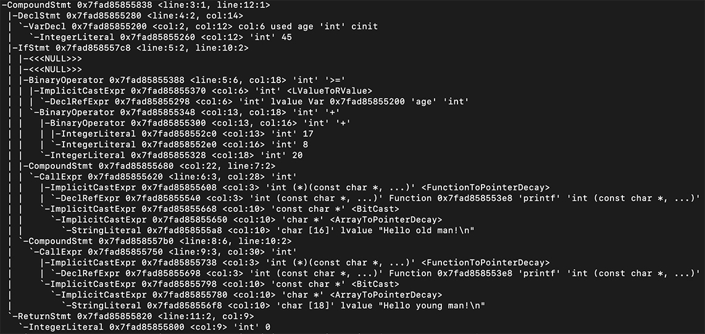
如果你觉得这棵树还不够直观，可以参考我提供的网址，它能够生成JavaScript语言的AST，并以更加直观的方式呈现。
在这个网址里输入一个可以计算的表达式，例如“2+3*5”，你会得到一棵类似下图的AST。

形成AST以后有什么好处呢？就是计算机很容易去处理。比如，针对表达式形成的这棵树，从根节点遍历整棵树就可以获得表达式的值。基于这个原理，我在后面的课程中会带你实现一个计算器，并实现自定义公式功能。
如果再把循环语句、判断语句、赋值语句等节点加到AST上，并解释执行它，那么你实际上就实现了一个脚本语言。而执行脚本语言的过程，就是遍历AST的过程。当然，在后面的课程中，我也会带你实际实现一个脚本语言。
好了，你已经知道了AST的作用，那么怎样写程序构造它呢？
一种非常直观的构造思路是自上而下进行分析。首先构造根节点，代表整个程序，之后向下扫描Token串，构建它的子节点。当它看到一个int类型的Token时，知道这儿遇到了一个变量声明语句，于是建立一个“变量声明”节点；接着遇到age，建立一个子节点，这是第一个变量；之后遇到=，意味着这个变量有初始化值，那么建立一个初始化的子节点；最后，遇到“字面量”，其值是45。
这样，一棵子树就扫描完毕了。程序退回到根节点，开始构建根节点的第二个子节点。这样递归地扫描，直到构建起一棵完整的树。

这个算法就是非常常用的递归下降算法（Recursive Descent Parsing）。是不是很简单？你完全可以动手写出来。
递归下降算法是一种自顶向下的算法，与之对应的，还有自底向上的算法。这个算法会先将最下面的叶子节点识别出来，然后再组装上一级节点。有点儿像搭积木，我们总是先构造出小的单元，然后再组装成更大的单元。原理就是这么简单。
也许你会想，除了手写，有没有偷懒的、更省事的方法呢？多一些时间去陪家人总不是坏事。
你现在已经有了一定的经验，大可以去找找看有没有现成的工具，比如Yacc（或GNU的版本，Bison）、Antlr、JavaCC等。实际上，你可以在维基百科里找到一个挺大的清单，我把它放到了CSDN的博客上，其中对各种工具的特性做了比较。
顺理成章地，你还能找到很多开源的语法规则文件，改一改，就能用工具生成你的语法分析器。
很多同学其实已经做过语法解析的工作，比如编写一个自定义公式的功能，对公式的解析就是语法分析过程。另一个例子是分析日志文件等文本文件，对每行日志的解析，本质上也是语法分析过程。解析用XML、JSON写的各种配置文件、模型定义文件的过程，其实本质也是语法分析过程，甚至还包含了语义分析工作。
语义分析（Semantic Analysis）
好了，讲完了词法分析、语法分析，编译器接下来做的工作是语义分析。说白了，语义分析就是要让计算机理解我们的真实意图，把一些模棱两可的地方消除掉。
以“You can never drink too much water.” 这句话为例。它的确切含义是什么？是“你不能喝太多水”，还是“你喝多少水都不嫌多”？实际上，这两种解释都是可以的，我们只有联系上下文才能知道它的准确含义。
你可能会觉得理解自然语言的含义已经很难了，所以计算机语言的语义分析也一定很难。其实语义分析没那么复杂，因为计算机语言的语义一般可以表达为一些规则，你只要检查是否符合这些规则就行了。比如：
某个表达式的计算结果是什么数据类型？如果有数据类型不匹配的情况，是否要做自动转换？
如果在一个代码块的内部和外部有相同名称的变量，我在执行的时候到底用哪个？ 就像“我喜欢又聪明又勇敢的你”中的“你”，到底指的是谁，需要明确。
在同一个作用域内，不允许有两个名称相同的变量，这是唯一性检查。你不能刚声明一个变量a，紧接着又声明同样名称的一个变量a，这就不允许了。
语义分析基本上就是做这样的事情，也就是根据语义规则进行分析判断。
语义分析工作的某些成果，会作为属性标注在抽象语法树上，比如在age这个标识符节点和45这个字面量节点上，都会标识它的数据类型是int型的。
在这个树上还可以标记很多属性，有些属性是在之前的两个阶段就被标注上了，比如所处的源代码行号，这一行的第几个字符。这样，在编译程序报错的时候，就可以比较清楚地了解出错的位置。
做了这些属性标注以后，编译器在后面就可以依据这些信息生成目标代码了，我们在编译技术的后端部分会去讲。
课程小结
讲完语义分析，本节课也就告一段落了，我来总结一下本节课的重点内容：
词法分析是把程序分割成一个个Token的过程，可以通过构造有限自动机来实现。
语法分析是把程序的结构识别出来，并形成一棵便于由计算机处理的抽象语法树。可以用递归下降的算法来实现。
语义分析是消除语义模糊，生成一些属性信息，让计算机能够依据这些信息生成目标代码。
我想让你知道，上述编译过程其实跟你的实际工作息息相关。比如，词法分析就是你工作中使用正则表达式的过程。而语法分析在你解析文本文件、配置文件、模型定义文件，或者做自定义公式功能的时候都会用到。
我还想让你知道，编译技术并没有那么难，它的核心原理是很容易理解的。学习之后，你能很快上手，如果善用一些辅助生成工具会更省事。所以，我希望你通过学习这篇文章，已经破除了一些心理障碍，并跃跃欲试，想要动手做点儿什么了！
一课一思
你有没有觉得，刚开始学编译原理中的某些知识点时特别难，一旦学通了以后，就会发出类似的感慨：“啊！原来就是这么回事！”欢迎在留言区与我分享你的感慨时刻。另外，你是否尝试实现过一个编译器，还颇有一些心得？可以在留言区与大家一起交流。
最后，感谢你的阅读，如果这篇文章让你有所收获，也欢迎你将它分享给更多的朋友。
02 正则文法和有限自动机：纯手工打造词法分析器
上一讲，我提到词法分析的工作是将一个长长的字符串识别出一个个的单词，这一个个单词就是Token。而且词法分析的工作是一边读取一边识别字符串的，不是把字符串都读到内存再识别。你在听一位朋友讲话的时候，其实也是同样的过程，一边听，一边提取信息。
那么问题来了，字符串是一连串的字符形成的，怎么把它断开成一个个的Token呢？分割的依据是什么呢？本节课，我会通过讲解正则表达式（Regular Expression）和有限自动机的知识带你解决这个问题。
其实，我们手工打造词法分析器的过程，就是写出正则表达式，画出有限自动机的图形，然后根据图形直观地写出解析代码的过程。而我今天带你写的词法分析器，能够分析以下3个程序语句：
- age >= 45
- int age = 40
- 2+3*5
它们分别是关系表达式、变量声明和初始化语句，以及算术表达式。
接下来，我们先来解析一下“age >= 45”这个关系表达式，这样你就能理解有限自动机的概念，知道它是做词法解析的核心机制了。
解析 age >= 45
在“01 | 理解代码：编译器的前端技术”里，我举了一个词法分析的例子，并且提出词法分析要用到有限自动机。当时，我画了这样一个示意图：

我们来描述一下标识符、比较操作符和数字字面量这三种Token的词法规则。
- 标识符：第一个字符必须是字母，后面的字符可以是字母或数字。
- 比较操作符：>和>=（其他比较操作符暂时忽略）。
- 数字字面量：全部由数字构成（像带小数点的浮点数，暂时不管它）。
我们就是依据这样的规则，来构造有限自动机的。这样，词法分析程序在遇到age、>=和45时，会分别识别成标识符、比较操作符和数字字面量。不过上面的图只是一个简化的示意图，一个严格意义上的有限自动机是下面这种画法：

我来解释一下上图的5种状态。
1.初始状态：刚开始启动词法分析的时候，程序所处的状态。
2.标识符状态：在初始状态时，当第一个字符是字母的时候，迁移到状态2。当后续字符是字母和数字时，保留在状态2。如果不是，就离开状态2，写下该Token，回到初始状态。
3.大于操作符（GT）：在初始状态时，当第一个字符是>时，进入这个状态。它是比较操作符的一种情况。
4.大于等于操作符（GE）：如果状态3的下一个字符是=，就进入状态4，变成>=。它也是比较操作符的一种情况。
5.数字字面量：在初始状态时，下一个字符是数字，进入这个状态。如果后续仍是数字，就保持在状态5。
这里我想补充一下，你能看到上图中的圆圈有单线的也有双线的。双线的意思是这个状态已经是一个合法的Token了，单线的意思是这个状态还是临时状态。
按照这5种状态迁移过程，你很容易编成程序（我用Java写了代码示例，你可以用自己熟悉的语言编写）。我们先从状态1开始，在遇到不同的字符时，分别进入2、3、5三个状态：
DfaState newState = DfaState.Initial;
if (isAlpha(ch)) { //第一个字符是字母
newState = DfaState.Id; //进入Id状态
token.type = TokenType.Identifier;
tokenText.append(ch);
} else if (isDigit(ch)) { //第一个字符是数字
newState = DfaState.IntLiteral;
token.type = TokenType.IntLiteral;
tokenText.append(ch);
} else if (ch == '>') { //第一个字符是>
newState = DfaState.GT;
token.type = TokenType.GT;
tokenText.append(ch);
}
上面的代码中，我用Java中的枚举（enum）类型定义了一些枚举值来代表不同的状态，让代码更容易读。
其中Token是自定义的一个数据结构，它有两个主要的属性：一个是“type”，就是Token的类型，它用的也是一个枚举类型的值；一个是“text”，也就是这个Token的文本值。
我们接着处理进入2、3、5三个状态之后的状态迁移过程：
case Initial:
state = initToken(ch); //重新确定后续状态
break;
case Id:
if (isAlpha(ch) || isDigit(ch)) {
tokenText.append(ch); //保持标识符状态
} else {
state = initToken(ch); //退出标识符状态，并保存Token
}
break;
case GT:
if (ch == '=') {
token.type = TokenType.GE; //转换成GE
state = DfaState.GE;
tokenText.append(ch);
} else {
state = initToken(ch); //退出GT状态，并保存Token
}
break;
case GE:
state = initToken(ch); //退出当前状态，并保存Token
break;
case IntLiteral:
if (isDigit(ch)) {
tokenText.append(ch); //继续保持在数字字面量状态
} else {
state = initToken(ch); //退出当前状态，并保存Token
}
break;
运行这个示例程序，你就会成功地解析类似“age >= 45”这样的程序语句。不过，你可以先根据我的讲解自己实现一下，然后再去参考这个示例程序。
示例程序的输出如下，其中第一列是Token的类型，第二列是Token的文本值：
Identifier age
GE >=
IntLiteral 45
上面的例子虽然简单，但其实已经讲清楚了词法原理，就是依据构造好的有限自动机，在不同的状态中迁移，从而解析出Token来。你只要再扩展这个有限自动机，增加里面的状态和迁移路线，就可以逐步实现一个完整的词法分析器了。
初识正则表达式
但是，这里存在一个问题。我们在描述词法规则时用了自然语言。比如，在描述标识符的规则时，我们是这样表达的：
第一个字符必须是字母，后面的字符可以是字母或数字。
这样描述规则并不精确，我们需要换一种严谨的表达方式，这种方式就是正则表达式。
上面的例子涉及了4种Token，这4种Token用正则表达式表达，是下面的样子：
Id : [a-zA-Z_] ([a-zA-Z_] | [0-9])*
IntLiteral: [0-9]+
GT : '>'
GE : '>='
我先来解释一下这几个规则中用到的一些符号：

需要注意的是，不同语言的标识符、整型字面量的规则可能是不同的。比如，有的语言可以允许用Unicode作为标识符，也就是说变量名称可以是中文的。还有的语言规定，十进制数字字面量的第一位不能是0。这时候正则表达式会有不同的写法，对应的有限自动机自然也不同。而且，不同工具的正则表达式写法会略有不同，但大致是差不多的。
我在本节课讲正则表达式，主要是为了让词法规则更为严谨，当然了，也是为后面的内容做铺垫。在后面的课程中，我会带你用工具生成词法分析器，而工具读取的就是用正则表达式描述的词法规则。到时候，我们会把所有常用的词法都用正则表达式描述出来。
不过在这之前，如果你想主动了解更完整的正则表达式规则，完全可以参考自己所采用的正则表达式工具的文档。比如，Java的正则式表达式工具在java.util.regex包中，在其Javadoc中有详细的规则说明。
解析int age = 40，处理标识符和关键字规则的冲突
说完正则表达式，我们接着去处理其他词法，比如解析“int age = 40”这个语句，以这个语句为例研究一下词法分析中会遇到的问题：多个规则之间的冲突。
如果我们把这个语句涉及的词法规则用正则表达式写出来，是下面这个样子：
Int: 'int'
Id : [a-zA-Z_] ([a-zA-Z_] | [0-9])*
Assignment : '='
这时候，你可能会发现这样一个问题：int这个关键字，与标识符很相似，都是以字母开头，后面跟着其他字母。
换句话说，int这个字符串，既符合标识符的规则，又符合int这个关键字的规则，这两个规则发生了重叠。这样就起冲突了，我们扫描字符串的时候，到底该用哪个规则呢？
当然，我们心里知道，int这个关键字的规则，比标识符的规则优先级高。普通的标识符是不允许跟这些关键字重名的。
在这里，我们来回顾一下：什么是关键字？
关键字是语言设计中作为语法要素的词汇，例如表示数据类型的int、char，表示程序结构的while、if，表述特殊数据取值的null、NAN等。
除了关键字，还有一些词汇叫保留字。保留字在当前的语言设计中还没用到，但是保留下来，因为将来会用到。我们命名自己的变量、类名称，不可以用到跟关键字和保留字相同的字符串。那么我们在词法分析器中，如何把关键字和保留字跟标识符区分开呢？
以“int age = 40”为例，我们把有限自动机修改成下面的样子，借此解决关键字和标识符的冲突。

这个思路其实很简单。在识别普通的标识符之前，你先看看它是关键字还是保留字就可以了。具体做法是：
当第一个字符是i的时候，我们让它进入一个特殊的状态。接下来，如果它遇到n和t，就进入状态4。但这还没有结束，如果后续的字符还有其他的字母和数字，它又变成了普通的标识符。比如，我们可以声明一个intA（int和A是连着的）这样的变量，而不会跟int关键字冲突。
相应的代码也修改一下，文稿里的第一段代码要改成：
if (isAlpha(ch)) {
if (ch == 'i') {
newState = DfaState.Id_int1; //对字符i特殊处理
} else {
newState = DfaState.Id;
}
... //后续代码
}
第二段代码要增加下面的语句：
case Id_int1:
if (ch == 'n') {
state = DfaState.Id_int2;
tokenText.append(ch);
}
else if (isDigit(ch) || isAlpha(ch)){
state = DfaState.Id; //切换回Id状态
tokenText.append(ch);
}
else {
state = initToken(ch);
}
break;
case Id_int2:
if (ch == 't') {
state = DfaState.Id_int3;
tokenText.append(ch);
}
else if (isDigit(ch) || isAlpha(ch)){
state = DfaState.Id; //切换回Id状态
tokenText.append(ch);
}
else {
state = initToken(ch);
}
break;
case Id_int3:
if (isBlank(ch)) {
token.type = TokenType.Int;
state = initToken(ch);
}
else{
state = DfaState.Id; //切换回Id状态
tokenText.append(ch);
}
break;
接着，我们运行示例代码，就会输出下面的信息：
Int int
Identifier age
Assignment =
IntLiteral 45
而当你试着解析“intA = 10”程序的时候，会把intA解析成一个标识符。输出如下：
Identifier intA
Assignment =
IntLiteral 10
解析算术表达式
解析完“int age = 40”之后，我们再按照上面的方法增加一些规则，这样就能处理算术表达式，例如“2+3*5”。 增加的词法规则如下：
Plus : '+'
Minus : '-'
Star : '*'
Slash : '/'
然后再修改一下有限自动机和代码，就能解析“2+3*5”了，会得到下面的输出：
IntLiteral 2
Plus +
IntLiteral 3
Star *
IntLiteral 5
好了，现在我们已经能解析不少词法了，之后的课程里，我会带你实现一个公式计算器，所以在这里要先准备好所需要的词法分析功能。
课程小结
本节课，我们实现了一个简单的词法分析器。你可以看到，要实现一个词法分析器，首先需要写出每个词法的正则表达式，并画出有限自动机，之后，只要用代码表示这种状态迁移过程就可以了。
我们总是说理解原理以后，实现并不困难。今天的分享，你一定有所共鸣。
反之，如果你在编程工作中遇到困难，往往是因为不清楚原理，没有将原理吃透。而这门课就是要帮助你真正吃透编译技术中的几个核心原理，让你将知识应用到实际工作中，解决工作中遇到的困难。
小试了词法分析器之后，在下一讲，我会带你手工打造一下语法分析器，并实现一个公式计算器的功能。
一课一思
很多同学已经用到过正则表达式，这是学计算机必懂的知识点，十分有用。正则表达式工具其实就可以看做一个通用的词法分析器。那么你都用正则表达式功能做过哪些事情？有没有发现一些软件工具因为支持正则表达式而变得特别强大的情况呢？可以在留言区与大家一起交流。
最后，感谢你的阅读，如果这篇文章让你有所收获，也欢迎你将它分享给更多的朋友。
另外，为了便于你更好地学习，我将本节课的示例程序放到了GitHub上，你可以看一下。
03 语法分析（一）：纯手工打造公式计算器
我想你应该知道，公式是Excel电子表格软件的灵魂和核心。除此之外，在HR软件中，可以用公式自定义工资。而且，如果你要开发一款通用报表软件，也会大量用到自定义公式来计算报表上显示的数据。总而言之，很多高级一点儿的软件，都会用到自定义公式功能。
既然公式功能如此常见和重要，我们不妨实现一个公式计算器，给自己的软件添加自定义公式功能吧！
本节课将继续“手工打造”之旅，让你纯手工实现一个公式计算器，借此掌握语法分析的原理和递归下降算法（Recursive Descent Parsing），并初步了解上下文无关文法（Context-free Grammar，CFG）。
我所举例的公式计算器支持加减乘除算术运算，比如支持“2 + 3 * 5”的运算。
在学习语法分析时，我们习惯把上面的公式称为表达式。这个表达式看上去很简单，但你能借此学到很多语法分析的原理，例如左递归、优先级和结合性等问题。
当然了，要实现上面的表达式，你必须能分析它的语法。不过在此之前，我想先带你解析一下变量声明语句的语法，以便让你循序渐进地掌握语法分析。
解析变量声明语句：理解“下降”的含义
在“01 | 理解代码：编译器的前端技术”里，我提到语法分析的结果是生成AST。算法分为自顶向下和自底向上算法，其中，递归下降算法是一种常见的自顶向下算法。
与此同时，我给出了一个简单的代码示例，也针对“int age = 45”这个语句，画了一个语法分析算法的示意图：

我们首先把变量声明语句的规则，用形式化的方法表达一下。它的左边是一个非终结符（Non-terminal）。右边是它的产生式（Production Rule）。在语法解析的过程中，左边会被右边替代。如果替代之后还有非终结符，那么继续这个替代过程，直到最后全部都是终结符（Terminal），也就是Token。只有终结符才可以成为AST的叶子节点。这个过程，也叫做推导（Derivation）过程：
intDeclaration : Int Identifier ('=' additiveExpression)?;
你可以看到，int类型变量的声明，需要有一个Int型的Token，加一个变量标识符，后面跟一个可选的赋值表达式。我们把上面的文法翻译成程序语句，伪代码如下：
//伪代码
MatchIntDeclare(){
MatchToken(Int)； //匹配Int关键字
MatchIdentifier(); //匹配标识符
MatchToken(equal); //匹配等号
MatchExpression(); //匹配表达式
}
实际代码在SimpleCalculator.java类的IntDeclare()方法中：
SimpleASTNode node = null;
Token token = tokens.peek(); //预读
if (token != null && token.getType() == TokenType.Int) { //匹配Int
token = tokens.read(); //消耗掉int
if (tokens.peek().getType() == TokenType.Identifier) { //匹配标识符
token = tokens.read(); //消耗掉标识符
//创建当前节点，并把变量名记到AST节点的文本值中，
//这里新建一个变量子节点也是可以的
node = new SimpleASTNode(ASTNodeType.IntDeclaration, token.getText());
token = tokens.peek(); //预读
if (token != null && token.getType() == TokenType.Assignment) {
tokens.read(); //消耗掉等号
SimpleASTNode child = additive(tokens); //匹配一个表达式
if (child == null) {
throw new Exception("invalide variable initialization, expecting an expression");
}
else{
node.addChild(child);
}
}
} else {
throw new Exception("variable name expected");
}
}
直白地描述一下上面的算法：
解析变量声明语句时，我先看第一个Token是不是int。如果是，那我创建一个AST节点，记下int后面的变量名称，然后再看后面是不是跟了初始化部分，也就是等号加一个表达式。我们检查一下有没有等号，有的话，接着再匹配一个表达式。
我们通常会对产生式的每个部分建立一个子节点，比如变量声明语句会建立四个子节点，分别是int关键字、标识符、等号和表达式。后面的工具就是这样严格生成AST的。但是我这里做了简化，只生成了一个子节点，就是表达式子节点。变量名称记到ASTNode的文本值里去了，其他两个子节点没有提供额外的信息，就直接丢弃了。
另外，从上面的代码中我们看到，程序是从一个Token的流中顺序读取。代码中的peek()方法是预读，只是读取下一个Token，但并不把它从Token流中移除。在代码中，我们用peek()方法可以预先看一下下一个Token是否是等号，从而知道后面跟着的是不是一个表达式。而read()方法会从Token流中移除，下一个Token变成了当前的Token。
这里需要注意的是，通过peek()方法来预读，实际上是对代码的优化，这有点儿预测的意味。我们后面会讲带有预测的自顶向下算法，它能减少回溯的次数。
我们把解析变量声明语句和表达式的算法分别写成函数。在语法分析的时候，调用这些函数跟后面的Token串做模式匹配。匹配上了，就返回一个AST节点，否则就返回null。如果中间发现跟语法规则不符，就报编译错误。
在这个过程中，上级文法嵌套下级文法，上级的算法调用下级的算法。表现在生成AST中，上级算法生成上级节点，下级算法生成下级节点。这就是“下降”的含义。
分析上面的伪代码和程序语句，你可以看到这样的特点：程序结构基本上是跟文法规则同构的。这就是递归下降算法的优点，非常直观。
接着说回来，我们继续运行这个示例程序，输出AST：
Programm Calculator
IntDeclaration age
AssignmentExp =
IntLiteral 45
前面的文法和算法都很简单，这样级别的文法没有超出正则文法。也就是说，并没有超出我们做词法分析时用到的文法。
好了，解析完变量声明语句，带你理解了“下降”的含义之后，我们来看看如何用上下文无关文法描述算术表达式。
用上下文无关文法描述算术表达式
我们解析算术表达式的时候，会遇到更复杂的情况，这时，正则文法不够用，我们必须用上下文无关文法来表达。你可能会问：“正则文法为什么不能表示算术表达式？”别着急，我们来分析一下算术表达式的语法规则。
算术表达式要包含加法和乘法两种运算（简单起见，我们把减法与加法等同看待，把除法也跟乘法等同看待），加法和乘法运算有不同的优先级。我们的规则要能匹配各种可能的算术表达式：
- 2+3*5
- 2*3+5
- 2*3
- ……
思考一番之后，我们把规则分成两级：第一级是加法规则，第二级是乘法规则。把乘法规则作为加法规则的子规则，这样在解析形成AST时，乘法节点就一定是加法节点的子节点，从而被优先计算。
additiveExpression
: multiplicativeExpression
| additiveExpression Plus multiplicativeExpression
;
multiplicativeExpression
: IntLiteral
| multiplicativeExpression Star IntLiteral
;
你看，我们可以通过文法的嵌套，实现对运算优先级的支持。这样我们在解析“2 + 3 * 5”这个算术表达式时会形成类似下面的AST：

如果要计算表达式的值，只需要对根节点求值就可以了。为了完成对根节点的求值，需要对下级节点递归求值，所以我们先完成“3 * 5 = 15”，然后再计算“2 + 15 = 17”。
有了这个认知，我们在解析算术表达式的时候，便能拿加法规则去匹配。在加法规则中，会嵌套地匹配乘法规则。我们通过文法的嵌套，实现了计算的优先级。
应该注意的是，加法规则中还递归地又引用了加法规则。通过这种递归的定义，我们能展开、形成所有各种可能的算术表达式。比如“2+3*5” 的推导过程：
-->additiveExpression + multiplicativeExpression
-->multiplicativeExpression + multiplicativeExpression
-->IntLiteral + multiplicativeExpression
-->IntLiteral + multiplicativeExpression * IntLiteral
-->IntLiteral + IntLiteral * IntLiteral
这种文法已经没有办法改写成正则文法了，它比正则文法的表达能力更强，叫做“上下文无关文法”。正则文法是上下文无关文法的一个子集。它们的区别呢，就是上下文无关文法允许递归调用，而正则文法不允许。
上下文无关的意思是，无论在任何情况下，文法的推导规则都是一样的。比如，在变量声明语句中可能要用到一个算术表达式来做变量初始化，而在其他地方可能也会用到算术表达式。不管在什么地方，算术表达式的语法都一样，都允许用加法和乘法，计算优先级也不变。好在你见到的大多数计算机语言，都能用上下文无关文法来表达它的语法。
那有没有上下文相关的情况需要处理呢？也是有的，但那不是语法分析阶段负责的，而是放在语义分析阶段来处理的。
解析算术表达式：理解“递归”的含义
在讲解上下文无关文法时，我提到了文法的递归调用，你也许会问，是否在算法上也需要递归的调用呢？要不怎么叫做“递归下降算法”呢？
的确，我们之前的算法只算是用到了“下降”，没有涉及“递归”，现在，我们就来看看如何用递归的算法翻译递归的文法。
我们先按照前面说的，把文法直观地翻译成算法。但是，我们遇到麻烦了。这个麻烦就是出现了无穷多次调用的情况。我们来看个例子。
为了简单化，我们采用下面这个简化的文法，去掉了乘法的层次：
additiveExpression
: IntLiteral
| additiveExpression Plus IntLiteral
;
在解析 “2 + 3”这样一个最简单的加法表达式的时候，我们直观地将其翻译成算法，结果出现了如下的情况：
- 首先匹配是不是整型字面量，发现不是；
- 然后匹配是不是加法表达式，这里是递归调用；
- 会重复上面两步，无穷无尽。
“additiveExpression Plus multiplicativeExpression”这个文法规则的第一部分就递归地引用了自身，这种情况叫做左递归。通过上面的分析，我们知道左递归是递归下降算法无法处理的，这是递归下降算法最大的问题。
怎么解决呢？把“additiveExpression”调换到加号后面怎么样？我们来试一试。
additiveExpression
: multiplicativeExpression
| multiplicativeExpression Plus additiveExpression
;
我们接着改写成算法，这个算法确实不会出现无限调用的问题：
private SimpleASTNode additive(TokenReader tokens) throws Exception {
SimpleASTNode child1 = multiplicative(); //计算第一个子节点
SimpleASTNode node = child1; //如果没有第二个子节点，就返回这个
Token token = tokens.peek();
if (child1 != null && token != null) {
if (token.getType() == TokenType.Plus) {
token = tokens.read();
SimpleASTNode child2 = additive(); //递归地解析第二个节点
if (child2 != null) {
node = new SimpleASTNode(ASTNodeType.AdditiveExp, token.getText());
node.addChild(child1);
node.addChild(child2);
} else {
throw new Exception("invalid additive expression, expecting the right part.");
}
}
}
return node;
}
为了便于你理解，我解读一下上面的算法：
我们先尝试能否匹配乘法表达式，如果不能，那么这个节点肯定不是加法节点，因为加法表达式的两个产生式都必须首先匹配乘法表达式。遇到这种情况，返回null就可以了，调用者就这次匹配没有成功。如果乘法表达式匹配成功，那就再尝试匹配加号右边的部分，也就是去递归地匹配加法表达式。如果匹配成功，就构造一个加法的ASTNode返回。
同样的，乘法的文法规则也可以做类似的改写：
multiplicativeExpression
: IntLiteral
| IntLiteral Star multiplicativeExpression
;
现在我们貌似解决了左递归问题，运行这个算法解析 “2+3*5”，得到下面的AST：
Programm Calculator
AdditiveExp +
IntLiteral 2
MulticativeExp *
IntLiteral 3
IntLiteral 5
是不是看上去一切正常？可如果让这个程序解析“2+3+4”呢？
Programm Calculator
AdditiveExp +
IntLiteral 2
AdditiveExp +
IntLiteral 3
IntLiteral 4
问题是什么呢？计算顺序发生错误了。连续相加的表达式要从左向右计算，这是加法运算的结合性规则。但按照我们生成的AST，变成从右向左了，先计算了“3+4”，然后才跟“2”相加。这可不行！
为什么产生上面的问题呢？是因为我们修改了文法，把文法中加号左右两边的部分调换了一下。造成的影响是什么呢？你可以推导一下“2+3+4”的解析过程：
- 首先调用乘法表达式匹配函数multiplicative()，成功，返回了一个字面量节点2。
- 接着看看右边是否能递归地匹配加法表达式。
- 匹配的结果，真的返回了一个加法表达式“3+4”，这个变成了第二个子节点。错误就出在这里了。这样的匹配顺序，“3+4”一定会成为子节点，在求值时被优先计算。
所以，我们前面的方法其实并没有完美地解决左递归，因为它改变了加法运算的结合性规则。那么，我们能否既解决左递归问题，又不产生计算顺序的错误呢？答案是肯定的。不过我们下一讲再来解决它。目前先忍耐一下，凑合着用这个“半吊子”的算法吧。
实现表达式求值
上面帮助你理解了“递归”的含义，接下来，我要带你实现表达式的求值。其实，要实现一个表达式计算，只需要基于AST做求值运算。这个计算过程比较简单，只需要对这棵树做深度优先的遍历就好了。
深度优先的遍历也是一个递归算法。以上文中“2 + 3 * 5”的AST为例看一下。
- 对表达式的求值，等价于对AST根节点求值。
- 首先求左边子节点，算出是2。
- 接着对右边子节点求值，这时候需要递归计算下一层。计算完了以后，返回是15（3*5）。
- 把左右节点相加，计算出根节点的值17。
代码参见SimpleCalculator.Java中的evaluate()方法。
还是以“2+3*5”为例。它的求值过程输出如下，你可以看到求值过程中遍历了整棵树：
Calculating: AdditiveExp //计算根节点
Calculating: IntLiteral //计算第一个子节点
Result: 2 //结果是2
Calculating: MulticativeExp //递归计算第二个子节点
Calculating: IntLiteral
Result: 3
Calculating: IntLiteral
Result: 5
Result: 15 //忽略递归的细节，得到结果是15
Result: 17 //根节点的值是17
你可以运行一下示例程序看看输出结果，而且我十分建议你修改表达式，自己做做实验，并试着让表达式不符合语法，看看语法分析程序能不能找出错误来。
课程小结
今天我们实现了一个简单的公式计算器，尽管简单，相信你已经有了收获。那么我来总结一下今天的重点：
- 初步了解上下文无关文法，知道它能表达主流的计算机语言，以及与正则文法的区别。
- 理解递归下降算法中的“下降”和“递归”两个特点。它跟文法规则基本上是同构的，通过文法一定能写出算法。
- 通过遍历AST对表达式求值，加深对计算机程序执行机制的理解。
在后面的课程中，我们会在此基础上逐步深化，比如在变量声明中可以使用表达式，在表达式中可以使用变量，例如能够执行像这样的语句：
int A = 17；
int B = A + 10*2;
实现了上述功能以后，这个程序就越来越接近一个简单的脚本解释器了！当然，在此之前，我们还必须解决左递归的问题。所以下一讲，我会带你填掉左递归这个坑。我们学习和工作的过程，就是在不停地挖坑、填坑，你要有信心，只要坚强走过填坑这段路，你的职业生涯将会愈发平坦！
一课一思
递归算法是很好的自顶向下解决问题的方法，是计算机领域的一个核心的思维方式。拥有这种思维方式，可以说是程序员相对于非程序员的一种优势。
那么，你是否用递归算法或递归思维解决过工作中或者生活中存在的某些问题？你能否再找一些证据证明一下，哪些语法规则只能用上下文无关文法表达，用正则文法是怎样都写不出来的？ 欢迎在留言区和我一起讨论。
最后，十分感谢你的阅读，如果这篇文章让你有所收获，也欢迎你将它分享给更多的朋友。
04 语法分析（二）：解决二元表达式中的难点
在“03 | 语法分析（一）：纯手工打造公式计算器”中，我们已经初步实现了一个公式计算器。而且你还在这个过程中，直观地获得了写语法分析程序的体验，在一定程度上破除了对语法分析算法的神秘感。
当然了，你也遇到了一些问题，比如怎么消除左递归，怎么确保正确的优先级和结合性。所以本节课的主要目的就是解决这几个问题，让你掌握像算术运算这样的二元表达式（Binary Expression）。
不过在课程开始之前，我想先带你简单地温习一下什么是左递归（Left Recursive）、优先级（Priority）和结合性（Associativity）。
在二元表达式的语法规则中，如果产生式的第一个元素是它自身，那么程序就会无限地递归下去，这种情况就叫做左递归。比如加法表达式的产生式“加法表达式 + 乘法表达式”，就是左递归的。而优先级和结合性则是计算机语言中与表达式有关的核心概念。它们都涉及了语法规则的设计问题。
我们要想深入探讨语法规则设计，需要像在词法分析环节一样，先了解如何用形式化的方法表达语法规则。“工欲善其事必先利其器”。熟练地阅读和书写语法规则，是我们在语法分析环节需要掌握的一项基本功。
所以本节课我会先带你了解如何写语法规则，然后在此基础上，带你解决上面提到的三个问题。
书写语法规则，并进行推导
我们已经知道，语法规则是由上下文无关文法表示的，而上下文无关文法是由一组替换规则（又叫产生式）组成的，比如算术表达式的文法规则可以表达成下面这种形式：
add -> mul | add + mul
mul -> pri | mul * pri
pri -> Id | Num | (add)
按照上面的产生式，add可以替换成mul，或者add + mul。这样的替换过程又叫做“推导”。以“2+3*5” 和 “2+3+4”这两个算术表达式为例，这两个算术表达式的推导过程分别如下图所示：

通过上图的推导过程，你可以清楚地看到这两个表达式是怎样生成的。而分析过程中形成的这棵树，其实就是AST。只不过我们手写的算法在生成AST的时候，通常会做一些简化，省略掉中间一些不必要的节点。比如，“add-add-mul-pri-Num”这一条分支，实际手写时会被简化成“add-Num”。其实，简化AST也是优化编译过程的一种手段，如果不做简化，呈现的效果就是上图的样子。
那么，上图中两颗树的叶子节点有哪些呢？Num、+和*都是终结符，终结符都是词法分析中产生的Token。而那些非叶子节点，就是非终结符。文法的推导过程，就是把非终结符不断替换的过程，让最后的结果没有非终结符，只有终结符。
而在实际应用中，语法规则经常写成下面这种形式：
add ::= mul | add + mul
mul ::= pri | mul * pri
pri ::= Id | Num | (add)
这种写法叫做“巴科斯范式”，简称BNF。Antlr和Yacc这两个工具都用这种写法。为了简化书写，我有时会在课程中把“::=”简化成一个冒号。你看到的时候，知道是什么意思就可以了。
你有时还会听到一个术语，叫做扩展巴科斯范式(EBNF)。它跟普通的BNF表达式最大的区别，就是里面会用到类似正则表达式的一些写法。比如下面这个规则中运用了*号，来表示这个部分可以重复0到多次：
add -> mul (+ mul)*
其实这种写法跟标准的BNF写法是等价的，但是更简洁。为什么是等价的呢？因为一个项多次重复，就等价于通过递归来推导。从这里我们还可以得到一个推论：就是上下文无关文法包含了正则文法，比正则文法能做更多的事情。
确保正确的优先级
掌握了语法规则的写法之后，我们来看看如何用语法规则来保证表达式的优先级。刚刚，我们由加法规则推导到乘法规则，这种方式保证了AST中的乘法节点一定会在加法节点的下层，也就保证了乘法计算优先于加法计算。
听到这儿，你一定会想到，我们应该把关系运算（>、=、<）放在加法的上层，逻辑运算（and、or）放在关系运算的上层。的确如此，我们试着将它写出来：
exp -> or | or = exp
or -> and | or || and
and -> equal | and && equal
equal -> rel | equal == rel | equal != rel
rel -> add | rel > add | rel < add | rel >= add | rel <= add
add -> mul | add + mul | add - mul
mul -> pri | mul * pri | mul / pri
这里表达的优先级从低到高是：赋值运算、逻辑运算（or）、逻辑运算（and）、相等比较（equal）、大小比较（rel）、加法运算（add）、乘法运算（mul）和基础表达式（pri）。
实际语言中还有更多不同的优先级，比如位运算等。而且优先级是能够改变的，比如我们通常会在语法里通过括号来改变计算的优先级。不过这怎么表达成语法规则呢？
其实，我们在最低层，也就是优先级最高的基础表达式（pri）这里，用括号把表达式包裹起来，递归地引用表达式就可以了。这样的话，只要在解析表达式的时候遇到括号，那么就知道这个是最优先的。这样的话就实现了优先级的改变：
pri -> Id | Literal | (exp)
了解了这些内容之后，到目前为止，你已经会写整套的表达式规则了，也能让公式计算器支持这些规则了。另外，在使用一门语言的时候，如果你不清楚各种运算确切的优先级，除了查阅常规的资料，你还多了一项新技能，就是阅读这门语言的语法规则文件，这些规则可能就是用BNF或EBNF的写法书写的。
弄明白优先级的问题以后，我们再来讨论一下结合性这个问题。
确保正确的结合性
在上一讲中，我针对算术表达式写的第二个文法是错的，因为它的计算顺序是错的。“2+3+4”这个算术表达式，先计算了“3+4”然后才和“2”相加，计算顺序从右到左，正确的应该是从左往右才对。
这就是运算符的结合性问题。什么是结合性呢？同样优先级的运算符是从左到右计算还是从右到左计算叫做结合性。我们常见的加减乘除等算术运算是左结合的，“.”符号也是左结合的。
比如“rectangle.center.x” 是先获得长方形（rectangle）的中心点（center），再获得这个点的x坐标。计算顺序是从左向右的。那有没有右结合的例子呢？肯定是有的。赋值运算就是典型的右结合的例子，比如“x = y = 10”。
我们再来回顾一下“2+3+4”计算顺序出错的原因。用之前错误的右递归的文法解析这个表达式形成的简化版本的AST如下：

根据这个AST做计算会出现计算顺序的错误。不过如果我们将递归项写在左边，就不会出现这种结合性的错误。于是我们得出一个规律：对于左结合的运算符，递归项要放在左边；而右结合的运算符，递归项放在右边。
所以你能看到，我们在写加法表达式的规则的时候，是这样写的：
add -> mul | add + mul
这是我们犯错之后所学到的知识。那么问题来了，大多数二元运算都是左结合的，那岂不是都要面临左递归问题？不用担心，我们可以通过改写左递归的文法，解决这个问题。
消除左递归
我提到过左递归的情况，也指出递归下降算法不能处理左递归。这里我要补充一点，并不是所有的算法都不能处理左递归，对于另外一些算法，左递归是没有问题的，比如LR算法。
消除左递归，用一个标准的方法，就能够把左递归文法改写成非左递归的文法。以加法表达式规则为例，原来的文法是“add -> add + mul”，现在我们改写成：
add -> mul add'
add' -> + mul add' | ε
文法中，ε（读作epsilon）是空集的意思。接下来，我们用刚刚改写的规则再次推导一下 “2+3+4”这个表达式，得到了下图中左边的结果：
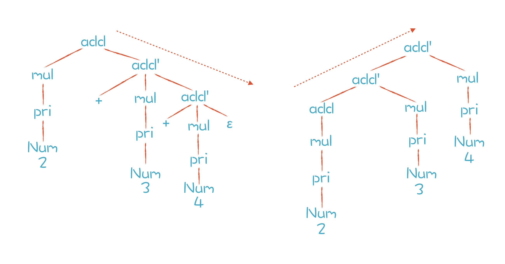
左边的分析树是推导后的结果。问题是，由于add’的规则是右递归的，如果用标准的递归下降算法，我们会跟上一讲一样，又会出现运算符结合性的错误。我们期待的AST是右边的那棵，它的结合性才是正确的。那么有没有解决办法呢？
答案是有的。我们仔细分析一下上面语法规则的推导过程。只有第一步是按照add规则推导，之后都是按照add’规则推导，一直到结束。
如果用EBNF方式表达，也就是允许用*号和+号表示重复，上面两条规则可以合并成一条：
add -> mul (+ mul)*
写成这样有什么好处呢？能够优化我们写算法的思路。对于(+ mul)*这部分，我们其实可以写成一个循环，而不是一次次的递归调用。伪代码如下：
mul();
while(next token is +){
mul()
createAddNode
}
我们扩展一下话题。在研究递归函数的时候，有一个概念叫做尾递归，尾递归函数的最后一句是递归地调用自身。
编译程序通常都会把尾递归转化为一个循环语句，使用的原理跟上面的伪代码是一样的。相对于递归调用来说，循环语句对系统资源的开销更低，因此，把尾递归转化为循环语句也是一种编译优化技术。
好了，我们继续左递归的话题。现在我们知道怎么写这种左递归的算法了，大概是下面的样子：
private SimpleASTNode additive(TokenReader tokens) throws Exception {
SimpleASTNode child1 = multiplicative(tokens); //应用add规则
SimpleASTNode node = child1;
if (child1 != null) {
while (true) { //循环应用add'
Token token = tokens.peek();
if (token != null && (token.getType() == TokenType.Plus || token.getType() == TokenType.Minus)) {
token = tokens.read(); //读出加号
SimpleASTNode child2 = multiplicative(tokens); //计算下级节点
node = new SimpleASTNode(ASTNodeType.Additive, token.getText());
node.addChild(child1); //注意，新节点在顶层，保证正确的结合性
node.addChild(child2);
child1 = node;
} else {
break;
}
}
}
return node;
}
修改完后，再次运行语法分析器分析“2+3+4+5”，会得到正确的AST：
Programm Calculator
AdditiveExp +
AdditiveExp +
AdditiveExp +
IntLiteral 2
IntLiteral 3
IntLiteral 4
IntLiteral 5
这样，我们就把左递归问题解决了。左递归问题是我们用递归下降算法写语法分析器遇到的最大的一只“拦路虎”。解决这只“拦路虎”以后，你的道路将会越来越平坦。
课程小结
今天我们针对优先级、结合性和左递归这三个问题做了更系统的研究。我来带你梳理一下本节课的重点知识：
- 优先级是通过在语法推导中的层次来决定的，优先级越低的，越先尝试推导。
- 结合性是跟左递归还是右递归有关的，左递归导致左结合，右递归导致右结合。
- 左递归可以通过改写语法规则来避免，而改写后的语法又可以表达成简洁的EBNF格式，从而启发我们用循环代替右递归。
为了研究和解决这三个问题，我们还特别介绍了语法规则的产生式写法以及BNF、EBNF写法。在后面的课程中我们会不断用到这个技能，还会用工具来生成语法分析器，我们提供给工具的就是书写良好的语法规则。
到目前为止，你已经闯过了语法分析中比较难的一关。再增加一些其他的语法，你就可以实现出一个简单的脚本语言了！
一课一思
本节课提到了语法的优先级、结合性。那么，你能否梳理一下你熟悉的语言的运算优先级？你能说出更多的左结合、右结合的例子吗？可以在留言区与大家一起交流。
最后，感谢你的阅读，如果这篇文章让你有所收获，也欢迎你将它分享给更多的朋友。
05 语法分析（三）：实现一门简单的脚本语言
前两节课结束后，我们已经掌握了表达式的解析，并通过一个简单的解释器实现了公式的计算。但这个解释器还是比较简单的，看上去还不大像一门语言。那么如何让它支持更多的功能，更像一门脚本语言呢？本节课，我会带你寻找答案。
我将继续带你实现一些功能，比如：
- 支持变量声明和初始化语句，就像“int age” “int age = 45”和“int age = 17+8+20”；
- 支持赋值语句“age = 45”；
- 在表达式中可以使用变量，例如“age + 10 *2”；
- 实现一个命令行终端，能够读取输入的语句并输出结果。
实现这些功能之后，我们的成果会更像一个脚本解释器。而且在这个过程中，我还会带你巩固语法分析中的递归下降算法，和你一起讨论“回溯”这个特征，让你对递归下降算法的特征理解得更加全面。
不过，为了实现这些新的语法，我们首先要把它们用语法规则描述出来。
增加所需要的语法规则
首先，一门脚本语言是要支持语句的，比如变量声明语句、赋值语句等等。单独一个表达式，也可以视为语句，叫做“表达式语句”。你在终端里输入2+3；，就能回显出5来，这就是表达式作为一个语句在执行。按照我们的语法，无非是在表达式后面多了个分号而已。C语言和Java都会采用分号作为语句结尾的标识，我们也可以这样写。
我们用扩展巴科斯范式（EBNF）写出下面的语法规则：
programm: statement+;
statement
: intDeclaration
| expressionStatement
| assignmentStatement
;
变量声明语句以int开头，后面跟标识符，然后有可选的初始化部分，也就是一个等号和一个表达式，最后再加分号：
intDeclaration : 'int' Id ( '=' additiveExpression)? ';';
表达式语句目前只支持加法表达式，未来可以加其他的表达式，比如条件表达式，它后面同样加分号：
expressionStatement : additiveExpression ';';
赋值语句是标识符后面跟着等号和一个表达式，再加分号：
assignmentStatement : Identifier '=' additiveExpression ';';
为了在表达式中可以使用变量，我们还需要把primaryExpression改写，除了包含整型字面量以外，还要包含标识符和用括号括起来的表达式：
primaryExpression : Identifier| IntLiteral | '(' additiveExpression ')';
这样，我们就把想实现的语法特性，都用语法规则表达出来了。接下来，我们就一步一步实现这些特性。
让脚本语言支持变量
之前实现的公式计算器只支持了数字字面量的运算，如果能在表达式中用上变量，会更有用，比如能够执行下面两句：
int age = 45;
age + 10 * 2;
这两个语句里面的语法特性包含了变量声明、给变量赋值，以及在表达式里引用变量。为了给变量赋值，我们必须在脚本语言的解释器中开辟一个存储区，记录不同的变量和它们的值：
private HashMap<String, Integer> variables = new HashMap<String, Integer>();
我们简单地用了一个HashMap作为变量存储区。在变量声明语句和赋值语句里，都可以修改这个变量存储区中的数据，而获取变量值可以采用下面的代码：
if (variables.containsKey(varName)) {
Integer value = variables.get(varName); //获取变量值
if (value != null) {
result = value; //设置返回值
} else { //有这个变量，没有值
throw new Exception("variable " + varName + " has not been set any value");
}
}
else{ //没有这个变量。
throw new Exception("unknown variable: " + varName);
}
通过这样的一个简单的存储机制，我们就能支持变量了。当然，这个存储机制可能过于简单了，我们后面讲到作用域的时候，这么简单的存储机制根本不够。不过目前我们先这么用着，以后再考虑改进它。
解析赋值语句
接下来，我们来解析赋值语句，例如“age = age + 10 * 2；”：
private SimpleASTNode assignmentStatement(TokenReader tokens) throws Exception {
SimpleASTNode node = null;
Token token = tokens.peek(); //预读，看看下面是不是标识符
if (token != null && token.getType() == TokenType.Identifier) {
token = tokens.read(); //读入标识符
node = new SimpleASTNode(ASTNodeType.AssignmentStmt, token.getText());
token = tokens.peek(); //预读，看看下面是不是等号
if (token != null && token.getType() == TokenType.Assignment) {
tokens.read(); //取出等号
SimpleASTNode child = additive(tokens);
if (child == null) { //出错，等号右面没有一个合法的表达式
throw new Exception("invalide assignment statement, expecting an expression");
}
else{
node.addChild(child); //添加子节点
token = tokens.peek(); //预读，看看后面是不是分号
if (token != null && token.getType() == TokenType.SemiColon) {
tokens.read(); //消耗掉这个分号
} else { //报错，缺少分号
throw new Exception("invalid statement, expecting semicolon");
}
}
}
else {
tokens.unread(); //回溯，吐出之前消化掉的标识符
node = null;
}
}
return node;
}
为了方便你理解，我来解读一下上面这段代码的逻辑：
我们既然想要匹配一个赋值语句，那么首先应该看看第一个Token是不是标识符。如果不是，那么就返回null，匹配失败。如果第一个Token确实是标识符，我们就把它消耗掉，接着看后面跟着的是不是等号。如果不是等号，那证明我们这个不是一个赋值语句，可能是一个表达式什么的。那么我们就要回退刚才消耗掉的Token，就像什么都没有发生过一样，并且返回null。回退的时候调用的方法就是unread()。- 如果后面跟着的确实是等号，那么在继续看后面是不是一个表达式，表达式后面跟着的是不是分号。如果不是，就报错就好了。这样就完成了对赋值语句的解析。
利用上面的代码，我们还可以改造一下变量声明语句中对变量初始化的部分，让它在初始化的时候支持表达式，因为这个地方跟赋值语句很像，例如“int newAge = age + 10 * 2；”。
理解递归下降算法中的回溯
不知道你有没有发现，我在设计语法规则的过程中，其实故意设计了一个陷阱，这个陷阱能帮我们更好地理解递归下降算法的一个特点：回溯。理解这个特点能帮助你更清晰地理解递归下降算法的执行过程，从而再去想办法优化它。
考虑一下age = 45；这个语句。肉眼看过去，你马上知道它是个赋值语句，但是当我们用算法去做模式匹配时，就会发生一些特殊的情况。看一下我们对statement语句的定义：
statement
: intDeclaration
| expressionStatement
| assignmentStatement
;
我们首先尝试intDeclaration，但是age = 45；语句不是以int开头的，所以这个尝试会返回null。然后我们接着尝试expressionStatement，看一眼下面的算法：
private SimpleASTNode expressionStatement() throws Exception {
int pos = tokens.getPosition(); //记下初始位置
SimpleASTNode node = additive(); //匹配加法规则
if (node != null) {
Token token = tokens.peek();
if (token != null && token.getType() == TokenType.SemiColon) { //要求一定以分号结尾
tokens.read();
} else {
node = null;
tokens.setPosition(pos); // 回溯
}
}
return node;
}
出现了什么情况呢？age = 45；语句最左边是一个标识符。根据我们的语法规则，标识符是一个合法的addtiveExpresion，因此additive()函数返回一个非空值。接下来，后面应该扫描到一个分号才对，但是显然不是，标识符后面跟的是等号，这证明模式匹配失败。
失败了该怎么办呢？我们的算法一定要把Token流的指针拨回到原来的位置，就像一切都没发生过一样。因为我们不知道addtive()这个函数往下尝试了多少步，因为它可能是一个很复杂的表达式，消耗掉了很多个Token，所以我们必须记下算法开始时候的位置，并在失败时回到这个位置。尝试一个规则不成功之后，恢复到原样，再去尝试另外的规则，这个现象就叫做“回溯”。
因为有可能需要回溯，所以递归下降算法有时会做一些无用功。在assignmentStatement的算法中，我们就通过unread()，回溯了一个Token。而在expressionStatement中，我们不确定要回溯几步，只好提前记下初始位置。匹配expressionStatement失败后，算法去尝试匹配assignmentStatement。这次获得了成功。
试探和回溯的过程，是递归下降算法的一个典型特征。通过上面的例子，你应该对这个典型特征有了更清晰的理解。递归下降算法虽然简单，但它通过试探和回溯，却总是可以把正确的语法匹配出来，这就是它的强大之处。当然，缺点是回溯会拉低一点儿效率。但我们可以在这个基础上进行改进和优化，实现带有预测分析的递归下降，以及非递归的预测分析。有了对递归下降算法的清晰理解，我们去学习其他的语法分析算法的时候，也会理解得更快。
我们接着再讲回溯牵扯出的另一个问题：什么时候该回溯，什么时候该提示语法错误？
大家在阅读示例代码的过程中，应该发现里面有一些错误处理的代码，并抛出了异常。比如在赋值语句中，如果等号后面没有成功匹配一个加法表达式，我们认为这个语法是错的。因为在我们的语法中，等号后面只能跟表达式，没有别的可能性。
token = tokens.read(); //读出等号
node = additive(); //匹配一个加法表达式
if (node == null) {
//等号右边一定需要有另一个表达式
throw new Exception("invalide assignment expression, expecting an additive expression");
}
你可能会意识到一个问题，当我们在算法中匹配不成功的时候，我们前面说的是应该回溯呀，应该再去尝试其他可能性呀，为什么在这里报错了呢？换句话说，什么时候该回溯，什么时候该提示这里发生了语法错误呢？
其实这两种方法最后的结果是一样的。我们提示语法错误的时候，是说我们知道已经没有其他可能的匹配选项了，不需要浪费时间去回溯。就比如，在我们的语法中，等号后面必然跟表达式，否则就一定是语法错误。你在这里不报语法错误，等试探完其他所有选项后，还是需要报语法错误。所以说，提前报语法错误，实际上是我们写算法时的一种优化。
在写编译程序的时候，我们不仅仅要能够解析正确的语法，还要尽可能针对语法错误提供友好的提示，帮助用户迅速定位错误。错误定位越是准确、提示越是友好，我们就越喜欢它。
好了，到目前为止，已经能够能够处理几种不同的语句，如变量声明语句，赋值语句、表达式语句，那么我们把所有这些成果放到一起，来体会一下使用自己的脚本语言的乐趣吧！
我们需要一个交互式的界面来输入程序，并执行程序，这个交互式的界面就叫做REPL。
实现一个简单的REPL
脚本语言一般都会提供一个命令行窗口，让你输入一条一条的语句，马上解释执行它，并得到输出结果，比如Node.js、Python等都提供了这样的界面。这个输入、执行、打印的循环过程就叫做REPL（Read-Eval-Print Loop）。你可以在REPL中迅速试验各种语句，REPL即时反馈的特征会让你乐趣无穷。所以，即使是非常资深的程序员，也会经常用REPL来验证自己的一些思路，它相当于一个语言的PlayGround（游戏场），是个必不可少的工具。
在SimpleScript.java中，我们也实现了一个简单的REPL。基本上就是从终端一行行的读入代码，当遇到分号的时候，就解释执行，代码如下：
SimpleParser parser = new SimpleParser();
SimpleScript script = new SimpleScript();
BufferedReader reader = new BufferedReader(new InputStreamReader(System.in)); //从终端获取输入
String scriptText = "";
System.out.print("\n>"); //提示符
while (true) { //无限循环
try {
String line = reader.readLine().trim(); //读入一行
if (line.equals("exit();")) { //硬编码退出条件
System.out.println("good bye!");
break;
}
scriptText += line + "\n";
if (line.endsWith(";")) { //如果没有遇到分号的话，会再读一行
ASTNode tree = parser.parse(scriptText); //语法解析
if (verbose) {
parser.dumpAST(tree, "");
}
script.evaluate(tree, ""); //对AST求值，并打印
System.out.print("\n>"); //显示一个提示符
scriptText = "";
}
} catch (Exception e) { //如果发现语法错误，报错，然后可以继续执行
System.out.println(e.getLocalizedMessage());
System.out.print("\n>"); //提示符
scriptText = "";
}
}
运行java craft.SimpleScript，你就可以在终端里尝试各种语句了。如果是正确的语句，系统马上会反馈回结果。如果是错误的语句，REPL还能反馈回错误信息，并且能够继续处理下面的语句。我们前面添加的处理语法错误的代码，现在起到了作用！下面是在我电脑上的运行情况：

如果你用java craft.SimpleScript -v启动REPL，则进入Verbose模式，它还会每次打印出AST，你可以尝试一下。
退出REPL需要在终端输入ctl+c，或者调用exit()函数。我们目前的解释器并没有支持函数，所以我们是在REPL里硬编码来实现exit()函数的。后面的课程里，我会带你真正地实现函数特性。
我希望你能编译一下这个程序，好好的玩一玩它，然后再修改一下源代码，增加一些你感兴趣的特性。我们学习跟打游戏一样，好玩、有趣才能驱动我们不停地学下去，一步步升级打怪。我个人觉得，我们作为软件工程师，拿出一些时间来写点儿有趣的东西作为消遣，乐趣和成就感也是很高的，况且还能提高水平。
课程小结
本节课我们通过对三种语句的支持，实现了一个简单的脚本语言。REPL运行代码的时候，你会有一种真真实实的感觉，这确实是一门脚本语言了，虽然它没做性能的优化，但你运行的时候也还觉得挺流畅。
学完这讲以后，你也能找到了一点感觉：Shell脚本也好，PHP也好，JavaScript也好，Python也好，其实都可以这样写出来。
回顾过去几讲，你已经可以分析词法、语法、进行计算，还解决了左递归、优先级、结合性的问题。甚至，你还能处理语法错误，让脚本解释器不会因为输入错误而崩溃。
想必这个时候你已经开始相信我的承诺了：每个人都可以写一个编译器。这其实也是我最想达到的效果。相信自己，只要你不给自己设限，不设置玻璃天花板，其实你能够做出很多让自己惊讶、让自己骄傲的成就。
收获对自己的信心，掌握编译技术，将是你学习这门课程后最大的收获！
一课一思
本节课，我们设计了一个可能导致递归下降算法中回溯的情景。在你的计算机语言中，有哪些语法在运用递归下降算法的时候，也是会导致回溯的？
如果你还想进一步挑战自己，可以琢磨一下，递归下降算法的回溯，会导致多少计算时间的浪费？跟代码长度是线性关系还是指数关系？我们在后面梳理算法的时候，会涉及到这个问题。
欢迎在留言区里分享你的发现，与大家一起讨论。最后，感谢你的阅读，如果这篇文章让你有所收获，也欢迎你将它分享给更多的朋友。
另外，第2讲到第5讲的代码，都在代码库中的lab子目录的craft子目录下，代码库在码云和GitHub上都有，希望你能下载玩一玩。
06 编译器前端工具（一）：用Antlr生成词法、语法分析器
前面的课程中，我重点讲解了词法分析和语法分析，在例子中提到的词法和语法规则也是高度简化的。虽然这些内容便于理解原理，也能实现一个简单的原型，在实际应用中却远远不够。实际应用中，一个完善的编译程序还要在词法方面以及语法方面实现很多工作，我这里特意画了一张图，你可以直观地看一下。
如果让编译程序实现上面这么多工作，完全手写效率会有点儿低，那么我们有什么方法可以提升效率呢？答案是借助工具。
编译器前端工具有很多，比如Lex（以及GNU的版本Flex）、Yacc（以及GNU的版本Bison）、JavaCC等等。你可能会问了：“那为什么我们这节课只讲Antlr，不选别的工具呢？”主要有两个原因。
第一个原因是Antlr能支持更广泛的目标语言，包括Java、C#、JavaScript、Python、Go、C++、Swift。无论你用上面哪种语言，都可以用它生成词法和语法分析的功能。而我们就使用它生成了Java语言和C++语言两个版本的代码。
第二个原因是Antlr的语法更加简单。它能把类似左递归的一些常见难点在工具中解决，对提升工作效率有很大的帮助。这一点，你会在后面的课程中直观地感受到。
而我们今天的目标就是了解Antlr，然后能够使用Antlr生成词法分析器与语法分析器。在这个过程中，我还会带你借鉴成熟的词法和语法规则，让你快速成长。
接下来，我们先来了解一下Antlr这个工具。
初识Antlr
Antlr是一个开源的工具，支持根据规则文件生成词法分析器和语法分析器，它自身是用Java实现的。
你可以下载Antlr工具，并根据说明做好配置。同时，你还需要配置好机器上的Java环境（可以在Oracle官网找到最新版本的JDK）。
因为我用的是Mac，所以我用macOS平台下的软件包管理工具Homebrew安装了Antlr，它可以自动设置好antlr和grun两个命令（antlr和grun分别是java org.antlr.v4.Tool和java org.antlr.v4.gui.TestRig这两个命令的别名）。这里需要注意的是，你要把Antlr的JAR文件设置到CLASSPATH环境变量中，以便顺利编译所生成的Java源代码。
GitHub上还有很多供参考的语法规则，你可以下载到本地硬盘随时查阅。
现在你已经对Antlr有了初步的了解，也知道如何安装它了。接下来，我带你实际用一用Antlr，让你用更轻松的方式生成词法分析器和语法分析器。
用Antlr生成词法分析器
你可能对Antlr还不怎么熟悉，所以我会先带你使用前面课程中，你已经比较熟悉的那些词法规则，让Antlr生成一个新的词法分析器，然后再借鉴一些成熟的规则文件，把词法分析器提升到更加专业、实用的级别。
Antlr通过解析规则文件来生成编译器。规则文件以.g4结尾，词法规则和语法规则可以放在同一个文件里。不过为了清晰起见，我们还是把它们分成两个文件，先用一个文件编写词法规则。
为了让你快速进入状态，我们先做一个简单的练习预热一下。我们创建一个Hello.g4文件，用于保存词法规则，然后把之前用过的一些词法规则写进去。
lexer grammar Hello; //lexer关键字意味着这是一个词法规则文件，名称是Hello，要与文件名相同
//关键字
If : 'if';
Int : 'int';
//字面量
IntLiteral: [0-9]+;
StringLiteral: '"' .*? '"' ; //字符串字面量
//操作符
AssignmentOP: '=' ;
RelationalOP: '>'|'>='|'<' |'<=' ;
Star: '*';
Plus: '+';
Sharp: '#';
SemiColon: ';';
Dot: '.';
Comm: ',';
LeftBracket : '[';
RightBracket: ']';
LeftBrace: '{';
RightBrace: '}';
LeftParen: '(';
RightParen: ')';
//标识符
Id : [a-zA-Z_] ([a-zA-Z_] | [0-9])*;
//空白字符，抛弃
Whitespace: [ \t]+ -> skip;
Newline: ( '\r' '\n'?|'\n')-> skip;
你能很直观地看到，每个词法规则都是大写字母开头，这是Antlr对词法规则的约定。而语法规则是以小写字母开头的。其中，每个规则都是用我们已经了解的正则表达式编写的。
接下来，我们来编译词法规则，在终端中输入命令：
antlr Hello.g4
这个命令是让Antlr编译规则文件，并生成Hello.java文件和其他两个辅助文件。你可以打开看一看文件里面的内容。接着，我用下面的命令编译Hello.java：
javac *.java
结果会生成Hello.class文件，这就是我们生成的词法分析器。接下来，我们来写个脚本文件，让生成的词法分析器解析一下：
int age = 45;
if (age >= 17+8+20){
printf("Hello old man!");
}
我们将上面的脚本存成hello.play文件，然后在终端输入下面的命令：
grun Hello tokens -tokens hello.play
grun命令实际上是调用了我们刚才生成的词法分析器，即Hello类，打印出对hello.play词法分析的结果：

从结果中看到，我们的词法分析器把每个Token都识别了，还记录了它们在代码中的位置、文本值、类别。上面这些都是Token的属性。
以第二行[@1, 4:6=‘age’,< Id >,1:4]为例，其中@1是Token的流水编号，表明这是1号Token；4:6是Token在字符流中的开始和结束位置；age是文本值，Id是其Token类别；最后的1:4表示这个Token在源代码中位于第1行、第4列。
非常好，现在我们已经让Antlr顺利跑起来了！接下来，让词法规则更完善、更严密一些吧！怎么做呢？当然是参考成熟的规则文件。
从Antlr的一些示范性的规则文件中，我选了Java的作为参考。先看看我们之前写的字符串字面量的规则：
StringLiteral: '"' .*? '"' ; //字符串字面量
我们的版本相当简化，就是在双引号可以包含任何字符。可这在实际中不大好用，因为连转义功能都没有提供。我们对于一些不可见的字符，比如回车，要提供转义功能，如“\n”。同时，如果字符串里本身有双引号的话，也要将它转义，如“\”。Unicode也要转义。最后，转义字符本身也需要转义，如“\\”。
下面这一段内容是Java语言中的字符串字面量的完整规则。你可以看一下文稿，这个规则就很细致了，把各种转义的情况都考虑进去了：
STRING_LITERAL: '"' (~["\\\r\n] | EscapeSequence)* '"';
fragment EscapeSequence
: '\\' [btnfr"'\\]
| '\\' ([0-3]? [0-7])? [0-7]
| '\\' 'u'+ HexDigit HexDigit HexDigit HexDigit
;
fragment HexDigit
: [0-9a-fA-F]
;
在这个规则文件中，fragment指的是一个语法片段，是为了让规则定义更清晰。它本身并不生成Token，只有StringLiteral规则才会生成Token。
当然了，除了字符串字面量，数字字面量、标识符的规则也可以定义得更严密。不过，因为这些规则文件都很严密，写出来都很长，在这里我就不一一展开了。如果感兴趣，我推荐你在下载的规则文件中找到这些部分看一看。你还可以参考不同作者写的词法规则，体会一下他们的设计思路。和高手过招，会更快地提高你的水平。
我也拷贝了一些成熟的词法规则，编写了一个CommonLexer.g4的规则文件，这个词法规则是我们后面工作的基础，它基本上已经达到了专业、实用的程度。
在带你借鉴了成熟的规则文件之后，我想穿插性地讲解一下在词法规则中对Token归类的问题。在设计词法规则时，你经常会遇到这个问题，解决这个问题，词法规则会更加完善。
在前面练习的规则文件中，我们把>=、>、<都归类为关系运算符，算作同一类Token，而+、*等都单独作为另一类Token。那么，哪些可以归并成一类，哪些又是需要单独列出的呢？
其实，这主要取决于语法的需要。也就是在语法规则文件里，是否可以出现在同一条规则里。它们在语法层面上没有区别，只是在语义层面上有区别。比如，加法和减法虽然是不同的运算，但它们可以同时出现在同一条语法规则中，它们在运算时的特性完全一致，包括优先级和结合性，乘法和除法可以同时出现在乘法规则中。你把加号和减号合并成一类，把乘号和除号合并成一类是可以的。把这4个运算符每个都单独作为一类，也是可以的。但是，不能把加号和乘号作为同一类，因为它们在算术运算中的优先级不同，肯定出现在不同的语法规则中。
我们再来回顾一下在“02 | 正则文法和有限自动机：纯手工打造词法分析器”里做词法分析时遇到的一个问题。当时，我们分析了词法冲突的问题，即标识符和关键字的规则是有重叠的。Antlr是怎么解决这个问题的呢？很简单，它引入了优先级的概念。在Antlr的规则文件中，越是前面声明的规则，优先级越高。所以，我们把关键字的规则放在ID的规则前面。算法在执行的时候，会首先检查是否为关键字，然后才会检查是否为ID，也就是标识符。
这跟我们当时构造有限自动机做词法分析是一样的。那时，我们先判断是不是关键字，如果不是关键字，才识别为标识符。而在Antlr里，仅仅通过声明的顺序就解决了这个问题，省了很多事儿啊！
再说个有趣的题外话。之前国内有人提“中文编程语言”的概念，也就是语法中的关键字采用中文，比如“如果”“那么”等。他们似乎觉得这样更容易理解和掌握。我不太提倡这种想法，别的不说，用中文写关键字和变量名，需要输入更多的字符，有点儿麻烦。中国的英语教育很普及，用英语来写代码，其实就够了。
不过，你大可以试一下，让自己的词法规则支持中文关键字。比如，把“If”的规则改成同时支持英文的“if”，以及中文的“如果”：
If: 'if' | '如果';
再把测试用的脚本hello.play中的“if”也改成“如果”，写成：
如果 (age >= 17+8+20){
重新生成词法分析器并运行，你会发现输出中有这么一行：
[@5,14:15='如果',<If>,2:0]
这个Token的文本值是“如果”，但类别仍然是“If”。所以，要想实现所谓的“中文编程语言”，把C、Java等语言的词法规则改一改，再把编译器重新编译一下就行了！
用Antlr生成语法分析器
说回我们的话题。现在，你已经知道如何用Antlr做一个词法分析器，还知道可以借鉴成熟的规则文件，让自己的词法规则文件变得更完善、更专业。接下来，试着用Antlr生成一个语法分析器，替代之前手写的语法分析器吧！
这一次的文件名叫做PlayScript.g4。playscript是为我们的脚本语言起的名称，文件开头是这样的：
grammar PlayScript;
import CommonLexer; //导入词法定义
/*下面的内容加到所生成的Java源文件的头部，如包名称，import语句等。*/
@header {
package antlrtest;
}
然后把之前做过的语法定义放进去。Antlr内部有自动处理左递归的机制，你可以放心大胆地把语法规则写成下面的样子：
expression
: assignmentExpression
| expression ',' assignmentExpression
;
assignmentExpression
: additiveExpression
| Identifier assignmentOperator additiveExpression
;
assignmentOperator
: '='
| '*='
| '/='
| '%='
| '+='
| '-='
;
additiveExpression
: multiplicativeExpression
| additiveExpression '+' multiplicativeExpression
| additiveExpression '-' multiplicativeExpression
;
multiplicativeExpression
: primaryExpression
| multiplicativeExpression '*' primaryExpression
| multiplicativeExpression '/' primaryExpression
| multiplicativeExpression '%' primaryExpression
;
你可能会问：“既然用Antlr可以不管左递归问题，那之前为什么要费力气解决它呢？”那是因为当你遇到某些问题却没有现成工具时，还是要用纯手工的方法去解决问题。而且，有的工具可能没有这么智能，你需要写出符合这个工具的规则文件，比如说不能有左递归的语法规则。还是那句话：懂得基础原理，会让你站得更高。
我们继续运行下面的命令，生成语法分析器：
antlr PlayScript.g4
javac antlrtest/*.java
然后测试一下生成的语法分析器：
grun antlrtest.PlayScript expression -gui
这个命令的意思是：测试PlayScript这个类的expression方法，也就是解析表达式的方法，结果用图形化界面显示。
我们在控制台界面中输入下面的内容：
age + 10 * 2 + 10
^D
其中^D是按下Ctl键的同时按下D，相当于在终端输入一个EOF字符，即文件结束符号（Windows操作系统要使用^Z）。当然，你也可以提前把这些语句放到文件中，把文件名作为命令参数。之后，语法分析器会分析这些语法，并弹出一个窗口来显示AST：
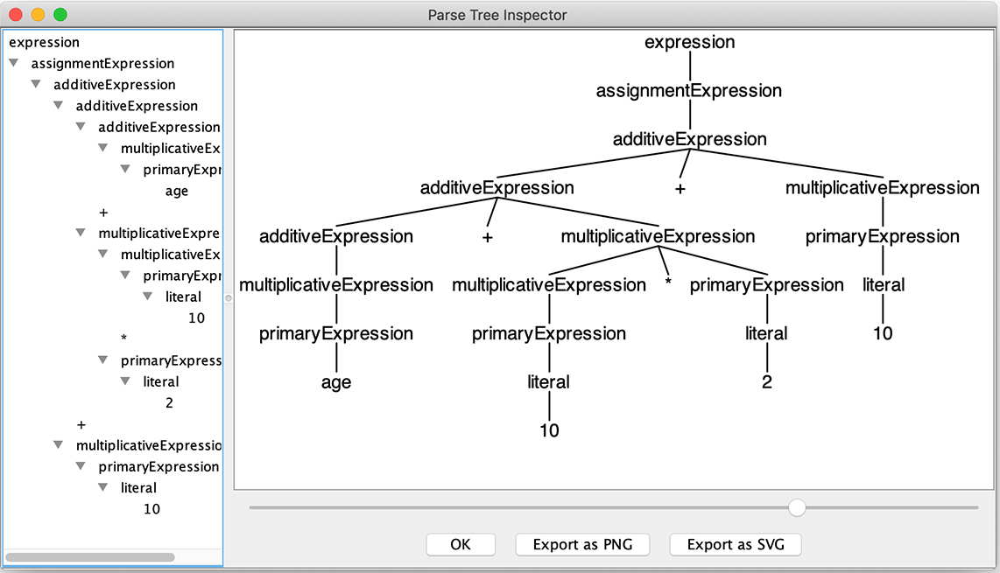
看得出来，AST完全正确，优先级和结合性也都没错。所以，Antlr生成的语法分析器还是很靠谱的。以后，你专注写语法规则就行了，可以把精力放在语言的设计和应用上。
课程小结
今天，我带你了解了Antlr，并用Antlr生成了词法分析器和语法分析器。有了工具的支持，你可以把主要的精力放在编写词法和语法规则上，提升了工作效率。
除此之外，我带你借鉴了成熟的词法规则和语法规则。你可以将这些规则用到自己的语言设计中。采用工具和借鉴成熟规则十分重要，站在别人的肩膀上能让自己更快成长。
在后面的课程中，我会带你快速实现报表工具、SQL解析器这种需要编译功能的应用。那时，你就更能体会到，用编译技术实现一个功能的过程，是非常高效的！与此同时，我也会带你扩展更多的语法规则，并生成一个更强大的脚本语言解释器。这样，你就会实现流程控制语句，接着探索函数、闭包、面向对象功能的实现机制。几节课之后，你的手里就真的有一门不错的脚本语言了！
一课一思
今天我们介绍了Antlr这个工具，你有没有使用类似工具的经验？在使用过程中又有什么心得或问题呢？欢迎在留言区分享你的心得或问题。
最后，感谢你的阅读，如果这篇文章让你有所收获，也欢迎你将它分享给更多的朋友。
本讲的示例代码位于lab/antlrtest，代码链接我放在了文末，供你参考。
07 编译器前端工具（二）：用Antlr重构脚本语言
上一讲，我带你用Antlr生成了词法分析器和语法分析器，也带你分析了，跟一门成熟的语言相比，在词法规则和语法规则方面要做的一些工作。
在词法方面，我们参考Java的词法规则文件，形成了一个CommonLexer.g4词法文件。在这个过程中，我们研究了更完善的字符串字面量的词法规则，还讲到要通过规则声明的前后顺序来解决优先级问题，比如关键字的规则一定要在标识符的前面。
目前来讲，我们已经完善了词法规则，所以今天我们来补充和完善一下语法规则，看一看怎样用最高效的速度，完善语法功能。比如一天之内，我们是否能为某个需要编译技术的项目实现一个可行性原型？
而且，我还会带你熟悉一下常见语法设计的最佳实践。这样当后面的项目需要编译技术做支撑时，你就会很快上手，做出成绩了！
接下来，我们先把表达式的语法规则梳理一遍，让它达到成熟语言的级别，然后再把语句梳理一遍，包括前面几乎没有讲过的流程控制语句。最后再升级解释器，用Visitor模式实现对AST的访问，这样我们的代码会更清晰，更容易维护了。
好了，让我们正式进入课程，先将表达式的语法完善一下吧！
完善表达式（Expression）的语法
在“06 | 编译器前端工具（一）：用Antlr生成词法、语法分析器”中，我提到Antlr能自动处理左递归的问题，所以在写表达式时，我们可以大胆地写成左递归的形式，节省时间。
但这样，我们还是要为每个运算写一个规则，逻辑运算写完了要写加法运算，加法运算写完了写乘法运算，这样才能实现对优先级的支持，还是有些麻烦。
其实，Antlr能进一步地帮助我们。我们可以把所有的运算都用一个语法规则来涵盖，然后用最简洁的方式支持表达式的优先级和结合性。在我建立的PlayScript.g4语法规则文件中，只用了一小段代码就将所有的表达式规则描述完了：
expression
: primary
| expression bop='.'
( IDENTIFIER
| functionCall
| THIS
)
| expression '[' expression ']'
| functionCall
| expression postfix=('++' | '--')
| prefix=('+'|'-'|'++'|'--') expression
| prefix=('~'|'!') expression
| expression bop=('*'|'/'|'%') expression
| expression bop=('+'|'-') expression
| expression ('<' '<' | '>' '>' '>' | '>' '>') expression
| expression bop=('<=' | '>=' | '>' | '<') expression
| expression bop=INSTANCEOF typeType
| expression bop=('==' | '!=') expression
| expression bop='&' expression
| expression bop='^' expression
| expression bop='|' expression
| expression bop='&&' expression
| expression bop='||' expression
| expression bop='?' expression ':' expression
| <assoc=right> expression
bop=('=' | '+=' | '-=' | '*=' | '/=' | '&=' | '|=' | '^=' | '>>=' | '>>>=' | '<<=' | '%=')
expression
;
这个文件几乎包括了我们需要的所有的表达式规则，包括几乎没提到的点符号表达式、递增和递减表达式、数组表达式、位运算表达式规则等，已经很完善了。
那么它是怎样支持优先级的呢？原来，优先级是通过右侧不同产生式的顺序决定的。在标准的上下文无关文法中，产生式的顺序是无关的，但在具体的算法中，会按照确定的顺序来尝试各个产生式。
你不可能一会儿按这个顺序，一会儿按那个顺序。然而，同样的文法，按照不同的顺序来推导的时候，得到的AST可能是不同的。我们需要注意，这一点从文法理论的角度，是无法接受的，但从实践的角度，是可以接受的。比如LL文法和LR文法的概念，是指这个文法在LL算法或LR算法下是工作正常的。又比如我们之前做加法运算的那个文法，就是递归项放在右边的那个，在递归下降算法中会引起结合性的错误，但是如果用LR算法，就完全没有这个问题，生成的AST完全正确。
additiveExpression
: IntLiteral
| IntLiteral Plus additiveExpression
;
Antlr的这个语法实际上是把产生式的顺序赋予了额外的含义，用来表示优先级，提供给算法。所以，我们可以说这些文法是Antlr文法，因为是与Antlr的算法相匹配的。当然，这只是我起的一个名字，方便你理解，免得你产生困扰。
我们再来看看Antlr是如何依据这个语法规则实现结合性的。在语法文件中，Antlr对于赋值表达式做了
我们不妨继续猜测一下Antlr内部的实现机制。我们已经分析了保证正确的结合性的算法，比如把递归转化成循环，然后在构造AST时，确定正确的父子节点关系。那么Antlr是不是也采用了这样的思路呢？或者说还有其他方法？你可以去看看Antlr生成的代码验证一下。
在思考这个问题的同时你会发现，学习原理是很有用的。因为当你面对Antlr这样工具时，能够猜出它的实现机制。
通过这个简化的算法，AST被成功简化，不再有加法节点、乘法节点等各种不同的节点，而是统一为表达式节点。你可能会问了：“如果都是同样的表达式节点，怎么在解析器里把它们区分开呢？怎么知道哪个节点是做加法运算或乘法运算呢？”
很简单，我们可以查找一下当前节点有没有某个运算符的Token。比如，如果出现了或者运算的Token（“||”），就是做逻辑或运算，而且语法里面的bop=、postfix=、prefix=这些属性，作为某些运算符Token的别名，也会成为表达式节点的属性。通过查询这些属性的值，你可以很快确定当前运算的类型。
到目前为止，我们彻底完成了表达式的语法工作，可以放心大胆地在脚本语言里使用各种表达式，把精力放在完善各类语句的语法工作上了。
完善各类语句（Statement）的语法
我先带你分析一下PlayScript.g4文件中语句的规则：
statement
: blockLabel=block
| IF parExpression statement (ELSE statement)?
| FOR '(' forControl ')' statement
| WHILE parExpression statement
| DO statement WHILE parExpression ';'
| SWITCH parExpression '{' switchBlockStatementGroup* switchLabel* '}'
| RETURN expression? ';'
| BREAK IDENTIFIER? ';'
| SEMI
| statementExpression=expression ';'
;
同表达式一样，一个statement规则就可以涵盖各类常用语句，包括if语句、for循环语句、while循环语句、switch语句、return语句等等。表达式后面加一个分号，也是一种语句，叫做表达式语句。
从语法分析的难度来看，上面这些语句的语法比表达式的语法简单的多，左递归、优先级和结合性的问题这里都没有出现。这也算先难后易，苦尽甘来了吧。实际上，我们后面要设计的很多语法，都没有想象中那么复杂。
既然我们尝到了一些甜头，不如趁热打铁，深入研究一下if语句和for语句？看看怎么写这些语句的规则？多做这样的训练，再看到这些语句，你的脑海里就能马上反映出它的语法规则。
1.研究一下if语句
在C和Java等语言中，if语句通常写成下面的样子：
if (condition)
做一件事情;
else
做另一件事情;
但更多情况下，if和else后面是花括号起止的一个语句块，比如：
if (condition){
做一些事情；
}
else{
做另一些事情；
}
它的语法规则是这样的：
statement :
...
| IF parExpression statement (ELSE statement)?
...
;
parExpression : '(' expression ')';
我们用了IF和ELSE这两个关键字，也复用了已经定义好的语句规则和表达式规则。你看，语句规则和表达式规则一旦设计完毕，就可以被其他语法规则复用，多么省心！
但是if语句也有让人不省心的地方，比如会涉及到二义性文法问题。所以，接下来我们就借if语句，分析一下二义性文法这个现象。
2.解决二义性文法
学计算机语言的时候，提到if语句，会特别提一下嵌套if语句和悬挂else的情况，比如下面这段代码：
if (a > b)
if (c > d)
做一些事情；
else
做另外一些事情；
在上面的代码中，我故意取消了代码的缩进。那么，你能不能看出else是跟哪个if配对的呢？
一旦你语法规则写得不够好，就很可能形成二义性，也就是用同一个语法规则可以推导出两个不同的句子，或者说生成两个不同的AST。这种文法叫做二义性文法，比如下面这种写法：
stmt -> if expr stmt
| if expr stmt else stmt
| other
按照这个语法规则，先采用第一条产生式推导或先采用第二条产生式推导，会得到不同的AST。左边的这棵AST中，else跟第二个if配对；右边的这棵AST中，else跟第一个if配对。
大多数高级语言在解析这个示例代码时都会产生第一个AST，即else跟最邻近的if配对，也就是下面这段带缩进的代码表达的意思：
if (a > b)
if (c > d)
做一些事情；
else
做另外一些事情；
那么，有没有办法把语法写成没有二义性的呢？当然有了。
stmt -> fullyMatchedStmt | partlyMatchedStmt
fullyMatchedStmt -> if expr fullyMatchedStmt else fullyMatchedStmt
| other
partlyMatchedStmt -> if expr stmt
| if expr fullyMatchedStmt else partlyMatchedStmt
按照上面的语法规则，只有唯一的推导方式，也只能生成唯一的AST：
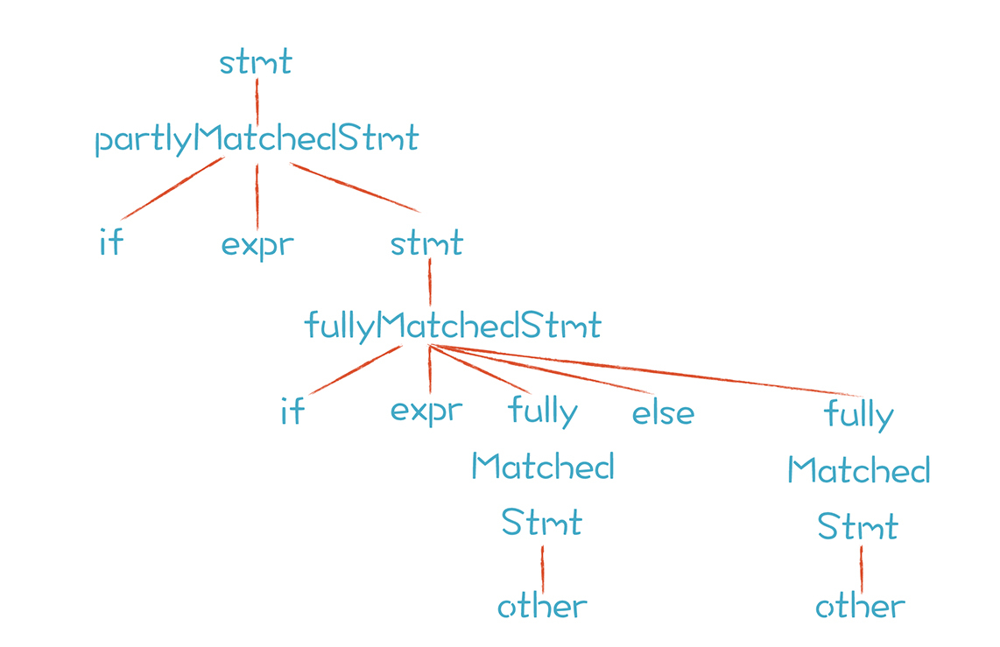
其中，解析第一个if语句时只能应用partlyMatchedStmt规则，解析第二个if语句时，只能适用fullyMatchedStmt规则。
这时，我们就知道可以通过改写语法规则来解决二义性文法。至于怎么改写规则，确实不像左递归那样有清晰的套路，但是可以多借鉴成熟的经验。
再说回我们给Antlr定义的语法，这个语法似乎并不复杂，怎么就能确保不出现二义性问题呢？因为Antlr解析语法时用到的是LL算法。
LL算法是一个深度优先的算法，所以在解析到第一个statement时，就会建立下一级的if节点，在下一级节点里会把else子句解析掉。如果Antlr不用LL算法，就会产生二义性。这再次验证了我们前面说的那个知识点：文法要经常和解析算法配合。
分析完if语句，并借它说明了二义性文法之后，我们再针对for语句做一个案例研究。
3.研究一下for语句
for语句一般写成下面的样子：
for (int i = 0; i < 10; i++){
println(i);
}
相关的语法规则如下：
statement :
...
| FOR '(' forControl ')' statement
...
;
forControl
: forInit? ';' expression? ';' forUpdate=expressionList?
;
forInit
: variableDeclarators
| expressionList
;
expressionList
: expression (',' expression)*
;
从上面的语法规则中看到，for语句归根到底是由语句、表达式和变量声明构成的。代码中的for语句，解析后形成的AST如下：
熟悉了for语句的语法之后，我想提一下语句块（block）。在if语句和for语句中，会用到它，所以我捎带着把语句块的语法构成写了一下，供你参考：
block
: '{' blockStatements '}'
;
blockStatements
: blockStatement*
;
blockStatement
: variableDeclarators ';' //变量声明
| statement
| functionDeclaration //函数声明
| classDeclaration //类声明
;
现在，我们已经拥有了一个相当不错的语法体系，除了要放到后面去讲的函数、类有关的语法之外，我们几乎完成了playscript的所有的语法设计工作。接下来，我们再升级一下脚本解释器，让它能够支持更多的语法，同时通过使用Visitor模式，让代码结构更加完善。
用Vistor模式升级脚本解释器
我们在纯手工编写的脚本语言解释器里，用了一个evaluate()方法自上而下地遍历了整棵树。随着要处理的语法越来越多，这个方法的代码量会越来越大，不便于维护。而Visitor设计模式针对每一种AST节点，都会有一个单独的方法来负责处理，能够让代码更清晰，也更便于维护。
Antlr能帮我们生成一个Visitor处理模式的框架，我们在命令行输入：
antlr -visitor PlayScript.g4
-visitor参数告诉Antlr生成下面两个接口和类：
public interface PlayScriptVisitor<T> extends ParseTreeVisitor<T> {...}
public class PlayScriptBaseVisitor<T> extends AbstractParseTreeVisitor<T> implements PlayScriptVisitor<T> {...}
在PlayScriptBaseVisitor中，可以看到很多visitXXX()这样的方法，每一种AST节点都对应一个方法，例如：
@Override public T visitPrimitiveType(PlayScriptParser.PrimitiveTypeContext ctx) {...}
其中泛型< T >指的是访问每个节点时返回的数据的类型。在我们手工编写的版本里，当时只处理整数，所以返回值一律用Integer，现在我们实现的版本要高级一点，AST节点可能返回各种类型的数据，比如：
- 浮点型运算的时候，会返回浮点数；
- 字符类型运算的时候，会返回字符型数据；
- 还可能是程序员自己设计的类型，如某个类的实例。
所以，我们就让Visitor统一返回Object类型好了，能够适用于各种情况。这样，我们的Visitor就是下面的样子（泛型采用了Object）：
public class MyVisitor extends PlayScriptBaseVisitor<Object>{
...
}
这样，在visitExpression()方法中，我们可以编写各种表达式求值的代码，比如，加法和减法运算的代码如下：
public Object visitExpression(ExpressionContext ctx) {
Object rtn = null;
//二元表达式
if (ctx.bop != null && ctx.expression().size() >= 2) {
Object left = visitExpression(ctx.expression(0));
Object right = visitExpression(ctx.expression(1));
...
Type type = cr.node2Type.get(ctx);//数据类型是语义分析的成果
switch (ctx.bop.getType()) {
case PlayScriptParser.ADD: //加法运算
rtn = add(leftObject, rightObject, type);
break;
case PlayScriptParser.SUB: //减法运算
rtn = minus(leftObject, rightObject, type);
break;
...
}
}
...
}
其中ExpressionContext就是AST中表达式的节点，叫做Context，意思是你能从中取出这个节点所有的上下文信息，包括父节点、子节点等。其中，每个子节点的名称跟语法中的名称是一致的，比如加减法语法规则是下面这样：
expression bop=('+'|'-') expression
那么我们可以用ExpressionContext的这些方法访问子节点：
ctx.expression(); //返回一个列表，里面有两个成员，分别是左右两边的子节点
ctx.expression(0); //运算符左边的表达式，是另一个ExpressionContext对象
ctx.expression(1); //云算法右边的表达式
ctx.bop(); //一个Token对象，其类型是PlayScriptParser.ADD或SUB
ctx.ADD(); //访问ADD终结符，当做加法运算的时候，该方法返回非空值
ctx.MINUS()； //访问MINUS终结符
在做加法运算的时候我们还可以递归的对下级节点求值，就像代码里的visitExpression(ctx.expression(0))。同样，要想运行整个脚本，我们只需要visit根节点就行了。
所以，我们可以用这样的方式，为每个AST节点实现一个visit方法。从而把整个解释器升级一遍。除了实现表达式求值，我们还可以为今天设计的if语句、for语句来编写求值逻辑。以for语句为例，代码如下：
// 初始化部分执行一次
if (forControl.forInit() != null) {
rtn = visitForInit(forControl.forInit());
}
while (true) {
Boolean condition = true; // 如果没有条件判断部分，意味着一直循环
if (forControl.expression() != null) {
condition = (Boolean) visitExpression(forControl.expression());
}
if (condition) {
// 执行for的语句体
rtn = visitStatement(ctx.statement(0));
// 执行forUpdate，通常是“i++”这样的语句。这个执行顺序不能出错。
if (forControl.forUpdate != null) {
visitExpressionList(forControl.forUpdate);
}
} else {
break;
}
}
你需要注意for语句中各个部分的执行规则，比如：
- forInit部分只能执行一次；
- 每次循环都要执行一次forControl，看看是否继续循环；
- 接着执行for语句中的语句体；
- 最后执行forUpdate部分，通常是一些“i++”这样的语句。
支持了这些流程控制语句以后，我们的脚本语言就更丰富了！
课程小结
今天，我带你用Antlr高效地完成了很多语法分析工作，比如完善表达式体系，完善语句体系。除此之外，我们还升级了脚本解释器，使它能够执行更多的表达式和语句。
在实际工作中，针对面临的具体问题，我们完全可以像今天这样迅速地建立可以运行的代码，专注于解决领域问题，快速发挥编译技术的威力。
而且在使用工具时，针对工具的某个特性，比如对优先级和结合性的支持，我们大致能够猜到工具内部的实现机制，因为我们已经了解了相关原理。
一课一思
我们通过Antlr并借鉴成熟的规则文件，很快就重构了脚本解释器，这样工作效率很高。那么，针对要解决的领域问题，你是不是借鉴过一些成熟实践或者最佳实践来提升效率和质量？在这个过程中又有什么心得呢？欢迎在留言区分享你的心得。
最后，感谢你的阅读，如果这篇文章让你有所收获，也欢迎你将它分享给更多的朋友。
我把一门功能比较全的脚本语言的示例放在了playscript-java项目下，以后几讲的内容都会参考这里面的示例代码。
08 作用域和生存期：实现块作用域和函数
目前，我们已经用Antlr重构了脚本解释器，有了工具的帮助，我们可以实现更高级的功能，比如函数功能、面向对象功能。当然了，在这个过程中，我们还要克服一些挑战，比如：
- 如果要实现函数功能，要升级变量管理机制；
- 引入作用域机制，来保证变量的引用指向正确的变量定义；
- 提升变量存储机制，不能只把变量和它的值简单地扔到一个HashMap里，要管理它的生存期，减少对内存的占用。
本节课，我将借实现块作用域和函数功能，带你探讨作用域和生存期及其实现机制，并升级变量管理机制。那么什么是作用域和生存期，它们的重要性又体现在哪儿呢？
“作用域”和“生存期”是计算机语言中更加基础的概念，它们可以帮你深入地理解函数、块、闭包、面向对象、静态成员、本地变量和全局变量等概念。
而且一旦你深入理解，了解作用域与生存期在编译期和运行期的机制之后，就能解决在学习过程中可能遇到的一些问题，比如：
- 闭包的机理到底是什么？
- 为什么需要栈和堆两种机制来管理内存？它们的区别又是什么？
- 一个静态的内部类和普通的内部类有什么区别？
了解上面这些内容之后，接下来，我们来具体看看什么是作用域。
作用域（Scope）
作用域是指计算机语言中变量、函数、类等起作用的范围，我们来看一个具体的例子。
下面这段代码是用C语言写的，我们在全局以及函数fun中分别声明了a和b两个变量，然后在代码里对这些变量做了赋值操作：
/*
scope.c
测试作用域。
*/
#include <stdio.h>
int a = 1;
void fun()
{
a = 2;
//b = 3; //出错，不知道b是谁
int a = 3; //允许声明一个同名的变量吗？
int b = a; //这里的a是哪个？
printf("in fun: a=%d b=%d \n", a, b);
}
int b = 4; //b的作用域从这里开始
int main(int argc, char **argv){
printf("main--1: a=%d b=%d \n", a, b);
fun();
printf("main--2: a=%d b=%d \n", a, b);
//用本地变量覆盖全局变量
int a = 5;
int b = 5;
printf("main--3: a=%d b=%d \n", a, b);
//测试块作用域
if (a > 0){
int b = 3; //允许在块里覆盖外面的变量
printf("main--4: a=%d b=%d \n", a, b);
}
else{
int b = 4; //跟if块里的b是两个不同的变量
printf("main--5: a=%d b=%d \n", a, b);
}
printf("main--6: a=%d b=%d \n", a, b);
}
这段代码编译后运行，结果是：
main--1: a=1 b=4
in fun: a=3 b=3
main--2: a=2 b=4
main--3: a=5 b=5
main--4: a=5 b=3
main--6: a=5 b=5
我们可以得出这样的规律：
- 变量的作用域有大有小，外部变量在函数内可以访问，而函数中的本地变量，只有本地才可以访问。
- 变量的作用域，从声明以后开始。
- 在函数里，我们可以声明跟外部变量相同名称的变量，这个时候就覆盖了外部变量。
下面这张图直观地显示了示例代码中各个变量的作用域：

另外，C语言里还有块作用域的概念，就是用花括号包围的语句，if和else后面就跟着这样的语句块。块作用域的特征跟函数作用域的特征相似，都可以访问外部变量，也可以用本地变量覆盖掉外部变量。
你可能会问：“其他语言也有块作用域吗？特征是一样的吗？”其实，各个语言在这方面的设计机制是不同的。比如，下面这段用Java写的代码里，我们用了一个if语句块，并且在if部分、else部分和外部分别声明了一个变量c：
/**
* Scope.java
* 测试Java的作用域
*/
public class ScopeTest{
public static void main(String args[]){
int a = 1;
int b = 2;
if (a > 0){
//int b = 3; //不允许声明与外部变量同名的变量
int c = 3;
}
else{
int c = 4; //允许声明另一个c，各有各的作用域
}
int c = 5; //这里也可以声明一个新的c
}
}
你能看到，Java的块作用域跟C语言的块作用域是不同的，它不允许块作用域里的变量覆盖外部变量。那么和C、Java写起来很像的JavaScript呢？来看一看下面这段测试JavaScript作用域的代码：
/**
* Scope.js
* 测试JavaScript的作用域
*/
var a = 5;
var b = 5;
console.log("1: a=%d b=%d", a, b);
if (a > 0) {
a = 4;
console.log("2: a=%d b=%d", a, b);
var b = 3; //看似声明了一个新变量，其实还是引用的外部变量
console.log("3: a=%d b=%d", a, b);
}
else {
var b = 4;
console.log("4: a=%d b=%d", a, b);
}
console.log("5: a=%d b=%d", a, b);
for (var b = 0; b< 2; b++){ //这里是否能声明一个新变量，用于for循环？
console.log("6-%d: a=%d b=%d",b, a, b);
}
console.log("7: a=%d b=%d", a, b);
这段代码编译后运行，结果是：
1: a=5 b=5
2: a=4 b=5
3: a=4 b=3
5: a=4 b=3
6-0: a=4 b=0
6-1: a=4 b=1
7: a=4 b=2
你可以看到，JavaScript是没有块作用域的。我们在块里和for语句试图重新定义变量b，语法上是允许的，但我们每次用到的其实是同一个变量。
对比了三种语言的作用域特征之后，你是否发现原来看上去差不多的语法，内部机理却不同？这种不同其实是语义差别的一个例子。你要注意的是，现在我们讲的很多内容都已经属于语义的范畴了，对作用域的分析就是语义分析的任务之一。
生存期（Extent）
了解了什么是作用域之后，我们再理解一下跟它紧密相关的生存期。它是变量可以访问的时间段，也就是从分配内存给它，到收回它的内存之间的时间。
在前面几个示例程序中，变量的生存期跟作用域是一致的。出了作用域，生存期也就结束了，变量所占用的内存也就被释放了。这是本地变量的标准特征，这些本地变量是用栈来管理的。
但也有一些情况，变量的生存期跟语法上的作用域不一致，比如在堆中申请的内存，退出作用域以后仍然会存在。
下面这段C语言的示例代码中，fun函数返回了一个整数的指针。出了函数以后，本地变量b就消失了，这个指针所占用的内存（&b）就收回了，其中&b是取b的地址，这个地址是指向栈里的一小块空间，因为b是栈里申请的。在这个栈里的小空间里保存了一个地址，指向在堆里申请的内存。这块内存，也就是用来实际保存数值2的空间，并没有被收回，我们必须手动使用free()函数来收回。
/*
extent.c
测试生存期。
*/
#include <stdio.h>
#include <stdlib.h>
int * fun(){
int * b = (int*)malloc(1*sizeof(int)); //在堆中申请内存
*b = 2; //给该地址赋值2
return b;
}
int main(int argc, char **argv){
int * p = fun();
*p = 3;
printf("after called fun: b=%lu *b=%d \n", (unsigned long)p, *p);
free(p);
}
类似的情况在Java里也有。Java的对象实例缺省情况下是在堆中生成的。下面的示例代码中，从一个方法中返回了对象的引用，我们可以基于这个引用继续修改对象的内容，这证明这个对象的内存并没有被释放：
/**
* Extent2.java
* 测试Java的生存期特性
*/
public class Extent2{
StringBuffer myMethod(){
StringBuffer b = new StringBuffer(); //在堆中生成对象实例
b.append("Hello ");
System.out.println(System.identityHashCode(b)); //打印内存地址
return b; //返回对象引用，本质是一个内存地址
}
public static void main(String args[]){
Extent2 extent2 = new Extent2();
StringBuffer c = extent2.myMethod(); //获得对象引用
System.out.println(c);
c.append("World!"); //修改内存中的内容
System.out.println(c);
//跟在myMethod()中打印的值相同
System.out.println(System.identityHashCode(c));
}
}
因为Java对象所采用的内存超出了申请内存时所在的作用域，所以也就没有办法自动收回。所以Java采用的是自动内存管理机制，也就是垃圾回收技术。
那么为什么说作用域和生存期是计算机语言更加基础的概念呢？其实是因为它们对应到了运行时的内存管理的基本机制。虽然各门语言设计上的特性是不同的，但在运行期的机制都很相似，比如都会用到栈和堆来做内存管理。
好了，理解了作用域和生存期的原理之后，我们就来实现一下，先来设计一下作用域机制，然后再模拟实现一个栈。
实现作用域和栈
在之前的PlayScript脚本的实现中，处理变量赋值的时候，我们简单地把变量存在一个哈希表里，用变量名去引用，就像下面这样：
public class SimpleScript {
private HashMap<String, Integer> variables = new HashMap<String, Integer>();
...
}
但如果变量存在多个作用域，这样做就不行了。这时，我们就要设计一个数据结构，区分不同变量的作用域。分析前面的代码，你可以看到作用域是一个树状的结构，比如Scope.c的作用域：

面向对象的语言不太相同，它不是一棵树，是一片树林，每个类对应一棵树，所以它也没有全局变量。在我们的playscript语言中，我们设计了下面的对象结构来表示Scope：
//编译过程中产生的变量、函数、类、块，都被称作符号
public abstract class Symbol {
//符号的名称
protected String name = null;
//所属作用域
protected Scope enclosingScope = null;
//可见性，比如public还是private
protected int visibility = 0;
//Symbol关联的AST节点
protected ParserRuleContext ctx = null;
}
//作用域
public abstract class Scope extends Symbol{
// 该Scope中的成员，包括变量、方法、类等。
protected List<Symbol> symbols = new LinkedList<Symbol>();
}
//块作用域
public class BlockScope extends Scope{
...
}
//函数作用域
public class Function extends Scope implements FunctionType{
...
}
//类作用域
public class Class extends Scope implements Type{
...
}
目前我们划分了三种作用域，分别是块作用域（Block）、函数作用域（Function）和类作用域（Class）。
我们在解释执行playscript的AST的时候，需要建立起作用域的树结构，对作用域的分析过程是语义分析的一部分。也就是说，并不是有了AST，我们马上就可以运行它，在运行之前，我们还要做语义分析，比如对作用域做分析，让每个变量都能做正确的引用，这样才能正确地执行这个程序。
解决了作用域的问题以后，再来看看如何解决生存期的问题。还是看Scope.c的代码，随着代码的执行，各个变量的生存期表现如下：
- 进入程序，全局变量逐一生效；
- 进入main函数，main函数里的变量顺序生效；
- 进入fun函数，fun函数里的变量顺序生效；
- 退出fun函数，fun函数里的变量失效；
- 进入if语句块，if语句块里的变量顺序生效；
- 退出if语句块，if语句块里的变量失效；
- 退出main函数，main函数里的变量失效；
- 退出程序，全局变量失效。
通过下面这张图，你能直观地看到运行过程中栈的变化：

代码执行时进入和退出一个个作用域的过程，可以用栈来实现。每进入一个作用域，就往栈里压入一个数据结构，这个数据结构叫做栈桢（Stack Frame）。栈桢能够保存当前作用域的所有本地变量的值，当退出这个作用域的时候，这个栈桢就被弹出，里面的变量也就失效了。
你可以看到，栈的机制能够有效地使用内存，变量超出作用域的时候，就没有用了，就可以从内存中丢弃。我在ASTEvaluator.java中，用下面的数据结构来表示栈和栈桢，其中的PlayObject通过一个HashMap来保存各个变量的值：
private Stack<StackFrame> stack = new Stack<StackFrame>();
public class StackFrame {
//该frame所对应的scope
Scope scope = null;
//enclosingScope所对应的frame
StackFrame parentFrame = null;
//实际存放变量的地方
PlayObject object = null;
}
public class PlayObject {
//成员变量
protected Map<Variable, Object> fields = new HashMap<Variable, Object>();
}
目前，我们只是在概念上模仿栈桢，当我们用Java语言实现的时候，PlayObject对象是存放在堆里的，Java的所有对象都是存放在堆里的，只有基础数据类型，比如int和对象引用是放在栈里的。虽然只是模仿，这不妨碍我们建立栈桢的概念，在后端技术部分，我们会实现真正意义上的栈桢。
要注意的是，栈的结构和Scope的树状结构是不一致的。也就是说，栈里的上一级栈桢，不一定是Scope的父节点。要访问上一级Scope中的变量数据，要顺着栈桢的parentFrame去找。我在上图中展现了这种情况，在调用fun函数的时候，栈里一共有三个栈桢：全局栈桢、main()函数栈桢和fun()函数栈桢，其中main()函数栈桢的parentFrame和fun()函数栈桢的parentFrame都是全局栈桢。
实现块作用域
目前，我们已经做好了作用域和栈，在这之后，就能实现很多功能了，比如让if语句和for循环语句使用块作用域和本地变量。以for语句为例，visit方法里首先为它生成一个栈桢，并加入到栈中，运行完毕之后，再从栈里弹出：
BlockScope scope = (BlockScope) cr.node2Scope.get(ctx); //获得Scope
StackFrame frame = new StackFrame(scope); //创建一个栈桢
pushStack(frame); //加入栈中
...
//运行完毕，弹出栈
stack.pop();
当我们在代码中需要获取某个变量的值的时候，首先在当前桢中寻找。找不到的话，就到上一级作用域对应的桢中去找：
StackFrame f = stack.peek(); //获取栈顶的桢
PlayObject valueContainer = null;
while (f != null) {
//看变量是否属于当前栈桢里
if (f.scope.containsSymbol(variable)){
valueContainer = f.object;
break;
}
//从上一级scope对应的栈桢里去找
f = f.parentFrame;
}
运行下面的测试代码，你会看到在执行完for循环以后，我们仍然可以声明另一个变量i，跟for循环中的i互不影响，这证明它们确实属于不同的作用域：
String script = "int age = 44; for(int i = 0;i<10;i++) { age = age + 2;} int i = 8;";
进一步的，我们可以实现对函数的支持。
实现函数功能
先来看一下与函数有关的语法：
//函数声明
functionDeclaration
: typeTypeOrVoid? IDENTIFIER formalParameters ('[' ']')*
functionBody
;
//函数体
functionBody
: block
| ';'
;
//类型或void
typeTypeOrVoid
: typeType
| VOID
;
//函数所有参数
formalParameters
: '(' formalParameterList? ')'
;
//参数列表
formalParameterList
: formalParameter (',' formalParameter)* (',' lastFormalParameter)?
| lastFormalParameter
;
//单个参数
formalParameter
: variableModifier* typeType variableDeclaratorId
;
//可变参数数量情况下，最后一个参数
lastFormalParameter
: variableModifier* typeType '...' variableDeclaratorId
;
//函数调用
functionCall
: IDENTIFIER '(' expressionList? ')'
| THIS '(' expressionList? ')'
| SUPER '(' expressionList? ')'
;
在函数里，我们还要考虑一个额外的因素：参数。在函数内部，参数变量跟普通的本地变量在使用时没什么不同，在运行期，它们也像本地变量一样，保存在栈桢里。
我们设计一个对象来代表函数的定义，它包括参数列表和返回值的类型：
public class Function extends Scope implements FunctionType{
// 参数
protected List<Variable> parameters = new LinkedList<Variable>();
//返回值
protected Type returnType = null;
...
}
在调用函数时，我们实际上做了三步工作：
- 建立一个栈桢；
- 计算所有参数的值，并放入栈桢；
- 执行函数声明中的函数体。
我把相关代码放在了下面，你可以看一下：
//函数声明的AST节点
FunctionDeclarationContext functionCode = (FunctionDeclarationContext) function.ctx;
//创建栈桢
functionObject = new FunctionObject(function);
StackFrame functionFrame = new StackFrame(functionObject);
// 计算实参的值
List<Object> paramValues = new LinkedList<Object>();
if (ctx.expressionList() != null) {
for (ExpressionContext exp : ctx.expressionList().expression()) {
Object value = visitExpression(exp);
if (value instanceof LValue) {
value = ((LValue) value).getValue();
}
paramValues.add(value);
}
}
//根据形参的名称，在栈桢中添加变量
if (functionCode.formalParameters().formalParameterList() != null) {
for (int i = 0; i < functionCode.formalParameters().formalParameterList().formalParameter().size(); i++) {
FormalParameterContext param = functionCode.formalParameters().formalParameterList().formalParameter(i);
LValue lValue = (LValue) visitVariableDeclaratorId(param.variableDeclaratorId());
lValue.setValue(paramValues.get(i));
}
}
// 调用方法体
rtn = visitFunctionDeclaration(functionCode);
// 运行完毕，弹出栈
stack.pop();
你可以用playscript测试一下函数执行的效果，看看参数传递和作用域的效果：
String script = "int b= 10; int myfunc(int a) {return a+b+3;} myfunc(2);";
课程小结
本节课，我带你实现了块作用域和函数，还跟你一起探究了计算机语言的两个底层概念：作用域和生存期。你要知道：
- 对作用域的分析是语义分析的一项工作。Antlr能够完成很多词法分析和语法分析的工作，但语义分析工作需要我们自己做。
- 变量的生存期涉及运行期的内存管理，也引出了栈桢和堆的概念，我会在编译器后端技术时进一步阐述。
我建议你在学习新语言的时候，先了解它在作用域和生存期上的特点，然后像示例程序那样做几个例子，借此你会更快理解语言的设计思想。比如，为什么需要命名空间这个特性？全局变量可能带来什么问题？类的静态成员与普通成员有什么区别？等等。
下一讲，我们会尝试实现面向对象特性，看看面向对象语言在语义上是怎么设计的，以及在运行期有什么特点。
一课一思
既然我强调了作用域和生存期的重要性，那么在你熟悉的语言中，有哪些特性是能用作用域和生存期的概念做更基础的解读呢？比如，面向对象的语言中，对象成员的作用域和生存期是怎样的？欢迎在留言区与大家一起交流。
最后，感谢你的阅读，如果这篇文章让你有所收获，也欢迎你将它分享给更多的朋友。
今天讲的功能照样能在playscript-java项目中找到示例代码，其中还有用playscript写的脚本，你可以多玩一玩。
09 面向对象：实现数据和方法的封装
在现代计算机语言中，面向对象是非常重要的特性，似乎常用的语言都支持面向对象特性，比如Swift、C++、Java……不支持的反倒是异类了。
而它重要的特点就是封装。也就是说，对象可以把数据和对数据的操作封装在一起，构成一个不可分割的整体，尽可能地隐藏内部的细节，只保留一些接口与外部发生联系。 在对象的外部只能通过这些接口与对象进行交互，无需知道对象内部的细节。这样能降低系统的耦合，实现内部机制的隐藏，不用担心对外界的影响。那么它们是怎样实现的呢？
本节课，我将从语义设计和运行时机制的角度剖析面向对象的特性，带你深入理解面向对象的实现机制，让你能在日常编程工作中更好地运用面向对象的特性。比如，在学完这讲之后，你会对对象的作用域和生存期、对象初始化过程等有更清晰的了解。而且你不会因为学习了Java或C++的面向对象机制，在学习JavaScript和Ruby的面向对象机制时觉得别扭，因为它们的本质是一样的。
接下来，我们先简单地聊一下什么是面向对象。
面向对象的语义特征
我的一个朋友，在10多年前做过培训师，为了吸引学员的注意力，他在讲“什么是面向对象”时说：“面向对象是世界观，是方法论。”
虽然有点儿语不惊人死不休的意思，但我必须承认，所有的计算机语言都是对世界进行建模的方式，只不过建模的视角不同罢了。面向对象的设计思想，在上世纪90年代被推崇，几乎被视为最好的编程模式。实际上，各种不同的编程思想，都会表现为这门语言的语义特征，所以，我就从语义角度，利用类型、作用域、生存期这样的概念带你深入剖析一下面向对象的封装特性，其他特性在后面的课程中再去讨论。
- 从类型角度
类型处理是语义分析时的重要工作。现代计算机语言可以用自定义的类来声明变量，这是一个巨大的进步。因为早期的计算机语言只支持一些基础的数据类型，比如各种长短不一的整型和浮点型，像字符串这种我们编程时离不开的类型，往往是在基础数据类型上封装和抽象出来的。所以，我们要扩展语言的类型机制，让程序员可以创建自己的类型。
- 从作用域角度
首先是类的可见性。作为一种类型，它通常在整个程序的范围内都是可见的，可以用它声明变量。当然，一些像Java的语言，也能限制某些类型的使用范围，比如只能在某个命名空间内，或者在某个类内部。
对象的成员的作用域是怎样的呢？我们知道，对象的属性（“属性”这里指的是类的成员变量）可以在整个对象内部访问，无论在哪个位置声明。也就是说，对象属性的作用域是整个对象的内部，方法也是一样。这跟函数和块中的本地变量不一样，它们对声明顺序有要求，像C和Java这样的语言，在使用变量之前必须声明它。
- 从生存期的角度
对象的成员变量的生存期，一般跟对象的生存期是一样的。在创建对象的时候，就对所有成员变量做初始化，在销毁对象的时候，所有成员变量也随着一起销毁。当然，如果某个成员引用了从堆中申请的内存，这些内存需要手动释放，或者由垃圾收集机制释放。
但还有一些成员，不是与对象绑定的，而是与类型绑定的，比如Java中的静态成员。静态成员跟普通成员的区别，就是作用域和生存期不同，它的作用域是类型的所有对象实例，被所有实例共享。生存期是在任何一个对象实例创建之前就存在，在最后一个对象销毁之前不会消失。
你看，我们用这三个语义概念，就把面向对象的封装特性解释清楚了，无论语言在顶层怎么设计，在底层都是这么实现的。
了解了面向对象在语义上的原理之后，我们来实际动手解析一下代码中的类，这样能更深刻地体会这些原理。
设计类的语法，并解析它
我们要在语言中支持类的定义，在PlayScript.g4中，可以这样定义类的语法规则：
classDeclaration
: CLASS IDENTIFIER
(EXTENDS typeType)?
(IMPLEMENTS typeList)?
classBody
;
classBody
: '{' classBodyDeclaration* '}'
;
classBodyDeclaration
: ';'
| memberDeclaration
;
memberDeclaration
: functionDeclaration
| fieldDeclaration
;
functionDeclaration
: typeTypeOrVoid IDENTIFIER formalParameters ('[' ']')*
(THROWS qualifiedNameList)?
functionBody
;
我来简单地讲一下这个语法规则：
- 类声明以class关键字开头，有一个标识符是类型名称，后面跟着类的主体。
- 类的主体里要声明类的成员。在简化的情况下，可以只关注类的属性和方法两种成员。我们故意把类的方法也叫做function，而不是method，是想把对象方法和函数做一些统一的设计。
- 函数声明现在的角色是类的方法。
- 类的成员变量的声明和普通变量声明在语法上没什么区别。
你能看到，我们构造像class这样高级别的结构时，越来越得心应手了，之前形成的一些基础的语法模块都可以复用，比如变量声明、代码块（block）等。
用上面的语法写出来的playscript脚本的效果如下，在示例代码里也有，你可以运行它：
/*
ClassTest.play 简单的面向对象特性。
*/
class Mammal{
//类属性
string name = "";
//构造方法
Mammal(string str){
name = str;
}
//方法
void speak(){
println("mammal " + name +" speaking...");
}
}
Mammal mammal = Mammal("dog"); //playscript特别的构造方法，不需要new关键字
mammal.speak(); //访问对象方法
println("mammal.name = " + mammal.name); //访问对象的属性
//没有构造方法，创建的时候用缺省构造方法
class Bird{
int speed = 50; //在缺省构造方法里初始化
void fly(){
println("bird flying...");
}
}
Bird bird = Bird(); //采用缺省构造方法
println("bird.speed : " + bird.speed + "km/h");
bird.fly();
接下来，我们让playscript解释器处理这些看上去非常现代化的代码，怎么处理呢？
做完词法分析和语法分析之后，playscript会在语义分析阶段扫描AST，识别出所有自定义的类型，以便在其他地方引用这些类型来声明变量。因为类型的声明可以在代码中的任何位置，所以最好用单独的一次遍历来识别和记录类型（类型扫描的代码在TypeAndScopeScanner.java里）。
接着，我们在声明变量时，就可以引用这个类型了。语义分析的另一个工作，就是做变量类型的消解。当我们声明“Bird bird = Bird(); ”时，需要知道Bird对象的定义在哪里，以便正确地访问它的成员（变量类型的消解在TypeResolver.java里）。
在做语义分析时，要把类型的定义保存在一个数据结构中，我们来实现一下：
public class Class extends Scope implements Type{
...
}
public abstract class Scope extends Symbol{
// 该Scope中的成员，包括变量、方法、类等。
protected List<Symbol> symbols = new LinkedList<Symbol>(
}
public interface Type {
public String getName(); //类型名称
public Scope getEnclosingScope();
}
在这个设计中，我们看到Class就是一个Scope，Scope里面原来就能保存各种成员，现在可以直接复用，用来保存类的属性和方法，画成类图如下：

图里有几个类，比如Symbol、Variable、Scope、Function和BlockScope，它们是我们的符号体系的主要成员。在做词法分析时，我们会解析出很多标识符，这些标识符出现在不同的语法规则里，包括变量声明、表达式，以及作为类名、方法名等出现。
在语义分析阶段，我们要把这些标识符一一识别出来，这个是一个变量，指的是一个本地变量；那个是一个方法名等。
变量、类和函数的名称，我们都叫做符号，比如示例程序中的Mammal、Bird、mammal、bird、name、speed等。编译过程中的一项重要工作就是建立符号表，它帮助我们进一步地编译或执行程序，而符号表就用上面几个类来保存信息。
在符号表里，我们保存它的名称、类型、作用域等信息。对于类和函数，我们也有相应的地方来保存类变量、方法、参数、返回值等信息。你可以看一看示例代码里面是如何解析和记录这些符号的。
解析完这些语义信息以后，我们来看运行期如何执行具有面向对象特征的程序，比如如何实例化一个对象？如何在内存里管理对象的数据？以及如何访问对象的属性和方法？
对象是怎么实例化的
首先通过构造方法来创建对象。
在语法中，我们没有用new这个关键字来表示对象的创建，而是省略掉了new，直接调用一个跟类名称相同的函数，这是我们独特的设计，示例代码如下：
Mammal mammal = Mammal("dog"); //playscript特别的构造方法，不需要new关键字
Bird bird = Bird(); //采用缺省构造方法
但在语义检查的时候，在当前作用域中是肯定找不到这样一个函数的，因为类的初始化方法是在类的内部定义的，我们只要检查一下，Mammal和Bird是不是一个类名就可以了。
再进一步，Mammal类中确实有个构造方法Mammal()，而Bird类中其实没有一个显式定义的构造方法，但这并不意味着变量成员不会被初始化。我们借鉴了Java的初始化机制，就是提供缺省初始化方法，在缺省初始化方法里，会执行对象成员声明时所做的初始化工作。所以，上面的代码里，我们调用Bird()，实际上就是调用了这个缺省的初始化方法。无论有没有显式声明的构造方法，声明对象的成员变量时的初始化部分，一定会执行。对于Bird类，实际上就会执行“int speed = 50;”这个语句。
在RefResolver.java中做语义分析的时候，下面的代码能够检测出某个函数调用其实是类的构造方法，或者是缺省构造方法：
// 看看是不是类的构建函数，用相同的名称查找一个class
Class theClass = at.lookupClass(scope, idName);
if (theClass != null) {
function = theClass.findConstructor(paramTypes);
if (function != null) {
at.symbolOfNode.put(ctx, function);
}
//如果是与类名相同的方法，并且没有参数，那么就是缺省构造方法
else if (ctx.expressionList() == null){
at.symbolOfNode.put(ctx, theClass); // TODO 直接赋予class
}
else{
at.log("unknown class constructor: " + ctx.getText(), ctx);
}
at.typeOfNode.put(ctx, theClass); // 这次函数调用是返回一个对象
}
当然，类的构造方法跟普通函数还是有所不同的，例如我们不允许构造方法定义返回值，因为它的返回值一定是这个类的一个实例对象。
对象做了缺省初始化以后，再去调用显式定义的构造方法，这样才能完善整个对象实例化的过程。不过问题来了，我们可以把普通的本地变量的数据保存在栈里，那么如何保存对象的数据呢？
如何在内存里管理对象的数据
其实，我们也可以把对象的数据像其他数据一样，保存在栈里。

C语言的结构体struct和C++语言的对象，都可以保存在栈里。保存在栈里的对象是直接声明并实例化的，而不是用new关键字来创建的。如果用new关键字来创建，实际上是在堆里申请了一块内存，并赋值给一个指针变量，如下图所示：
当对象保存在堆里的时候，可以有多个变量都引用同一个对象，比如图中的变量a和变量b就可以引用同一个对象object1。类的成员变量也可以引用别的对象，比如object1中的类成员引用了object2对象。对象的生存期可以超越创建它的栈桢的生存期。
我们可以对比一下这两种方式的优缺点。如果对象保存在栈里，那么它的生存期与作用域是一样的，可以自动的创建和销毁，因此不需要额外的内存管理。缺点是对象没办法长期存在并共享。而在堆里创建的对象虽然可以被共享使用，却增加了内存管理的负担。
所以在C语言和C++语言中，要小心管理从堆中申请的内存，在合适的时候释放掉这些内存。在Java语言和其他一些语言中，采用的是垃圾收集机制，也就是说当一个对象不再被引用时，就把内存收集回来。
分析到这儿的时候，我们其实可以帮Java语言优化一下内存管理。比如我们在分析代码时，如果发现某个对象的创建和使用都局限在某个块作用域中，并没有跟其他作用域共享，那么这个对象的生存期与当前栈桢是一致的，可以在栈里申请内存，而不是在堆里。这样可以免除后期的垃圾收集工作。
分析完对象的内存管理方式之后，回到playscript的实现。在playscript的Java版本里，我们用一个ClassObject对象来保存对象数据，而ClassObject是PlayObject的子类。上一讲，我们已经讲过PlayObject，它被栈桢用来保存本地变量，可以通过传入Variable来访问对象的属性值：
//类的实例
public class ClassObject extends PlayObject{
//类型
protected Class type = null;
...
}
//保存对象数据
public class PlayObject {
//成员变量
protected Map<Variable, Object> fields = new HashMap<Variable, Object>();
public Object getValue(Variable variable){
Object rtn = fields.get(variable);
return rtn;
}
public void setValue(Variable variable, Object value){
fields.put(variable, value);
}
}
在运行期，当需要访问一个对象时，我们也会用ClassObject来做一个栈桢，这样就可以像访问本地变量一样访问对象的属性了。而不需要访问这个对象的时候，就把它从栈中移除，如果没有其他对象引用这个对象，那么它会被Java的垃圾收集机制回收。
访问对象的属性和方法
在示例代码中，我们用点操作符来访问对象的属性和方法，比如：
mammal.speak(); //访问对象方法
println("mammal.name = " + mammal.name); //访问对象的属性
属性和方法的引用也是一种表达式，语法定义如下：
expression
: ...
| expression bop='.'
( IDENTIFIER //对象属性
| functionCall //对象方法
)
...
;
注意，点符号的操作可以是级联的，比如：
obj1.obj2.field1;
obj1.getObject2().field1;
所以，对表达式的求值，要能够获得正确的对象引用，你可以运行一下ClassTest.play脚本，或者去看看我的参考实现。
另外，对象成员还可以设置可见性。也就是说，有些成员只有对象内部才能用，有些可以由外部访问。这个怎么实现呢？这只是个语义问题，是在编译阶段做语义检查的时候，不允许私有的成员被外部访问，报编译错误就可以了，在其他方面，并没有什么不同。
课程小结
我们针对面向对象的封装特性，从类型、作用域和生存期的角度进行了重新解读，这样能够更好地把握面向对象的本质特征。我们还设计了与面向对象的相关的语法并做了解析，然后讨论了面向对象程序的运行期机制，例如如何实例化一个对象，如何在内存里管理对象的数据，以及如何访问对象的属性和方法。
通过对类的语法和语义的剖析和运行机制的落地，我相信你会对面向对象的机制有更加本质的认识，也能更好地使用语言的面向对象特性了。
一课一思
我们用比较熟悉的语法实现了面向对象的基础特性，像Ruby、Go这样的语言，还有另外的机制来实现面向对象。思考一下，你所熟悉的语言的面向对象机制，在底层是如何实现的？它们在类型、作用域和生存期三个方面的特点是什么？欢迎在留言区分享你的发现。
最后，感谢你的阅读，如果这篇文章让你有所收获，也欢迎你将它分享给更多的朋友。
我将本节课相关代码的链接放在了文末，供你参考。
10 闭包： 理解了原理，它就不反直觉了
在讲作用域和生存期时，我提到函数里的本地变量只能在函数内部访问，函数退出之后，作用域就没用了，它对应的栈桢被弹出，作用域中的所有变量所占用的内存也会被收回。
但偏偏跑出来闭包（Closure）这个怪物。
在JavaScript中，用外层函数返回一个内层函数之后，这个内层函数能一直访问外层函数中的本地变量。按理说，这个时候外层函数已经退出了，它里面的变量也该作废了。可闭包却非常执着，即使外层函数已经退出，但内层函数仿佛不知道这个事实一样，还继续访问外层函数中声明的变量，并且还真的能够正常访问。
不过，闭包是很有用的，对库的编写者来讲，它能隐藏内部实现细节；对面试者来讲，它几乎是前端面试必问的一个问题，比如如何用闭包特性实现面向对象编程？等等。
本节课，我会带你研究闭包的实现机制，让你深入理解作用域和生存期，更好地使用闭包特性。为此，要解决两个问题：
- 函数要变成playscript的一等公民。也就是要能把函数像普通数值一样赋值给变量，可以作为参数传递给其他函数，可以作为函数的返回值。
- 要让内层函数一直访问它环境中的变量，不管外层函数退出与否。
我们先通过一个例子，研究一下闭包的特性，看看它另类在哪里。
闭包的内在矛盾
来测试一下JavaScript的闭包特性：
/**
* clojure.js
* 测试闭包特性
* 作者：宫文学
*/
var a = 0;
var fun1 = function(){
var b = 0; // 函数内的局部变量
var inner = function(){ // 内部的一个函数
a = a+1;
b = b+1;
return b; // 返回内部的成员
}
return inner; // 返回一个函数
}
console.log("outside: a=%d", a);
var fun2 = fun1(); // 生成闭包
for (var i = 0; i< 2; i++){
console.log("fun2: b=%d a=%d",fun2(), a); //通过fun2()来访问b
}
var fun3 = fun1(); // 生成第二个闭包
for (var i = 0; i< 2; i++){
console.log("fun3: b=%d a=%d",fun3(), a); // b等于1，重新开始
}
在Node.js环境下运行上面这段代码的结果如下：
outside: a=0
fun2: b=1 a=1
fun2: b=2 a=2
fun3: b=1 a=3
fun3: b=2 a=4
观察这个结果，可以得出两点：
- 内层的函数能访问它“看得见”的变量，包括自己的本地变量、外层函数的变量b和全局变量a。
- 内层函数作为返回值赋值给其他变量以后，外层函数就结束了，但内层函数仍能访问原来外层函数的变量b，也能访问全局变量a。
这样似乎让人感到困惑：站在外层函数的角度看，明明这个函数已经退出了，变量b应该失效了，为什么还可以继续访问？但是如果换个立场，站在inner这个函数的角度来看，声明inner函数的时候，告诉它可以访问b，不能因为把inner函数赋值给了其他变量，inner函数里原本正确的语句就不能用了啊。

其实，只要函数能作为值传来传去，就一定会产生作用域不匹配的情况，这样的内在矛盾是语言设计时就决定了的。我认为，闭包是为了让函数能够在这种情况下继续运行所提供的一个方案。这个方案有一些不错的特点，比如隐藏函数所使用的数据，歪打正着反倒成了一个优点了！
在这里，我想补充一下静态作用域（Static Scope）这个知识点，如果一门语言的作用域是静态作用域，那么符号之间的引用关系能够根据程序代码在编译时就确定清楚，在运行时不会变。某个函数是在哪声明的，就具有它所在位置的作用域。它能够访问哪些变量，那么就跟这些变量绑定了，在运行时就一直能访问这些变量。
看一看下面的代码，对于静态作用域而言，无论在哪里调用foo()函数，访问的变量i都是全局变量：
int i = 1;
void foo(){
println(i); // 访问全局变量
}
foo(); // 访问全局变量
void bar(){
int i = 2;
foo(); // 在这里调用foo()，访问的仍然是全局变量
}
我们目前使用的大多数语言都是采用静态作用域的。playscript语言也是在编译时就形成一个Scope的树，变量的引用也是在编译时就做了消解，不再改变，所以也是采用了静态作用域。
反过来讲，如果在bar()里调用foo()时，foo()访问的是bar()函数中的本地变量i，那就说明这门语言使用的是动态作用域（Dynamic Scope）。也就是说，变量引用跟变量声明不是在编译时就绑定死了的。在运行时，它是在运行环境中动态地找一个相同名称的变量。在macOS或Linux中用的bash脚本语言，就是动态作用域的。
静态作用域可以由程序代码决定，在编译时就能完全确定，所以又叫做词法作用域（Lexcical Scope）。不过这个词法跟我们做词法分析时说的词法不大一样。这里，跟Lexical相对应的词汇可以认为是Runtime，一个是编写时，一个是运行时。
用静态作用域的概念描述一下闭包，我们可以这样说：因为我们的语言是静态作用域的，它能够访问的变量，需要一直都能访问，为此，需要把某些变量的生存期延长。
当然了，闭包的产生还有另一个条件，就是让函数成为一等公民。这是什么意思？我们又怎样实现呢？
函数作为一等公民
在JavaScript和Python等语言里，函数可以像数值一样使用，比如给变量赋值、作为参数传递给其他函数，作为函数返回值等等。这时，我们就说函数是一等公民。
作为一等公民的函数很有用，比如它能处理数组等集合。我们给数组的map方法传入一个回调函数，结果会生成一个新的数组。整个过程很简洁，没有出现啰嗦的循环语句，这也是很多人提倡函数式编程的原因之一：
var newArray = ["1","2","3"].map(
fucntion(value,index,array){
return parseInt(value,10)
})
那么在playscript中，怎么把函数作为一等公民呢？
我们需要支持函数作为基础类型，这样就可以用这种类型声明变量。但问题来了，如何声明一个函数类型的变量呢？
在JavaScript这种动态类型的语言里，我们可以把函数赋值给任何一个变量，就像前面示例代码里的那样：inner函数作为返回值，被赋给了fun2和fun3两个变量。
然而在Go语言这样要求严格类型匹配的语言里，就比较复杂了：
type funcType func(int) int // Go语言，声明了一个函数类型funcType
var myFun funType // 用这个函数类型声明了一个变量
它对函数的原型有比较严格的要求：函数必须有一个int型的参数，返回值也必须是int型的。
而C语言中函数指针的声明也是比较严格的，在下面的代码中，myFun指针能够指向一个函数，这个函数也是有一个int类型的参数，返回值也是int：
int (*myFun) (int); //C语言，声明一个函数指针
playscript也采用这种比较严格的声明方式，因为我们想实现一个静态类型的语言：
function int (int) myFun; //playscript中声明一个函数型的变量
写成上面这样是因为我个人喜欢把变量名称左边的部分看做类型的描述，不像Go语言把类型放在变量名称后面。最难读的就是C语言那种声明方式了，竟然把变量名放在了中间。当然，这只是个人喜好。
把上面描述函数类型的语法写成Antlr的规则如下：
functionType
: FUNCTION typeTypeOrVoid '(' typeList? ')'
;
typeList
: typeType (',' typeType)*
;
在playscript中，我们用FuntionType接口代表一个函数类型，通过这个接口可以获得返回值类型、参数类型这两个信息：
package play;
import java.util.List;
/**
* 函数类型
*/
public interface FunctionType extends Type {
public Type getReturnType(); //返回值类型
public List<Type> getParamTypes(); //参数类型
}
试一下实际使用效果如何，用Antlr解析下面这句的语法：
function int(long, float) fun2 = fun1();
它的意思是：调用fun1()函数会返回另一个函数，这个函数有两个参数，返回值是int型的。
我们用grun显示一下AST，你可以看到，它已经把functionType正确地解析出来了：

目前，我们只是设计完了语法，还要实现运行期的功能，让函数真的能像数值一样传来传去，就像下面的测试代码，它把foo()作为值赋给了bar()：
/*
FirstClassFunction.play 函数作为一等公民。
也就是函数可以数值，赋给别的变量。
支持函数类型，即FunctionType。
*/
int foo(int a){
println("in foo, a = " + a);
return a;
}
int bar (function int(int) fun){
int b = fun(6);
println("in bar, b = " + b);
return b;
}
function int(int) a = foo; //函数作为变量初始化值
a(4);
function int(int) b;
b = foo; //函数用于赋值语句
b(5);
bar(foo); //函数做为参数
运行结果如下：
in foo, a = 4
in foo, a = 5
in foo, a = 6
in bar, b = 6
运行这段代码，你会发现它实现了用函数来赋值，而实现这个功能的重点，是做好语义分析。比如编译程序要能识别赋值语句中的foo是一个函数，而不是一个传统的值。在调用a()和b()的时候，它也要正确地调用foo()的代码，而不是报“找不到a()函数的定义”这样的错误。
实现了一等公民函数的功能以后，我们进入本讲最重要的一环：实现闭包功能。
实现我们自己的闭包机制
在这之前，我想先设计好测试用例，所以先把一开始提到的那个JavaScript的例子用playscript的语法重写一遍，来测试闭包功能：
/**
* clojure.play
* 测试闭包特性
*/
int a = 0;
function int() fun1(){ //函数的返回值是一个函数
int b = 0; //函数内的局部变量
int inner(){ //内部的一个函数
a = a+1;
b = b+1;
return b; //返回内部的成员
}
return inner; //返回一个函数
}
function int() fun2 = fun1();
for (int i = 0; i< 3; i++){
println("b = " + fun2() + ", a = "+a);
}
function int() fun3 = fun1();
for (int i = 0; i< 3; i++){
println("b = " + fun3() + ", a = "+a);
}
代码的运行效果跟JavaScript版本的程序是一样的：
b = 1, a = 1
b = 2, a = 2
b = 3, a = 3
b = 1, a = 4
b = 2, a = 5
b = 3, a = 6
这段代码的AST我也让grun显示出来了，并截了一部分图，你可以直观地看一下外层函数和内层函数的关系：
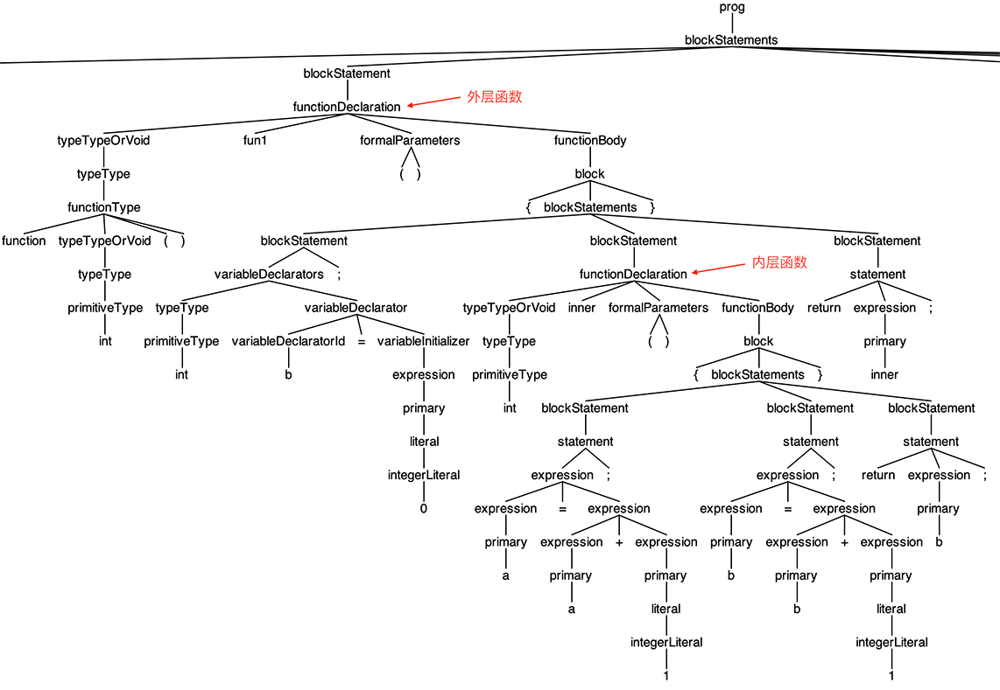
现在，测试用例准备好了，我们着手实现一下闭包的机制。
前面提到，闭包的内在矛盾是运行时的环境和定义时的作用域之间的矛盾。那么我们把内部环境中需要的变量，打包交给闭包函数，它就可以随时访问这些变量了。
在AST上做一下图形化的分析，看看给fun2这个变量赋值的时候，发生了什么事情：

简单地描述一下给fun2赋值时的执行过程：
先执行fun1()函数，内部的inner()函数作为返回值返回给调用者。这时，程序能访问两层作用域，最近一层是fun1()，里面有变量b；外层还有一层，里面有全局变量a。这时是把环境变量打包的最后的机会，否则退出fun1()函数以后，变量b就消失了。
然后把内部函数连同打包好的环境变量的值，创建一个FunctionObject对象，作为fun1()的返回值，给到调用者。
给fun2这个变量赋值。
调用fun2()函数。函数执行时，有一个私有的闭包环境可以访问b的值，这个环境就是第二步所创建的FunctionObject对象。
最终，我们实现了闭包的功能。
在这个过程中，我们要提前记录下inner()函数都引用了哪些外部变量，以便对这些变量打包。这是在对程序做语义分析时完成的，你可以参考一下ClosureAnalyzer.java中的代码：
/**
* 为某个函数计算闭包变量，也就是它所引用的外部环境变量。
* 算法：计算所有的变量引用，去掉内部声明的变量，剩下的就是外部的。
* @param function
* @return
*/
private Set<Variable> calcClosureVariables(Function function){
Set<Variable> refered = variablesReferedByScope(function);
Set<Variable> declared = variablesDeclaredUnderScope(function);
refered.removeAll(declared);
return refered;
}
下面是ASTEvaluator.java中把环境变量打包进闭包中的代码片段，它是在当前的栈里获取数据的：
/**
* 为闭包获取环境变量的值
* @param function 闭包所关联的函数。这个函数会访问一些环境变量。
* @param valueContainer 存放环境变量的值的容器
*/
private void getClosureValues(Function function, PlayObject valueContainer){
if (function.closureVariables != null) {
for (Variable var : function.closureVariables) {
// 现在还可以从栈里取，退出函数以后就不行了
LValue lValue = getLValue(var);
Object value = lValue.getValue();
valueContainer.fields.put(var, value);
}
}
}
你可以把测试用例跑一跑，修改一下，试试其他闭包特性。
体验一下函数式编程
现在，我们已经实现了闭包的机制，函数也变成了一等公民。不经意间，我们似乎在一定程度上支持了函数式编程（functional programming）。
它是一种语言风格，有很多优点，比如简洁、安全等。备受很多程序员推崇的LISP语言就具备函数式编程特征，Java等语言也增加了函数式编程的特点。
函数式编程的一个典型特点就是高阶函数（High-order function）功能，高阶函数是这样一种函数，它能够接受其他函数作为自己的参数，javascript中数组的map方法，就是一个高阶函数。我们通过下面的例子测试一下高阶函数功能：
/**
LinkedList.play
实现了一个简单的链表，并演示了高阶函数的功能，比如在javascript中常用的map功能，
它能根据遍历列表中的每个元素，执行一个函数，并返回一个新的列表。给它传不同的函数，会返回不同的列表。
*/
//链表的节点
class ListNode{
int value;
ListNode next; //下一个节点
ListNode (int v){
value = v;
}
}
//链表
class LinkedList{
ListNode start;
ListNode end;
//添加新节点
void add(int value){
ListNode node = ListNode(value);
if (start == null){
start = node;
end = node;
}
else{
end.next = node;
end = node;
}
}
//打印所有节点内容
void dump(){
ListNode node = start;
while (node != null){
println(node.value);
node = node.next;
}
}
//高阶函数功能，参数是一个函数，对每个成员做一个计算，形成一个新的LinkedList
LinkedList map(function int(int) fun){
ListNode node = start;
LinkedList newList = LinkedList();
while (node != null){
int newValue = fun(node.value);
newList.add(newValue);
node = node.next;
}
return newList;
}
}
//函数：平方值
int square(int value){
return value * value;
}
//函数：加1
int addOne(int value){
return value + 1;
}
LinkedList list = LinkedList();
list.add(2);
list.add(3);
list.add(5);
println("original list:");
list.dump();
println();
println("add 1 to each element:");
LinkedList list2 = list.map(addOne);
list2.dump();
println();
println("square of each element:");
LinkedList list3 = list.map(square);
list3.dump();
运行后得到的结果如下：
original list:
2
3
5
add 1 to each element:
3
4
6
square of each element:
4
9
25
高阶函数功能很好玩，你可以修改程序，好好玩一下。
课程小结
闭包这个概念，对于初学者来讲是一个挑战。其实，闭包就是把函数在静态作用域中所访问的变量的生存期拉长，形成一份可以由这个函数单独访问的数据。正因为这些数据只能被闭包函数访问，所以也就具备了对信息进行封装、隐藏内部细节的特性。
听上去是不是有点儿耳熟？封装，把数据和对数据的操作封在一起，这不就是面向对象编程嘛！一个闭包可以看做是一个对象。反过来看，一个对象是不是也可以看做一个闭包呢？对象的属性，也可以看做被方法所独占的环境变量，其生存期也必须保证能够被方法一直正常的访问。
你看，两个不相干的概念，在用作用域和生存期这样的话语体系去解读之后，就会很相似，在内部实现上也可以当成一回事。现在，你应该更清楚了吧？
一课一思
思考一下我在开头提到的那个面试题：如何用闭包做类似面向对象的编程？
其实，我在课程中提供了一个closure-mammal.play的示例代码，它完全用闭包的概念实现了面向对象编程的多态特征。而这个闭包的实现，是一种更高级的闭包，比普通的函数闭包还多了一点有用的特性，更像对象了。我希望你能发现它到底不同在哪里，也能在代码中找到实现这些特性的位置。
你能发现，我一直在讲作用域和生存期，不要嫌我啰嗦，把它们吃透，会对你使用语言有很大帮助。比如，有同学非常困扰JavaScript的this，我负责任地讲，只要对作用域有清晰的了解，你就能很容易地掌握this。
那么，关于作用域跟this之间的关联，如果你有什么想法，也欢迎在留言区分享。
最后，感谢你的阅读，如果这篇文章让你有所收获，也欢迎你将它分享给更多的朋友，特别是分享给那些还没搞清楚闭包的朋友。
本节课的示例代码放在了文末，供你参考。
- playscript-java（项目目录）： 码云 GitHub
- PlayScript.java（入口程序）： 码云 GitHub
- PlayScript.g4（语法规则）： 码云 GitHub
- ASTEvaluator.java（解释器，找找闭包运行期时怎么实现的）： 码云 GitHub
- ClosureAnalyzer.java（分析闭包所引用的环境变量）：码云 GitHub
- RefResolver.java（在这里看看函数型变量是怎么消解的）： 码云 GitHub
- closure.play（演示基本的闭包特征）： 码云 GitHub
- closure-fibonacci.play（用闭包实现了斐波那契数列计算）：码云 GitHub
- closure-mammal.play（用闭包实现了面向对象特性，请找找它比普通闭包强在哪里）：码云 GitHub
- FirstClassFunction.play（演示一等公民函数的特征）：码云 GitHub
- LinkedList.play（演示了高阶函数map）：码云 GitHub
11 语义分析（上）：如何建立一个完善的类型系统？
在做语法分析时我们可以得到一棵语法树，而基于这棵树能做什么，是语义的事情。比如，+号的含义是让两个数值相加，并且通常还能进行缺省的类型转换。所以，如果要区分不同语言的差异，不能光看语言的语法。比如Java语言和JavaScript在代码块的语法上是一样的，都是用花括号，但在语义上是不同的，一个有块作用域，一个没有。
这样看来，相比词法和语法的设计与处理，语义设计和分析似乎要复杂很多。虽然我们借作用域、生存期、函数等特性的实现涉猎了很多语义分析的场景，但离系统地掌握语义分析，还差一点儿火候。所以，为了帮你攻破语义分析这个阶段，我会用两节课的时间，再梳理一下语义分析中的重要知识，让你更好地建立起相关的知识脉络。
今天这节课，我们把注意力集中在类型系统这个话题上。
围绕类型系统产生过一些争论，有的程序员会拥护动态类型语言，有的会觉得静态类型语言好。要想探究这个问题，我们需要对类型系统有个清晰的了解，最直接的方式，就是建立一个完善的类型系统。
那么什么是类型系统？我们又该怎样建立一个完善的类型系统呢？
其实，类型系统是一门语言所有的类型的集合，操作这些类型的规则，以及类型之间怎么相互作用的（比如一个类型能否转换成另一个类型）。如果要建立一个完善的类型系统，形成对类型系统比较完整的认知，需要从两个方面出发：
- 根据领域的需求，设计自己的类型系统的特征。
- 在编译器中支持类型检查、类型推导和类型转换。
先从第一个方面出发看一下。
设计类型系统的特征
在进入这个话题之前，我想先问你一个有意义的问题：类型到底是什么？我们说一个类型的时候，究竟在说什么？
要知道，在机器代码这个层面，其实是分不出什么数据类型的。在机器指令眼里，那就是0101，它并不对类型做任何要求，不需要知道哪儿是一个整数，哪儿代表着一个字符，哪儿又是内存地址。你让它做什么操作都可以，即使这个操作没有意义，比如把一个指针值跟一个字符相加。
那么高级语言为什么要增加类型这种机制呢？
对类型做定义很难，但大家公认的有一个说法：类型是针对一组数值，以及在这组数值之上的一组操作。比如，对于数字类型，你可以对它进行加减乘除算术运算，对于字符串就不行。
所以，类型是高级语言赋予的一种语义，有了类型这种机制，就相当于定了规矩，可以检查施加在数据上的操作是否合法。因此类型系统最大的好处，就是可以通过类型检查降低计算出错的概率。所以，现代计算机语言都会精心设计一个类型系统，而不是像汇编语言那样完全不区分类型。
不过，类型系统的设计有很多需要取舍和权衡的方面，比如：
- 面向对象的拥护者希望所有的类型都是对象，而重视数据计算性能的人认为应该支持非对象化的基础数据类型；
- 你想把字符串作为原生数据类型，还是像Java那样只是一个普通的类？
- 是静态类型语言好还是动态类型语言好？
- ……
虽然类型系统的设计有很多需要取舍和权衡的方面，但它最需要考虑的是，是否符合这门语言想解决的问题，我们用静态类型语言和动态类型语言分析一下。
根据类型检查是在编译期还是在运行期进行的，我们可以把计算机语言分为两类：
- 静态类型语言（全部或者几乎全部的类型检查是在编译期进行的）。
- 动态类型语言（类型的检查是在运行期进行的）。
静态类型语言的拥护者说：
因为编译期做了类型检查，所以程序错误较少，运行期不用再检查类型，性能更高。像C、Java和Go语言，在编译时就对类型做很多处理，包括检查类型是否匹配，以及进行缺省的类型转换，大大降低了程序出错的可能性，还能让程序运行效率更高，因为不需要在运行时再去做类型检查和转换。
而动态类型语言的拥护者说：
静态语言太严格，还要一遍遍编译，编程效率低，用动态类型语言方便进行快速开发。JavaScript、Python、PHP等都是动态类型的。
客观地讲，这些说法都有道理。目前的趋势是，某些动态类型语言在想办法增加一些机制，在编译期就能做类型检查，比如用TypeScript代替JavaScript编写程序，做完检查后再输出成JavaScript。而某些静态语言呢，却又发明出一些办法，部分地绕过类型检查，从而提供动态类型语言的灵活性。
再延伸一下，跟静态类型和动态类型概念相关联的，还有强类型和弱类型。强类型语言中，变量的类型一旦声明就不能改变，弱类型语言中，变量类型在运行期时可以改变。二者的本质区别是，强类型语言不允许违法操作，因为能够被检查出来，弱类型语言则从机制上就无法禁止违法操作，所以是不安全的。比如你写了一个表达式a*b。如果a和b这两个变量是数值，这个操作就没有问题，但如果a或b不是数值，那就没有意义了，弱类型语言可能就检查不出这类问题。
也就是，静态类型和动态类型说的是什么时候检查的问题，强类型和弱类型说的是就算检查，也检查不出来，或者没法检查的问题，这两组概念经常会被搞混，所以我在这里带你了解一下。
接着说回来。关于类型特征的取舍，是根据领域问题而定的。举例来说，很多人可能都觉得强类型更好，但对于儿童编程启蒙来说，他们最好尽可能地做各种尝试，如果必须遵守与类型有关的规则，程序总是跑不起来，可能会打击到他们。
对于playscript而言，因为目前是用来做教学演示的，所以我们尽可能地多涉及与类型处理有关的情况，供大家体会算法，或者在自己的工作中借鉴。
首先，playscript是静态类型和强类型的，所以几乎要做各种类型检查，你可以参考看看这些都是怎么做的。
第二，我们既支持对象，也支持原生的基础数据类型。这两种类型的处理特点不一样，你也可以借鉴一下。后面面向对象的一讲，我会再讲与之相关的子类型（Subtyping）和运行时类型信息（Run Time Type Information, RTTI）的概念，这里就不展开了。
第三，我们还支持函数作为一等公民，也就是支持函数的类型。函数的类型是它的原型，包括返回值和参数，原型一样的函数，就看做是同样类型的，可以进行赋值。这样，你也就可以了解实现函数式编程特性时，要处理哪些额外的类型问题。
接下来，我们来说一说如何做类型检查、类型推导和类型转换。
如何做类型检查、类型推导和类型转换
先来看一看，如果编写一个编译器，我们在做类型分析时会遇到哪些问题。以下面这个最简单的表达式为例，这个表达式在不同的情况下会有不同的运行结果：
a = b + 10
- 如果b是一个浮点型，b+10的结果也是浮点型。如果b是字符串型的，有些语言也是允许执行+号运算的，实际的结果是字符串的连接。这个分析过程，就是类型推导（Type Inference）。
- 当右边的值计算完，赋值给a的时候，要检查左右两边的类型是否匹配。这个过程，就是类型检查（Type Checking）。
- 如果a的类型是浮点型，而右边传过来的是整型，那么一般就要进行缺省的类型转换（Type Conversion）。
类型的检查、推导和转换是三个工作，可是采用的技术手段差不多，所以我们放在一起讲，先来看看类型的推导。
在早期的playscript的实现中，是假设运算符两边的类型都是整型的，并做了强制转换。
这在实际应用中，当然不够用，因为我们还需要用到其他的数据类型。那怎么办呢？在运行时再去判断和转换吗？当然可以，但我们还有更好的选择，就是在编译期先判断出表达式的类型来。比如下面这段代码，是在RefResolve.java中，推导表达式的类型：
case PlayScriptParser.ADD:
if (type1 == PrimitiveType.String ||
type2 == PrimitiveType.String){
type = PrimitiveType.String;
}
else if (type1 instanceof PrimitiveType &&
type2 instanceof PrimitiveType){
//类型“向上”对齐，比如一个int和一个float，取float
type = PrimitiveType.getUpperType(type1,type2);
}else{
at.log("operand should be PrimitiveType for additive operation", ctx);
}
break;
这段代码提到，如果操作符号两边有一边数据类型是String类型的，那整个表达式就是String类型的。如果是其他基础类型的，就要按照一定的规则进行类型的转换，并确定运算结果的类型。比如，+号一边是double类型的，另一边是int类型的，那就要把int型的转换成double型的，最后计算结果也是double类型的。
做了类型的推导以后，我们就可以简化运行期的计算，不需要在运行期做类型判断了：
private Object add(Object obj1, Object obj2, Type targetType) {
Object rtn = null;
if (targetType == PrimitiveType.String) {
rtn = String.valueOf(obj1) +
String.valueOf(obj2);
} else if (targetType == PrimitiveType.Integer) {
rtn = ((Number)obj1).intValue() +
((Number)obj2).intValue();
} else if (targetType == PrimitiveType.Float) {
rtn = ((Number)obj1).floatValue()+
((Number)obj2).floatValue();
}
...
return rtn;
}
通过这个类型推导的例子，我们又可以引出S属性（Synthesized Attribute）的知识点。如果一种属性能够从下级节点推导出来，那么这种属性就叫做S属性，字面意思是综合属性，就是在AST中从下级的属性归纳、综合出本级的属性。更准确地说，是通过下级节点和自身来确定的。

与S属性相对应的是I属性（Inherited Attribute），也就是继承属性，即AST中某个节点的属性是由上级节点、兄弟节点和它自身来决定的，比如：
int a;
变量a的类型是int，这个很直观，因为变量声明语句中已经指出了a的类型，但这个类型可不是从下级节点推导出来的，而是从兄弟节点推导出来的。
在PlayScript.g4中，变量声明的相关语法如下：
variableDeclarators
: typeType variableDeclarator (',' variableDeclarator)*
;
variableDeclarator
: variableDeclaratorId ('=' variableInitializer)?
;
variableDeclaratorId
: IDENTIFIER ('[' ']')*
;
typeType
: (classOrInterfaceType| functionType | primitiveType) ('[' ']')*
;
把int a;这样一个简单的变量声明语句解析成AST，就形成了一棵有两个分枝的树：

这棵树的左枝，可以从下向上推导类型，所以类型属性也就是S属性。而右枝则必须从根节点（也就是variableDeclarators）往下继承类型属性，所以对于a这个节点来说，它的类型属性是I属性。
这里插一句，RefResolver.java实现了PlayScriptListener接口。这样，我们可以用标准的方法遍历AST。代码中的enterXXX()方法表示刚进入这个节点，exitXXX()方法表示退出这个节点，这时所有的子节点都已经遍历过了。在计算S属性时，我一定是在exitXXX()方法中，因为可以利用下级节点的类型推导出自身节点的类型。
很多现代语言会支持自动类型推导，例如Go语言就有两种声明变量的方式：
var a int = 10 //第一种
a := 10 //第二种
第一种方式，a的类型是显式声明的；第二种方式，a的类型是由右边的表达式推导出来- 的。从生成的AST中，你能看到它们都是经历了从下到上的综合，再从上到下的继承的过程：
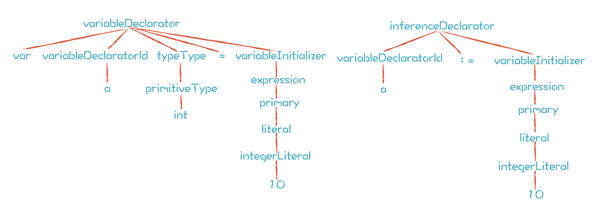
说完了类型推导，我们再看看类型检查。
类型检查主要出现在几个场景中：
- 赋值语句（检查赋值操作左边和右边的类型是否匹配）。
- 变量声明语句（因为变量声明语句中也会有初始化部分，所以也需要类型匹配）。
- 函数传参（调用函数的时候，传入的参数要符合形参的要求）。
- 函数返回值（从函数中返回一个值的时候，要符合函数返回值的规定）。
类型检查还有一个特点：以赋值语句为例，左边的类型，是I属性，是从声明中得到的；右边的类型是S属性，是自下而上综合出来的。当左右两边的类型相遇之后，就要检查二者是否匹配，被赋值的变量要满足左边的类型要求。
如果匹配，自然没有问题，如果不完全匹配，也不一定马上报错，而是要看看是否能进行类型转换。比如，一般的语言在处理整型和浮点型的混合运算时，都能进行自动的转换。像JavaScript和SQL，甚至能够在算术运算时，自动将字符串转换成数字。在MySQL里，运行下面的语句，会得到3，它自动将’2’转换成了数字：
select 1 + '2';
这个过程其实是有风险的，这就像在强类型的语言中开了一个后门，绕过或部分绕过了编译器的类型检查功能。把父类转成子类的场景中，编译器顶多能检查这两个类之间是否有继承关系，如果连继承关系都没有，这当然能检查出错误，制止这种转换。但一个基类的子类可能是很多的，具体这个转换对不对，只有到运行期才能检查出错误来。C语言因为可以强制做各种转换，这个后门开的就更大了。不过这也是C语言要达到它的设计目的，必须具备的特性。
关于类型的处理，大家可以参考playscript的示例代码，里面有三个类可以看一看：
- TypeResolver.java（做了自上而下的类型推导，也就是I属性的计算，包括变量- 声明、类的继承声明、函数声明）。
- RefResolver.java（有自下而上的类型推导的逻辑）。
- TypeChecker.java（类型检查）。
课程小结
本节课我们重点探讨了语义分析和语言设计中的一个重要话题：类型系统。
理解类型系统，了解它的本质对我们学习语言会有很大的帮助。我希望在这个过程中，你不会再被静态类型和动态类型，强类型和弱类型这样的概念难倒，甚至可以质疑已有的一些观念。比如，如果你仔细研究，会发现静态类型和动态类型不是绝对的，静态类型的语言如Java，也会在运行期去处理一些类型检查。强类型和弱类型可能也不是绝对的，就像C语言，你如果不允许做任何强制类型转换，不允许指针越界，那它也就完全变成强类型的了。
掌握对计算机语言更深一点儿的理解能力，将会是你学习编译原理的额外回报！
一课一思
针对今天讲的类型系统的知识，你所熟悉的语言是静态类型的，还是动态类型的？是强类型的，还是弱类型的？它的类型系统中有哪些你觉得有意思或者引起你困扰的设计？欢迎在留言区分享你的发现。
最后，感谢你的阅读，如果这篇文章让你有所收获，也欢迎你将它分享给更多的朋友。
本节课相关的示例代码放在文末，供你参考。
12 语义分析（下）：如何做上下文相关情况的处理？
我们知道，词法分析和语法分析阶段，进行的处理都是上下文无关的。可仅凭上下文无关的处理，是不能完成一门强大的语言的。比如先声明变量，再用变量，这是典型的上下文相关的情况，我们肯定不能用上下文无关文法表达这种情况，所以语法分析阶段处理不了这个问题，只能在语义分析阶段处理。语义分析的本质，就是针对上下文相关的情况做处理。
我们之前讲到的作用域，是一种上下文相关的情况，因为如果作用域不同，能使用的变量也是不同的。类型系统也是一种上下文相关的情况，类型推导和类型检查都要基于上下文中相关的AST节点。
本节课，我们再讲两个这样的场景：引用的消解、左值和右值，然后再介绍上下文相关情况分析的一种方法：属性计算。这样，你会把语义分析就是上下文处理的本质掌握得更清楚，并掌握属性计算这个强大的方法。
我们先来说说引用的消解这个场景。
语义分析场景：引用的消解
在程序里使用变量、函数、类等符号时，我们需要知道它们指的是谁，要能对应到定义它们的地方。下面的例子中，当使用变量a时，我们需要知道它是全局变量a，还是fun()函数中的本地变量a。因为不同作用域里可能有相同名称的变量，所以必须找到正确的那个。这个过程，可以叫引用消解。
/*
scope.c
测试作用域
*/
#include <stdio.h>
int a = 1;
void fun()
{
a = 2; //这是指全局变量a
int a = 3; //声明一个本地变量
int b = a; //这个a指的是本地变量
printf("in func: a=%d b=%d \n", a, b);
}
在集成开发环境中，当我们点击一个变量、函数或类，可以跳到定义它的地方。另一方面，当我们重构一个变量名称、方法名称或类名称的时候，所有引用它的地方都会同步修改。这是因为IDE分析了符号之间的交叉引用关系。
函数的引用消解比变量的引用消解还要更复杂一些。
它不仅要比对函数名称，还要比较参数和返回值（可以叫函数原型，又或者叫函数的类型）。我们在把函数提升为一等公民的时候，提到函数类型（FunctionType）的概念。两个函数的类型相同，需要返回值、参数个数、每个参数的类型都能匹配得上才行。
在面向对象编程语言中，函数引用的消解也很复杂。
当一个参数需要一个对象的时候，程序中提供其子类的一个实例也是可以的，也就是子类可以用在所有需要父类的地方，例如下面的代码：
class MyClass1{} //父类
class MyClass2 extends MyClass1{} //子类
MyClass1 obj1;
MyClass2 obj2;
function fun(MyClass1 obj){} //参数需要父类的实例
fun(obj2); //提供子类的实例
在C++语言中，引用的消解还要更加复杂。
它还要考虑某个实参是否能够被自动转换成形参所要求的类型，比如在一个需要double类型的地方，你给它传一个int也是可以的。
命名空间也是做引用消解的时候需要考虑的因素。
像Java、C++都支持命名空间。如果在代码前头引入了某个命名空间，我们就可以直接引用里面的符号，否则需要冠以命名空间。例如：
play.PlayScriptCompiler.Compile() //Java语言
play::PlayScriptCompiler.Compile() //C++语言
而做引用消解可能会产生几个结果：
- 解析出了准确的引用关系。
- 重复定义（在声明新的符号的时候，发现这个符号已经被定义过了）。
- 引用失败（找不到某个符号的定义）。
- 如果两个不同的命名空间中都有相同名称的符号，编程者需要明确指定。
在playscript中，引用消解的结果被存到了AnnotatedTree.java类中的symbolOfNode属性中去了，从它可以查到某个AST节点引用的到底是哪个变量或函数，从而在运行期正确的执行，你可以看一下代码，了解引用消解和使用的过程。
了解完引用的消解之后，接下来，我们再讲一个很有意思的场景：左值和右值。
语义分析场景：左值和右值
在开发编译器或解释器的过程中，你一定会遇到左值和右值的问题。比如，在playscript的ASTEvaluate.java中，我们在visitPrimary节点可以对变量求值。如果是下面语句中的a，没有问题，把a变量的值取出来就好了：
a + 3;
可是，如果针对的是赋值语句，a在等号的左边，怎么对a求值呢？
a = 3;
假设a变量原来的值是4，如果还是把它的值取出来，那么成了3=4，这就变得没有意义了。所以，不能把a的值取出来，而应该取出a的地址，或者说a的引用，然后用赋值操作把3这个值写到a的内存地址。这时，我们说取出来的是a的左值（L-value）。
左值最早是在C语言中提出的，通常出现在表达式的左边，如赋值语句的左边。左值取的是变量的地址（或者说变量的引用），获得地址以后，我们就可以把新值写进去了。
与左值相对应的就是右值（R-value），右值就是我们通常所说的值，不是地址。
在上面这两种情况下，变量a在AST中都是对应同一个节点，也就是primary节点。那这个节点求值时是该返回左值还是右值呢？这要借助上下文来分析和处理。如果这个primary节点存在于下面这几种情况中，那就需要取左值：
- 赋值表达式的左边；
- 带有初始化的变量声明语句中的变量；
- 当给函数形参赋值的时候；
- 一元操作符： ++和–。
- 其他需要改变变量内容的操作。
在讨论primary节点在哪种情况下取左值时，我们可以引出另一个问题：不是所有的表达式，都能生成一个合格的左值。也就是说，出现在赋值语句左边的，必须是能够获得左值的表达式。比如一个变量是可以的，一个类的属性也是可以的。但如果是一个常量，或者2+3这样的表达式在赋值符号的左边，那就不行。所以，判断表达式能否生成一个合格的左值也是语义检查的一项工作。
借上节课讲过的S属性和I属性的概念，我们把刚才说的两个情况总结成primay节点的两个属性，你可以判断一下，这两个属性是S属性还是I属性？
- 属性1：某primary节点求值时，是否应该求左值？
- 属性2：某primary节点求值时，能否求出左值？
你可能发现了，这跟我们类型检查有点儿相似，一个是I属性，一个是S属性，两个一比对，就能检查求左值的表达式是否合法。从这儿我们也能看出，处理上下文相关的情况，经常用属性计算的方法。接下来，我们就谈谈如何做属性计算。
如何做属性计算
属性计算是做上下文分析，或者说语义分析的一种算法。按照属性计算的视角，我们之前所处理的各种语义分析问题，都可以看做是对AST节点的某个属性进行计算。比如，针对求左值场景中的primary节点，它需要计算的属性包括：
- 它的变量定义是哪个（这就引用到定义该变量的Symbol）。
- 它的类型是什么?
- 它的作用域是什么？
- 这个节点求值时，是否该返回左值？能否正确地返回一个左值？
- 它的值是什么？
从属性计算的角度看，对表达式求值，或运行脚本，只是去计算AST节点的Value属性，Value这个属性能够计算，其他属性当然也能计算。
属性计算需要用到属性文法。在词法、语法分析阶段，我们分别学习了正则文法和上下文无关文法，在语义分析阶段我们要了解的是属性文法（Attribute Grammar）。
属性文法的主要思路是计算机科学的重要开拓者，高德纳（Donald Knuth）在《The Genesis of Attribute Grammers》中提出的。它是在上下文无关文法的基础上做了一些增强，使之能够计算属性值。下面是上下文无关文法表达加法和乘法运算的例子：
add → add + mul
add → mul
mul → mul * primary
mul → primary
primary → "(" add ")"
primary → integer
然后看一看对value属性进行计算的属性文法：
add1 → add1 + mul [ add1.value = add2.value + mul.value ]
add → mul [ add.value = mul.value ]
mul1 → mul2 * primary [ mul1.value = mul2.value * primary.value ]
mul → primary [ mul.value = primary.value ]
primary → "(" add ")" [ primary.value = add.value ]
primary → integer [ primary.value = strToInt(integer.str) ]
利用属性文法，我们可以定义规则，然后用工具自动实现对属性的计算。有同学曾经问：“我们解析表达式2+3的时候，得到一个AST，但我怎么知道它运算的时候是做加法呢？”
因为我们可以在语法规则的基础上制定属性文法，在解析语法的过程中或者形成AST之后，我们就可以根据属性文法的规则做属性计算。比如在Antlr中，你可以在语法规则文件中插入一些代码，在语法分析的过程中执行你的代码，完成一些必要的计算。
总结一下属性计算的特点：它会基于语法规则，增加一些与语义处理有关的规则。
所以，我们也把这种语义规则的定义叫做语法制导的定义（Syntax directed definition，SDD），如果变成计算动作，就叫做语法制导的翻译（Syntax directed translation，SDT）。
属性计算，可以伴随着语法分析的过程一起进行，也可以在做完语法分析以后再进行。这两个阶段不一定完全切分开。甚至，我们有时候会在语法分析的时候做一些属性计算，然后把计算结果反馈回语法分析的逻辑，帮助语法分析更好地执行（这是在工程实践中会运用到的一个技巧，我这里稍微做了一个延展，帮大家开阔一下思路，免得把知识学得太固化了）。
那么，在解析语法的时候，如何同时做属性计算呢？我们知道，解析语法的过程，是逐步建立AST的过程。在这个过程中，计算某个节点的属性所依赖的其他节点可能被创建出来了。比如在递归下降算法中，当某个节点建立完毕以后，它的所有子节点一定也建立完毕了，所以S属性就可以计算出来了。同时，因为语法解析是从左向右进行的，它左边的兄弟节点也都建立起来了。
如果某个属性的计算，除了可能依赖子节点以外，只依赖左边的兄弟节点，不依赖右边的，这种属性就叫做L属性。它比S属性的范围更大一些，包含了部分的I属性。由于我们常用的语法分析的算法都是从左向右进行的，所以就很适合一边解析语法，一边计算L属性。
比如，C语言和Java语言进行类型分析，都可以用L属性的计算来实现。因为这两门语言的类型要么是从下往上综合出来的，属于S属性。要么是在做变量声明的时候，由声明中的变量类型确定的，类型节点在变量的左边。
2+3; //表达式类型是整型
float a; //a的类型是浮点型
那问题来了，Go语言的类型声明是放在变量后面的，这意味着类型节点一定是在右边的，那就不符合L属性文法了：
var a int = 10
没关系，我们没必要在语法分析阶段把属性全都计算出来，等到语法分析完毕后，再对AST遍历一下就好了。这时所有节点都有了，计算属性也就不是难事了。
在我们的playscript语言里，就采取了这种策略，实际上，为了让算法更清晰，我把语义分析过程拆成了好几个任务，对AST做了多次遍历。
第1遍：类型和作用域解析（TypeAndScopeScanner.java）。
把自定义类、函数和和作用域的树都分析出来。这么做的好处是，你可以使用在前，声明在后。比如你声明一个Mammal对象，而Mammal类的定义是在后面才出现的；在定义一个类的时候，对于类的成员也会出现使用在声明之前的情况，把类型解析先扫描一遍，就能方便地支持这个特性。
在写属性计算的算法时，计算的顺序可能是个最重要的问题。因为某属性的计算可能要依赖别的节点的属性先计算完。我们讨论的S属性、I属性和L属性，都是在考虑计算顺序。像使用在前，声明在后这种情况，就更要特殊处理了。
第2遍：类型的消解（TypeResolver.java）。
把所有出现引用到类型的地方，都消解掉，比如变量声明、函数参数声明、类的继承等等。做完消解以后，我们针对Mammal m;这样语句，就明确的知道了m的类型。这实际上是对I属性的类型的计算。
第3遍：引用的消解和S属性的类型的推导（RefResolver.java）。
这个时候，我们对所有的变量、函数调用，都会跟它的定义关联起来，并且完成了所有的类型计算。
第4遍：做类型检查（TypeChecker.java）。
比如当赋值语句左右两边的类型不兼容的时候，就可以报错。
第5遍：做一些语义合法性的检查（SematicValidator.java）。
比如break只能出现在循环语句中，如果某个函数声明了返回值，就一定要有return语句，等等。
语义分析的结果保存在AnnotatedTree.java类里，意思是被标注了属性的语法树。注意，这些属性在数据结构上，并不一定是AST节点的属性，我们可以借助Map等数据结构存储，只是在概念上，这些属性还是标注在树节点上的。
AnnotatedTree类的结构如下：
public class AnnotatedTree {
// AST
protected ParseTree ast = null;
// 解析出来的所有类型，包括类和函数
protected List<Type> types = new LinkedList<Type>();
// AST节点对应的Symbol
protected Map<ParserRuleContext, Symbol> symbolOfNode = new HashMap<ParserRuleContext, Symbol>();
// AST节点对应的Scope，如for、函数调用会启动新的Scope
protected Map<ParserRuleContext, Scope> node2Scope = new HashMap<ParserRuleContext, Scope>();
// 每个节点推断出来的类型
protected Map<ParserRuleContext, Type> typeOfNode = new HashMap<ParserRuleContext, Type>();
// 命名空间，作用域的根节点
NameSpace nameSpace = null;
...
}
我建议你看看这些语义分析的代码，了解一下如何保证语义分析的全面性。
课程小结
本节课我带你继续了解了语义分析的相关知识：
- 语义分析的本质是对上下文相关情况的处理，能做词法分析和语法分析所做不到的事情。
- 了解引用消解，左值和右值的场景，可以增加对语义分析的直观理解。
- 掌握属性计算和属性文法，可以使我们用更加形式化、更清晰的算法来完成语义分析的任务。
在我看来，语义分析这个阶段十分重要。因为词法和语法都有很固定的套路，甚至都可以工具化的实现。但语言设计的核心在于语义，特别是要让语义适合所解决的问题。比如SQL语言针对的是数据库的操作，那就去充分满足这个目标就好了。我们在前端技术的应用篇中，也会复盘讨论这个问题，不断实现认知的迭代升级。
如果想做一个自己领域的DSL，学习了这几讲语义分析的内容之后，你会更好地做语义特性的设计与取舍，也会对如何完成语义分析有清晰的思路。
一课一思
基于你熟悉的语言，来说说你觉得在语义分析阶段还有哪些上下文处理工作要做？需要计算出哪些属性？它们是I属性还是S属性？起到什么作用？这个思考练习很有意思，欢迎在留言区分享你的发现。
最后，感谢你的阅读，如果这篇文章让你有所收获，也欢迎你将它分享给更多的朋友。
本节课相关的示例代码放在文末，供你参考。
13 继承和多态：面向对象运行期的动态特性
面向对象是一个比较大的话题。在“09 | 面向对象：实现数据和方法的封装”中，我们了解了面向对象的封装特性，也探讨了对象成员的作用域和生存期特征等内容。本节课，我们再来了解一下面向对象的另外两个重要特征：继承和多态。
你也许会问，为什么没有在封装特性之后，马上讲继承和多态呢？那是因为继承和多态涉及的语义分析阶段的知识点比较多，特别是它对类型系统提出了新的概念和挑战，所以我们先掌握语义分析，再了解这部分内容，才是最好的选择。
继承和多态对类型系统提出的新概念，就是子类型。我们之前接触的类型往往是并列关系，你是整型，我是字符串型，都是平等的。而现在，一个类型可以是另一个类型的子类型，比如我是一只羊，又属于哺乳动物。这会导致我们在编译期无法准确计算出所有的类型，从而无法对方法和属性的调用做完全正确的消解（或者说绑定）。这部分工作要留到运行期去做，也因此，面向对象编程会具备非常好的优势，因为它会导致多态性。这个特性会让面向对象语言在处理某些类型的问题时，更加优雅。
而我们要想深刻理解面向对象的特征，就必须了解子类型的原理和运行期的机制。所以，接下来，我们从类型体系的角度理解继承和多态，然后看看在编译期需要做哪些语义分析，再考察继承和多态的运行期特征。
从类型体系的角度理解继承和多态
继承的意思是一个类的子类，自动具备了父类的属性和方法，除非被父类声明为私有的。比如一个类是哺乳动物，它有体重（weight）的属性，还会做叫(speak)的操作。如果基于哺乳动物这个父类创建牛和羊两个子类，那么牛和羊就自动继承了哺乳动物的属性，有体重，还会叫。
所以继承的强大之处，就在于重用。也就是有些逻辑，如果在父类中实现，在子类中就不必重复实现。
多态的意思是同一个类的不同子类，在调用同一个方法时会执行不同的动作。这是因为每个子类都可以重载掉父类的某个方法，提供一个不同的实现。哺乳动物会“叫”，而牛和羊重载了这个方法，发出“哞~”和“咩~”的声音。这似乎很普通，但如果创建一个哺乳动物的数组，并在里面存了各种动物对象，遍历这个数组并调用每个对象“叫”的方法时，就会发出“哞~”“咩~”“喵~”等各种声音，这就有点儿意思了。
下面这段示例代码，演示了继承和多态的特性，a的speak()方法和b的speak()方法会分别打印出牛叫和羊叫，调用的是子类的方法，而不是父类的方法：
/**
mammal.play 演示面向对象编程：继承和多态。
*/
class Mammal{
int weight = 20;
boolean canSpeak(){
return true;
}
void speak(){
println("mammal speaking...");
}
}
class Cow extends Mammal{
void speak(){
println("moo~~ moo~~");
}
}
class Sheep extends Mammal{
void speak(){
println("mee~~ mee~~");
println("My weight is: " + weight); //weight的作用域覆盖子类
}
}
//将子类的实例赋给父类的变量
Mammal a = Cow();
Mammal b = Sheep();
//canSpeak()方法是继承的
println("a.canSpeak() : " + a.canSpeak());
println("b.canSpeak() : " + b.canSpeak());
//下面两个的叫声会不同，在运行期动态绑定方法
a.speak(); //打印牛叫
b.speak(); //打印羊叫
所以，多态的强大之处，在于虽然每个子类不同，但我们仍然可以按照统一的方式使用它们，做到求同存异。以前端工程师天天打交道的前端框架为例，这是最能体现面向对象编程优势的领域之一。
前端界面往往会用到各种各样的小组件，比如静态文本、可编辑文本、按钮等等。如果我们想刷新组件的显示，没必要针对每种组件调用一个方法，把所有组件的类型枚举一遍，可以直接调用父类中统一定义的方法redraw()，非常简洁。即便将来添加新的前端组件，代码也不需要修改，程序也会更容易维护。
总结一下：面向对象编程时，我们可以给某个类创建不同的子类，实现一些个性化的功能；写程序时，我们可以站在抽象度更高的层次上，不去管具体的差异。
如果把上面的结论抽象成一般意义上的类型理论，就是子类型（subtype）。
子类型（或者动名词：子类型化），是对我们前面讲的类型体系的一个补充。
子类型的核心是提供了is-a的操作。也就是对某个类型所做的所有操作都可以用子类型替代。因为子类型 is a 父类型，也就是能够兼容父类型，比如一只牛是哺乳动物。
这意味着只要对哺乳动物可以做的操作，都可以对牛来做，这就是子类型的好处。它可以放宽对类型的检查，从而导致多态。你可以粗略地把面向对象的继承看做是子类型化的一个体现，它的结果就是能用子类代替父类，从而导致多态。
子类型有两种实现方式：一种就是像Java和C++语言，需要显式声明继承了什么类，或者实现了什么接口。这种叫做名义子类型（Nominal Subtyping）。
另一种是结构化子类型（Structural Subtyping），又叫鸭子类型（Duck Type）。也就是一个类不需要显式地说自己是什么类型，只要它实现了某个类型的所有方法，那就属于这个类型。鸭子类型是个直观的比喻，如果我们定义鸭子的特征是能够呱呱叫，那么只要能呱呱叫的，就都是鸭子。
了解了继承和多态之后，我们看看在编译期如何对继承和多态的特性做语义分析。
如何对继承和多态的特性做语义分析
针对哺乳动物的例子，我们用前面语义分析的知识，看看如何在编译期针对继承和多态做语义分析，也算对语义分析的知识点进行应用和复盘。
首先，从类型处理的角度出发，我们要识别出新的类型：Mammal、Cow和Sheep。之后，就可以用它们声明变量了。
第二，我们要设置正确的作用域。
从作用域的角度来看，一个类的属性（或者说成员变量），是可以规定能否被子类访问的。以Java为例，除了声明为private的属性以外，其他属性在子类中都是可见的。所以父类的属性的作用域，可以说是以树状的形式覆盖到了各级子类：
第三，要对变量和函数做类型的引用消解。
也就是要分析出a和b这两个变量的类型。那么a和b的类型是什么呢？是父类Mammal？还是Cow或Sheep？
注意，代码里是用Mammal来声明这两个变量的。按照类型推导的算法，a和b都是Mammal，这是个I属性计算的过程。也就是说，在编译期，我们无法知道变量被赋值的对象确切是哪个子类型，只知道声明变量时，它们是哺乳动物类型，至于是牛还是羊，就不清楚了。
你可能会说：“不对呀，我在编译的时候能知道a和b的准确类型啊，因为我看到了a是一个Cow对象，而b是一个Sheep，代码里有这两个对象的创建过程，我可以推导出a和b的实际类型呀。”
没错，语言的确有自动类型推导的特性，但你忽略了限制条件。比如，强类型机制要求变量的类型一旦确定，在运行过程就不能再改，所以要让a和b能够重新指向其他的对象，并保持类型不变。从这个角度出发，a和b的类型只能是父类Mammal。
所以说，编译期无法知道变量的真实类型，可能只知道它的父类型，也就是知道它是一个哺乳动物，但不知道它具体是牛还是羊。这会导致我们没法正确地给speak()方法做引用消解。正确的消解，是要指向Cow和Sheep的speak方法，而我们只能到运行期再解决这个问题。
所以接下来，我们就讨论一下如何在运行期实现方法的动态绑定。
如何在运行期实现方法的动态绑定
在运行期，我们能知道a和b这两个变量具体指向的是哪个对象，对象里是保存了真实类型信息的。具体来说，在playscript中，ClassObject的type属性会指向一个正确的Class，这个类型信息是在创建对象的时候被正确赋值的：
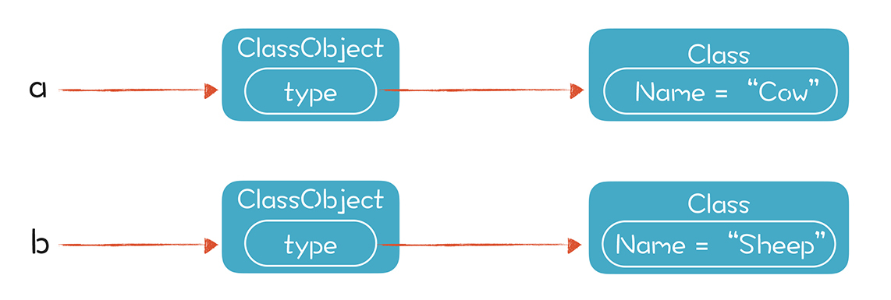
在调用类的属性和方法时，我们可以根据运行时获得的，确定的类型信息进行动态绑定。下面这段代码是从本级开始，逐级查找某个方法的实现，如果本级和父类都有这个方法，那么本级的就会覆盖掉父类的，这样就实现了多态：
protected Function getFunction(String name, List<Type> paramTypes){
//在本级查找这个这个方法
Function rtn = super.getFunction(name, paramTypes); //TODO 是否要检查visibility
//如果在本级找不到，那么递归的从父类中查找
if (rtn == null && parentClass != null){
rtn = parentClass.getFunction(name,paramTypes);
}
return rtn;
}
如果当前类里面没有实现这个方法，它可以直接复用某一级的父类中的实现，这实际上就是继承机制在运行期的原理。
你看，只有了解运行期都发生了什么，才能知道继承和多态是怎么发生的吧。
这里延伸一下。我们刚刚谈到，在运行时可以获取类型信息，这种机制就叫做运行时类型信息（Run Time Type Information, RTTI）。C++、Java等都有这种机制，比如Java的instanceof操作，就能检测某个对象是不是某个类或者其子类的实例。
汇编语言是无类型的，所以一般高级语言在编译成目标语言之后，这些高层的语义就会丢失。如果要在运行期获取类型信息，需要专门实现RTTI的功能，这就要花费额外的存储开销和计算开销。就像在playscript中，我们要在ClassObject中专门拿出一个字段来存type信息。
现在，我们已经了解如何在运行期获得类型信息，实现方法的动态绑定。接下来，我带你了解一下运行期的对象的逐级初始化机制。
继承情况下对象的实例化
在存在继承关系的情况下，创建对象时，不仅要初始化自己这一级的属性变量，还要把各级父类的属性变量也都初始化。比如，在实例化Cow的时候，还要对Mammal的成员变量weight做初始化。
所以我们要修改playscript中对象实例化的代码，从最顶层的祖先起，对所有的祖先层层初始化：
//从父类到子类层层执行缺省的初始化方法，即不带参数的初始化方法
protected ClassObject createAndInitClassObject(Class theClass) {
ClassObject obj = new ClassObject();
obj.type = theClass;
Stack<Class> ancestorChain = new Stack<Class>();
// 从上到下执行缺省的初始化方法
ancestorChain.push(theClass);
while (theClass.getParentClass() != null) {
ancestorChain.push(theClass.getParentClass());
theClass = theClass.getParentClass();
}
// 执行缺省的初始化方法
StackFrame frame = new StackFrame(obj);
pushStack(frame);
while (ancestorChain.size() > 0) {
Class c = ancestorChain.pop();
defaultObjectInit(c, obj);
}
popStack();
return obj;
}
在逐级初始化的过程中，我们要先执行缺省的成员变量初始化，也就是变量声明时所带的初始化部分，然后调用这一级的构造方法。如果不显式指定哪个构造方法，就会执行不带参数的构造方法。不过有的时候，子类会选择性地调用父类某一个构造方法，就像Java可以在构造方法里通过super()来显式地调用父类某个具体构造方法。
如何实现this和super
现在，我们已经了解了继承和多态在编译期和运行期的特性。接下来，我们通过一个示例程序，把本节课的所有知识复盘检验一下，加深对它们的理解，也加深对this和super机制的理解。
这个示例程序是用Java写的，在Java语言中，为面向对象编程专门提供了两个关键字：this和super，这两个关键字特别容易引起混乱。
比如在下面的ThisSuperTest.Java代码中，Mammal和它的子类Cow都有speak()方法。如果我们要创建一个Cow对象，会调用Mammal的构造方法Mammal(int weight)，而在这个构造方法里调用的this.speak()方法，是Mammal的，还是Cow的呢？
package play;
public class ThisSuperTest {
public static void main(String args[]){
//创建Cow对象的时候，会在Mammal的构造方法里调用this.reportWeight()，这里会显示什么
Cow cow = new Cow();
System.out.println();
//这里调用，会显示什么
cow.speak();
}
}
class Mammal{
int weight;
Mammal(){
System.out.println("Mammal() called");
this.weight = 100;
}
Mammal(int weight){
this(); //调用自己的另一个构造函数
System.out.println("Mammal(int weight) called");
this.weight = weight;
//这里访问属性，是自己的weight
System.out.println("this.weight in Mammal : " + this.weight);
//这里的speak()调用的是谁，会显示什么数值
this.speak();
}
void speak(){
System.out.println("Mammal's weight is : " + this.weight);
}
}
class Cow extends Mammal{
int weight = 300;
Cow(){
super(200); //调用父类的构造函数
}
void speak(){
System.out.println("Cow's weight is : " + this.weight);
System.out.println("super.weight is : " + super.weight);
}
}
运行结果如下：
Mammal() called
Mammal(int weight) called
this.weight in Mammal : 200
Cow's weight is : 0
super.weight is : 200
Cow's weight is : 300
super.weight is : 200
答案是Cow的speak()方法，而不是Mammal的。怎么回事？代码里不是调用的this.speak()吗？怎么这个this不是Mammal，却变成了它的子类Cow呢？
其实，在这段代码中，this用在了三个地方：
- this.weight 是访问自己的成员变量，因为成员变量的作用域是这个类本身，以及子类。
- this()是调用自己的另一个构造方法，因为这是构造方法，肯定是做自身的初始化。换句话说，构造方法不存在多态问题。
- this.speak()是调用一个普通的方法。这时，多态仍会起作用。运行时会根据对象的实际类型，来绑定到Cow的speak()方法上。
只不过，在Mammal的构造方法中调用this.speak()时，虽然访问的是Cow的speak()方法，打印的是Cow中定义的weight成员变量，但它的值却是0，而不是成员变量声明时“int weight = 300;”的300。为什么呢？
要想知道这个答案，我们需要理解多层继承情况下对象的初始化过程。在Mammal的构造方法中调用speak()的时候，Cow的初始化过程还没有开始呢，所以“int weight = 300;”还没有执行，Cow的weight属性还是缺省值0。
怎么样？一个小小的例子，却需要用到三个方面的知识：面向对象的成员变量的作用域、多态、对象初始化。Java程序员可以拿这个例子跟同事讨论一下，看看是不是很好玩。
讨论完this，super就比较简单了，它的语义要比this简单，不会出现歧义。super的调用，也是分成三种情况：
- super.weight。这是调用父类或更高的祖先的weight属性，而不是Cow这一级的weight属性。不一定非是直接父类，也可以是祖父类中的。根据变量作用域的覆盖关系，只要是比Cow这一级高的就行。
- super(200)。这是调用父类的构造方法，必须是直接父类的。
- super.speak()。跟访问属性的逻辑一样，是调用父类或更高的祖先的speak()方法。
课程小结
这节课我带你实现了面向对象中的另两个重要特性：继承和多态。在这节课中，我建议你掌握的重点内容是：
- 从类型的角度，面向对象的继承和多态是一种叫做子类型的现象，子类型能够放宽对类型的检查，从而支持多态。
- 在编译期，无法准确地完成对象方法和属性的消解，因为无法确切知道对象的子类型。
- 在运行期，我们能够获得对象的确切的子类型信息，从而绑定正确的方法和属性，实现继承和多态。另一个需要注意的运行期的特征，是对象的逐级初始化过程。
面向对象涉及了这么多精彩的知识点，拿它作为前端技术原理篇的最后一讲，是正确的选择。到目前为止，我们已经讲完了前端技术的原理篇，也如约拥有了一门具备丰富特性的脚本语言，甚至还支持面向对象编程、闭包、函数式编程这些很高级的特性。一般的应用项目所需要的语言特性，很难超过这个范围了。接下来的两节，我们就通过两个具体的应用案例，来检验一下学到的编译原理前端技术，看看它的威力！
一课一思
本节课我们深入讨论了面向对象的继承和多态特征。那么你所熟悉的框架，有没有充分利用继承和多态的特点实现一些很有威力的功能？或者，你有没有利用多态的特点，写过一些比较有用的类库或框架呢？欢迎在留言区分享你的经验。
最后，感谢你的阅读，如果这篇文章让你有所收获，也欢迎你将它分享给更多的朋友。
本节课的示例代码我放在了文末，供你参考。
14 前端技术应用（一）：如何透明地支持数据库分库分表？
从今天开始，我们正式进入了应用篇，我会用两节课的时间，带你应用编译器的前端技术。这样，你会把学到的编译技术和应用领域更好地结合起来，学以致用，让技术发挥应有的价值。还能通过实践加深对原理的理解，形成一个良好的循环。
这节课，我们主要讨论，一个分布式数据库领域的需求。我会带你设计一个中间层，让应用逻辑不必关心数据库的物理分布。这样，无论把数据库拆成多少个分库，编程时都会像面对一个物理库似的没什么区别。
接下来，我们先了解一下分布式数据库的需求和带来的挑战。
分布式数据库解决了什么问题，又带来了哪些挑战
随着技术的进步，我们编写的应用所采集、处理的数据越来越多，处理的访问请求也越来越多。而单一数据库服务器的处理能力是有限的，当数据量和访问量超过一定级别以后，就要开始做分库分表的操作。比如，把一个数据库的大表拆成几张表，把一个库拆成几个库，把读和写的操作分离开等等。我们把这类技术统称为分布式数据库技术。
分库分表（Sharding）有时也翻译成“数据库分片”。分片可以依据各种不同的策略，比如我开发过一个与社区有关的应用系统，这个系统的很多业务逻辑都是围绕小区展开的。对于这样的系统，按照地理分布的维度来分片就很合适，因为每次对数据库的操作基本上只会涉及其中一个分库。
假设我们有一个订单表，那么就可以依据一定的规则对订单或客户进行编号，编号中就包含地理编码。比如SDYT代表山东烟台，BJHD代表北京海淀，不同区域的数据放在不同的分库中：
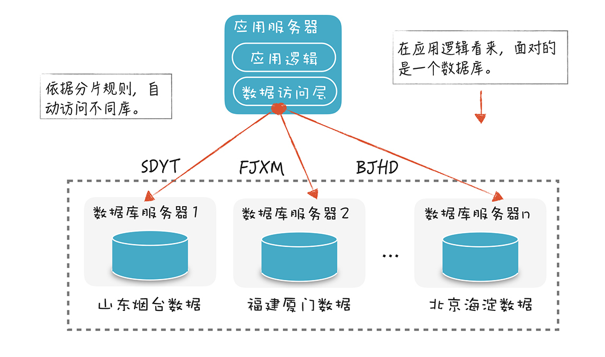
通过数据库分片，我们可以提高数据库服务的性能和可伸缩性。当数据量和访问量增加时，增加数据库节点的数量就行了。不过，虽然数据库的分片带来了性能和伸缩性的好处，但它也带来了一些挑战。
最明显的一个挑战，是数据库分片逻辑侵入到业务逻辑中。过去，应用逻辑只访问一个数据库，现在需要根据分片的规则，判断要去访问哪个数据库，再去跟这个数据库服务器连接。如果增加数据库分片，或者对分片策略进行调整，访问数据库的所有应用模块都要修改。这会让软件的维护变得更复杂，显然也不太符合软件工程中模块低耦合、把变化隔离的理念。
所以如果有一种技术，能让我们访问很多数据库分片时，像访问一个数据库那样就好了。数据库的物理分布，对应用是透明的。
可是，“理想很吸引人，现实很骨感”。要实现这个技术，需要解决很多问题：
首先是跨库查询的难题。如果SQL操作都针对一个库还好，但如果某个业务需求恰好要跨多个库，比如上面的例子中，如果要查询多个小区的住户信息，那么就要在多个库中都执行查询，然后把查询结果合并，一般还要排序。
如果我们前端显示的时候需要分页，每页显示一百行，那就更麻烦了。我们不可能从10个分库中各查出10行，合并成100行，这100行不一定排在前面，最差的情况，可能这100行恰好都在其中一个分库里。所以，你可能要从每个分库查出100行来，合并、排序后，再取出前100行。如果涉及数据库表跨库做连接，你想象一下，那就更麻烦了。
其次就是跨库做写入的难题。如果对数据库写入时遇到了跨库的情况，那么就必须实现分布式事务。所以，虽然分布式数据库的愿景很吸引人，但我们必须解决一系列技术问题。
这一讲，我们先解决最简单的问题，也就是当每次数据操作仅针对一个分库的时候，能否自动确定是哪个分库的问题。解决这个问题我们不需要依据别的信息，只需要提供SQL就行了。这就涉及对SQL语句的解析了，自然要用到编译技术。
解析SQL语句，判断访问哪个数据库
我画了一张简化版的示意图：假设有两张表，分别是订单表和客户表，它们的主键是order_id和cust_id：

我们采用的分片策略，是依据这两个主键的前4位的编码来确定数据库分片的逻辑，比如：前四位是SDYT，那就使用山东烟台的分片，如果是BJHD，就使用北京海淀的分片，等等。
在我们的应用中，会对订单表进行一些增删改查的操作，比如会执行下面的SQL语句：
//查询
select * from orders where order_id = 'SDYT20190805XXXX'
select * from orders where cust_id = 'SDYT987645'
//插入
insert into orders (order_id，...其他字段) values( "BJHD20190805XXXX",...)
//修改
update orders set price=298.00 where order_id='FJXM20190805XXXX'
//删除
delete from orders where order_id='SZLG20190805XXXX'
我们要能够解析这样的SQL语句，根据主键字段的值，决定去访问哪个分库或者分表。这就需要用到编译器前端技术，包括词法分析、语法分析和语义分析。
听到这儿，你可能会质疑：“解析SQL语句？是在开玩笑吗？”你可能觉得这个任务太棘手，犹豫着是否要忍受业务逻辑和技术逻辑混杂的缺陷，把判断分片的逻辑写到应用代码里，或者想解决这个问题，又或者想自己写一个开源项目，帮到更多的人。
无论你的内心活动如何，应用编译技术，能让你有更强的信心解决这个问题。那么如何去做呢？要想完成解析SQL的任务，在词法分析和语法分析这两个阶段，我建议你采用工具快速落地，比如Antlr。你要找一个现成的SQL语句的语法规则文件。
GitHub中，那个收集了很多示例Antlr规则文件的项目里，有两个可以参考的规则：一个是PLSQL的（它是Oracle数据库的SQL语法）；一个是SQLite的（这是一个嵌入式数据库）。
实际上，我还找到MySQL workbench所使用的一个产品级的规则文件。MySQL workbench是一个图形化工具，用于管理和访问MySQL。这个规则文件还是很靠谱的，不过它里面嵌了很多属性计算规则，而且是C++语言写的，我嫌处理起来麻烦，就先弃之不用，暂且采用SQLite的规则文件来做示范。
先来看一下这个文件里的一些规则，例如select语句相关的语法：
factored_select_stmt
: ( K_WITH K_RECURSIVE? common_table_expression ( ',' common_table_expression )* )?
select_core ( compound_operator select_core )*
( K_ORDER K_BY ordering_term ( ',' ordering_term )* )?
( K_LIMIT expr ( ( K_OFFSET | ',' ) expr )? )?
;
common_table_expression
: table_name ( '(' column_name ( ',' column_name )* ')' )? K_AS '(' select_stmt ')'
;
select_core
: K_SELECT ( K_DISTINCT | K_ALL )? result_column ( ',' result_column )*
( K_FROM ( table_or_subquery ( ',' table_or_subquery )* | join_clause ) )?
( K_WHERE expr )?
( K_GROUP K_BY expr ( ',' expr )* ( K_HAVING expr )? )?
| K_VALUES '(' expr ( ',' expr )* ')' ( ',' '(' expr ( ',' expr )* ')' )*
;
result_column
: '*'
| table_name '.' '*'
| expr ( K_AS? column_alias )?
;
我们可以一边看这个语法规则，一边想几个select语句做一做验证。你可以思考一下，这个规则是怎么把select语句拆成不同的部分的。
SQL里面也有表达式，我们研究一下它的表达式的规则：
expr
: literal_value
| BIND_PARAMETER
| ( ( database_name '.' )? table_name '.' )? column_name
| unary_operator expr
| expr '||' expr
| expr ( '*' | '/' | '%' ) expr
| expr ( '+' | '-' ) expr
| expr ( '<<' | '>>' | '&' | '|' ) expr
| expr ( '<' | '<=' | '>' | '>=' ) expr
| expr ( '=' | '==' | '!=' | '<>' | K_IS | K_IS K_NOT | K_IN | K_LIKE | K_GLOB | K_MATCH | K_REGEXP ) expr
| expr K_AND expr
| expr K_OR expr
| function_name '(' ( K_DISTINCT? expr ( ',' expr )* | '*' )? ')'
| '(' expr ')'
| K_CAST '(' expr K_AS type_name ')'
| expr K_COLLATE collation_name
| expr K_NOT? ( K_LIKE | K_GLOB | K_REGEXP | K_MATCH ) expr ( K_ESCAPE expr )?
| expr ( K_ISNULL | K_NOTNULL | K_NOT K_NULL )
| expr K_IS K_NOT? expr
| expr K_NOT? K_BETWEEN expr K_AND expr
| expr K_NOT? K_IN ( '(' ( select_stmt
| expr ( ',' expr )*
)?
')'
| ( database_name '.' )? table_name )
| ( ( K_NOT )? K_EXISTS )? '(' select_stmt ')'
| K_CASE expr? ( K_WHEN expr K_THEN expr )+ ( K_ELSE expr )? K_END
| raise_function
;
你可能会觉得SQL的表达式的规则跟其他语言的表达式规则很像。比如都支持加减乘除、关系比较、逻辑运算等等。而且从这个规则文件里，你一下子就能看出各种运算的优先级，比如你会注意到，字符串连接操作“||”比乘法和除法的优先级更高。所以，研究一门语言时积累的经验，在研究下一门语言时仍然有用。
有了规则文件之后，接下来，我们用Antlr生成词法分析器和语法分析器：
antlr -visitor -package dsql.parser SQLite.g4
在这个命令里，我用-package参数指定了生成的Java代码的包是dsql.parser。dsql是分布式SQL的意思。接着，我们可以写一点儿程序测试一下所生成的词法分析器和语法分析器：
String sql = "select order_id from orders where cust_id = 'SDYT987645'";
//词法分析
SQLiteLexer lexer = new SQLiteLexer(CharStreams.fromString(sql));
CommonTokenStream tokens = new CommonTokenStream(lexer);
//语法分析
SQLiteParser parser = new SQLiteParser(tokens);
ParseTree tree = parser.sql_stmt();
//输出lisp格式的AST
System.out.println(tree.toStringTree(parser));
这段程序的输出是LISP格式的AST，我调整了一下缩进，让它显得更像一棵树：
(sql_stmt
(factored_select_stmt
(select_core select
(result_column
(expr
(column_name
(any_name order_id))))
from (table_or_subquery
(table_name
(any_name orders)))
where (expr
(expr
(column_name
(any_name cust_id)))
=
(expr
(literal_value
('SDYT987645'))))))
从AST中，我们可以清晰地看出这个select语句是如何被解析成结构化数据的，再继续写点儿代码，就能获得想要的信息了。
接下来的任务是：对于访问订单表的select语句，要在where子句里找出cust_id=“客户编号”或order_id=“订单编号”这样的条件，从而能够根据客户编号或订单编号确定采用哪个分库。
怎么实现呢？很简单，我们用visitor模式遍历一下AST就可以了：
public String getDBName(String sql) {
//词法解析
SQLiteLexer lexer = new SQLiteLexer(CharStreams.fromString(sql));
CommonTokenStream tokens = new CommonTokenStream(lexer);
//语法解析
SQLiteParser parser = new SQLiteParser(tokens);
ParseTree tree = parser.sql_stmt();
//以lisp格式打印AST
System.out.println(tree.toStringTree(parser));
//获得select语句的要素,包括表名和where条件
SQLVisitor visitor = new SQLVisitor();
SelectStmt select = (SelectStmt) visitor.visit(tree);
String dbName = null;
if (select.tableName.equals("orders")) {
if (select.whereExprs != null) {
for (WhereExpr expr : select.whereExprs) {
//根据cust_id或order_id来确定库的名称
if (expr.columnName.equals("cust_id") || expr.columnName.equals("order_id")) {
//取编号的前4位，即区域编码
String region = expr.value.substring(1, 5);
//根据区域编码，获取库名称
dbName = region2DB.get(region);
break;
}
}
}
}
return dbName;
}
获取表名和where子句条件的代码在SQLVisitor.java中。因为已经有了AST，抽取这些信息是不难的。你可以点开我在文稿中提供的链接，查看示例代码。
我们的示例离实用还有多大差距？
目前，我们已经初步解决了数据库访问透明化的问题。当然，这只是一个示例，如果要做得严密、实用，我们还要补充一些工作。
我们需要做一些语义分析工作，确保SQL语句的合法性。语法分析并不能保证程序代码完全合法，我们必须进行很多语义的检查才行。
我给订单表起的名字，是orders。如果你把表名称改为order，那么必须用引号引起来，写成’order’，不带引号的order会被认为是一个关键字。因为在SQL中我们可以使用order by这样的子句，这时候，order这个表名就会被混淆，进而被解析错误。这个语法解析程序会在表名的地方出现一个order节点，这在语义上是不合法的，需要被检查出来并报错。
如果要检查语义的正确性，我们还必须了解数据库的元数据。否则，就没有办法判断在SQL语句中是否使用了正确的字段，以及正确的数据类型。除此之外，我们还需要扩展到能够识别跨库操作，比如下面这样一个where条件：
order_id = 'FJXM20190805XXXX' or order_id = 'SZLG20190805XXXX'
分析这个查询条件，可以知道数据是存在两个不同的数据库中的。但是我们要让解析程序分析出这个结果，甚至让它针对更加复杂的条件，也能分析出来。这就需要更加深入的语义分析功能了。
最后，解析器的速度也是一个需要考虑的因素。因为执行每个SQL都需要做一次解析，而这个时间就加在了每一次数据库访问上。所以，SQL解析的时间越少越好。因此，有的项目就会尽量提升解析效率。阿里有一个开源项目Druid，是一个数据库连接池。这个项目强调性能，因此他们纯手写了一个SQL解析器，尽可能地提升性能。
总之，要实现一个完善的工具，让工具达到产品级的质量，有不少工作要做。如果要支持更强的分布式数据库功能，还要做更多的工作。不过，你应该不会觉得这事儿有多么难办了吧？至少在编译技术这部分你是有信心的。
在这里，我还想讲一讲SQL防注入这个问题。SQL注入攻击是一种常见的攻击手段。你向服务器请求一个url的时候，可以把恶意的SQL嵌入到参数里面，这样形成的SQL就是不安全的。
以前面的SQL语句为例，这个select语句本来只是查询一个订单，订单编号“SDYT20190805XXXX”作为参数传递给服务端的一个接口，服务端收到参数以后，用单引号把这个参数引起来，并加上其他部分，就组装成下面的SQL并执行：
//原来的SQL
select * from orders where order_id = 'SDYT20190805XXXX'
如果我们遇到了一个恶意攻击者，他可能把参数写成“SDYT20190805XXXX’；drop table customers; –”。服务器接到这个参数以后，仍然把它拿单引号引起来，并组装成SQL，组装完毕以后就是下面的语句：
//被注入恶意SQL后
select * from orders where order_id = 'SDYT20190805XXXX'; drop table customers; --'
如果你看不清楚，我分行写一下，这样你就知道它是怎么把你宝贵的客户信息全都删掉的：
//被注入恶意SQL后
select * from orders where order_id = 'SDYT20190805XXXX';
drop table customers; // 把顾客表给删了
--' //把你加的单引号变成了注释，这样SQL不会出错
所以SQL注入有很大的危害。而我们一般用检查客户端传过来的参数的方法，看看有没有SQL语句中的关键字，来防止SQL注入。不过这是比较浅的防御，有时还会漏过一些非法参数，所以要在SQL执行之前，做最后一遍检查。而这个时候，就要运用编译器前端技术来做SQL的解析了。借此，我们能检查出来异常：明明这个功能是做查询的，为什么形成的SQL会有删除表的操作？
通过这个例子，我们又分析了一种场景：开发一个安全可靠的系统，用编译技术做SQL分析是必须做的一件事情。
课程小结
今天，我带你利用学到的编译器前端技术，解析了SQL语句，并针对分布式数据库透明查询的功能做了一次概念证明。
SQL是程序员经常打交道的语言。有时，我们会遇到需要解析SQL语言的需求，除了分布式数据库场景的需求以外，Hibernate对HQL的解析，也跟解析SQL差不多。而且，最近有一种技术，能够通过RESTful这样的接口做通用的查询，其实也是一种类SQL的子语言。
当然了，今天我们只是基于工具做解析。一方面，有时候我们就是需要做个原型系统或者最小的能用的系统，有时间有资源了，再追求完美也不为过，比如追求编译速度的提升。另一方面，你能看到MySQL workbench也是用Antlr来作帮手的，在很多情况下，Antlr这样的工具生成的解析器足够用，甚至比你手写的还要好，所以，我们大可以节省时间，用工具做解析。
可能你会觉得，实际应用的难度似乎要低于学习原理的难度。如果你有这个感觉，那就对了，这说明你已经掌握了原理篇的内容，所以日常的一些应用根本不是问题，你可以找出更多的应用场景来练练手。
一课一思
你在工作中，是否遇到过其他需要解析SQL的场景？另外，当你阅读了SQL的规则文件之后，是否发现了它跟Java这样的语言规则的不同之处？是更加简单还是更复杂？欢迎在留言区写下你的发现。
最后，感谢你的阅读，如果这篇文章让你有所收获，也欢迎你将它分享给更多的朋友。
15 前端技术应用（二）：如何设计一个报表工具？
众所周知，很多软件都需要面向开发者甚至最终用户提供自定义功能，在开篇词里，我提到自己曾经做过工作流软件和电子表单软件，它们都需要提供自定义功能，报表软件也是其中的典型代表。
在每个应用系统中，我们对数据的处理大致会分成两类：一类是在线交易，叫做OLTP，比如在网上下订单；一类是在线分析，叫做OLAP，它是对应用中积累的数据进行进一步分析利用。而报表工具就是最简单，但也是最常用的数据分析和利用的工具。
本节课，我们就来分析一下，如果我们要做一个通用的报表工具，需要用到哪些编译技术，又该怎样去实现。
报表工具所需要的编译技术
如果要做一个报表软件，我们要想清楚软件面对的用户是谁。有一类报表工具面向的用户是程序员，那么这种软件可以暴露更多技术细节。比如，如果报表要从数据库获取数据，你可以写一个SQL语句作为数据源。
还有一类软件是给业务级的用户使用的，很多BI软件包都是这种类型。带有IT背景的顾问给用户做一些基础配置，然后用户就可以用这个软件包了。Excel可以看做是这种报表工具，IT人员建立Excel与数据库之间的连接，剩下的就是业务人员自己去操作了。
这些业务人员可以采用一个图形化的界面设计报表，对数据进行加工处理。我们来看看几个场景。
第一个场景是计算字段。计算字段的意思是，原始数据里没有这个数据，我们需要基于原始数据，通过一个自定义的公式来把它计算出来。比如在某个CRM系统中保存着销售数据，我们有每个部门的总销售额，也有每个部门的人数，要想在报表中展示每个部门的人均销售额，这个时候就可以用到计算公式功能，计算公式如下：
人均销售额=部门销售额/部门人数
得到的结果如下图所示：

进一步，我们可以在计算字段中支持函数。比如我们可以把各个部门按照人均销售额排名次。这可以用一个函数来计算：
=rank(人均销售额)
rank就是排名次的意思，其他统计函数还包括：
- min()，求最小值。
- max()，求最大值。
- avg()，求平均值。
- sum()，求和。
还有一些更有意思的函数，比如：
- runningsum()，累计汇总值。
- runningavg()，累计平均值。
这些有意思的函数是什么意思呢？因为很多明细性的报表，都是逐行显示的，累计汇总值和累计平均值，就是累计到当前行的计算结果。当然了，我们还可以支持更多的函数，比如当前日期、当前页数等等。更有意思的是，上述字段也好、函数也好，都可以用来组合成计算字段的公式，比如：
=部门销售额/sum(部门销售额) //本部门的销售额在全部销售额的占比
=max(部门销售额)-部门销售额 //本部门的销售额与最高部门的差距
=max(部门销售额/部门人数)-部门销售额/部门人数 //本部门人均销售额与最高的那个部门的差
=sum(部门销售额)/sum(人数)-部门销售额/部门人数 //本部门的人均销售额与全公司人均销售额的差
怎么样，是不是越来越有意思了呢？现在你已经知道了在报表中会用到普通字段和各种各样的计算公式，那么，我们如何用这样的字段和公式来定义一张报表呢？
如何设计报表
假设我们的报表是一行一行地展现数据，也就是最简单的那种。那我们将报表的定义做成一个XML文件，可能是下面这样的，它定义了表格中每一列的标题和所采用字段或公式：
<playreport title="Report 1">
<section>
<column>
<title>部门</title>
<field>dept</field>
</column>
<column>
<title>人数</title>
<field>num_person</field>
</column>
<column>
<title>销售额</title>
<field>sales_amount</field>
</column>
<column>
<title>人均销售额</title>
<field>sales_amount/num_person</field>
</column>
</section>
<datasource>
<connection>数据库连接信息...</connection>
<sql>select dept, num_person, sales_amount from sales</sql>
</datasource>
</playreport>
这个报表定义文件还是蛮简单的，它主要表达的是数据逻辑，忽略了表现层的信息。如果我们想要优先表达表现层的信息，例如字体大小、界面布局等，可以采用HTML模板的方式来定义报表，其实就是在一个HTML中嵌入了公式，比如：
<html>
<body>
<div class="report" datasource="这里放入数据源信息">
<div class="table_header">
<div class="column_header">部门</div>
<div class="column_header">人数</div>
<div class="column_header">销售额</div>
<div class="column_header">人均销售额</div>
</div>
<div class="table_body">
<div class="field">{=dept}</div>
<div class="field">{=num_person}</div>
<div class="field">{=sales_amount}</div>
<div class="field">{=sales_amount/num_person}</div>
</div>
</div>
</body>
</html>
这样的HTML模板看上去是不是很熟悉？其实在很多语言里，比如PHP，都提供模板引擎功能，实现界面设计和应用代码的分离。这样一个模板，可以直接解释执行，或者先翻译成PHP或Java代码，然后再执行。只要运用我们学到的编译技术，这些都可以实现。
我想你应该会发现，这样的一个模板文件，其实就是一个特定领域语言，也就是我们常说的DSL。DSL可以屏蔽掉实现细节，让我们专注于领域问题，像上面这样的DSL，哪怕没有技术背景的工作人员，也可以迅速地编写出来。
而这个简单的报表，在报表设计界面上可能是下图这样的形式：

分析完如何设计报表之后，接下来，我们看看如何定义报表所需要的公式规则。
编写所需要的语法规则
我们设计了PlayReport.g4规则文件，这里面的很多规则，是把PlayScript.g4里的规则拿过来改一改用的：
bracedExpression
: '{' '=' expression '}'
;
expression
: primary
| functionCall
| expression bop=('*'|'/'|'%') expression
| expression bop=('+'|'-') expression
| expression bop=('<=' | '>=' | '>' | '<') expression
| expression bop=('==' | '!=') expression
| expression bop='&&' expression
| expression bop='||' expression
;
primary
: '(' expression ')'
| literal
| IDENTIFIER
;
expressionList
: expression (',' expression)*
;
functionCall
: IDENTIFIER '(' expressionList? ')'
;
literal
: integerLiteral
| floatLiteral
| CHAR_LITERAL
| STRING_LITERAL
| BOOL_LITERAL
| NULL_LITERAL
;
integerLiteral
: DECIMAL_LITERAL
| HEX_LITERAL
| OCT_LITERAL
| BINARY_LITERAL
;
floatLiteral
: FLOAT_LITERAL
| HEX_FLOAT_LITERAL
;
这里面，其实就是用了表达式的语法，包括支持加减乘除等各种运算，用来书写公式。我们还特意支持functionCall功能，也就是能够调用函数。因为我们内部实现了很多内置函数，比如求最大值、平均值等，可以在公式里调用这些函数。
现在呢，我们已经做好了一个最简单的报表定义，接下来，就一起实现一个简单的报表引擎，这样就能实际生成报表了！
实现一个简单的报表引擎
报表引擎的工作，是要根据报表的定义和数据源中的数据，生成最后报表的呈现格式。具体来说，可以分为以下几步：
- 解析报表的定义。我们首先要把报表定义形成Java对象。这里只是简单地生成了一个测试用的报表模板。
- 从数据源获取数据。我们设计了一个TabularData类，用来保存类似数据库表那样的数据。
- 实现一个FieldEvaluator类，能够在运行时对字段和公式进行计算。这个类是playscript中ASTEvaluator类的简化版。我们甚至连语义分析都简化了。数据类型信息作为S属性，在求值的同时自底向上地进行类型推导。当然，如果做的完善一点儿，我们还需要多做一点儿语义分析，比如公式里的字段是不是数据源中能够提供的？而这时需要用到报表数据的元数据。
- 渲染报表。我们要把上面几个功能组合在一起，对每一行、每一列求值，获得最后的报表输出。
主控程序我放在了下面，用一个示例报表模板和报表数据来生成报表：
public static void main(String args[]) {
System.out.println("Play Report!");
PlayReport report = new PlayReport();
//打印报表1
String reportString = report.renderReport(ReportTemplate.sampleReport1(), TabularData.sampleData());
System.out.println(reportString);
}
renderReport方法用来渲染报表，它会调用解析器和报表数据的计算器：
public String renderReport(ReportTemplate template, TabularData data){
StringBuffer sb = new StringBuffer();
//输出表格头
for (String columnHeader: template.columnHeaders){
sb.append(columnHeader).append('\t');
}
sb.append("\n");
//编译报表的每个字段
List<BracedExpressionContext> fieldASTs = new LinkedList<BracedExpressionContext>();
for (String fieldExpr : template.fields){
//这里会调用解析器
BracedExpressionContext tree = parse(fieldExpr);
fieldASTs.add(tree);
}
//计算报表字段
FieldEvaluator evaluator = new FieldEvaluator(data);
List<String> fieldNames = new LinkedList<String>();
for (BracedExpressionContext fieldAST: fieldASTs){
String fieldName = fieldAST.expression().getText();
fieldNames.add(fieldName);
if (!data.hasField(fieldName)){
Object field = evaluator.visit(fieldAST);
data.setField(fieldName, field);
}
}
//显示每一行数据
for (int row = 0; row< data.getNumRows(); row++){
for (String fieldName: fieldNames){
Object value = data.getFieldValue(fieldName, row);
sb.append(value).append("\t");
}
sb.append("\n");
}
return sb.toString();
}
程序的运行结果如下，它首先打印输出了每个公式的解析结果，然后输出报表：
Play Report!
(bracedExpression { = (expression (primary dept)) })
(bracedExpression { = (expression (primary num_person)) })
(bracedExpression { = (expression (primary sales_amount)) })
(bracedExpression { = (expression (expression (primary sales_amount)) / (expression (primary num_person))) })
部门 人数 销售额 人均销售额
电话销售部 10 2345.0 234.5
现场销售部 20 5860.0 293.0
电子商务部 15 3045.0 203.0
渠道销售部 20 5500.0 275.0
微商销售部 12 3624.0 302.0
你可以看到，报表工具准确地得出了计算字段的数据。接下来，我再讲一讲报表数据计算的细节。
如果你看一看FieldEvaluator.java这个类，就会发现我实际上实现了一个简单的向量数据的计算器。在计算机科学里，向量是数据的有序列表，可以看做一个数组。相对应的，标量只是一个单独的数据。运用向量计算，我们在计算人均销售额的时候，会把“销售额”和“人数”作为两个向量，每个向量都有5个数据。把这两个向量相除，会得到第三个向量，就是“人均销售额”。这样就不需要为每行数据运行一次计算器，会提高性能，也会简化程序。
其实，这个向量计算器还能够把向量和标量做混合运算。因为我们的报表里有时候确实会用到标量，比如对销售额求最大值{=max(sales_amount)}，就是一个标量。而如果计算销售额与最大销售额的差距{=max(sales_amount)-sales_amount}，就是标量和向量的混合运算，返回结果是一个向量。
TabularData.java这个类是用来做报表数据的存储的。我简单地用了一个Map，把字段的名称对应到一个向量或标量上，其中字段的名称可以是公式：
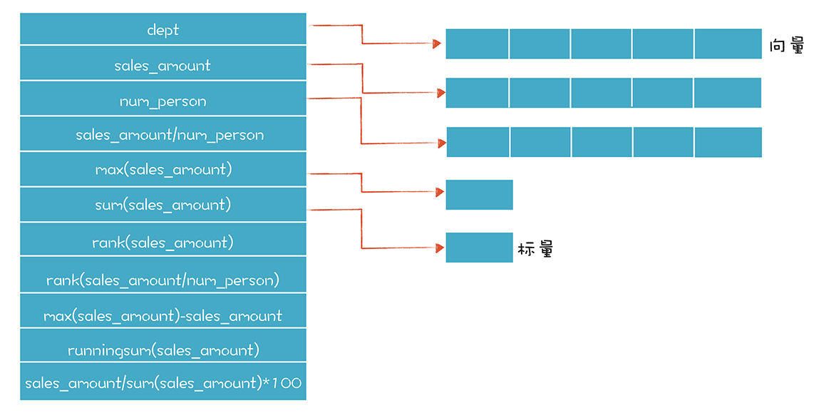
在报表数据计算过程中，我们还做了一个优化。公式计算的中间结果会被存起来，如果下一个公式刚好用到这个数据，可以复用。比如，在计算rank(sales_amount/num_person)这个公式的时候，它会查一下括号中的sales_amount/num_person这个子公式的值是不是以前已经计算过，如果计算过，就复用，否则，就计算一下，并且把这个中间结果也存起来。
我们把这个报表再复杂化一点，形成下面一个报表模板。这个报表模板用到了好几个函数，包括排序、汇总值、累计汇总值和最大值，并通过公式定义出一些相对复杂的计算字段，包括最高销售额、销售额的差距、销售额排序、人均销售额排序、销售额累计汇总、部门销售额在总销售额中的占比，等等。
public static ReportTemplate sampleReport2(){
ReportTemplate template = new ReportTemplate();
template.columnHeaders.add("部门");
template.columnHeaders.add("人数");
template.columnHeaders.add("销售额");
template.columnHeaders.add("最高额");
template.columnHeaders.add("差距");
template.columnHeaders.add("排序");
template.columnHeaders.add("人均");
template.columnHeaders.add("人均排序");
template.columnHeaders.add("累计汇总");
template.columnHeaders.add("占比%");
template.fields.add("{=dept}");
template.fields.add("{=num_person}");
template.fields.add("{=sales_amount}");
template.fields.add("{=max(sales_amount)}");
template.fields.add("{=max(sales_amount)-sales_amount}");
template.fields.add("{=rank(sales_amount)}");
template.fields.add("{=sales_amount/num_person}");
template.fields.add("{=rank(sales_amount/num_person)}");
template.fields.add("{=runningsum(sales_amount)}");
template.fields.add("{=sales_amount/sum(sales_amount)*100}");
return template;
}
最后输出的报表截屏如下，怎么样，现在看起来功能还是挺强的吧！
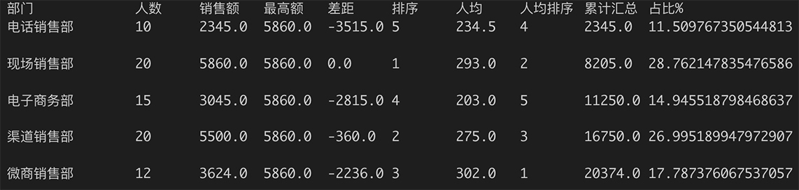
当然了，这个程序只是拿很短的时间写的一个Demo，如果要变成一个成熟的产品，还要在很多地方做工作。比如：
- 可以把字段名称用中文显示，这样更便于非技术人员使用；
- 除了支持行列报表，还要支持交叉表，用于统计分析；
- 支持多维数据计算。
- ……
在报表工具中，编译技术除了用来做字段的计算，还可以用于其他功能，比如条件格式。我们可以在人均销售额低于某个数值时，给这行显示成红色，其中的判断条件，也是一个公式。
甚至你还可以为报表工具添加自定义公式功能。我们给用户提供脚本功能，用户可以自己做一个函数，实现某个领域的一个专业功能。我十分建议你在这个示例程序的基础上进一步加工，看看能做否做出一些让自己惊喜的功能。
课程小结
本节课我们做了一个示例性的报表工具。你能在这个过程中看到，像报表工具这样的软件，如果有编译技术的支持，真的可以做得很灵活、很强大。你完全可以借鉴本节课的思路，去尝试做一下其他需要自定义功能的软件工具或产品。
与此同时，我们能看到编译技术可以跟某个应用领域结合在一起，内置在产品中，同时形成领域的DSL，比如报表的模板文件。这样，我们就相当于赋予了普通用户在某个领域内的编程能力，比如用户只需要编写一个报表模板，就可以生成报表了。了解这些内容之后，我来带你回顾一下，这个应用是怎么运用编译器前端技术的。
词法分析和语法分析都很简单，我们就是简单地用了表达式和函数调用的功能。而语义分析除了需要检查类型以外，还要检查所用到的字段和函数是否合法，这是另一种意义上的引用消解。而且这个例子中的运算的含义是向量运算，同样是加减乘除，每个操作都会处理一组数据，这也是一种语义上的区别。
我希望在学习了这两节课之后，你能对如何在某个应用领域应用编译技术有更直观的了解，甚至有了很多的启发。
一课一思
你在自己的工作领域中，是否发现有哪些需要用户自定义功能的需求？你又是怎么实现这些需求的？编译技术会不会在这些地方帮助到你？欢迎在留言区分享你的发现。
最后，感谢你的阅读，如果这篇文章让你有所收获，欢迎你将它分享给更多的朋友。
本节课的示例代码我放在文末，供你参考。
16 NFA和DFA：如何自己实现一个正则表达式工具？
回顾之前讲的内容，原理篇重在建立直观理解，帮你建立信心，这是第一轮的认知迭代。应用篇帮你涉足应用领域，在解决领域问题时发挥编译技术的威力，积累运用编译技术的一手经验，也启发你用编译技术去解决更多的领域问题，这是第二轮的认知迭代。而为时三节课的算法篇将你是第三轮的认知迭代。
在第三轮的认知迭代中，我会带你掌握前端技术中的核心算法。而本节课，我就借“怎样实现正则表达式工具？”这个问题，探讨第一组算法：与正则表达式处理有关的算法。
在词法分析阶段，我们可以手工构造有限自动机（FSA，或FSM）实现词法解析，过程比较简单。现在我们不再手工构造词法分析器，而是直接用正则表达式解析词法。
你会发现，我们只要写一些规则，就能基于这些规则分析和处理文本。这种能够理解正则表达式的功能，除了能生成词法分析器，还有很多用途。比如Linux的三个超级命令，又称三剑客（grep、awk和sed），都是因为能够直接支持正则表达式，功能才变得强大的。
接下来，我就带你完成编写正则表达式工具的任务，与此同时，你就能用正则文法生成词法分析器了：
首先，把正则表达式翻译成非确定的有限自动机（Nondeterministic Finite Automaton，NFA）。- 其次，基于NFA处理字符串，看看它有什么特点。- 然后，把非确定的有限自动机转换成确定的有限自动机（Deterministic Finite Automaton，DFA）- 最后，运行DFA，看看它有什么特点。
强调一下，不要被非确定的有限自动机、确定的有限自动机这些概念吓倒，我肯定让你学明白。
认识DFA和NFA
在讲词法分析时，我提到有限自动机（FSA）有有限个状态。识别Token的过程，就是FSA状态迁移的过程。其中，FSA分为确定的有限自动机（DFA）和非确定的有限自动机（NFA）。
DFA的特点是，在任何一个状态，我们基于输入的字符串，都能做一个确定的转换，比如：

NFA的特点是，它存在某些状态，针对某些输入，不能做一个确定的转换，这又细分成两种情况：
- 对于一个输入，它有两个状态可以转换。
- 存在ε转换。也就是没有任何输入的情况下，也可以从一个状态迁移到另一个状态。
比如，“a[a-zA-Z0-9]*bc”这个正则表达式对字符串的要求是以a开头，以bc结尾，a和bc之间可以有任意多个字母或数字。在图中状态1的节点输入b时，这个状态是有两条路径可以选择的，所以这个有限自动机是一个NFA。

这个NFA还有引入ε转换的画法，它们是等价的。实际上，第二个NFA可以用我们今天讲的算法，通过正则表达式自动生成出来。

需要注意的是，无论是NFA还是DFA，都等价于正则表达式。也就是，所有的正则表达式都能转换成NFA或DFA，所有的NFA或DFA，也都能转换成正则表达式。
理解了NFA和DFA之后，来看看我们如何从正则表达式生成NFA。
从正则表达式生成NFA
我们需要把它分为两个子任务：
第一个子任务，是把正则表达式解析成一个内部的数据结构，便于后续的程序使用。因为正则表达式也是个字符串，所以要先做一个小的编译器，去理解代表正则表达式的字符串。我们可以偷个懒，直接针对示例的正则表达式生成相应的数据结构，不需要做出这个编译器。
用来测试的正则表达式可以是int关键字、标识符，或者数字字面量：
int | [a-zA-Z][a-zA-Z0-9]* | [0-9]+
我用下面这段代码创建了一个树状的数据结构，来代表用来测试的正则表达式：
private static GrammarNode sampleGrammar1() {
GrammarNode node = new GrammarNode("regex1",GrammarNodeType.Or);
//int关键字
GrammarNode intNode = node.createChild(GrammarNodeType.And);
intNode.createChild(new CharSet('i'));
intNode.createChild(new CharSet('n'));
intNode.createChild(new CharSet('t'));
//标识符
GrammarNode idNode = node.createChild(GrammarNodeType.And);
GrammarNode firstLetter = idNode.createChild(CharSet.letter);
GrammarNode letterOrDigit = idNode.createChild(CharSet.letterOrDigit);
letterOrDigit.setRepeatTimes(0, -1);
//数字字面量
GrammarNode literalNode = node.createChild(CharSet.digit);
literalNode.setRepeatTimes(1, -1);
return node;
}
打印输出的结果如下：
RegExpression
Or
Union
i
n
t
Union
[a-z]|[A-Z]
[0-9]|[a-z]|[A-Z]*
[0-9]+
画成图会更直观一些：
测试数据生成之后，第二个子任务就是把表示正则表达式的数据结构，转换成一个NFA。这个过程比较简单，因为针对正则表达式中的每一个结构，我们都可以按照一个固定的规则做转换。
- 识别ε的NFA：
不接受任何输入，也能从一个状态迁移到另一个状态，状态图的边上标注ε。

- 识别i的NFA：
当接受字符i的时候，引发一个转换，状态图的边上标注i。
- 转换“s|t”这样的正则表达式：
它的意思是或者s，或者t，二者选一。s和t本身是两个子表达式，我们可以增加两个新的状态：开始状态和接受状态（最终状态）也就是图中带双线的状态，它意味着被检验的字符串此时是符合正则表达式的。然后用ε转换分别连接代表s和t的子图。它的含义也比较直观，要么走上面这条路径，那就是s，要么走下面这条路径，那就是t。
- 转换“st”这样的正则表达式：
s之后接着出现t，转换规则是把s的开始状态变成st整体的开始状态，把t的结束状态变成st整体的结束状态，并且把s的结束状态和t的开始状态合二为一。这样就把两个子图接了起来，走完s接着走t。

- 对于“?”“*”和“+”这样的操作：
意思是可以重复0次、0到多次、1到多次，转换时要增加额外的状态和边。
以“s*”为例，做下面的转换：
你能看出，它可以从i直接到f，也就是对s匹配零次，也可以在s的起止节点上循环多次。
- “s+”：
没有办法跳过s，s至少经过一次。
按照这些规则，我们可以编写程序进行转换。你可以参考示例代码Regex.java中的regexToNFA方法。转换完毕以后，将生成的NFA打印输出，列出了所有的状态，以及每个状态到其他状态的转换，比如“0 ε -> 2”的意思是从状态0通过ε转换，到达状态2 ：
NFA states:
0 ε -> 2
ε -> 8
ε -> 14
2 i -> 3
3 n -> 5
5 t -> 7
7 ε -> 1
1 (end)
acceptable
8 [a-z]|[A-Z] -> 9
9 ε -> 10
ε -> 13
10 [0-9]|[a-z]|[A-Z] -> 11
11 ε -> 10
ε -> 13
13 ε -> 1
14 [0-9] -> 15
15 ε -> 14
ε -> 1
我用图片直观地展示了输出结果，图中分为上中下三条路径，你能清晰地看出解析int关键字、标识符和数字字面量的过程：

生成NFA之后，如何利用它识别某个字符串是否符合这个NFA代表的正则表达式呢？
以上图为例，当我们解析intA这个字符串时，首先选择最上面的路径去匹配，匹配完int这三个字符以后，来到状态7，若后面没有其他字符，就可以到达接受状态1，返回匹配成功的信息。可实际上，int后面是有A的，所以第一条路径匹配失败。
失败之后不能直接返回“匹配失败”的结果，因为还有其他路径，所以我们要回溯到状态0，去尝试第二条路径，在第二条路径中，尝试成功了。
运行Regex.java中的matchWithNFA()方法，你可以用NFA来做正则表达式的匹配：
/**
* 用NFA来匹配字符串
* @param state 当前所在的状态
* @param chars 要匹配的字符串，用数组表示
* @param index1 当前匹配字符开始的位置。
* @return 匹配后，新index的位置。指向匹配成功的字符的下一个字符。
*/
private static int matchWithNFA(State state, char[] chars, int index1){
System.out.println("trying state : " + state.name + ", index =" + index1);
int index2 = index1;
for (Transition transition : state.transitions()){
State nextState = state.getState(transition);
//epsilon转换
if (transition.isEpsilon()){
index2 = matchWithNFA(nextState, chars, index1);
if (index2 == chars.length){
break;
}
}
//消化掉一个字符，指针前移
else if (transition.match(chars[index1])){
index2 ++; //消耗掉一个字符
if (index2 < chars.length) {
index2 = matchWithNFA(nextState, chars, index1 + 1);
}
//如果已经扫描完所有字符
//检查当前状态是否是接受状态，或者可以通过epsilon到达接受状态
//如果状态机还没有到达接受状态，本次匹配失败
else {
if (acceptable(nextState)) {
break;
}
else{
index2 = -1;
}
}
}
}
return index2;
}
其中，在匹配“intA”时，你会看到它的回溯过程：
NFA matching: 'intA'
trying state : 0, index =0
trying state : 2, index =0 //先走第一条路径，即int关键字这个路径
trying state : 3, index =1
trying state : 5, index =2
trying state : 7, index =3
trying state : 1, index =3 //到了末尾了，发现还有字符'A'没有匹配上
trying state : 8, index =0 //回溯，尝试第二条路径，即标识符
trying state : 9, index =1
trying state : 10, index =1 //在10和11这里循环多次
trying state : 11, index =2
trying state : 10, index =2
trying state : 11, index =3
trying state : 10, index =3
true
从中可以看到用NFA算法的特点：因为存在多条可能的路径，所以需要试探和回溯，在比较极端的情况下，回溯次数会非常多，性能会变得非常慢。特别是当处理类似s*这样的语句时，因为s可以重复0到无穷次，所以在匹配字符串时，可能需要尝试很多次。
注意，在我们生成的NFA中，如果一个状态有两条路径到其他状态，算法会依据一定的顺序来尝试不同的路径。
9和11两个状态都有两条向外走的线，其中红色的线是更优先的路径，也就是尝试让*号匹配尽量多的字符。这种算法策略叫做“贪婪（greedy）”策略。
在有的情况下，我们会希望让算法采用非贪婪策略，或者叫“忽略优先”策略，以便让效率更高。有的正则表达式工具会支持多加一个?，比如??、*?、+?，来表示非贪婪策略。
NFA的运行可能导致大量的回溯，所以能否将NFA转换成DFA，让字符串的匹配过程更简单呢？如果能的话，那整个过程都可以自动化，从正则表达式到NFA，再从NFA到DFA。
把NFA转换成DFA
的确有这样的算法，那就是子集构造法，它的思路如下。
首先NFA有一个初始状态（从状态0通过ε转换可以到达的所有状态，也就是说，在不接受任何输入的情况下，从状态0也可以到达的状态）。这个状态的集合叫做“状态0的ε闭包”，简单一点儿，我们称之为s0，s0包含0、2、8、14这几个状态。

将字母i给到s0中的每一个状态，看它们能转换成什么状态，再把这些状态通过ε转换就能到达的状态也加入进来，形成一个包含“3、9、10、13、1”5个状态的集合s1。其中3和9是接受了字母i所迁移到的状态，10、13、1是在状态9的ε闭包中。

在s0和s1中间画条迁移线，标注上i，意思是s0接收到i的情况下，转换到s1：

在这里，我们把s0和s1分别看成一个状态。也就是说，要生成的DFA，它的每个状态，是原来的NFA的某些状态的集合。
在上面的推导过程中，我们有两个主要的计算：
1.ε-closure(s)，即集合s的ε闭包。也就是从集合s中的每个节点，加上从这个节点出发通过ε转换所能到达的所有状态。- 2.move(s, ‘i’)，即从集合s接收一个字符i，所能到达的新状态的集合。- 所以，s1 = ε-closure(move(s0,‘i’))
按照上面的思路继续推导，识别int关键字的识别路径也就推导出来了：
我们把上面这种推导的思路写成算法，参见Regex.java中的NFA2DFA()方法。我写了一段伪代码，方便你阅读：
计算s0，即状态0的ε闭包
把s0压入待处理栈
把s0加入所有状态集的集合S
循环：待处理栈内还有未处理的状态集
循环：针对字母表中的每个字符c
循环：针对栈里的每个状态集合s(i)（未处理的状态集）
计算s(m) = move(s(i), c)（就是从s(i)出发，接收字符c能够
迁移到的新状态的集合）
计算s(m)的ε闭包，叫做s(j)
看看s(j)是不是个新的状态集，如果已经有这个状态集了，把它找出来
否则，把s(j)加入全集S和待处理栈
建立s(i)到s(j)的连线，转换条件是c
运行NFA2DFA()方法，然后打印输出生成的DFA。画成图，你就能很直观地看出迁移的路径了：

从初始状态开始，如果输入是i，那就走int识别这条线，也就是按照19、21、22这条线依次迁移，如果中间发现不符合int模式，就跳转到20，也就是标识符状态。
注意，在上面的DFA中，只要包含接受状态1的，都是DFA的接受状态。进一步区分的话，22是int关键字的接受状态，因为它包含了int关键字原来的接受状态7。同理，17是数字字面量的接受状态，18、19、20、21都是标识符的接受状态。
而且，你会发现，算法生成的DFA跟手工构造DFA是很接近的！我们在第二讲手工构造了DFA识别int关键字和标识符，比本节课少识别一个数字字面量：

不过，光看对int关键字和标识符的识别，我们算法生成的DFA和手工构造的DFA，非常相似！手工构造的相当于把18和20两个状态合并了，所以，这个算法是非常有效的！你可以运行一下示例程序Regex.java中的matchWithDFA()的方法，看看效果：
private static boolean matchWithDFA(DFAState state, char[] chars, int index){
System.out.println("trying DFAState : " + state.name + ", index =" + index);
//根据字符，找到下一个状态
DFAState nextState = null;
for (Transition transition : state.transitions()){
if (transition.match(chars[index])){
nextState = (DFAState)state.getState(transition);
break;
}
}
if (nextState != null){
//继续匹配字符串
if (index < chars.length-1){
return matchWithDFA(nextState,chars, index + 1);
}
else{
//字符串已经匹配完毕
//看看是否到达了接受状态
if(state.isAcceptable()){
return true;
}
else{
return false;
}
}
}
else{
return false;
}
}
运行时会打印输出匹配过程，而执行过程中不产生任何回溯。
现在，我们可以自动生成DFA了，可以根据DFA做更高效的计算。不过，有利就有弊，DFA也存在一些缺点。比如，DFA可能有很多个状态。
假设原来NFA的状态有n个，那么把它们组合成不同的集合，可能的集合总数是2的n次方个。针对我们示例的NFA，它有13个状态，所以最坏的情况下，形成的DFA可能有2的13次方，也就是8192个状态，会占据更多的内存空间。而且生成这个DFA本身也需要消耗一定的计算时间。
当然了，这种最坏的状态很少发生，我们示例的NFA生成DFA后，只有7个状态。
课程小结
本节课，我带你实现了一个正则表达式工具，或者说根据正则表达式自动做了词法分析，它们的主要原理是相同的。
首先，我们需要解析正则表达式，形成计算机内部的数据结构，然后要把这个正则表达式生成NFA。我们可以基于NFA进行字符串的匹配，或者把NFA转换成DFA，再进行字符串匹配。
NFA和DFA有各自的优缺点：NFA通常状态数量比较少，可以直接用来进行计算，但可能会涉及回溯，从而性能低下；DFA的状态数量可能很大，占用更多的空间，并且生成DFA本身也需要消耗计算资源。所以，我们根据实际需求选择采用NFA还是DFA就可以了。
不过，一般来说，正则表达式工具可以直接基于NFA。而词法分析器（如Lex），则是基于DFA。原因很简单，因为在生成词法分析工具时，只需要计算一次DFA，就可以基于这个DFA做很多次词法分析。
一课一思
本节课我们实现了一个简单的正则表达式工具。在你的日常编程任务中，有哪些需要进行正则处理的需求？用传统的正则表达式工具有没有性能问题？你有没有办法用本节课讲到的原理来优化这些工作？欢迎在留言区分享你的发现。
最后，感谢你的阅读，如果这篇文章让你有所收获，也欢迎你将它分享给更多的朋友。
本节课的示例代码我放在了文末，供你参考。
17 First和Follow集合：用LL算法推演一个实例
在前面的课程中，我讲了递归下降算法。这个算法很常用，但会有回溯的现象，在性能上会有损失。所以我们要把算法升级一下，实现带有预测能力的自顶向下分析算法，避免回溯。而要做到这一点，就需要对自顶向下算法有更全面的了解。
另外，在留言区，有几个同学问到了一些问题，涉及到对一些基本知识点的理解，比如：
- 基于某个语法规则做解析的时候，什么情况下算是成功，什么情况下算是失败？
- 使用深度优先的递归下降算法时，会跟广度优先的思路搞混。
要搞清这些问题，也需要全面了解自顶向下算法。比如，了解Follow集合和$符号的用法，能帮你解决第一个问题；了解广度优先算法能帮你解决第二个问题。
所以，本节课，我先把自顶向下分析的算法体系梳理一下，让你先建立更加清晰的全景图，然后我再深入剖析LL算法的原理，讲清楚First集合与Follow集合这对核心概念，最终让你把自顶向下的算法体系吃透。
自顶向下分析算法概述
自顶向下分析的算法是一大类算法。总体来说，它是从一个非终结符出发，逐步推导出跟被解析的程序相同的Token串。
这个过程可以看做是一张图的搜索过程，这张图非常大，因为针对每一次推导，都可能产生一个新节点。下面这张图只是它的一个小角落。
算法的任务，就是在大图中，找到一条路径，能产生某个句子（Token串）。比如，我们找到了三条橘色的路径，都能产生“2+3*5”这个表达式。
根据搜索的策略，有深度优先（Depth First）和广度优先（Breadth First）两种，这两种策略的推导过程是不同的。
深度优先是沿着一条分支把所有可能性探索完。以“add->mul+add”产生式为例，它会先把mul这个非终结符展开，比如替换成pri，然后再把它的第一个非终结符pri展开。只有把这条分支都向下展开之后，才会回到上一级节点，去展开它的兄弟节点。
递归下降算法就是深度优先的，这也是它不能处理左递归的原因，因为左边的分支永远也不能展开完毕。
而针对“add->add+mul”这个产生式，广度优先会把add和mul这两个都先展开，这样就形成了四条搜索路径，分别是mul+mul、add+mul+mul、add+pri和add+mul*pri。接着，把它们的每个非终结符再一次展开，会形成18条新的搜索路径。
所以，广度优先遍历，需要探索的路径数量会迅速爆炸，成指数级上升。哪怕用下面这个最简单的语法，去匹配“2+3”表达式，都需要尝试20多次，更别提针对更复杂的表达式或者采用更加复杂的语法规则了。
//一个很简单的语法
add -> pri //1
add -> add + pri //2
pri -> Int //3
pri -> (add) //4

这样看来，指数级上升的内存消耗和计算量，使得广度优先根本没有实用价值。虽然上面的算法有优化空间，但无法从根本上降低算法复杂度。当然了，它也有可以使用左递归文法的优点，不过我们不会为了这个优点去忍受算法的性能。
而深度优先算法在内存占用上是线性增长的。考虑到回溯的情况，在最坏的情况下，它的计算量也会指数式增长，但我们可以通过优化，让复杂度降为线性增长。
了解广度优先算法，你的思路会得到拓展，对自顶向下算法的本质有更全面的理解。另外，在写算法时，你也不会一会儿用深度优先，一会儿用广度优先了。
针对深度优先算法的优化方向是减少甚至避免回溯，思路就是给算法加上预测能力。比如，我在解析statement的时候，看到一个if，就知道肯定这是一个条件语句，不用再去尝试其他产生式了。
LL算法就属于这类预测性的算法。第一个L，是Left-to-right，代表从左向右处理程序代码。第二个L，是Leftmost，意思是最左推导。
按照语法规则，一个非终结符展开后，会形成多个子节点，其中包含终结符和非终结符。最左推导是指，从左到右依次推导展开这些非终结符。采用Leftmost的方法，在推导过程中，句子的左边逐步都会被替换成终结符，只有右边的才可能包含非终结符。
以“2+3*5”为例，它的推导顺序从左到右，非终结符逐步替换成了终结符：
下图是上述推导过程建立起来的AST，“1、2、3……”等编号是AST节点创建的顺序：

好了，我们把自顶向下分析算法做了总体概述，并讲清楚了最左推导的含义，现在来看看LL算法到底是怎么回事。
计算和使用First集合
LL算法是带有预测能力的自顶向下算法。在推导的时候，我们希望当存在多个候选的产生式时，瞄一眼下一个（或多个）Token，就知道采用哪个产生式。如果只需要预看一个Token，就是LL(1)算法。
拿statement的语法举例子，它有好几个产生式，分别产生if语句、while语句、switch语句……
statement
: block
| IF parExpression statement (ELSE statement)?
| FOR '(' forControl ')' statement
| WHILE parExpression statement
| DO statement WHILE parExpression ';'
| SWITCH parExpression '{' switchBlockStatementGroup* switchLabel*
| RETURN expression? ';'
| BREAK IDENTIFIER? ';'
| CONTINUE IDENTIFIER? ';'
| SEMI
| statementExpression=expression ';'
| identifierLabel=IDENTIFIER ':' statement
;
如果我看到下一个Token是if，那么后面跟着的肯定是if语句，这样就实现了预测，不需要一个一个产生式去试。
问题来了，if语句的产生式的第一个元素就是一个终结符，这自然很好判断，可如果是一个非终结符，比如表达式语句，那该怎么判断呢？
我们可以为statement的每条分支计算一个集合，集合包含了这条分支所有可能的起始Token。如果每条分支的起始Token是不一样的，也就是这些集合的交集是空集，那么就很容易根据这个集合来判断该选择哪个产生式。我们把这样的集合，就叫做这个产生式的First集合。
First集合的计算很直观，假设我们要计算的产生式是x：
- 如果x以Token开头，那么First(x)包含的元素就是这个Token，比如if语句的First集合就是{IF}。
- 如果x的开头是非终结符a，那么First(x)要包含First(a)的所有成员。比如expressionStatment是以expression开头，因此它的First集合要包含First(expression)的全体成员。
- 如果x的第一个元素a能够产生ε，那么还要再往下看一个元素b，把First(b)的成员也加入到First(x)，以此类推。如果所有元素都可能返回ε，那么First(x)也应该包含ε，意思是x也可能产生ε。比如下面的blockStatements产生式，它的第一个元素是blockStatement*，也就意味着blockStatement的数量可能为0，因此可能产生ε。那么First(blockStatements)除了要包含First(blockStatement)的全部成员，还要包含后面的“；”。
blockStatements
: blockStatement*
;
- 最后，如果x是一个非终结符，它有多个产生式可供选择，那么First(x)应包含所有产生式的First()集合的成员。比如statement的First集合要包含if、while等所有产生式的First集合的成员。并且，如果这些产生式只要有一个可能产生ε，那么x就可能产生ε，因此First(x)就应该包含ε。
在本讲的示例程序里，我们可以用SampleGrammar.expressionGrammar()方法获得一个表达式的语法，把它dump()一下，这其实是消除了左递归的表达式语法：
expression : assign ;
assign : equal | assign1 ;
assign1 : '=' equal assign1 | ε;
equal : rel equal1 ;
equal1 : ('==' | '!=') rel equal1 | ε ;
rel : add rel1 ;
rel1 : ('>=' | '>' | '<=' | '<') add rel1 | ε ;
add : mul add1 ;
add1 : ('+' | '-') mul add1 | ε ;
mul : pri mul1 ;
mul1 : ('*' | '/') pri mul1 | ε ;
pri : ID | INT_LITERAL | LPAREN expression RPAREN ;
我们用GrammarNode类代表语法的节点，形成一张语法图（蓝色节点的下属节点之间是“或”的关系，也就是语法中的竖线）。

基于这个数据结构能计算每个非终结符的First集合，可以参考LLParser类的caclFirstSets()方法。运行示例程序可以打印出表达式语法中各个非终结符的First集合。
在计算时你要注意，因为上下文无关文法是允许递归嵌套的，所以这些GrammarNode节点构成的是一个图，而不是树，不能通过简单的遍历树的方法来计算First集合。比如，pri节点是expression的后代节点，但pri又引用了expression（pri->(expression)）。这样，计算First(expression)需要用到First(pri)，而计算First(pri)又需要依赖First(expression)。
破解这个僵局的方法是用“不动点法”来计算。多次遍历图中的节点，看看每次有没有计算出新的集合成员。比如，第一遍计算的时候，当求First(pri)的时候，它所依赖的First(expression)中的成员可能不全，等下一轮继续计算时，发现有新的集合成员，再加进来就好了，直到所有集合的成员都没有变动为止。
现在我们可以用First集合进行分支判断了，不过还要处理产生式可能为ε的情况，比如“+mul add1 | ε”或“blockStatement*”都会产生ε。
计算和使用Follow集合
对ε的处理分成两种情况。
第一种情况，是产生式中的部分元素会产生ε。比如，在Java语法里，声明一个类成员的时候，可能会用public、private这些来修饰，但也可以省略不写。在语法规则中，这个部分是“accessModifier?”，它就可能产生ε。
memberDeclaration : accessModifier? type identifier ';' ;
accessModifier : 'public' | 'private' ;
type : 'int' | 'long' | 'double' ;
所以，当我们遇到下面这两个语句的时候，都可以判断为类成员的声明：
public int a;
int b;
这时，type能够产生的终结符 ‘int’、‘long’和‘double’也在memberDeclaration的First集合中。这样，我们实际上把accessModifier给穿透了，直接到了下一个非终结符type。所以这类问题依靠First集合仍然能解决。在解析的过程中，如果下一个Token是 ‘int’，我们可以认为accessModifier返回了ε，忽略它，继续解析下一个元素type，因为它的First集合中才会包含 ‘int’。
第二种情况是产生式本身（而不是其组成部分）产生ε。这类问题仅仅依靠First集合是无法解决的，要引入另一个集合：Follow集合。它是所有可能跟在某个非终结符之后的终结符的集合。
以block语句为例，在PlayScript.g4中，大致是这样定义的：
block
: '{' blockStatements '}'
;
blockStatements
: blockStatement*
;
blockStatement
: variableDeclarators ';'
| statement
| functionDeclaration
| classDeclaration
;
也就是说，block是由blockStatements构成的，而blockStatements可以由0到n个blockStatement构成，因此可能产生ε。
接下来，我们来看看解析block时会发生什么。
假设花括号中一个语句也没有，也就是blockStatments实际上产生了ε。那么在解析block时，首先读取了一个Token，即“{”，然后处理blockStatements，我们再预读一个Token，发现是“}”，那这个右花括号是blockStatement的哪个产生式的呢？实际上它不在任何一个产生式的First集合中，下面是进行判断的伪代码：
nextToken = tokens.peek(); //得到'}'
nextToken in First(variableDeclarators) ? //no
nextToken in First(statement) ? //no
nextToken in First(functionDeclaration) ? //no
nextToken in First(classDeclaration) ? //no
我们找不到任何一个可用的产生式。这可怎么办呢？除了可能是blockStatments本身产生了ε之外，还有一个可能性就是出现语法错误了。而要继续往下判断，就需要用到Follow集合。
像blockStatements的Follow集合只有一个元素，就是右花括号“}”。所以，我们只要再检查一下nextToken是不是花括号就行了：
//伪代码
nextToken = tokens.peek(); //得到'}'
nextToken in First(variableDeclarators) ? //no
nextToken in First(statement) ? //no
nextToken in First(functionDeclaration) ? //no
nextToken in First(classDeclaration) ? //no
if (nextToken in Follow(blockStatements)) //检查Follow集合
return Epsilon; //推导出ε
else
error; //语法错误
那么怎么计算非终结符x的Follow集合呢？
- 扫描语法规则，看看x后面都可能跟哪些符号。
- 对于后面跟着的终结符，都加到Follow(x)集合中去。
- 如果后面是非终结符，就把它的First集合加到自己的Follow集合中去。
- 最后，如果后面的非终结符可能产出ε，就再往后找，直到找到程序终结符号。
这个符号通常记做$，意味一个程序的结束。比如在表达式的语法里，expression 后面可能跟这个符号，expression 的所有右侧分支的后代节点也都可能跟这个符号，也就是它们都可能出现在程序的末尾。但另一些非终结符，后面不会跟这个符号，如blockstatements，因为它后面肯定会有“}”。
你可以参考LLParser类的caclFollowSets()方法，这里也要用到不动点法做计算。运行程序可以打印出示例语法的的Follow集合。我把程序打印输出的First和follow集合整理如下（其实打印输出还包含一些中间节点，这里就不展示了）：

在表达式的解析中，我们会综合运用First和Follow集合。比如，对于“add1 -> + mul add1 | ε”，如果预读的下一个Token是+，那就按照第一个产生式处理，因为+在First(“+ mul add1”)集合中。如果预读的Token是>号，那它肯定不在First(add1)中，而我们要看它是否属于Follow(add1)，如果是，那么add1就产生一个ε，否则就报错。
LL算法和文法
现在我们已经建立了对First集合、Follow集合和LL算法计算过程的直觉认知。这样再写出算法的实现，就比较容易了。用LL算法解析语法的时候，我们可以选择两种实现方式。
第一种，还是采用递归下降算法，只不过现在的递归下降算法是没有任何回溯的。无论走到哪一步，我们都能准确地预测出应该采用哪个产生式。
第二种，是采用表驱动的方式。这个时候需要基于我们计算出来的First和Follow集合构造一张预测分析表。根据这个表，查找在遇到什么Token的情况下，应该走哪条路径。
这两种方式是等价的，你可以根据自己的喜好来选择，我用的是第一种。关于算法，我们就说这么多，接下来，我们谈谈如何设计符合LL(k)特别是LL(1)算法的文法。
我们已经知道左递归的文法是要避免的，也知道要如何避免。除此之外，我们要尽量抽取左公因子，这样可以避免First集合产生交集。举例来说，变量声明和函数声明的规则在前半截都差不多，都是类型后面跟着标识符：
statement : variableDeclare | functionDeclare | other;
variableDeclare : type Identifier ('=' expression)? ;
funcationDeclare : type Identifier '(' parameterList ')' block ;
具体例子如下：
int age；
int cacl(int a, int b){
return a + b;
}
这样的语法规则，如果按照LL(1)算法，First(variableDeclare)和First(funcationDeclare)是相同的，没法决定走哪条路径。你就算用LL(2)，也是一样的，要用到LL(3)才行。但对于LL(k) k > 1来说，程序开销有点儿大，因为要计算更多的集合，构造更复杂的预测分析表。
不过这个问题很容易解决，只要把它们的左公因子提出来就可以了：
statement: declarator | other;
declarator : declarePrefix （variableDeclarePostfix
|functionDeclarePostfix) ;
variableDeclarePostfix : ('=' expression)? ;
functionDeclarePostfix : '(' parameterList ')' block ;
这样，解析程序先解析它们的公共部分，即declarePrefix，然后再看后面的差异。这时，它俩的First集合，一个{ = ; }，一个是{ ( }，两者没有交集，能够很容易区分。
课程小结
本节课我们比较全面地梳理了自顶向下算法。语法解析过程可以看做是对图的遍历过程，遍历时可以采取深度优先或广度优先的策略，这里要注意，你可能在做深度优先遍历的时候，误用广度优先的思路。
针对LL算法，我们通过实例分析了First集合和Follow集合的使用场景和计算方式。掌握了这两个核心概念，特别是熟悉它们的使用场景，你会彻底掌握LL算法。
一课一思
处理ε是LL算法中的关键点。在你熟悉的语言中，哪些语法会产生ε，你在做语法解析的时候会怎样处理它们？欢迎在留言区分享你的思考。
最后，感谢你的阅读，如果这篇文章让你有所收获，也欢迎你将它分享给更多的朋友。
本节课的示例代码我放在了文末，供你参考。
18 移进和规约：用LR算法推演一个实例
到目前为止，我们所讨论的语法分析算法，都是自顶向下的。与之相对应的，是自底向上的算法，比如本节课要探讨的LR算法家族。
LR算法是一种自底向上的算法，它能够支持更多的语法，而且没有左递归的问题。第一个字母L，与LL算法的第一个L一样，代表从左向右读入程序。第二个字母R，指的是RightMost（最右推导），也就是在使用产生式的时候，是从右往左依次展开非终结符。例如，对于“add->add+mul”这样一个产生式，是优先把mul展开，然后再是add。在接下来的讲解过程中，你会看到这个过程。
自顶向下的算法，是递归地做模式匹配，从而逐步地构造出AST。那么自底向上的算法是如何构造出AST的呢？答案是用移进-规约的算法。
本节课，我就带你通过移进-规约方法，自底向上地构造AST，完成语法的解析。接下来，我们先通过一个例子看看自底向上语法分析的过程。
通过实例了解自底向上语法分析的过程
我们选择熟悉的语法规则：
add -> mul
add -> add + mul
mul -> pri
mul -> mul * pri
pri -> Int | (add)
然后来解析“2+3*5”这个表达式，AST如下：

我们分步骤看一下解析的具体过程。
第1步，看到第一个Token，是Int，2。我们把它作为AST的第一个节点，同时把它放到一个栈里（就是图中红线左边的部分）。这个栈代表着正在处理的一些AST节点，把Token移到栈里的动作叫做移进（Shift）。

第2步，根据语法规则，Int是从pri推导出来的（pri->Int），那么它的上级AST肯定是pri，所以，我们给它加了一个父节点pri，同时，也把栈里的Int替换成了pri。这个过程是语法推导的逆过程，叫做规约（Reduce）。
Reduce这个词你在学Map-Reduce时可能接触过，它相当于我们口语化的“倒推”。具体来讲，它是从工作区里倒着取出1到n个元素，根据某个产生式，组合出上一级的非终结符，也就是AST的上级节点，然后再放进工作区（也就是竖线的左边）。
这个时候，栈里可能有非终结符，也可能有终结符，它仿佛是我们组装AST的一个工作区。竖线的右边全都是Token（也就是终结符），它们在等待处理。
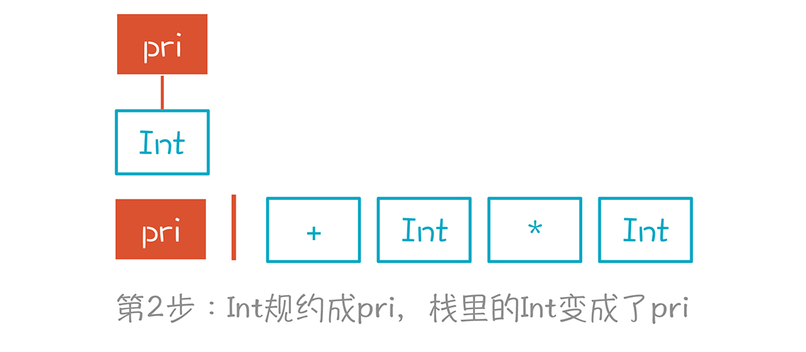
第3步，与第2步一样，因为pri只能是mul推导出来的，产生式是“mul->pri”，所以我们又做了一次规约。

第4步，我们根据“add->mul”产生式，将mul规约成add。至此，我们对第一个Token做了3次规约，已经到头了。这里为什么做规约，而不是停在mul上，移进+号，是有原因的。因为没有一个产生式，是mul后面跟+号，而add后面却可以跟+号。

第5步，移进+号。现在栈里有两个元素了，分别是add和+。

第6步，移进Int，也就是数字3。栈里现在有3个元素。
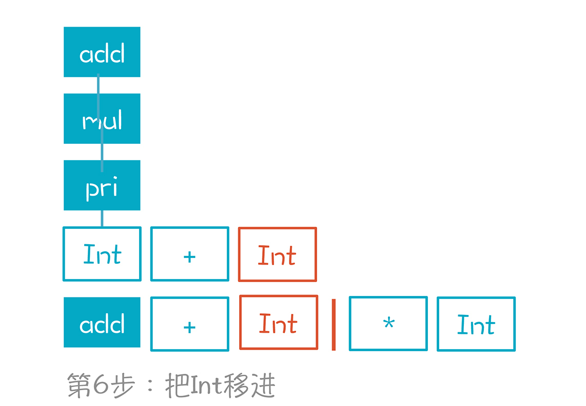
第7到第8步，Int规约到pri，再规约到mul。
到目前为止，我们做规约的方式都比较简单，就是对着栈顶的元素，把它反向推导回去。
第9步，我们面临3个选择，比较难。
第一个选择是继续把mul规约成add，第二个选择是把“add+mul”规约成add。这两个选择都是错误的，因为它们最终无法形成正确的AST。

第三个选择，也就是按照“mul->mul*pri”，继续移进 *号 ，而不是做规约。只有这样，才能形成正确的AST，就像图中的虚线。

第10步，移进Int，也就是数字5。

第11步，Int规约成pri。

第12步，mul*pri规约成mul。
注意，这里也有两个选择，比如把pri继续规约成mul。但它显然也是错误的选择。

第13步，add+mul规约成add。

至此，我们就构建完成了一棵正确的AST，并且，栈里也只剩下了一个元素，就是根节点。
整个语法解析过程，实质是反向最右推导（Reverse RightMost Derivation）。什么意思呢？如果把AST节点根据创建顺序编号，就是下面这张图呈现的样子，根节点编号最大是13：
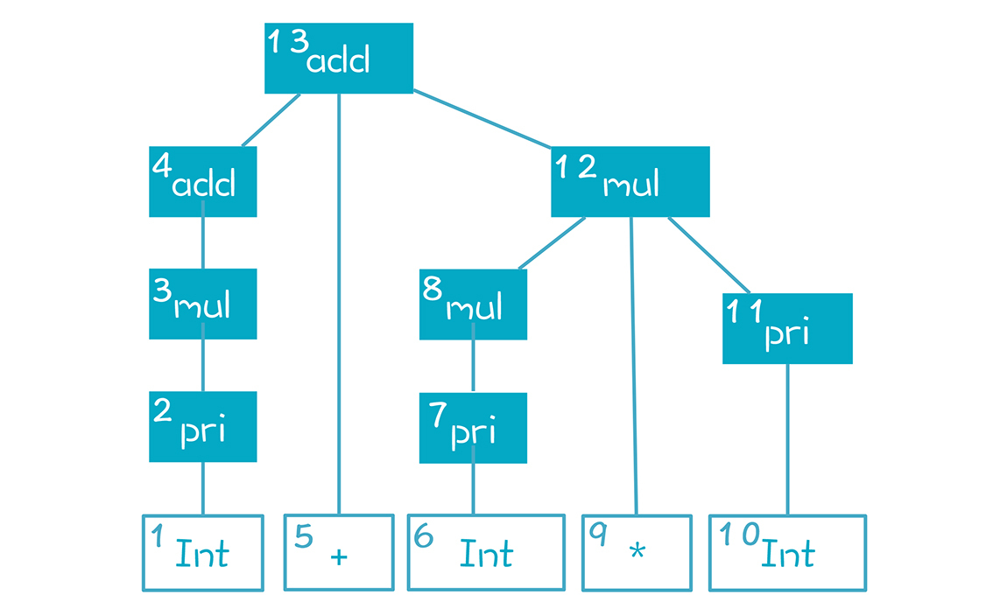
但这是规约的过程，如果是从根节点开始的推导过程，顺序恰好是反过来的，先是13号，再是右子节点12号，再是12号的右子节点11号，以此类推。我们把这个最右推导过程写在下面：

在语法解析的时候，我们是从底下反推回去，所以叫做反向的最右推导过程。从这个意义上讲，LR算法中的R，带有反向（Reverse）和最右（Reightmost）这两层含义。
在最右推导过程中，我加了下划线的部分，叫做一个句柄（Handle）。句柄是一个产生式的右边部分，以及它在一个右句型（最右推导可以得到的句型）中的位置。以最底下一行为例，这个句柄“Int”是产生式“pri->Int”的右边部分，它的位置是句型“Int + Int * Int”的第一个位置。
简单来说，句柄，就是产生式是在这个位置上做推导的，如果需要做反向推导的话，也是从这个位置去做规约。
针对这个简单的例子，我们可以用肉眼进行判断，找到正确的句柄，做出正确的选择。不过，要把这种判断过程变成严密的算法，做到在每一步都采取正确的行动，知道该做移进还是规约，做规约的话，按照哪个产生式，这就是LR算法要解决的核心问题了。
那么，如何找到正确的句柄呢？
找到正确的句柄
我们知道，最右推导是从最开始的产生式出发，经过多步推导（多步推导记做->*），一步步形成当前的局面 （也就是左边栈里有一些非终结符和终结符，右边还可以预看1到k个Token）。
add ->* 栈 | Token
我们要像侦探一样，根据手头掌握的信息，反向推导出这个多步推导的路径，从而获得正确的句柄。我们依据的是左边栈里的信息，以及右边的Token串。对于LR(0)算法来说，我们只依据左边的栈，就能找到正确的句柄，对于LR(1)算法来说，我们可以从右边预看一个Token。
我们的思路是根据语法规则，复现这条推导路径。以第8步为例，下图是它的推导过程，橙色的路径是唯一能够到达第8步的路径。知道了正向推导的路径，自然知道接下来该做什么，在第8步，我们正确的选择是做移进。
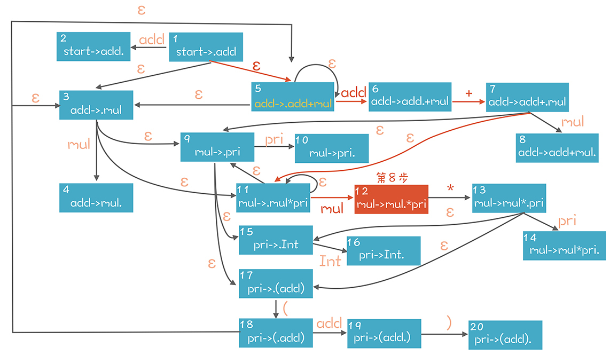
为了展示这个推导过程，我引入了一个新概念：项目（Item）。
Item代表带有“.”符号的产生式。比如“pri->(add)”可以产生4个Item，“.”分别在不同的位置。“.”可以看做是前面示意图中的竖线，左边的看做已经在栈里的部分，“.”右边的看做是期待获得的部分：
pri->.(add)
pri->(.add)
pri->(add.)
pri->(add).
上图其实是一个NFA，利用这个NFA，我们表达了所有可能的推导步骤。每个Item（或者状态），在接收到一个符号的时候，就迁移到下一个状态，比如“add->.add+mul”在接收到一个add的时候，就迁移到“add->add.+mul”，再接收到一个“+”，就迁移到“add->add+.mul”。
在这个状态图的左上角，我们用一个辅助性的产生式“start->add”，作为整个NFA的唯一入口。从这个入口出发，可以用这个NFA来匹配栈里内容，比如在第8步的时候，栈以及右边下一个Token的状态如下，其中竖线左边是栈的内容：
add + mul | *
在NFA中，我们从start开始遍历，基于栈里的内容，能找到图中橙色的多步推导路径。在这个状态迁移过程中，导致转换的符号分别是“ε、add、+、ε、mul”，忽略其中的ε，就是栈里的内容。
在NFA中，我们查找到的Item是“mul->mul.*pri”。这个时候“.”在Item的中间。因此下一个操作只能是一个Shift操作，也就是把下一个Token，*号，移进到栈里。
如果“.”在Item的最后，则对应一个规约操作，比如在第12步，栈里的内容是：
add + mul | $ //$代表Token串的结尾
这个时候的Item是“add->add+mul.”。对于所有点符号在最后面的Item，我们已经没有办法继续向下迁移了，这个时候需要做一个规约操作，也就是基于“add + mul”规约到add，也就是到“add->.add+mul”这个状态。对于任何的ε转换，其逆向操作也是规约，比如图中从“add->.add+mul”规约到“start->.add”。
但做规约操作之前，我们仍然需要检查后面跟着的Token，是不是在Follow(add)中。对于add来说，它的Follow集合包括{$ + ）}。如果是这些Token，那就做规约。否则，就报编译错误。
所以，现在清楚了，我们能通过这个有限自动机，跟踪计算出正确的推导过程。
当然了，在16讲里，我提到每个NFA都可以转换成一个DFA。所以，你可以直接在上面的NFA里去匹配，也可以把NFA转成DFA，避免NFA的回溯现象，让算法效率更高。转换完毕的DFA如下：

在这个DFA中，我同样标注了在第8步时的推导路径。
为了更清晰地理解LR算法的本质，我们基于这个DFA再把语法解析的过程推导一遍。
第1步，移进一个Int，从状态1迁移到9。Item是“pri->Int.”。
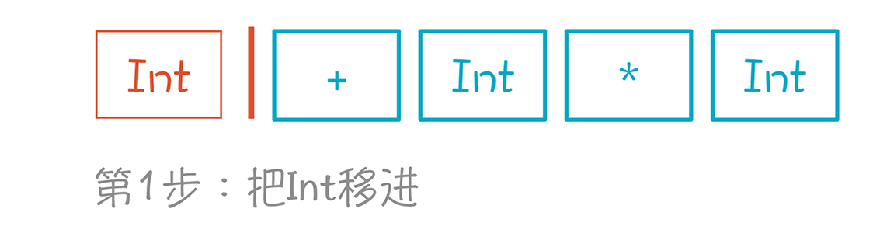
第2步，依据“pri->Int”做规约，从状态9回到状态1。因为现在栈里有个pri元素，所以又迁移进了状态8。

第3步，依据“mul->pri”做规约，从状态8回到状态1，再根据栈里的mul元素进入状态7。注意，在状态7的时候，下一步的走向有两个可能的方向，分别是“add->mul.”和“mul->mul.*pri”这两个Item代表的方向。
基于“add->mul.”会做规约，而基于“mul->mul.*pri”会做移进，这就需要看看后面的Token了。如果后面的Token是 *号，那其实要选第二个方向。但现在后面是+号，所以意味着这里只能做规约。

第4步，依据“add->mul”做规约，从状态7回到状态1，再依据add元素进入状态2。

第5步，移进+号。这对应状态图上的两次迁移，首先根据栈里的第一个元素add，从1迁移到2。然后再根据“+”，从2到3。Item的变化是：
状态1：start->.add- 状态1：add->.add+mul- 状态2：add->add.+mul- 状态3：add->add+.mul
你看，通过移进这个加号，我们实际上知道了这个表达式顶部必然有一个“add+mul”的结构。

第6到第8步，移进Int，并一直规约到mul。状态变化是先从状态3到状态9，然后回到状态3，再进到状态4。


第9步，移进一个*。根据栈里的元素，迁移路径是1->2->3->4->5。

第10步，移进Int，进入状态9。
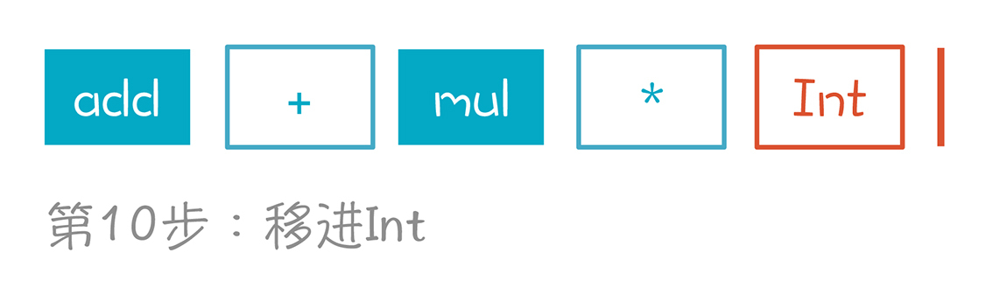
第11步，根据“pri->Int”规约到pri，先退回到状态5，接着根据pri进入状态6。
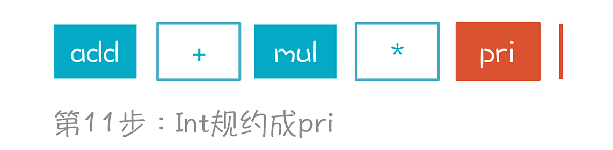
第12步，根据“mul->mul*pri”规约到mul，从而退回到状态4。
第13步，根据“add->add+mul”规约到add，从而退回到状态2。

从状态2再根据“start->add”再规约一步，就变成了start，回到状态1，解析完成。
现在我们已经对整个算法的整个执行过程建立了直觉认知。如果想深入掌握LR算法，我建议你把这种推导过程多做几遍，自然会了然于胸。建立了直觉认知以后，接下来，我们再把LR算法的类型和实现细节讨论一下。
LR解析器的类型和实现
LR算法根据能力的强弱和实现的复杂程度，可以分成多个级别，分别是LR(0)、SLR(k)（即简单LR）、LALR(k)（Look ahead LR）和LR(k)，其中k表示要在Token队列里预读k个Token。

我来讲解一下这四种类型算法的特点，便于你选择和使用。
LR(0)不需要预看右边的Token，仅仅根据左边的栈就能准确进行反向推导。比如，前面DFA中的状态8只有一个Item：“mul->pri.”。如果处在这个状态，那接下来操作是规约。假设存在另一个状态，它也只有一个Item，点符号不在末尾，比如“mul->mul.*pri”，那接下来的操作就是移进，把下一个输入放到栈里。
但实际使用的语法规则很少有这么简单的。所以LR(0)的表达能力太弱，能处理的语法规则有限，不太有实用价值。就像在前面的例子中，如果我们不往下预读一个Token，仅仅利用左边工作区的信息，是找不到正确的句柄的。
比如，在状态7中，我们可以做两个操作：
- 对于第一个Item，“add->mul.”，需要做一个规约操作。
- 对于第二个Item，“mul->mul.*pri”，实际上需要做一个移进操作。
这里发生的冲突，就叫做“移进/规约”冲突（Shift/Reduce Conflict）。意思是，又可以做移进，又可以做规约，到底做哪个？对于状态7来说，到底做哪个操作，实际上取决于右边的Token。
SLR（Simple LR）是在LR(0)的基础上做了增强。对于状态7的这种情况，我们要加一个判断条件：右边下一个输入的Token，是不是在add的Follow集合中。因为只有这样，做规约才有意义。
在例子中，add的Follow集合是{+ ) $}。如果不在这个范围内，那么做规约肯定是不合法的。因为Follow集合的意思，就是哪些Token可以出现在某个非终结符后面。所以，如果在状态7中，下一个Token是*，它不在add的Follow集合中，那么我们就只剩了一个可行的选择，就是移进。这样就不存在两个选择，也不存在冲突。
实际上，就我们本讲所用的示例语法而言，SLR就足够了，但是对于另一些更复杂的语法，采用SLR仍然会产生冲突，比如：
start -> exp
exp -> lvalue = rvalue
exp -> rvalue
lvalue -> Id
lvalue -> *rvalue
rvalue -> lvalue
这个语法说的是关于左值和右值的情况，我们曾在语义分析的时候说过。在这个语法里，右值只能出现在赋值符号右边。
在状态2，如果下一个输入是“=”，那么做移进和规约都是可以的。因为“=”在rvalue的Follow集合中。

怎么来处理这种冲突呢？仅仅根据Follow集合来判断是否Reduce，不太严谨。因为在上图状态2的情况下，即使后面跟着的是“=”，我们仍然不能做规约。因为你一规约，就成了一个右值，但它在等号的左边，显然是跟我们的语法定义冲突的。
办法是Follow集合拆了，把它的每个成员都变成Item的一部分。这样我们就能做更细致的判断。如下图所示，这样细化以后，我们发现在状态2中，只有下一个输入是“$”的时候，才能做规约。这就是LR(1)算法的原理，它更加强大。

但LR(1)算法也有一个缺点，就是DFA可能会很大。在语法分析阶段，DFA的大小会随着语法规则的数量呈指数级上升，一个典型的语言的DFA状态可能达到上千个，这会使语法分析的性能很差，从而也丧失了实用性。
LALR(k)是基于这个缺点做的改进。它用了一些技巧，能让状态数量变得比较少，但处理能力没有太大的损失。YACC和Bison这两个工具，就是基于LALR(1)算法的。
课程小结
今天，我们讲了自底向上的LR算法的原理，包括移进-规约，如何寻找正确的句柄，如果基于NFA和DFA决定如何做移进和规约。
LR算法是公认的比较难学的一个算法。好在我们已经在前两讲给它做了技术上的铺垫了，包括NFA和DFA，First和Follow集合。这节课我们重点在于建立直观理解，特别是如何依据栈里的信息做正确的反推。这个直觉认知很重要，建立这个直觉的最好办法，就是像本节课一样，根据实例来画图、推导。这样，在你真正动手写算法的时候，就胸有成竹了！
到今天为止，我们已经把前端技术中的关键算法都讲完了。不过我还是想强调一下，如果想真正掌握这些算法，必须动手实现一下才行，勤动手才是王道。
一课一思
在讲自顶向下的算法时，我提到，递归思维是重要的计算机科学思维方式。而自底向上的方法，也是另一种重要的思维方式。那么，请结合你的经验，思考一下在你的领域内，是否有一些问题，用自底向上的方法能更好地解决。LR算法的移进-规约思想，能否在解决其他自底向上的问题中发挥作用？欢迎在留言区分享你的经验和思考。
最后，感谢你的阅读，如果这篇文章让你有所收获，也欢迎你将它分享给更多的朋友。
本节课的示例代码我放在了文末，供你参考。
19 案例总结与热点问题答疑：对于左递归的语法，为什么我的推导不是左递归的？
目前为止，“编译原理”的前端部分已经讲完了，你学到现在，感受如何呢？
不得不说，订阅这门课程的同学，都是很有追求的。因为编译原理这门课，肯定给你的学习生涯多多少少地带来过“伤害”，你现在有勇气重拾“编译原理”，下决心将它攻克，本身就是一种有追求的表现。
在课程开始之初，很多同学当场立下（入）了Flag（坑），比如：
@andylo25：立下Flag，想写一个解释性语言。- @陈越 ：许诺会跟着学完。- @许。：强调自己因为面试华为来学习编译原理。- ……
还有同学认为自己半路出家，为了长远的发展，一定要补好基本功。要我说，乔布斯还是辍学加半路出家的呢，终生学习是互联网时代的常态：
@一只豪猪 ：半路出家的野路子码农来补课了。- ……
在准备课程的过程中，我努力把晦涩的知识点变得通俗易懂，希望得到你的认可。当我在留言区看到一些留言时，我的内心是欣慰的，也是欣喜的：
@许童童：之前看到词法分析什么的就是一脸蒙，看了老师的文章，醍醐灌顶。- @VVK：老师讲的太好了，十几年没搞懂的概念终于整理明白了。- ……
与此同时，我也在不断优化课程，力求将内容做到深入浅出，比如，在策划算法篇的内容时，我吸取一些同学的建议，尽可能画成可视化的图形，并且让整个算法的推导过程很直观地呈现。
但是我不能回避一个事实，就是即便这些内容你认为很好，但你要想学好编译原理，还是要花费不少精力将这些内容反复地看上几遍。你需要认真跟上课程的思路和进程，用心思考和实践，才会有所得，单看内容不动手尝试是没办法学为所用的。所以，在这里，我想表扬一些有耐心，愿意尝试的同学，比如@曾经瘦过@Unrestrained@周小明@Sam 当然，还有很多同学在一直坚持，我为你们点赞！
而且，我发现，很多同学还有探知和质疑精神，比如，@沉淀的梦想 发现我在示例代码里用的都是左值，也跟我讨论在实现闭包的时候，如何仍然正常访问全局变量。@mcuking 指出JavaScript的ES6版本已经支持块作用域 @李梁|东大 也与我讨论了关于C++ auto变量的类型推导等等。
我知道大部分同学的时间很紧，但我感谢你们的坚持，感谢你们在努力抽时间动手实践，比如@Smallfly 自己动手写规则；@曾经瘦过 再次动手跟着敲代码。
还有很多同学花了很多时间，用自己熟悉的语言，参照课程的示例代码重写了词法分析器、语法分析器，并分享了代码：
@（——_ ——)：写了一晚上，终于用C语言模仿实现了第二节课的内容。- @windpiaoxue：也做了一个C语言实现。- ……
其他有Go语言的（@catplanet）、Swift语言的（@Smallfly@Rockbean@贾献华）、C++语言的（@阿尔伯特@中年男子@蛋黄儿）、TypeScript的（@缺个豆饼吗@好吃的呆梨）、PHP的（@吴军旗）等等，我通常都会编译并运行一下。
@catplanet 甚至提供了一个界面，可以通过浏览器调用自己写的编译程序，运行并显示结果。
@京京beaver 还分享了在Windows环境下如何做Antlr的配置，让其他同学可以更顺畅地运行Antlr。
@knull 建议我在写BNF的时候，用到+号Token要带上引号，避免跟原来BNF表示重复1到多次的+号冲突。
@kaixiao7 提醒我在Windows下，EOF是用Ctl+z输入。
我对你们取得的成果以及建议感到由衷的高兴和感谢，我相信，你们的分享也激励了其他同学克服困难，继续前进！
当然了，你在学习的过程中，还会遇到一些问题，我很感谢提问题的同学。其中一些问题，我认为是比较典型，有通用意义的，所以选了4个典型的问题，再带你详细地探究一下。
问题一：对于左递归的语法，为什么我的推导不是左递归的？
这个问题本身反映了，进行递归下降分析的时候，如何保持清晰的思路，值得讲一讲。
在03讲，我们刚开始接触到语法分析，也刚开始接触递归下降算法。这时，我介绍了左递归的概念，但你可能在实际推导的过程中，觉得不是左递归，比如用下面这个语法，来推导“2+3”这个简单的表达式：
//简化的左递归文法
add->Int
add->add + Int
你可能会拿第一个产生式做推导：
add->2- 成功返回
因为没有采用第二条产生式，所以不会触发递归调用。但这里的问题是，“2+3”是一个加法表达式，2也是一个合法的加法表达式，但仅仅解析出2是不行的，我们必须完整地解析出“2+3”来。
在17讲，我提到，任何自顶向下的算法，都是在一个大的图里找到一条搜索路径的过程。最后的结果，是经过多次推导，生成跟输入的Token串相同的结果，解析完毕以后，所有Token也耗光。

如果只匹配上2，那就证明这条搜索路径是错误的，我们必须尝试另一种可能性，也就是第二个产生式。
要找到正确的搜索路径，在递归下降算法或者LL算法时，我们都是采用“贪婪”策略，这个策略在16讲关于正则表达式时讲过。也就是要匹配尽量多的Token才可以。就算是换成右递归的文法，也不能采用第一个产生式。因为解析完Int以后，接下来的Token是+号，还可以尝试用第二个产生式，那我们就要启动贪婪策略，用第二个，而不是第一个。
//简化的右递归文法
add->Int
add->Int + add
以上是第一种情况。
不过有的同学说：“我运用第二个产生式也能匹配成功，根据‘add->add + int’这个产生式，先拿第一个add去匹配2，再去匹配+号和3不就行了吗？”
这是另一种引起困扰的情况，也是我在17讲必须说一下广度优先算法的一个原因。因为这位同学的推导过程，是典型的广度优先。add非终结符，先广度优先地拆成两条路径：第一条路径匹配不成功；第二条路径进一步进行广度优先的探索，于是成功解析：
但我们在17讲也说过了，广度优先算法的性能很低，在这个简单的例子中还看不出来，但如果是稍微复杂一点儿的语法和表达式，计算量就指数级上升。
问题二：二元表达式的结合性的实现。
@nil：最终通过循环来消除递归带来的二元预算符的结合性问题？能否直接在递归中消除结合性问题？
04讲的这个问题在递归下降算法中是个难点，反映了理论上的算法用于工程实践时，会遇到的具体问题和解决方案，所以也值得探讨。
因为递归下降算法是自顶向下、最左推导的。对于AST来说，父节点总是先于子节点来生成。因此，使用下面这个消除了左递归的加法文法来尝试解析“2+3+4+5”这个表达式：
add -> Int add'
add' -> + Int add' | ε
得到的AST应该是这样的：

这个AST会觉得有点儿怪，毕竟它把加法操作分成了add和add’这两种操作。针对add’这样一个节点，我们可以定义为把Int子节点和add’子节点做加法，但这样就一共要做四次计算，1个add计算，3个add’计算。并且，因为是右递归，所以计算顺序是右结合的。
如果我们想改成左结合，可以尝试改变之前的约定，就是父节点先于子节点生成，把AST强行拧成这个样子：

可以看出，这样强拧的过程，已经违背了add和add’产生式的规则。
同时，用add和add’这两个节点才能表达加法运算，还是跟我们日常的习惯相违背。与之相对的，Antlr的写法，就很符合我们日常习惯。它是根据
add : Int
|<assoc=left> add + add
；
我们文稿中的示例算法，跟这个思路类似，也是不改变加法运算的含义，但会根据结合性改变AST节点的父子结构。这种改变，等价于我们在解析加法表达式时，不是用的最左推导，而是最右推导。
所以，我们可以看出：
单纯的运用递归下降算法或LL算法，我们是无法支持左结合的，一定要做一些特殊的处理。而LR算法就不需要这些特殊处理，仅仅通过文法的设计，就能支持好结合性，这可能是很多人推崇LR算法的原因吧。
另一方面，工程上运用良好的语法解析方法，不需要是纯粹的某一种单一的算法，增加一些辅助手段会让它更有效。比如Antlr的内部实现可以自动选择预读1个或更多个Token。必要的话还会启动回溯机制。这样做的好处，是对语法编写的要求降低，更加照顾程序员的工作效率。
问题三 ：二义性文法为什么也能正常解析？
@windpiaoxue：
stmt -> if expr stmt
| if expr stmt else stmt
| other
我测试了一下，Antlr使用上面这个规则可以正确地处理悬挂else的问题， Antlr在处理这种二义性问题的时候，是依据什么来处理的？
针对07讲中关于二义性文法的问题也有普遍意义，其实原因我在07讲里已经说了。我们实现一个算法的时候，是有确定的顺序来匹配的，所以，即使是二义性文法，在某种算法下也可以正常解析，也就是生成正确的AST。
如果我们采取深度优先的自顶向下的算法，在使用这两个产生式时：
stmt -> if expr stmt
stmt -> if expr stmt else stmt
我们就像问题一中讲加法运算时提到的那样，采用“贪婪”的算法，总是试图匹配更多的Token。所以，只要有else，它就会去匹配else，所以else总是会跟最近的if组成一对。但采用这个文法的时候，如果不是用贪婪策略来解析，就可能会导致if和else错配。
而严格的非二义性文法要求得比较高，它要求是算法无关的，也就是无论采用哪种推导顺序，形成的AST是一样的。 这里的关键点，在于把“文法”和“算法”这两件事区分开，文法是二义的，用某个具体算法却不一定是二义的。
问题四：“语法”和“文法”有什么区别和联系？
@鸠摩智：请问语法和文法有什么区别和联系？
这是一个术语的问题，确实要理清楚，你也可能会有这种疑问。
文法（Grammar），是形式语言（Formal Language）的一个术语。所以也有Formal Grammar这样的说法。这里的文法是定义清晰的规则，比如，我们的词法规则、语法规则和属性规则，都是用形式文法来定义的。
我们的课程里讲解了正则文法(Regular Grammar)、上下文无关文法(Context-free Grammar)等不同的文法规则，用来描述词法和语法。
语法分析中的语法（Syntax），主要是描述词是怎么组成句子的，一个语言的语法规则，通常指的是这个Syntax。
问题是，Grammar这个词，在中文很多应用场景中也叫做语法。这是会引起混淆的地方。我们在使用的时候要小心一点儿就行了。
比如，我做了一个规则文件，里面都是一些词法规则（Lexer Grammar），我会说，这是一个词法规则文件，或者词法文法文件。这个时候，把它说成是一个语法规则文件，就有点儿含义模糊。因为这里面并没有语法规则（Syntax Grammar）。
案例总结
在前端部分，我们伴随着文稿提供了丰富的示例程序，我相信代码是程序员之间沟通的最好手段。
第一批示例程序，是lab/craft目录下的。
通过手工实现简单的词法分析和语法分析，获得第一手的感受，破除对于编译技术的神秘感。你会感觉到，如果要实现公式计算器甚至一个简单脚本，似乎也没那么难。
第二批示例程序，是基于Antlr工具的。
使用这个工具，实现了两个目的：
- 第一，让你借鉴成熟的规则文件，高效实现词法分析和语法分析功能。
- 第二，在不必关注词法分析和语法分析的情况下，我们把更多的精力放在了语言特性设计、语义分析和运行期机制上。针对作用域、函数、闭包、面向对象等特性都提供了示例程序，最终实现出一门看上去挺威风的脚本语言。
第三批示例程序，则是完成了应用篇的两个题目。
一个示范了如何通过解析SQL语句，实现分布式数据库的一个简单特性。另一个演示了如何来实现一个报表系统。通过两个实际案例将技术跟应用领域做了很好的连接，启发你按照类似的思路，去解决自己领域的问题。
第四批示例程序，是在算法篇，针对编译器前端的三组核心算法提供了示例。
这些示例程序能够根据文法规则直接做词法分析和语法分析，不需要为每一组规则单独构造词法分析器和语法分析器，实际上相当于简化版本的Lex（词法分析）、Antlr（LL语法分析）和YACC（LR语法分析）。
我给你的学习设计了多次迭代、循环提升认知的路径，从简单原理、现有工具和最佳实践、领域应用、算法逻辑等多个维度，给你全面的感受。
小结
编译原理的前端技术部分，正式告一个段落。在这个过程中，我强调地是建立直觉，掌握关键知识点，以及跟实践结合，这三个方面是关键。在短短的十多节课中，我们已经覆盖了所有关键的知识点，吃透这部分课程，会对你的实际工作有所裨益。
当然，我也知道，不到两个月的时间，你肯定不可能完全把它完全吃透，不过，你已经在自己的知识体系中种下了一颗高质量种子，它会随着时间的流逝，伴随着你在实际应用中的体会，不断成长，并结出丰硕的果实！
如果你还有其他的问题，欢迎在留言区提问，我会逐一解答。最后，感谢你的阅读，如果这篇文章让你有所收获，也欢迎你将它分享给更多的朋友。
20 高效运行：编译器的后端技术
前18节课，我们主要探讨了编译器的前端技术，它的重点，是让编译器能够读懂程序。无结构的代码文本，经过前端的处理以后，就变成了Token、AST和语义属性、符号表等结构化的信息。基于这些信息，我们可以实现简单的脚本解释器，这也从另一个角度证明了我们的前端处理工作确实理解了程序代码，否则程序不可能正确执行嘛。
实际上，学完前端技术以后，我们已经能做很多事情了，比如让软件有自定义功能，就像我们在15讲中提到的报表系统，这时，不需要涉及编译器后端技术。
但很多情况下，我们需要继续把程序编译成机器能读懂的代码，并高效运行。这时，我们就面临了三个问题：
1.我们必须了解计算机运行一个程序的原理（也就是运行期机制），只有这样，才知道如何生成这样的程序。- 2.要能利用前端生成的AST和属性信息，将其正确翻译成目标代码。- 3.需要对程序做尽可能多的优化，比如让程序执行效率更高，占空间更少等等。
弄清这三个问题，是顺利完成编译器后端工作的关键，本节课，我会让你对程序运行机制、生成代码和优化代码有个直观的了解，然后再在接下来的课程中，将这些问题逐一击破。
弄清程序的运行机制
总的来说，编译器后端要解决的问题是：现在给你一台计算机，你怎么生成一个可以运行的程序，然后还能让这个程序在计算机上正确和高效地运行？
我画了一个模型：
基本上，我们需要面对的是两个硬件：
一个是CPU，它能接受机器指令和数据，并进行计算。它里面有寄存器、高速缓存和运算单元，充分利用寄存器和高速缓存会让系统的性能大大提升。
另一个是内存。我们要在内存里保存编译好的代码和数据，还要设计一套机制，让程序最高效地利用这些内存。
通常情况下，我们的程序要受某个操作系统的管理，所以也要符合操作系统的一些约定。但有时候我们的程序也可能直接跑在硬件上，单片机和很多物联网设备采用这样的结构，甚至一些服务端系统，也可以不跑在操作系统上。
你可以看出，编译器后端技术跟计算机体系结构的关系很密切。我们必须清楚地理解计算机程序是怎么运行的，有了这个基础，才能探讨如何编译生成这样的程序。
所以，我会在下一节课，也就是21讲，将运行期的机制讲清楚，比如内存空间如何划分和组织；程序是如何启动、跳转和退出的；执行过程中指令和数据如何传递到CPU；整个过程中需要如何跟操作系统配合，等等。
也有的时候，我们的面对的机器是虚拟机，Java的运行环境就是一个虚拟机（JVM），那我们需要就了解这个虚拟机的特点，以便生成可以在这个虚拟机上运行的代码，比如Java的字节码。同时，字节码有时仍然需要编译成机器码。
在对运行期机制有了一定的了解之后，我们就有底气来进行下一步了，生成符合运行期机制的代码。
生成代码
编译器后端的最终结果，就是生成目标代码。如果目标是在计算机上直接运行，就像C语言程序那样，那这个目标代码指的是汇编代码。而如果运行目标是Java虚拟机，那这个目标代码就是指JVM的字节码。
基于我们在编译器前端所生成的成果，我们其实可以直接生成汇编代码，在后面的课程中，我会带你做一个这样的尝试。
你可能惧怕汇编代码，觉得它肯定很难，能写汇编的人一定很牛。在我看来，这是一个偏见，因为汇编代码并不难写，为什么呢？
其实汇编没有类型，也没有那么多的语法结构，它要做的通常就是把数据拷贝到寄存器，处理一下，再保存回内存。所以，从汇编语言的特性看，就决定了它不可能复杂到哪儿去。
你如果问问硬件工程师就知道了，因为他们经常拿汇编语言操作寄存器、调用中断，也没多难。但另一方面，正是因为汇编的基础机制太简单，而且不太安全，用它编写程序的效率太低，所以现在直接用汇编写的程序，都是处理很小、很单一的问题，我们不会再像阿波罗登月计划那样，用汇编写整个系统，这个项目的代码最近已经开源了，如果现在用高级语言去做这项工作，会容易得多，还可以像现在的汽车自动驾驶系统一样实现更多的功能。
所以，在22和23讲，我会带你从AST直接翻译成汇编代码，并编译成可执行文件，这样你就会看到这个过程没有你想象的那么困难，你对汇编代码的恐惧感，也会就此消失了。
当然，写汇编跟使用高级语言有很多不同，其中一点就是要关心CPU和内存这样具体的硬件。比如，你需要了解不同的CPU指令集的差别，你还需要知道CPU是64位的还是32位的，有几个寄存器，每个寄存器可以用于什么指令，等等。但这样导致的问题是，每种语言，针对每种不同的硬件，都要生成不同的汇编代码。你想想看，一般我们设计一门语言要支持尽可能多的硬件平台，这样的工作量是不是很庞大？
所以，为了降低后端工作量，提高软件复用度，就需要引入中间代码（Intermediate Representation，IR）的机制，它是独立于具体硬件的一种代码格式。各个语言的前端可以先翻译成IR，然后再从IR翻译成不同硬件架构的汇编代码。如果有n个前端语言，m个后端架构，本来需要做m*n个翻译程序，现在只需要m+n个了。这就大大降低了总体的工作量。
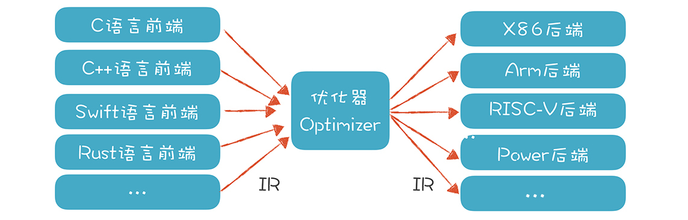
甚至，很多语言主要做好前端就行了，后端可以尽量重用已有的库和工具，这也是现在推出新语言越来越快的原因之一。像Rust就充分利用了LLVM，GCC的各种语言，如C、C++、Object C等，也是充分共享了后端技术。
IR可以有多种格式，在第24讲，我们会介绍三地址代码、静态单赋值码等不同的IR。比如，“x + y * z”翻译成三地址代码是下面的样子，每行代码最多涉及三个地址，其中t1和t2是临时变量：
t1 := y * z
t2 := x + t1
Java语言生成的字节码也是一种IR，我们还会介绍LLVM的IR，并且基于LLVM这个工具来加速我们后端的开发。
其实，IR这个词直译成中文，是“中间表示方式”的意思，不一定非是像汇编代码那样的一条条的指令。所以，AST其实也可以看做一种IR。我们在前端部分实现的脚本语言，就是基于AST这个IR来运行的。
每种IR的目的和用途是不一样的：
- AST主要用于前端的工作。
- Java的字节码，是设计用来在虚拟机上运行的。
- LLVM的中间代码，主要是用于做代码翻译和编译优化的。
- ……
总的来说，我们可以把各种语言翻译成中间代码，再针对每一种目标架构，通过一个程序将中间代码翻译成相应的汇编代码就可以了。然而事情真的这么简单吗？答案是否定的，因为我们还必须对代码进行优化。
代码分析和优化
生成正确的、能够执行的代码比较简单，可这样的代码执行效率很低，因为直接翻译生成的代码往往不够简洁，比如会生成大量的临时变量，指令数量也较多。因为翻译程序首先照顾的是正确性，很难同时兼顾是否足够优化，这是一方面。另一方面，由于高级语言本身的限制和程序员的编程习惯，也会导致代码不够优化，不能充分发挥计算机的性能。所以我们一定要对代码做优化。程序员在比较各种语言的时候，一定会比较它们的性能差异。一个语言的性能太差，就会影响它的使用和普及。
实际上，就算是现在常见的脚本语言，如Python和JavaScript，也做了很多后端优化的工作，包括编译成字节码、支持即时编译等，这些都是为了进一步提高性能。从谷歌支持的开源项目V8开始，JavaScript的性能获得了巨大的提高，这才导致了JavaScript再一次的繁荣，包括支持体验更好的前端应用和基于Node.js的后端应用。
优化工作又分为“独立于机器的优化”和“依赖于机器的优化”两种。
独立于机器的优化，是基于IR进行的。它可以通过对代码的分析，用更加高效的代码代替原来的代码。比如下面这段代码中的foo()函数，里面有多个地方可以优化。甚至，我们连整个对foo()函数的调用，也可以省略，因为foo()的值一定是101。这些优化工作在编译期都可以去做。
int foo(){
int a = 10*10; //这里在编译时可以直接计算出100这个值
int b = 20; //这个变量没有用到，可以在代码中删除
if (a>0){ //因为a一定大于0，所以判断条件和else语句都可以去掉
return a+1; //这里可以在编译器就计算出是101
}
else{
return a-1;
}
}
int a = foo(); //这里可以直接地换成 a=101;
上面的代码，通过优化，可以消除很多冗余的逻辑。这就好比你正在旅行，先从北京飞到了上海，然后又飞到厦门，最后飞回北京。然后你朋友问你现在在哪时，你告诉他在北京。那么他虽然知道你在北京，但并没有意识到你已经在几个城市折腾了一圈，因为他只关心你现在在哪儿，并不关心你的中间过程。 我们在给a赋值的时候，只需要知道这个值是101就行了。完全不需要在运行时去兜一大圈来计算。
计算机代码里有很多这种需要优化的情形。我们在27和28讲会介绍多种优化技术，比如局部优化和全局优化，常数折叠、拷贝传播、删除公共子表达式等，其中数据流分析方法比较重要，会重点介绍。
依赖于机器的优化，则是依赖于硬件的特征。现代的计算机硬件设计了很多特性，以便提供更高的处理能力，比如并行计算能力，多层次内存结构（使用多个级别的高速缓存）等等。编译器要能够充分利用硬件提供的性能，比如 ：
寄存器优化。对于频繁访问的变量，最好放在寄存器中，并且尽量最大限度地利用寄存器，不让其中一些空着，有不少算法是解决这个问题的，教材上一般提到的是染色算法；
充分利用高速缓存。高速缓存的访问速度可以比内存快几十倍上百倍，所以我们要尽量利用高速缓存。比如，某段代码操作的数据，在内存里尽量放在一起，这样CPU读入数据时，会一起都放到高速缓存中，不用一遍一遍地重新到内存取。
并行性。现代计算机都有多个内核，可以并行计算。我们的编译器要尽可能把充分利用多个内核的计算能力。 这在编译技术中是一个专门的领域。
流水线。CPU在处理不同的指令的时候，需要等待的时间周期是不一样的，在等待某些指令做完的过程中其实还可以执行其他指令。就比如在星巴克买咖啡，交了钱就可以去等了，收银员可以先去处理下一个顾客，而不是要等到前一个顾客拿到咖啡才开始处理下一个顾客。
指令选择。有的时候，CPU完成一个功能，有多个指令可供选择。而针对某个特定的需求，采用A指令可能比B指令效率高百倍。比如X86架构的CPU提供SIMD功能，也就是一条指令可以处理多条数据，而不是像传统指令那样一条指令只能处理一条数据。在内存计算领域，SIMD也可以大大提升性能，我们在第30讲的应用篇，会针对SIMD做一个实验。
其他优化。比如可以针对专用的AI芯片和GPU做优化，提供AI计算能力，等等。
可以看出来，做好依赖于机器的优化要对目标机器的体系结构有清晰的理解，如果能做好这些工作，那么开发一些系统级的软件也会更加得心应手。实际上，数据库系统、大数据系统等等，都是要融合编译技术的。
总结起来，在编译器中需要对代码进行的优化非常多。因此，这部分工作也是编译过程中耗时最长、最体现某个编译器的功力的一类工作，所以更值得引起你的重视。
课程小结
本节课，我们对编译器的后端技术做了概述。你了解到要做好后端工作，必须熟悉计算机体系结构和程序的运行时机制；还要从前端生成中间代码，然后基于中间代码生成针对不同平台的目标代码；最后，需要对代码做各种优化工作，包括独立于机器的优化和依赖于机器的优化。
刚接触编译技术的时候，你可能会把视线停留在前端技术上，以为能做Lexer、Parser就是懂编译了。实际上，词法分析和语法分析比较成熟，有成熟的工具来支撑。相对来说，后端的工作量更大，挑战更多，研究的热点也更多。比如，人工智能领域又出现了一些专用的AI芯片和指令集，就需要去适配。
编译器的后端，要把高级语言翻译成计算机能够理解的目标语言。它跟前端相比，关注点是不同的。前端关注的是正确反映了代码含义的静态结构，而后端关注的是让代码良好运行的动态结构。它们之间的差别，从我讲解“作用域”和“生存期”两个概念时就能看出来。作用域是前端的概念，而生存期是后端的概念。
其实在前面的课程中，我们已经涉及了少量的后端技术的概念，比如生存期、栈桢，因为我们要让脚本语言运行起来。但这个运行环境比较简单，脚本的执行也是简单的基于AST，所以性能是比较低的。但在后端部分，我们会实现一门静态编译型的语言，因此会对对运行期机制做更加深入的解读和实现。
如果能把后端技术学好，你对计算机底层运行机制的理解会更上一层楼，也会成为一名底子更加扎实的软件工程师。
一课一思
我们说编译器后端的任务是让程序适配硬件、高效运行。对于你所熟悉的程序语言，它的后端技术有什么特点呢？比如它采用了哪些技术使得性能更高，或者代码尺寸更小，或者能更好地兼容硬件？欢迎在留言区分享你的经验和观点。
最后，感谢你的阅读，如果这篇文章让你有所收获，也欢迎你将它分享给更多的朋友。
21 运行时机制：突破现象看本质，透过语法看运行时
编译器的任务，是要生成能够在计算机上运行的代码，但要生成代码，我们必须对程序的运行环境和运行机制有比较透彻的了解。
你要知道，大型的、复杂一点儿的系统，比如像淘宝一样的电商系统、搜索引擎系统等等，都存在一些技术任务，是需要你深入了解底层机制才能解决的。比如淘宝的基础技术团队就曾经贡献过，Java虚拟机即时编译功能中的一个补丁。
这反映出掌握底层技术能力的重要性，所以，如果你想进阶成为这个层次的工程师，不能只学学上层的语法，而是要把计算机语言从上层的语法到底层的运行机制都了解透彻。
本节课，我会对计算机程序如何运行，做一个解密，话题分成两个部分：
1.了解程序运行的环境，包括CPU、内存和操作系统，探知它们跟程序到底有什么关系。- 2.了解程序运行的过程。比如，一个程序是怎么跑起来的，代码是怎样执行和跳转的，又是如何管理内存的。
首先，我们先来了解一下程序运行的环境。
程序运行的环境
程序运行的过程中，主要是跟两个硬件（CPU和内存）以及一个软件（操作系统）打交道。
本质上，我们的程序只关心CPU和内存这两个硬件。你可能说：“不对啊，计算机还有其他硬件，比如显示器和硬盘啊。”但对我们的程序来说，操作这些硬件，也只是执行某些特定的驱动代码，跟执行其他代码并没有什么差异。
1.关注CPU和内存
CPU的内部有很多组成部分，对于本课程来说，我们重点关注的是寄存器以及高速缓存，它们跟程序的执行机制和优化密切相关。
寄存器是CPU指令在进行计算的时候，临时数据存储的地方。CPU指令一般都会用到寄存器，比如，典型的一个加法计算（c=a+b）的过程是这样的：
指令1（mov）：从内存取a的值放到寄存器中；- 指令2（add）：再把内存中b的值取出来与这个寄存器中的值相加，仍然保存在寄存器中；- 指令3（mov）：最后再把寄存器中的数据写回内存中c的地址。
寄存器的速度也很快，所以能用寄存器就别用内存。尽量充分利用寄存器，是编译器做优化的内容之一。
而高速缓存可以弥补CPU的处理速度和内存访问速度之间的差距。所以，我们的指令在内存读一个数据的时候，它不是老老实实地只读进当前指令所需要的数据，而是把跟这个数据相邻的一组数据都读进高速缓存了。这就相当于外卖小哥送餐的时候，不会为每一单来回跑一趟，而是一次取一批，如果这一批外卖恰好都是同一个写字楼里的，那小哥的送餐效率就会很高。
内存和高速缓存的速度差异差不多是两个数量级，也就是一百倍。比如，高速缓存的读取时间可能是0.5ns，而内存的访问时间可能是50ns。不同硬件的参数可能有差异，但总体来说是几十倍到上百倍的差异。
你写程序时，尽量把某个操作所需的数据都放在内存中的连续区域中，不要零零散散地到处放，这样有利于充分利用高速缓存。这种优化思路，叫做数据的局部性。
这里提一句，在写系统级的程序时，你要对各种IO的时间有基本的概念，比如高速缓存、内存、磁盘、网络的IO大致都是什么数量级的。因为这都影响到系统的整体性能，也影响到你如何做程序优化。如果你需要对程序做更多的优化，还需要了解更多的CPU运行机制，包括流水线机制、并行机制等等，这里就不展开了。
讲完CPU之后，还有内存这个硬件。
程序在运行时，操作系统会给它分配一块虚拟的内存空间，让它在运行期可以使用。我们目前使用的都是64位的机器，你可以用一个64位的长整型来表示内存地址，它能够表示的所有地址，我们叫做寻址空间。
64位机器的寻址空间就有2的64次方那么大，也就是有很多很多个TB（Terabyte），大到你的程序根本用不完。不过，操作系统一般会给予一定的限制，不会给你这么大的寻址空间，比如给到100来个G，这对一般的程序，也足够用了。
在存在操作系统的情况下，程序逻辑上可使用的内存一般大于实际的物理内存。程序在使用内存的时候，操作系统会把程序使用的逻辑地址映射到真实的物理内存地址。有的物理内存区域会映射进多个进程的地址空间。
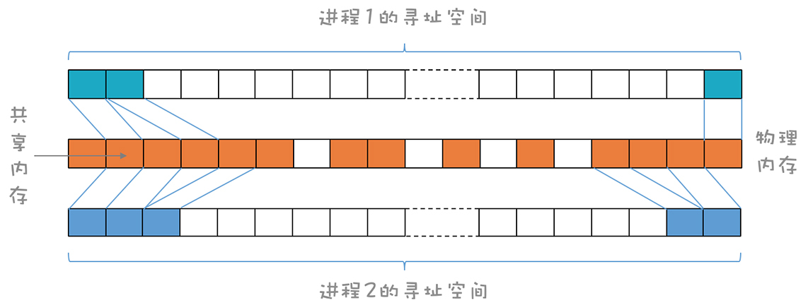
对于不太常用的内存数据，操作系统会写到磁盘上，以便腾出更多可用的物理内存。
当然，也存在没有操作系统的情况，这个时候你的程序所使用的内存就是物理内存，我们必须自己做好内存的管理。
对于这个内存，该怎么用呢？
本质上来说，你想怎么用就怎么用，并没有什么特别的限制。一个编译器的作者，可以决定在哪儿放代码，在哪儿放数据，当然了，别的作者也可能采用其他的策略。实际上，C语言和Java虚拟机对内存的管理和使用策略就是不同的。
尽管如此，大多数语言还是会采用一些通用的内存管理模式。以C语言为例，会把内存划分为代码区、静态数据区、栈和堆。
一般来讲，代码区是在最低的地址区域，然后是静态数据区，然后是堆。而栈传统上是从高地址向低地址延伸，栈的最顶部有一块区域，用来保存环境变量。
代码区（也叫文本段）存放编译完成以后的机器码。这个内存区域是只读的，不会再修改，但也不绝对。现代语言的运行时已经越来越动态化，除了保存机器码，还可以存放中间代码，并且还可以在运行时把中间代码编译成机器码，写入代码区。
静态数据区保存程序中全局的变量和常量。它的地址在编译期就是确定的，在生成的代码里直接使用这个地址就可以访问它们，它们的生存期是从程序启动一直到程序结束。它又可以细分为Data和BSS两个段。Data段中的变量是在编译期就初始化好的，直接从程序装在进内存。BSS段中是那些没有声明初始化值的变量，都会被初始化成0。
堆适合管理生存期较长的一些数据，这些数据在退出作用域以后也不会消失。比如，我们在某个方法里创建了一个对象并返回，并希望代表这个对象的数据在退出函数后仍然可以访问。
而栈适合保存生存期比较短的数据，比如函数和方法里的本地变量。它们在进入某个作用域的时候申请内存，退出这个作用域的时候就可以释放掉。
讲完了CPU和内存之后，我们再来看看跟程序打交道的操作系统。
2.程序和操作系统的关系
程序跟操作系统的关系比较微妙：
一方面我们的程序可以编译成不需要操作系统也能运行，就像一些物联网应用那样，完全跑在裸设备上。
另一方面，有了操作系统的帮助，可以为程序提供便利，比如可以使用超过物理内存的存储空间，操作系统负责进行虚拟内存的管理。
在存在操作系统的情况下，因为很多进程共享计算机资源，所以就要遵循一些约定。这就仿佛办公室是所有同事共享的，那么大家就都要遵守一些约定，如果一个人大声喧哗，就会影响到其他人。
程序需要遵守的约定包括：程序文件的二进制格式约定，这样操作系统才能程序正确地加载进来，并为同一个程序的多个进程共享代码区。在使用寄存器和栈的时候也要遵守一些约定，便于操作系统在不同的进程之间切换的时候、在做系统调用的时候，做好上下文的保护。
所以，我们编译程序的时候，要知道需要遵守哪些约定。因为就算是使用同样的CPU，针对不同的操作系统，编译的结果也是非常不同的。
好了，我们了解了程序运行时的硬件和操作系统环境。接下来，我们看看程序运行时，是怎么跟它们互动的。
程序运行的过程
你天天运行程序，可对于程序运行的细节，真的清楚吗？
1.程序运行的细节
首先，可运行的程序一般是由操作系统加载到内存的，并且定位到代码区里程序的入口开始执行。比如，C语言的main函数的第一行代码。
每次加载一条代码，程序都会顺序执行，碰到跳转语句，才会跳到另一个地址执行。CPU里有一个指令寄存器，里面保存了下一条指令的地址。

假设我们运行这样一段代码编译后形成的程序：
int main(){
int a = 1;
foo(3);
bar();
}
int foo(int c){
int b = 2;
return b+c;
}
int bar(){
return foo(4) + 1;
}
我们首先激活（Activate）main()函数，main()函数又激活foo()函数，然后又激活bar()函数，bar()函数还会激活foo()函数，其中foo()函数被两次以不同的路径激活。

我们把每次调用一个函数的过程，叫做一次活动（Activation）。每个活动都对应一个活动记录（Activation Record），这个活动记录里有这个函数运行所需要的信息，比如参数、返回值、本地变量等。
目前我们用栈来管理内存，所以可以把活动记录等价于栈桢。栈桢是活动记录的实现方式，我们可以自由设计活动记录或栈桢的结构，下图是一个常见的设计：

返回值：一般放在最顶上，这样它的地址是固定的。foo()函数返回以后，它的调用者可以到这里来取到返回值。在实际情况中，我们会优先通过寄存器来传递返回值，比通过内存传递性能更高。
参数：在调用foo函数时，把参数写到这个地址里。同样，我们也可以通过寄存器来传递，而不是内存。
控制链接：就是上一级栈桢的地址。如果用到了上一级作用域中的变量，就可以顺着这个链接找到上一级栈桢，并找到变量的值。
返回地址：foo函数执行完毕以后，继续执行哪条指令。同样，我们可以用寄存器来保存这个信息。
本地变量：foo函数的本地变量b的存储空间。
寄存器信息：我们还经常在栈桢里保存寄存器的数据。如果在foo函数里要使用某个寄存器，可能需要先把它的值保存下来，防止破坏了别的代码保存在这里的数据。这种约定叫做被调用者责任，也就是使用寄存器的人要保护好寄存器里原有的信息。某个函数如果使用了某个寄存器，但它又要调用别的函数，为了防止别的函数把自己放在寄存器中的数据覆盖掉，要自己保存在栈桢中。这种约定叫做调用者责任。
你可以看到，每个栈桢的长度是不一样的。
用到的参数和本地变量多，栈桢就要长一点。但是，栈桢的长度和结构是在编译期就能完全确定的。这样就便于我们计算地址的偏移量，获取栈桢里某个数据。
总的来说，栈桢的设计很自由。但是，你要考虑不同语言编译形成的模块要能够链接在一起，所以还是要遵守一些公共的约定的，否则，你写的函数，别人就没办法调用了。
在08讲，我提到过栈桢，这次我们用了更加贴近具体实现的描述：栈桢就是一块确定的内存，变量就是这块内存里的地址。在下一讲，我会带你动手实现我们的栈桢。
2.从全局角度看整个运行过程
了解了栈桢的实现之后，我们再来看一个更大的场景，从全局的角度看看整个运行过程中都发生了什么。

代码区里存储了一些代码，main函数、bar函数和foo函数各自有一段连续的区域来存储代码，我用了一些汇编指令来表示这些代码（实际运行时这里其实是机器码）。
假设我们执行到foo函数中的一段指令，来计算“b+c”的值，并返回。这里用到了mov、add、jmp这三个指令。mov是把某个值从一个地方拷贝到另一个地方，add是往某个地方加一个值，jmp是改变代码执行的顺序，跳转到另一个地方去执行（汇编命令的细节，我们下节再讲，你现在简单了解一下就行了）。
mov b的地址 寄存器1
add c的地址 寄存器1
mov 寄存器1 foo的返回值地址
jmp 返回地址 //或ret指令
执行完这几个指令以后，foo的返回值位置就写入了6，并跳转到bar函数中执行foo之后的代码。
这时，foo的栈桢就没用了，新的栈顶是bar的栈桢的顶部。理论上讲，操作系统这时可以把foo的栈桢所占的内存收回了。比如，可以映射到另一个程序的寻址空间，让另一个程序使用。但是在这个例子中你会看到，即使返回了bar函数，我们仍要访问栈顶之外的一个内存地址，也就是返回值的地址。
所以，目前的调用约定都规定，程序的栈顶之外，仍然会有一小块内存（比如128K）是可以由程序访问的，比如我们可以拿来存储返回值。这一小段内存操作系统并不会回收。
我们目前只讲了栈，堆的使用也类似，只不过是要手工进行申请和释放，比栈要多一些维护工作。
课程小结
本节课，我带你了解了程序运行的环境和过程，我们的程序主要跟CPU、内存，以及操作系统打交道。你需要了解的重点如下：
CPU上运行程序的指令，运行过程中要用到寄存器、高速缓存来提高指令和数据的存取效率。
内存可以划分成不同的区域保存代码、静态数据，并用栈和堆来存放运行时产生的动态数据。
操作系统会把物理的内存映射成进程的寻址空间，同一份代码会被映射进多个进程的内存空间，操作系统的公共库也会被映射进进程的内存空间，操作系统还会自动维护栈。
程序在运行时顺序执行代码，可以根据跳转指令来跳转；栈被划分成栈桢，栈桢的设计有一定的自由度，但通常也要遵守一些约定；栈桢的大小和结构在编译时就能决定；在运行时，栈桢作为活动记录，不停地被动态创建和释放。
以上这些内容就是一个程序运行时的秘密。你再面对代码时，脑海里就会想象出它是怎样跟CPU、内存和操作系统打交道的了。而且有了这些背景知识，你也可以让编译器生成代码，按照本节课所说的模式运行了！
一课一思
本节课，我概要地介绍了程序运行的环境和运行过程。常见的静态编译型的语言，比如C语言、Go语言，差不多都是这个模式。那么你是否了解你所采用的计算机语言的运行环境和运行过程？跟本文描述的哪些地方相同，哪些地方不同？欢迎在留言区分享你的经验。
最后，感谢你的阅读，如果这篇文章让你有所收获，也欢迎你将它分享给更多的朋友。
22 生成汇编代码（一）：汇编语言其实不难学
敲黑板：课程用的是GNU汇编器，macOS和Linux已内置，本文的汇编语言的写法是GNU汇编器规定的写法。Windows系统可安装MinGW或Linux虚拟机。
对于静态编译型语言，比如C语言和Go语言，编译器后端的任务就是生成汇编代码，然后再由汇编器生成机器码，生成的文件叫目标文件，最后再使用链接器就能生成可执行文件或库文件了。
就算像JavaScript这样的解释执行的语言，也要在运行时利用类似的机制生成机器码，以便调高执行的速度。Java的字节码，在运行时通常也会通过JIT机制编译成机器码。而汇编语言是完成这些工作的基础。
对你来说，掌握汇编语言是十分有益的，因为哪怕掌握一小点儿汇编技能，就能应用到某项工作中，比如，在C语言里嵌入汇编，实现某个特殊功能；或者读懂某些底层类库或驱动程序的代码，因为它可能是用汇编写的。
本节课，我先带你了解一下汇编语言，来个破冰之旅。然后在接下来的课程中再带你基于AST手工生成汇编代码，破除你对汇编代码的恐惧，了解编译期后端生成汇编代码的原理。
以后，当你看到高级语言的代码，以及IR时，就可以想象出来它对应的汇编代码是什么样子，实现从上层到底层认知的贯通。
了解汇编语言
机器语言都是0101的二进制的数据，不适合我们阅读。而汇编语言，简单来说，是可读性更好的机器语言，基本上每条指令都可以直接翻译成一条机器码。
跟你日常使用的高级语言相比，汇编语言的语法特别简单，但它要跟硬件（CPU和内存）打交道，我们来体会一下。
计算机的处理器有很多不同的架构，比如x86-64、ARM、Power等，每种处理器的指令集都不相同，那也就意味着汇编语言不同。我们目前用的电脑，CPU一般是x86-64架构，是64位机。（如不做特别说明，本课程都是以x86-64架构作为例子的）。
说了半天，汇编代码长什么样子呢？我用C语言写的例子来生成一下汇编代码。
#include <stdio.h>
int main(int argc, char* argv[]){
printf("Hello %s!\n", "Richard");
return 0;
}
在macOS中输入下面的命令，其中的-S参数就是告诉编译器把源代码编译成汇编代码，而-O2参数告诉编译器进行2级优化，这样生成的汇编代码会短一些：
clang -S -O2 hello.c -o hello.s
或者：
gcc -S -O2 hello.c -o hello.s
生成的汇编代码是下面的样子：
.section __TEXT,__text,regular,pure_instructions
.build_version macos, 10, 14 sdk_version 10, 14
.globl _main ## -- Begin function main
.p2align 4, 0x90
_main: ## @main
.cfi_startproc
## %bb.0:
pushq %rbp
.cfi_def_cfa_offset 16
.cfi_offset %rbp, -16
movq %rsp, %rbp
.cfi_def_cfa_register %rbp
leaq L_.str(%rip), %rdi
leaq L_.str.1(%rip), %rsi
xorl %eax, %eax
callq _printf
xorl %eax, %eax
popq %rbp
retq
.cfi_endproc
## -- End function
.section __TEXT,__cstring,cstring_literals
L_.str: ## @.str
.asciz "Hello %s!\n"
L_.str.1: ## @.str.1
.asciz "Richard"
.subsections_via_symbols
你如果再打下面的命令，就会把这段汇编代码编译成可执行文件（在macOS或Linux执行as命令，就是调用了GNU的汇编器）：
as hello.s -o hello.o //用汇编器编译成目标文件
gcc hello.o -o hello //链接成可执行文件
./hello //运行程序
以上面的代码为例，来看一下汇编语言的组成元素。这是汇编语言入门的基础，也是重点内容，在阅读时，你不需要死记硬背，而是要灵活掌握，比如CPU的指令特别多，我们记住常用的就行了，不太常用的可以去查手册。
1.汇编语言的组成元素
这段代码里有指令、伪指令、标签和注释四种元素，每个元素单独占一行。
指令（instruction）是直接由CPU进行处理的命令，例如：
pushq %rbp
movq %rsp, %rbp
其中，开头的一个单词是助记符（mnemonic），后面跟着的是操作数（operand），有多个操作数时以逗号分隔。第二行代码的意思是把数据从这里（源）拷贝到那里（目的），这跟“请倒杯咖啡给我”这样的自然语句是一样的，先是动词（倒），然后是动词的作用对象（咖啡），再就是目的地（给我）。
伪指令以“.”开头，末尾没有冒号“：”。
.section __TEXT,__text,regular,pure_instructions
.globl _main
.asciz "Hello %s!\n"
伪指令是是辅助性的，汇编器在生成目标文件时会用到这些信息，但伪指令不是真正的CPU指令，就是写给汇编器的。每种汇编器的伪指令也不同，要查阅相应的手册。
标签以冒号“:”结尾，用于对伪指令生成的数据或指令做标记。例如L_.str: 标签是对一个字符串做了标记。其他代码可以访问标签，例如跳转到这个标签所标记的指令。
L_.str: ## @.str
.asciz "Hello %s!\n"
标签很有用，它可以代表一段代码或者常量的地址（也就是在代码区或静态数据区中的位置）。可一开始，我们没法知道这个地址的具体值，必须生成目标文件后，才能算出来。所以，标签会简化汇编代码的编写。
第四种元素，注释，以“#”号开头，这跟C语言中以//表示注释语句是一样的。
因为指令是汇编代码的主要部分，所以我们再把与指令有关的知识点展开讲解一下。
2.详细了解指令这个元素
在代码中，助记符“movq”“xorl”中的“mov”和“xor”是指令，而“q”和“l”叫做后缀，表示操作数的位数。后缀一共有b, w, l, q四种，分别代表8位、16位、32位和64位。

比如，movq中的q代表操作数是8个字节，也就是64位的。movq就是把8字节从一个地方拷贝到另一个地方，而movl则是拷贝4个字节。
而在指令中使用操作数，可以使用四种格式，它们分别是：立即数、寄存器、直接内存访问和间接内存访问。
立即数以$开头， 比如$40。（下面这行代码是把40这个数字拷贝到%eax寄存器）。
movl $40, %eax
除此之外，我们在指令中最常见到的就是对寄存器的访问，GNU的汇编器规定寄存器一定要以%开头。
直接内存访问：当我们在代码中看到操作数是一个数字时，它其实指的是内存地址。不要误以为它是一个数字，因为数字立即数必须以$开头。另外，汇编代码里的标签，也会被翻译成直接内存访问的地址。比如“callq _printf”中的“_printf”是一个函数入口的地址。汇编器帮我们计算出程序装载在内存时，每个字面量和过程的地址。
间接内存访问：带有括号，比如（%rbp），它是指%rbp寄存器的值所指向的地址。
间接内存访问的完整形式是：
偏移量（基址，索引值，字节数）这样的格式。
其地址是：
基址 + 索引值*字节数 + 偏移量
举例来说：
8(%rbp)，是比%rbp寄存器的值加8。- -8(%rbp)，是比%rbp寄存器的值减8。- （%rbp, %eax, 4）的值，等于%rbp + %eax*4。这个地址格式相当于访问C语言中的数组中的元素，数组元素是32位的整数，其索引值是%eax，而数组的起始位置是%rbp。其中字节数只能取1,2,4,8四个值。
你现在应该对指令的格式有所了解了，接下来，我们再学几个常用的指令：
mov指令
mov 寄存器|内存|立即数, 寄存器|内存
这个指令最常用到，用于在寄存器或内存之间传递数据，或者把立即数加载到内存或寄存器。mov指令的第一个参数是源，可以是寄存器、内存或立即数。第二个参数是目的地，可以是寄存器或内存。
lea指令，lea是“load effective address”的意思，装载有效地址。
lea 源，目的
比如前面例子代码中的leaq指令，是把字符串的地址加载到%rdi寄存器。
leaq L_.str(%rip), %rdi
add指令是做加法运算，它可以采取下面的格式：
add 立即数， 寄存器
add 寄存器， 寄存器
add 内存， 寄存器
add 立即数， 内存
add 寄存器， 内存
比如，典型的c=a+b这样一个算术运算可能是这样的：
movl -4(%rbp), %eax #把%rbp-4的值拷贝到%eax
addl -8(%rbp), %eax #把%rbp-8地址的值加到%eax上
movl %eax, -12(%rbp) #把%eax的值写到内存地址%rbp-12
这三行代码，分别是操作a、b、c三个变量的地址。它们的地址分别比%rbp的值减4、减8、减12，因此a、b、c三个变量每个都是4个字节长，也就是32位，它们是紧挨着存放的，并且是从高地址向低地址延伸的，这是栈的特征。
除了add以外，其他算术运算的指令：

与栈有关的操作：

跳转类：

过程调用：

比较操作：

以上我列举的指令，是你在编写汇编代码时，经常会用到的，比较重要，会满足你编写简单汇编程序的需求，所以你需要重点关注。
x86-64是复杂指令集的处理器，有非常多的指令，差不多有上千条，全部记住是比较难的。更好的办法，是记住主要的指令，其他指令在使用时去查Intel公司的手册，在这里我就不举例了。
x86-64架构的寄存器
在汇编代码中，我们经常要使用各种以%开头的寄存器的符号。初学者阅读这些代码时，通常会有一些疑问：有几个寄存器可以用？我可以随便用它们吗？使用不当会不会造成错误？等等。所以，有必要让你熟悉一下这些寄存器，了解它们的使用方法。
x86-64架构的CPU里有很多寄存器，我们在代码里最常用的是16个64位的通用寄存器，分别是：
%rax，%rbx，%rcx，%rdx，%rsi，%rdi，%rbp，%rsp， %r8，%r9，%r10，%r11，%r12，%r13，%r14，%r15。
这些寄存器在历史上有各自的用途，比如，rax中的“a”，是Accumulator(累加器)的意思，这个寄存器是累加寄存器。
但随着技术的发展，这些寄存器基本上都成为了通用的寄存器，不限于某种特定的用途。但是，为了方便软件的编写，我们还是做了一些约定，给这些寄存器划分了用途。针对x86-64架构有多个调用约定（Calling Convention），包括微软的x64调用约定（Windows系统）、System V AMD64 ABI（Unix和Linux系统）等，下面的内容属于后者：
%rax 除了其他用途外，通常在函数返回的时候，把返回值放在这里。
%rsp 作为栈指针寄存器，指向栈顶。
%rdi，%rsi，%rdx，%rcx，%r8，%r9 给函数传整型参数，依次对应第1参数到第6参数。超过6个参数怎么办？放在栈桢里，我们21讲已经讲过了。
如果程序要使用%rbx，%rbp，%r12，%r13，%r14，%r15 这几个寄存器，是由被调用者（Callee）负责保护的，也就是写到栈里，在返回的时候要恢复这些寄存器中原来的内容。其他寄存器的内容，则是由调用者（Caller）负责保护，如果不想这些寄存器中的内容被破坏，那么要自己保护起来。
上面这些寄存器的名字都是64位的名字，对于每个寄存器，我们还可以只使用它的一部分，并且另起一个名字。比如对于%rax，如果使用它的前32位，就叫做%eax，前16位叫%ax，前8位（0到7位）叫%al，8到15位叫%ah。

其他的寄存器也有这样的使用方式，当你在汇编代码中看到这些名称的时候，你就知道其实它们有可能在物理上是同一个寄存器。
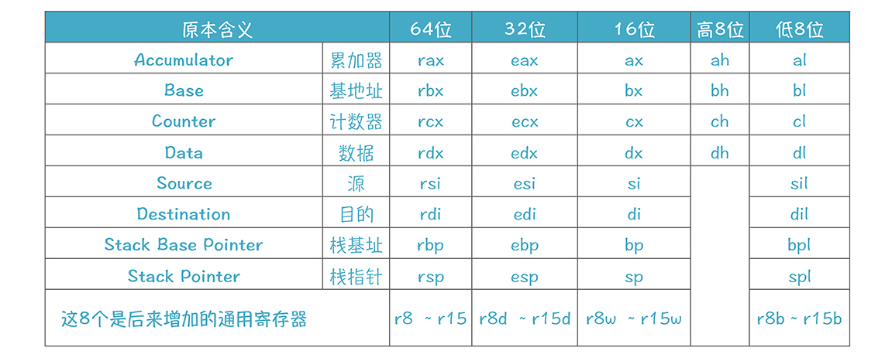
除了通用寄存器以外，有可能的话，还要了解下面的寄存器和它们的用途，我们写汇编代码时也经常跟它们发生关联：
8个80位的x87寄存器，用于做浮点计算；
8个64位的MMX寄存器，用于MMX指令（即多媒体指令），这8个跟x87寄存器在物理上是相同的寄存器。在传递浮点数参数的时候，要用mmx寄存器。
16个128位的SSE寄存器，用于SSE指令。我们将在应用篇里使用SSE指令，讲解SIMD的概念。
指令寄存器，rip，保存指令地址。CPU总是根据这个寄存器来读取指令。
flags（64位：rflags, 32位：eflags）寄存器：每个位用来标识一个状态。比如，它们会用于比较和跳转的指令，比如if语句翻译成的汇编代码，就会用它们来保存if条件的计算结果。
总的来说，我们的汇编代码处处要跟寄存器打交道，正确和高效使用寄存器，是编译期后端的重要任务之一。
课程小结
本节课，我讲解了汇编语言的一些基础知识，由于汇编语言的特点，涉及的知识点和细节比较多，在这个过程中，你无需死记硬背，只需要掌握几个重点内容：
1.汇编语言是由指令、标签、伪指令和注释构成的。其中主要内容都是指令。指令包含一个该指令的助记符和操作数。操作数可以使用直接数、寄存器，以及用两种方式访问内存地址。
2.汇编指令中会用到一些通用寄存器。这些寄存器除了用于计算以外，还可以根据调用约定帮助传递参数和返回值。使用寄存器时，要区分由调用者还是被调用者负责保护寄存器中原来的内容。
另外，我们还要注意按照一定的规则维护和使用栈桢，这个知识点会在后面的加餐中展开来讲一个例子。
鉴于你可能是第一次使用汇编语言，所以我提供两个建议，让你快速上手汇编语言：
1.你可以用C语言写一些示例代码，然后用编译器生成汇编代码，看看能否看懂。
2.模仿文稿中的例子，自己改写并运行你自己的汇编程序，这个过程中，你会发现真的没那么难。
一课一思
你之前学习过或者在项目中使用过汇编语言吗？感受是什么呢？有什么经验和体会呢？欢迎在留言区分享你的经验与感受。
最后，感谢你的阅读，如果这篇文章让你有所收获，也欢迎你将它分享给更多的朋友。
23 生成汇编代码（二）：把脚本编译成可执行文件
学完两节课之后，对于后端编译过程，你可能还会产生一些疑问，比如：
1.大致知道汇编程序怎么写，却不知道如何从AST生成汇编代码，中间有什么挑战。
2.编译成汇编代码之后需要做什么，才能生成可执行文件。
本节课，我会带你真正动手，基于AST把playscript翻译成正确的汇编代码，并将汇编代码编译成可执行程序。
通过这样一个过程，可以实现从编译器前端到后端的完整贯通，帮你对编译器后端工作建立比较清晰的认识。这样一来，你在日常工作中进行大型项目的编译管理的时候，或者需要重用别人的类库的时候，思路会更加清晰。
从playscript生成汇编代码
先来看看如何从playscript生成汇编代码。
我会带你把playscript的几个有代表性的功能，而不是全部的功能翻译成汇编代码，一来工作量少一些，二来方便做代码优化。这几个有代表性的功能如下：
1.支持函数调用和传参（这个功能可以回顾加餐）。
2.支持整数的加法运算（在这个过程中要充分利用寄存器提高性能）。
3.支持变量声明和初始化。
具体来说，要能够把下面的示例程序正确生成汇编代码：
//asm.play
int fun1(int x1, int x2, int x3, int x4, int x5, int x6, int x7, int x8){
int c = 10;
return x1 + x2 + x3 + x4 + x5 + x6 + x7 + x8 + c;
}
println("fun1:" + fun1(1,2,3,4,5,6,7,8));
在加餐中，我提供了一段手写的汇编代码，功能等价于这段playscript代码，并讲述了如何在多于6个参数的情况下传参，观察栈帧的变化过程，你可以看看下面的图片和代码，回忆一下：

# function-call2-craft.s 函数调用和参数传递
# 文本段,纯代码
.section __TEXT,__text,regular,pure_instructions
_fun1:
# 函数调用的序曲,设置栈指针
pushq %rbp # 把调用者的栈帧底部地址保存起来
movq %rsp, %rbp # 把调用者的栈帧顶部地址,设置为本栈帧的底部
movl $10, -4(%rbp) # 变量c赋值为10,也可以写成 movl $10, (%rsp)
# 做加法
movl %edi, %eax # 第一个参数放进%eax
addl %esi, %eax # 加参数2
addl %edx, %eax # 加参数3
addl %ecx, %eax # 加参数4
addl %r8d, %eax # 加参数5
addl %r9d, %eax # 加参数6
addl 16(%rbp), %eax # 加参数7
addl 24(%rbp), %eax # 加参数8
addl -4(%rbp), %eax # 加上c的值
# 函数调用的尾声,恢复栈指针为原来的值
popq %rbp # 恢复调用者栈帧的底部数值
retq # 返回
.globl _main # .global伪指令让_main函数外部可见
_main: ## @main
# 函数调用的序曲,设置栈指针
pushq %rbp # 把调用者的栈帧底部地址保存起来
movq %rsp, %rbp # 把调用者的栈帧顶部地址,设置为本栈帧的底部
subq $16, %rsp # 这里是为了让栈帧16字节对齐，实际使用可以更少
# 设置参数
movl $1, %edi # 参数1
movl $2, %esi # 参数2
movl $3, %edx # 参数3
movl $4, %ecx # 参数4
movl $5, %r8d # 参数5
movl $6, %r9d # 参数6
movl $7, (%rsp) # 参数7
movl $8, 8(%rsp) # 参数8
callq _fun1 # 调用函数
# 为pritf设置参数
leaq L_.str(%rip), %rdi # 第一个参数是字符串的地址
movl %eax, %esi # 第二个参数是前一个参数的返回值
callq _printf # 调用函数
# 设置返回值。这句也常用 xorl %esi, %esi 这样的指令,都是置为零
movl $0, %eax
addq $16, %rsp # 缩小栈
# 函数调用的尾声,恢复栈指针为原来的值
popq %rbp # 恢复调用者栈帧的底部数值
retq # 返回
# 文本段,保存字符串字面量
.section __TEXT,__cstring,cstring_literals
L_.str: ## @.str
.asciz "fun1 :%d \n"
接下来，我们动手写程序，从AST翻译成汇编代码（相关代码在playscript-java项目的AsmGen.java类里）。
我们实现加法运算的翻译过程如下：
case PlayScriptParser.ADD:
//为加法运算申请一个临时的存储位置，可以是寄存器和栈
address = allocForExpression(ctx);
bodyAsm.append("\tmovl\t").append(left).append(", ").append(address).append("\n"); //把左边节点拷贝到存储空间
bodyAsm.append("\taddl\t").append(right).append(", ").append(address).append("\n"); //把右边节点加上去
break;
这段代码的含义是：我们通过allocForExpression()方法，为每次加法运算申请一个临时空间（可以是寄存器，也可以是栈里的一个地址），用来存放加法操作的结果。接着，用mov指令把加号左边的值拷贝到这个临时空间，再用add指令加上右边的值。
生成汇编代码的过程，基本上就是基于AST拼接字符串，其中bodyAsm变量是一个StringBuffer对象，我们可以用StringBuffer的toString()方法获得最后的汇编代码。
按照上面的逻辑，针对“x1 + x2 + x3 + x4 + x5 + x6 + x7 + x8 + c”这个表达式，形成的汇编代码如下：
# 过程体
movl $10, -4(%rbp)
movl %edi, %eax //x1
addl %esi, %eax //+x2
movl %eax, %ebx
addl %edx, %ebx //+x3
movl %ebx, %r10d
addl %ecx, %r10d //+x4
movl %r10d, %r11d
addl %r8d, %r11d //+x5
movl %r11d, %r12d
addl %r9d, %r12d //+x6
movl %r12d, %r13d
addl 16(%rbp), %r13d //+x7
movl %r13d, %r14d
addl 24(%rbp), %r14d //+x8
movl %r14d, %r15d
addl -4(%rbp), %r15d //+c，本地变量
看出这个代码有什么问题了吗？我们每次执行加法运算的时候，都要占用一个新的寄存器。比如，x1+x2使用了%eax，再加x3时使用了%ebx，按照这样的速度，寄存器很快就用完了，使用效率显然不高。所以必须要做代码优化。
如果只是简单机械地翻译代码，相当于产生了大量的临时变量，每个临时变量都占用了空间：
t1 := x1 + x2;
t2 := t1 + x3;
t3 := t2 + x4;
...
进行代码优化可以让不再使用的存储位置（t1，t2，t3…）能够复用，从而减少临时变量，也减少代码行数，优化后的申请临时存储空间的方法如下：
//复用前序表达式的存储位置
if (ctx.bop != null && ctx.expression().size() >= 2) {
ExpressionContext left = ctx.expression(0);
String leftAddress = tempVars.get(left);
if (leftAddress!= null){
tempVars.put(ctx, leftAddress); //当前节点也跟这个地址关联起来
return leftAddress;
}
}
这段代码的意思是：对于每次加法运算，都要申请一个寄存器，如果加号左边的节点已经在某个寄存器中，那就直接复用这个寄存器，就不要用新的了。
调整以后，生成的汇编代码就跟手写的一样了。而且，我们至始至终只用了%eax一个寄存器，代码数量也减少了一半，优化效果明显：
# 过程体
movl $10, -4(%rbp)
movl %edi, %eax
addl %esi, %eax
addl %edx, %eax
addl %ecx, %eax
addl %r8d, %eax
addl %r9d, %eax
addl 16(%rbp), %eax
addl 24(%rbp), %eax
addl -4(%rbp), %eax
# 返回值
# 返回值在之前的计算中,已经存入%eax
对代码如何使用寄存器进行充分优化，是编译器后端一项必须要做的工作。这里只用了很粗糙的方法，不具备实用价值，后面可以学习更好的优化算法。
弄清楚了加法运算的代码翻译逻辑，我们再看看AsmGen.java中的generate()方法和generateProcedure()方法，看看汇编代码完整的生成逻辑是怎样的。这样可以帮助你弄清楚整体脉络和所有的细节，比如函数的标签是怎么生成的，序曲和尾声是怎么加上去的，本地变量的地址是如何计算的，等等。
public String generate() {
StringBuffer sb = new StringBuffer();
// 1.代码段的头
sb.append("\t.section __TEXT,__text,regular,pure_instructions\n");
// 2.生成函数的代码
for (Type type : at.types) {
if (type instanceof Function) {
Function function = (Function) type;
FunctionDeclarationContext fdc = (FunctionDeclarationContext) function.ctx;
visitFunctionDeclaration(fdc); // 遍历，代码生成到bodyAsm中了
generateProcedure(function.name, sb);
}
}
// 3.对主程序生成_main函数
visitProg((ProgContext) at.ast);
generateProcedure("main", sb);
// 4.文本字面量
sb.append("\n# 字符串字面量\n");
sb.append("\t.section __TEXT,__cstring,cstring_literals\n");
for(int i = 0; i< stringLiterals.size(); i++){
sb.append("L.str." + i + ":\n");
sb.append("\t.asciz\t\"").append(stringLiterals.get(i)).append("\"\n");
}
// 5.重置全局的一些临时变量
stringLiterals.clear();
return sb.toString();
}
generate()方法是整个翻译程序的入口，它做了几项工作:
1.生成一个.section伪指令，表明这是一个放文本的代码段。
2.遍历AST中的所有函数，调用generateProcedure()方法为每个函数生成一段汇编代码，再接着生成一个主程序的入口。
3.在一个新的section中，声明一些全局的常量（字面量）。整个程序的结构跟最后生成的汇编代码的结构是一致的，所以很容易看懂。
generateProcedure()方法把函数转换成汇编代码，里面的注释也很清晰，开头的工作包括：
1.生成函数标签、序曲部分的代码、设置栈顶指针、保护寄存器原有的值等。
2.接着是函数体，比如本地变量初始化、做加法运算等。
3.最后是一系列收尾工作，包括恢复被保护的寄存器的值、恢复栈顶指针，以及尾声部分的代码。
我们之前已经理解了一个函数体中的汇编代码的结构，所以看这段翻译代码肯定不费事儿。
private void generateProcedure(String name, StringBuffer sb) {
// 1.函数标签
sb.append("\n## 过程:").append(name).append("\n");
sb.append("\t.globl _").append(name).append("\n");
sb.append("_").append(name).append(":\n");
// 2.序曲
sb.append("\n\t# 序曲\n");
sb.append("\tpushq\t%rbp\n");
sb.append("\tmovq\t%rsp, %rbp\n");
// 3.设置栈顶
// 16字节对齐
if ((rspOffset % 16) != 0) {
rspOffset = (rspOffset / 16 + 1) * 16;
}
sb.append("\n\t# 设置栈顶\n");
sb.append("\tsubq\t$").append(rspOffset).append(", %rsp\n");
// 4.保存用到的寄存器的值
saveRegisters();
// 5.函数体
sb.append("\n\t# 过程体\n");
sb.append(bodyAsm);
// 6.恢复受保护的寄存器的值
restoreRegisters();
// 7.恢复栈顶
sb.append("\n\t# 恢复栈顶\n");
sb.append("\taddq\t$").append(rspOffset).append(", %rsp\n");
// 8.如果是main函数，设置返回值为0
if (name.equals("main")) {
sb.append("\n\t# 返回值\n");
sb.append("\txorl\t%eax, %eax\n");
}
// 9.尾声
sb.append("\n\t# 尾声\n");
sb.append("\tpopq\t%rbp\n");
sb.append("\tretq\n");
// 10.重置临时变量
rspOffset = 0;
localVars.clear();
tempVars.clear();
bodyAsm = new StringBuffer();
}
最后，你可以通过-S参数运行playscript-java，将asm.play文件生成汇编代码文件asm.s，再生成和运行可执行文件：
java play.PlayScript -S asm.play -o asm.s //生成汇编代码
gcc asm.s -o asm //生成可执行文件
./asm //运行可执行文件
另外，我们的翻译程序只实现了少量的特性（加法运算、本地变量、函数……）。我建议基于这个代码框架做修改，增加其他特性，比如减法、乘法和除法，支持浮点数，支持if语句和循环语句等。学过加餐之后，你应该清楚如何生成这样的汇编代码了。
到目前为止，我们已经成功地编译playscript程序，并生成了可执行文件！为了加深你对生成可执行文件的理解，我们再做个挑战，用playscript生成目标文件，让C语言来调用。这样可以证明playscript生成汇编代码的逻辑是靠谱的，以至于可以用playscript代替C语言来写一个共用模块。
通过C语言调用playscript模块
我们在编程的时候，经常调用一些公共的库实现一些功能，这些库可能是别的语言写的，但我们仍然可以调用。我们也可以实现playscript与其他语言的功能共享，在示例程序中实现很简单，微调一下生成的汇编代码，使用“.global _fun1”伪指令让_fun1过程变成全局的，这样其他语言写的程序就可以调用这个_fun1过程，实现功能的重用。
# convention-fun1.s 测试调用约定，_fun1将在外部被调用
# 文本段,纯代码
.section __TEXT,__text,regular,pure_instructions
.globl _fun1 # .global伪指令让_fun1函数外部可见
_fun1:
# 函数调用的序曲,设置栈指针
pushq %rbp # 把调用者的栈帧底部地址保存起来
movq %rsp, %rbp # 把调用者的栈帧顶部地址,设置为本栈帧的底部
movl $10, -4(%rbp) # 变量c赋值为10,也可以写成 movl $10, (%rsp)
# 做加法
movl %edi, %eax # 第一个参数放进%eax
addl %esi, %eax # 加参数2
addl %edx, %eax # 加参数3
addl %ecx, %eax # 加参数4
addl %r8d, %eax # 加参数5
addl %r9d, %eax # 加参数6
addl 16(%rbp), %eax # 加参数7
addl 24(%rbp), %eax # 加参数8
addl -4(%rbp), %eax # 加上c的值
# 函数调用的尾声,恢复栈指针为原来的值
popq %rbp # 恢复调用者栈帧的底部数值
retq # 返回
接下来再写一个C语言的函数来调用fun1()，其中的extern关键字，说明有一个fun1()函数是在另一个模块里实现的：
/**
* convention-main.c 测试调用约定。调用一个外部函数fun1
*/
#include <stdio.h>
//声明一个外部函数，在链接时会在其他模块中找到
extern int fun1(int x1, int x2, int x3, int x4, int x5, int x6, int x7, int x8);
int main(int argc, char *argv[])
{
printf("fun1: %d \n", fun1(1,2,3,4,5,6,7,8));
return 0;
}
然后在命令行敲下面两个命令：
# 编译汇编程序
as convention-fun1.s -o convention-fun1.o
# 编译C程序
gcc convention-main.c convention-fun1.o -o convention
第一个命令，把playscript生成的汇编代码编译成一个二进制目标文件。
第二个命令在编译C程序的时候，同时也带上这个二进制文件，那么编译器就会找到fun1()函数的定义，并链接到一起。- 最后生成的可执行文件能够顺利运行。
这里面，我需要解释一下链接过程，它有助于你在二进制文件层面上加深对编译过程的理解。
其实，高级语言和汇编语言都容易阅读。而二进制文件，则是对计算机友好的，便于运行。汇编器可以把每一个汇编文件都编译生成一个二进制的目标文件，或者叫做一个模块。而链接器则把这些模块组装成一个整体。
但在C语言生成的那个模块中，调用fun1()函数时，它没有办法知道fun1()函数的准确地址，因为这个地址必须是整个文件都组装完毕以后才能计算出来。所以，汇编器把这个任务推迟，交给链接器去解决。

这就好比你去饭店排队吃饭，首先要拿个号（函数的标签），但不知道具体坐哪桌。等叫到你的号的时候（链接过程），服务员才会给你安排一个确定的桌子（函数的地址）。
既然我们已经从文本世界进入了二进制的世界，那么我们可以再加深一下对可执行文件结构的理解。
理解可执行文件
我们编译一个程序，最后的结果是生成可运行的二进制文件。其实，生成汇编代码以后，我们就可以认为编译器的任务完成了。后面的工作，其实是由汇编器和链接器完成的。但我们也可以把整个过程都看做编译过程，了解二进制文件的结构，也为我们完整地了解整个编译过程划上了句号。
当然了，对二进制文件格式的理解，也是做大型项目编译管理、二进制代码分析等工作的基础，很有意义。
对于每个操作系统，我们对于可执行程序的格式要求是不一样的。比如，在Linux下，目标文件、共享对象文件、二进制文件，都是采用ELF格式。
实际上，这些二进制文件的格式跟加载到内存中的程序的格式是很相似的。这样有什么好处呢？它可以迅速被操作系统读取，并加载到内存中去，加载速度越快，也就相当于程序的启动速度越快。
同内存中的布局一样，在ELF格式中，代码和数据也是分开的。这样做的好处是，程序的代码部分，可以在多个进程中共享，不需要在内存里放多份。放一份，然后映射到每个进程的代码区就行了。而数据部分，则是每个进程都不一样的，所以要为每个进程加载一份。
这样讲的话，你就理解了可执行文件、目标文件等二进制文件的原理了，具体的细节，可以查阅相关的文档和手册。
课程小结
这节课，我们实现了从AST到汇编代码，汇编代码到可执行文件的完整过程。现在，你应该对后端工作的实质建立起了直接的认识。我建议你抓住几个关键点：
首先，从AST生成汇编代码，可以通过比较机械的翻译来完成，我们举了加法运算的例子。阅读示例程序，你也可以看看函数调用、参数传递等等的实现过程。总体来说，这个过程并不难。
第二，这种机械地翻译生成的代码，一定是不够优化的。我们已经看到了加法运算不够优化的情况，所以一定要增加一个优化的过程。
第三，在生成汇编的过程中，最需要注意的就是要遵守调用约定。这就需要了解调用约定的很多细节。只要遵守调用约定，不同语言生成的二进制目标文件也可以链接在一起，形成最后的可执行文件。
现在我已经带你完成了编译器后端的第一轮认知迭代，并且直接操刀汇编代码，破除你对汇编的恐惧心。在之后的课程中，我们会进入第二轮迭代：中间代码和代码优化。
一课一思
我们针对加法计算、函数调用等语法生成了汇编代码。你能否思考一下，如果要支持其他运算和语法，比如乘法运算、条件判断、循环语句等，大概会怎样实现？如果要支持面向对象编程，又该怎样实现呢？欢迎你打开思路，在留言区分享自己的想法。
最后，感谢你的阅读，如果这篇文章让你有所收获，也欢迎你将它分享给更多的朋友。
示例代码我放在文末，供你参考。
24 中间代码：兼容不同的语言和硬件
前几节课，我带你尝试不通过IR，直接生成汇编代码，这是为了帮你快速破冰，建立直觉。在这个过程中，你也遇到了一些挑战，比如：
你要对生成的代码进行优化，才有可能更好地使用寄存器和内存，同时也能减少代码量；
另外，针对不同的CPU和操作系统，你需要调整生成汇编代码的逻辑。
这些实际体验，都进一步验证了20讲中，IR的作用：我们能基于IR对接不同语言的前端，也能对接不同的硬件架构，还能做很多的优化。
既然IR有这些作用，那你可能会问，IR都是什么样子的呢？有什么特点？如何生成IR呢？
本节课，我就带你了解IR的特点，认识常见的三地址代码，学会如何把高级语言的代码翻译成IR。然后，我还会特别介绍LLVM的IR，以便后面使用LLVM这个工具。
首先，来看看IR的特征。
介于中间的语言
IR的意思是中间表达方式，它在高级语言和汇编语言的中间，这意味着，它的特征也是处于二者之间的。
与高级语言相比，IR丢弃了大部分高级语言的语法特征和语义特征，比如循环语句、if语句、作用域、面向对象等等，它更像高层次的汇编语言；而相比真正的汇编语言，它又不会有那么多琐碎的、与具体硬件相关的细节。
相信你在学习汇编语言的时候，会发现汇编语言的细节特别多。比如，你要知道很多指令的名字和用法，还要记住很多不同的寄存器。在22讲，我提到，如果你想完整地掌握x86-64架构，还需要接触很多指令集，以及调用约定的细节、内存使用的细节等等（参见Intel的手册）。
仅仅拿指令的数量来说，据有人统计，Intel指令的助记符有981个之多！都记住怎么可能啊。所以说，汇编语言并不难，而是麻烦。
IR不会像x86-64汇编语言那么繁琐，但它却包含了足够的细节信息，能方便我们实现优化算法，以及生成针对目标机器的汇编代码。
另外，我在20讲提到，IR有很多种类（AST也是一种IR），每种IR都有不同的特点和用途，有的编译器，甚至要用到几种不同的IR。
我们在后端部分所讲的IR，目的是方便执行各种优化算法，并有利于生成汇编。这种IR，可以看做是一种高层次的汇编语言，主要体现在：
- 它可以使用寄存器，但寄存器的数量没有限制；
- 控制结构也跟汇编语言比较像，比如有跳转语句，分成多个程序块，用标签来标识程序块等；
- 使用相当于汇编指令的操作码。这些操作码可以一对一地翻译成汇编代码，但有时一个操作码会对应多个汇编指令。
下面来看看一个典型IR：三地址代码，简称TAC。
认识典型的IR：三地址代码（TAC）
下面是一种常见的IR的格式，它叫做三地址代码（Three Address Code, TAC），它的优点是很简洁，所以适合用来讨论算法：
x := y op z //二元操作
x := op y //一元操作
每条三地址代码最多有三个地址，其中两个是源地址（比如第一行代码的y和z），一个是目的地址（也就是x），每条代码最多有一个操作（op）。
我来举几个例子，带你熟悉一下三地址代码，这样，你能掌握三地址代码的特点，从高级语言的代码转换生成三地址代码。
1.基本的算术运算：
int a, b, c, d;
a = b + c * d;
TAC：
t1 := c * d
a := b + t1
t1是新产生的临时变量。当源代码的表达式中包含一个以上的操作符时，就需要引入临时变量，并把原来的一条代码拆成多条代码。
2.布尔值的计算：
int a, b;
bool x, y;
x = a * 2 < b;
y = a + 3 == b;
TAC：
t1 := a * 2;
x := t1 < b;
t2 := a + 3;
y := t2 == b;
布尔值实际上是用整数表示的，0代表false，非0值代表true。
3.条件语句：
int a, b c;
if (a < b )
c = b;
else
c = a;
c = c * 2;
TAC：
t1 := a < b;
IfZ t1 Goto L1;
c := a;
Goto L2;
L1:
c := b;
L2:
c := c * 2;
IfZ是检查后面的操作数是否是0，“Z”就是“Zero”的意思。这里使用了标签和Goto语句来进行指令的跳转（Goto相当于x86-64的汇编指令jmp）。
4.循环语句：
int a, b;
while (a < b){
a = a + 1;
}
a = a + b;
TAC：
L1:
t1 := a < b;
IfZ t1 Goto L2;
a := a + 1;
Goto L1;
L2:
a := a + b;
三地址代码的规则相当简单，我们可以通过比较简单的转换规则，就能从AST生成TAC。
在课程中，三地址代码主要用来描述优化算法，因为它比较简洁易读，操作（指令）的类型很少，书写方式也符合我们的日常习惯。不过，我并不用它来生成汇编代码，因为它含有的细节信息还是比较少，比如，整数是16位的、32位的还是64位的？目标机器的架构和操作系统是什么？生成二进制文件的布局是怎样的等等？
我会用LLVM的IR来承担生成汇编的任务，因为它有能力描述与目标机器（CPU、操作系统）相关的更加具体的信息，准确地生成目标代码，从而真正能够用于生产环境。
在讲这个问题之前，我想先延伸一下，讲讲另外几种IR的格式，主要想帮你开拓思维，如果你的项目需求，恰好能用这种IR实现，到时不妨拿来用一下：
首先是四元式。它是与三地址代码等价的另一种表达方式，格式是：（OP，arg1，arg2，result）所以，“a := b + c” 就等价于（+，b，c，a）。
另一种常用的格式是逆波兰表达式。它把操作符放到后面，所以也叫做后缀表达式。“b + c”对应的逆波兰表达式是“b c +”；而“a = b + c”对应的逆波兰表达式是“a b c + =”。
逆波兰表达式特别适合用栈来做计算。比如计算“b c +”，先从栈里弹出加号，知道要做加法操作，然后从栈里弹出两个操作数，执行加法运算即可。这个计算过程，跟深度优先的遍历AST是等价的。所以，采用逆波兰表达式，有可能让你用一个很简单的方式就实现公式计算功能，如果你编写带有公式功能的软件时可以考虑使用它。而且，从AST生成逆波兰表达式也非常容易。
三地址代码主要是学习算法的工具，或者用于实现比较简单的后端，要实现工业级的后端，充分发挥硬件的性能，你还要学习LLVM的IR。
认识LLVM汇编码
LLVM汇编码（LLVM Assembly），是LLVM的IR。有的时候，我们就简单地称呼它为LLVM语言，因此我们可以把用LLVM汇编码书写的一个程序文件叫做LLVM程序。
我会在下一讲，详细讲解LLVM这个开源项目。本节课作为铺垫，告诉我们在使用LLVM之前，要先了解它的核心——IR。
首先，LLVM汇编码是采用静态单赋值代码形式的。
在三地址代码上再加一些限制，就能得到另一种重要的代码，即静态单赋值代码（Static Single Assignment, SSA），在静态单赋值代码中，一个变量只能被赋值一次，来看个例子。
“y = x1 + x2 + x3 + x4”的普通三地址代码如下：
y := x1 + x2;
y := y + x3;
y := y + x4;
其中，y被赋值了三次，如果写成SSA的形式，就只能写成下面的样子：
t1 := x1 + x2;
t2 := t1 + x3;
y := t2 + x4;
为什么要费力写成这种形式呢，还要为此多添加t1和t2两个临时变量？原因是SSA的形式，体现了精确的“使用-定义”关系。
每个变量很确定地只会被定义一次，然后可以多次使用。这种特点使得基于SSA更容易做数据流分析，而数据流分析又是很多代码优化技术的基础，所以，几乎所有语言的编译器、解释器或虚拟机中都使用了SSA，因为有利于做代码优化。而LLVM的IR，也是采用SSA的形式，也是因为SSA方便做代码优化。
其次，LLVM IR比起三地址代码，有更多的细节信息。比如整型变量的字长、内存对齐方式等等，所以使用LLVM IR能够更准确地翻译成汇编码。
看看下面这段C语言代码：
int fun1(int a, int b){
int c = 10;
return a + b + c;
}
对应的LLLM汇编码如下（这是我在macOS上生成的）：
; ModuleID = 'fun1.c'
source_filename = "fun1.c"
target datalayout = "e-m:o-i64:64-f80:128-n8:16:32:64-S128"
target triple = "x86_64-apple-macosx10.14.0"
; Function Attrs: noinline nounwind optnone ssp uwtable
define i32 @fun1(i32, i32) #0 {
%3 = alloca i32, align 4 //为3个变量申请空间
%4 = alloca i32, align 4
%5 = alloca i32, align 4
store i32 %0, i32* %3, align 4 //参数1赋值给变量1
store i32 %1, i32* %4, align 4 //参数2赋值给变量2
store i32 10, i32* %5, align 4 //常量10赋值给变量3
%6 = load i32, i32* %3, align 4 //
%7 = load i32, i32* %4, align 4
%8 = add nsw i32 %6, %7
%9 = load i32, i32* %5, align 4
%10 = add nsw i32 %8, %9
ret i32 %10
}
attributes #0 = { noinline nounwind optnone ssp uwtable "correctly-rounded-divide-sqrt-fp-math"="false" "disable-tail-calls"="false" "less-precise-fpmad"="false" "no-frame-pointer-elim"="true" "no-frame-pointer-elim-non-leaf" "no-infs-fp-math"="false" "no-jump-tables"="false" "no-nans-fp-math"="false" "no-signed-zeros-fp-math"="false" "no-trapping-math"="false" "stack-protector-buffer-size"="8" "target-cpu"="penryn" "target-features"="+cx16,+fxsr,+mmx,+sahf,+sse,+sse2,+sse3,+sse4.1,+ssse3,+x87" "unsafe-fp-math"="false" "use-soft-float"="false" }
!llvm.module.flags = !{!0, !1, !2}
!llvm.ident = !{!3}
!0 = !{i32 2, !"SDK Version", [2 x i32] [i32 10, i32 14]}
!1 = !{i32 1, !"wchar_size", i32 4}
!2 = !{i32 7, !"PIC Level", i32 2}
!3 = !{!"Apple LLVM version 10.0.1 (clang-1001.0.46.4)"}
这些代码看上去确实比三地址代码复杂，但还是比汇编精简多了，比如LLVM IR的指令数量连x86-64汇编的十分之一都不到。
我们来熟悉一下里面的元素：
- 模块
LLVM程序是由模块构成的，这个文件就是一个模块。模块里可以包括函数、全局变量和符号表中的条目。链接的时候，会把各个模块拼接到一起，形成可执行文件或库文件。
在模块中，你可以定义目标数据布局（target datalayout）。例如，开头的小写“e”是低字节序（Little Endian）的意思，对于超过一个字节的数据来说，低位字节排放在内存的低地址端，高位字节排放在内存的高地址端。
target datalayout = "e-m:o-i64:64-f80:128-n8:16:32:64-S128"
“target triple”用来定义模块的目标主机，它包括架构、厂商、操作系统三个部分。
target triple = "x86_64-apple-macosx10.14.0"
- 函数
在示例代码中有一个以define开头的函数的声明，还带着花括号。这有点儿像C语言的写法，比汇编用采取标签来表示一个函数的可读性更好。
函数声明时可以带很多修饰成分，比如链接类型、调用约定等。如果不写，缺省的链接类型是external的，也就是可以像23讲中做链接练习的那样，暴露出来被其他模块链接。调用约定也有很多种选择，缺省是“ccc”，也就是C语言的调用约定（C Calling Convention），而“swiftcc”则是swift语言的调用约定。这些信息都是生成汇编时所需要的。
示例中函数fun1还带有“#0”的属性值，定义了许多属性。这些也是生成汇编时所需要的。
- 标识符
分为全局的（Glocal）和本地的（Local）：全局标识符以@开头，包括函数和全局变量，前面代码中的@fun1就是；本地标识符以%开头。
有的标识符是有名字的，比如@fun1或%a，有的是没有名字的，用数字表示就可以了，如%1。
- 操作码
alloca、store、load、add、ret这些，都是操作码。它们的含义是：
它们跟我们之前学到的汇编很相似。但是似乎函数体中的代码有点儿长。怎么一个简单的“a+b+c”就翻译成了10多行代码，还用到了那么多临时变量？不要担心，这只是完全没经过优化的格式，带上优化参数稍加优化以后，它就会被精简成下面的样子：
define i32 @fun1(i32, i32) local_unnamed_addr #0 {
%3 = add i32 %0, 10
%4 = add i32 %3, %1
ret i32 %4
}
- 类型系统
汇编是无类型的。如果你用add指令，它就认为你操作的是整数。而用fadd（或addss）指令，就认为你操作的是浮点数。这样会有类型不安全的风险，把整型当浮点数用了，造成的后果是计算结果完全错误。
LLVM汇编则带有一个类型系统。它能避免不安全的数据操作，并且有助于优化算法。这个类型系统包括基础数据类型、函数类型和void类型。
函数类型是包括对返回值和参数的定义，比如：i32 (i32)；
void类型不代表任何值，也没有长度。
- 全局变量和常量
在LLVM汇编中可以声明全局变量。全局变量所定义的内存，是在编译时就分配好了的，而不是在运行时，例如下面这句定义了一个全局变量C：
@c = global i32 100, align 4
你也可以声明常量，它的值在运行时不会被修改：
@c = constant i32 100, align 4
- 元数据
在代码中你还看到以“!”开头的一些句子，这些是元数据。这些元数据定义了一些额外的信息，提供给优化器和代码生成器使用。
- 基本块
函数中的代码会分成一个个的基本块，可以用标签（Label）来标记一个基本块。下面这段代码有4个基本块，其中第一个块有一个缺省的名字“entry”，也就是作为入口的基本块，这个基本块你不给它标签也可以。
define i32 @bb(i32) #0 {
%2 = alloca i32, align 4
%3 = alloca i32, align 4
store i32 %0, i32* %3, align 4
%4 = load i32, i32* %3, align 4
%5 = icmp sgt i32 %4, 0
br i1 %5, label %6, label %9
; <label>:6: ; preds = %1
%7 = load i32, i32* %3, align 4
%8 = mul nsw i32 %7, 2
store i32 %8, i32* %2, align 4
br label %12
; <label>:9: ; preds = %1
%10 = load i32, i32* %3, align 4
%11 = add nsw i32 %10, 3
store i32 %11, i32* %2, align 4
br label %12
; <label>:12: ; preds = %9, %6
%13 = load i32, i32* %2, align 4
ret i32 %13
}
这段代码实际上相当于下面这段C语言的代码：
int bb(int b){
if (b > 0)
return b * 2;
else
return b + 3;
}
每个基本块是一系列的指令。我们分析一下标签为9的基本块，让你熟悉一下基本块和LLVM指令的特点：
第一行（%10 = load i32, i32* %3, align 4）的含义是：把3号变量（32位整型）从内存加载到寄存器，叫做10号变量，其中，内存对齐是4字节。
我在这里延伸一下，我们在内存里存放数据的时候，有时会从2、4、8个字节的整数倍地址开始存。有些汇编指令要求必须从这样对齐的地址来取数据。另一些指令没做要求，但如果是不对齐的，比如是从0x03地址取数据，就要花费更多的时钟周期。但缺点是，内存对齐会浪费内存空间。
第一行是整个基本块的唯一入口，从其他基本块跳转过来的时候，只能跳转到这个入口行，不能跳转到基本块中的其他行。
第二行（%11 = add nsw i32 %10, 3）的含义是：把10号变量（32位整型）加上3，保存到11号变量，其中nsw是加法计算时没有符号环绕（No Signed Wrap）的意思。它的细节你可以查阅“LLVM语言参考手册”。
第三行（store i32 %11, i32* %2, align 4）的含义是：把11号变量（32位整型）存入内存中的2号变量，内存对齐4字节。
第四行（br label %12）的含义是：跳转到标签为12的代码块。其中，br指令是一条终结指令。终结指令要么是跳转到另一个基本块，要么是从函数中返回（ret指令），基本块的最后一行必须是一条终结指令。
最后我要强调，从其他基本块不可以跳转到入口基本块，也就是函数中的第一个基本块。这个规定也是有利于做数据优化。
以上就是对LLVM汇编码的概要介绍（更详细的信息了解可以参见“LLVM语言参考手册”）。
这样，你实际上就可以用LLVM汇编码来编写程序了，或者将AST翻译成LLVM汇编码。听上去有点让人犯怵，因为LLVM汇编码的细节也相当不少，好在，LLVM提供了一个IR生成的API（应用编程接口），可以让我们更高效、更准确地生成IR。
课程小结
IR是我们后续做代码优化、汇编代码生成的基础，在本节课中，我想让你明确的要点如下：
1.三地址代码是很常见的一种IR，包含一个目的地址、一个操作符和至多两个源地址。它等价于四元式。我们在27讲和28讲中的优化算法，会用三地址代码来讲解，这样比较易于阅读。
2.LLVM IR的第一个特点是静态单赋值（SSA），也就是每个变量（地址）最多被赋值一次，它这种特性有利于运行代码优化算法；第二个特点是带有比较多的细节，方便我们做优化和生成高质量的汇编代码。
通过本节课，你应该对于编译器后端中常常提到的IR建立了直观的认识，相信通过接下来的练习，你一定会消除对IR的陌生感，让它成为你得心应手的好工具！
一课一思
我们介绍了IR的特点和几种基本的IR，在你的领域，比如人工智能领域，你了解其他的IR吗？它带来了什么好处？欢迎分享你的经验和观点。
最后，感谢你的阅读，如果这篇文章让你有所收获，也欢迎你将它分享给更多的人。
25 后端技术的重用：LLVM不仅仅让你高效
在编译器后端，做代码优化和为每个目标平台生成汇编代码，工作量是很大的。那么，有什么办法能降低这方面的工作量，提高我们的工作效率呢？答案就是利用现成的工具。
在前端部分，我就带你使用Antlr生成了词法分析器和语法分析器。那么在后端部分，我们也可以获得类似的帮助，比如利用LLVM和GCC这两个后端框架。
相比前端的编译器工具，如Lex（Flex）、Yacc（Bison）和Antlr等，对于后端工具，了解的人比较少，资料也更稀缺，如果你是初学者，那么上手的确有一些难度。不过我们已经用20～24讲，铺垫了必要的基础知识，也尝试了手写汇编代码，这些知识足够你学习和掌握后端工具了。
本节课，我想先让你了解一些背景信息，所以会先概要地介绍一下LLVM和GCC这两个有代表性的框架的情况，这样，当我再更加详细地讲解LLVM，带你实际使用一下它的时候，你接受起来就会更加容易了。
两个编译器后端框架：LLVM和GCC
LLVM是一个开源的编译器基础设施项目，主要聚焦于编译器的后端功能（代码生成、代码优化、JIT……）。它最早是美国伊利诺伊大学的一个研究性项目，核心主持人员是Chris Lattner（克里斯·拉特纳）。
LLVM的出名是由于苹果公司全面采用了这个框架。苹果系统上的C语言、C++、Objective-C的编译器Clang就是基于LLVM的，最新的Swift编程语言也是基于LLVM，支撑了无数的移动应用和桌面应用。无独有偶，在Android平台上最新的开发语言Kotlin，也支持基于LLVM编译成本地代码。
另外，由Mozilla公司（Firefox就是这个公司的产品）开发的系统级编程语言RUST，也是基于LLVM开发的。还有一门相对小众的科学计算领域的语言，叫做Julia，它既能像脚本语言一样灵活易用，又可以具有C语言一样的速度，在数据计算方面又有特别的优化，它的背后也有LLVM的支撑。
OpenGL和一些图像处理领域也在用LLVM，我还看到一个资料，说阿里云的工程师实现了一个Cava脚本语言，用于配合其搜索引擎系统HA3。
还有，在人工智能领域炙手可热的TensorFlow框架，在后端也是用LLVM来编译。它把机器学习的IR翻译成LLVM的IR，然后再翻译成支持CPU、GPU和TPU的程序。
所以这样看起来，你所使用的很多语言和工具，背后都有LLVM的影子，只不过你可能没有留意罢了。所以在我看来，要了解编译器的后端技术，就不能不了解LLVM。
与LLVM起到类似作用的后端编译框架是GCC（GNU Compiler Collection，GNU编译器套件）。它支持了GNU Linux上的很多语言，例如C、C++、Objective-C、Fortran、Go语言和Java语言等。其实，它最初只是一个C语言的编译器，后来把公共的后端功能也提炼了出来，形成了框架，支持多种前端语言和后端平台。最近华为发布的方舟编译器，据说也是建立在GCC基础上的。
LLVM和GCC很难比较优劣，因为这两个项目都取得了很大的成功。
在本课程中，我们主要采用LLVM，但其中学到的一些知识，比如IR的设计、代码优化算法、适配不同硬件的策略，在学习GCC或其他编译器后端的时候，也是有用的，从而大大提升学习效率。
接下来，我们先来看看LLVM的构成和特点，让你对它有个宏观的认识。
了解LLVM的特点
LLVM能够支持多种语言的前端、多种后端CPU架构。在LLVM内部，使用类型化的和SSA特点的IR进行各种分析、优化和转换：
LLVM项目包含了很多组成部分：
LLVM核心（core）。就是上图中的优化和分析工具，还包括了为各种CPU生成目标代码的功能；这些库采用的是LLVM IR，一个良好定义的中间语言，在上一讲，我们已经初步了解它了。
Clang前端（是基于LLVM的C、C++、Objective-C编译器）。
LLDB（一个调试工具）。
LLVM版本的C++标准类库。
其他一些子项目。
我个人很喜欢LLVM，想了想，主要有几点原因：
首先，LLVM有良好的模块化设计和接口。以前的编译器后端技术很难复用，而LLVM具备定义了良好接口的库，方便使用者选择在什么时候，复用哪些后端功能。比如，针对代码优化，LLVM提供了很多算法，语言的设计者可以自己选择合适的算法，或者实现自己特殊的算法，具有很好的灵活性。
第二，LLVM同时支持JIT（即时编译）和AOT（提前编译）两种模式。过去的语言要么是解释型的，要么编译后运行。习惯了使用解释型语言的程序员，很难习惯必须等待一段编译时间才能看到运行效果。很多科学工作者，习惯在一个REPL界面中一边写脚本，一边实时看到反馈。LLVM既可以通过JIT技术支持解释执行，又可以完全编译后才执行，这对于语言的设计者很有吸引力。
第三，有很多可以学习借鉴的项目。Swift、Rust、Julia这些新生代的语言，实现了很多吸引人的特性，还有很多其他的开源项目，而我们可以研究、借鉴它们是如何充分利用LLVM的。
第四，全过程优化的设计思想。LLVM在设计上支持全过程的优化。Lattner和Adve最早关于LLVM设计思想的文章《LLVM: 一个全生命周期分析和转换的编译框架》，就提出计算机语言可以在各个阶段进行优化，包括编译时、链接时、安装时，甚至是运行时。
以运行时优化为例，基于LLVM我们能够在运行时，收集一些性能相关的数据对代码编译优化，可以是实时优化的、动态修改内存中的机器码；也可以收集这些性能数据，然后做离线的优化，重新生成可执行文件，然后再加载执行，这一点非常吸引我，因为在现代计算环境下，每种功能的计算特点都不相同，确实需要针对不同的场景做不同的优化。下图展现了这个过程（图片来源《 LLVM: A Compilation Framework for Lifelong Program Analysis & Transformation》）：

我建议你读一读Lattner和Adve的这篇论文（另外强调一下，当你深入学习编译技术的时候，阅读领域内的论文就是必不可少的一项功课了）。
第五，LLVM的授权更友好。GNU的很多软件都是采用GPL协议的，所以如果用GCC的后端工具来编写你的语言，你可能必须要按照GPL协议开源。而LLVM则更友好一些，你基于LLVM所做的工作，完全可以是闭源的软件产品。
而我之所以说：“LLVM不仅仅让你更高效”，就是因为上面它的这些特点。
现在，你已经对LLVM的构成和特点有一定的了解了，接下来，我带你亲自动手操作和体验一下LLVM的功能，这样你就可以迅速消除对它的陌生感，快速上手了。
体验一下LLVM的功能
首先你需要安装一下LLVM（参照官方网站上的相关介绍下载安装）。因为我使用的是macOS，所以用brew就可以安装。
brew install llvm
因为LLVM里面带了一个版本的Clang和C++的标准库，与本机原来的工具链可能会有冲突，所以brew安装的时候并没有在/usr/local下建立符号链接。你在用LLVM工具的时候，要配置好相关的环境变量。
# 可执行文件的路径
export PATH="/usr/local/opt/llvm/bin:$PATH"
# 让编译器能够找到LLVM
export LDFLAGS="-L/usr/local/opt/llvm/lib"
export CPPFLAGS="-I/usr/local/opt/llvm/include”
安装完毕之后，我们使用一下LLVM自带的命令行工具，分几步体验一下LLVM的功能：
1.从C语言代码生成IR；- 2.优化IR；- 3.从文本格式的IR生成二进制的字节码；- 4.把IR编译成汇编代码和可执行文件。
从C语言代码生成IR代码比较简单，上一讲中我们已经用到过一个C语言的示例代码：
//fun1.c
int fun1(int a, int b){
int c = 10;
return a+b+c;
}
用前端工具Clang就可以把它编译成IR代码：
clang -emit-llvm -S fun1.c -o fun1.ll
其中，-emit-llvm参数告诉Clang生成LLVM的汇编码，也就是IR代码（如果不带这个参数，就会生成针对目标机器的汇编码）所生成的IR我们上一讲也见过，你现在应该能够读懂它了。你可以多写几个不同的程序，看看生成的IR是什么样的，比如if语句、循环语句等等（这时你完成了第一步）：
; ModuleID = 'function-call1.c'
source_filename = "function-call1.c"
target datalayout = "e-m:o-i64:64-f80:128-n8:16:32:64-S128"
target triple = "x86_64-apple-macosx10.14.0"
; Function Attrs: noinline nounwind optnone ssp uwtable
define i32 @fun1(i32, i32) #0 {
%3 = alloca i32, align 4
%4 = alloca i32, align 4
%5 = alloca i32, align 4
store i32 %0, i32* %3, align 4
store i32 %1, i32* %4, align 4
store i32 10, i32* %5, align 4
%6 = load i32, i32* %3, align 4
%7 = load i32, i32* %4, align 4
%8 = add nsw i32 %6, %7
%9 = load i32, i32* %5, align 4
%10 = add nsw i32 %8, %9
ret i32 %10
}
attributes #0 = { noinline nounwind optnone ssp uwtable "correctly-rounded-divide-sqrt-fp-math"="false" "disable-tail-calls"="false" "less-precise-fpmad"="false" "min-legal-vector-width"="0" "no-frame-pointer-elim"="true" "no-frame-pointer-elim-non-leaf" "no-infs-fp-math"="false" "no-jump-tables"="false" "no-nans-fp-math"="false" "no-signed-zeros-fp-math"="false" "no-trapping-math"="false" "stack-protector-buffer-size"="8" "target-cpu"="penryn" "target-features"="+cx16,+fxsr,+mmx,+sahf,+sse,+sse2,+sse3,+sse4.1,+ssse3,+x87" "unsafe-fp-math"="false" "use-soft-float"="false" }
!llvm.module.flags = !{!0, !1}
!llvm.ident = !{!2}
!0 = !{i32 1, !"wchar_size", i32 4}
!1 = !{i32 7, !"PIC Level", i32 2}
!2 = !{!"clang version 8.0.0 (tags/RELEASE_800/final)"}
上一讲我们提到过，可以对生成的IR做优化，让代码更短，你只要在上面的命令中加上-O2参数就可以了（这时你完成了第二步）：
clang -emit-llvm -S -O2 fun1.c -o fun1.ll
这个时候，函数体的核心代码就变短了很多。这里面最重要的优化动作，是从原来使用内存（alloca指令是在栈中分配空间，store指令是往内存里写入值），优化到只使用寄存器（%0、%1是参数，%3、%4也是寄存器）。
define i32 @fun1(i32, i32) #0 {
%3 = add nsw i32 %0, %1
%4 = add nsw i32 %3, 10
ret i32 %4
}
你还可以用opt命令来完成上面的优化，具体我们在27、28讲中讲优化算法的时候再细化。
另外，LLVM的IR有两种格式。在示例代码中显示的，是它的文本格式，文件名一般以.ll结尾。第二种格式是字节码（bitcode）格式，文件名以.bc结尾。为什么要用两种格式呢？因为文本格式的文件便于程序员阅读，而字节码格式的是二进制文件，便于机器处理，比如即时编译和执行。生成字节码格式之后，所占空间会小很多，所以可以快速加载进内存，并转换为内存中的对象格式。而如果加载文本文件，则还需要一个解析的过程，才能变成内存中的格式，效率比较慢。
调用llvm-as命令，我们可以把文本格式转换成字节码格式：
llvm-as fun1.ll -o fun1.bc
我们也可以用clang直接生成字节码，这时不需要带-S参数，而是要用-c参数。
clang -emit-llvm -c fun1.c -o fun1.bc
因为.bc文件是二进制文件，不能直接用文本编辑器查看，而要用hexdump命令查看（这时你完成了第三步）：
hexdump -C fun1.bc

LLVM的一个优点，就是可以即时编译运行字节码，不一定非要编译生成汇编码和可执行文件才能运行（这一点有点儿像Java语言），这也让LLVM具有极高的灵活性，比如，可以在运行时根据收集的性能信息，改变优化策略，生成更高效的机器码。
再进一步，我们可以把字节码编译成目标平台的汇编代码。我们使用的是llc命令，命令如下：
llc fun1.bc -o fun1.s
用clang命令也能从字节码生成汇编代码，要注意带上-S参数就行了：
clang -S fun1.bc -o fun1.s
到了这一步，我们已经得到了汇编代码，接着就可以进一步生成目标文件和可执行文件了。
实际上，使用LLVM从源代码到生成可执行文件有两条可能的路径：
第一条路径，是把每个源文件分别编译成字节码文件，然后再编译成目标文件，最后链接成可执行文件。
第二条路径，是先把编译好的字节码文件链接在一起，形成一个更大的字节码文件，然后对这个字节码文件进行进一步的优化，之后再生成目标文件和可执行文件。
第二条路径比第一条路径多了一个优化的步骤，第一条路径只对每个模块做了优化，没有做整体的优化。所以，如有可能，尽量采用第二条路径，这样能够生成更加优化的代码。
现在你完成了第四步，对LLVM的命令行工具有了一定的了解。总结一下，我们用到的命令行工具包括：clang前端、llvm-as、llc，其他命令还有opt（代码优化）、llvm-dis（将字节码再反编译回ll文件）、llvm-link（链接）等，你可以看它们的help信息，并练习使用。
在熟悉了命令行工具之后，我们就可以进一步在编程环境中使用LLVM了，不过在此之前，需要搭建一个开发环境。
建立C++开发环境来使用LLVM
LLVM本身是用C++开发的，所以最好采用C++调用它的功能。当然，采用其他语言也有办法调用LLVM：
- C语言可以调用专门的C接口；
- 像Go、Rust、Python、Ocaml、甚至Node.js都有对LLVM API的绑定；
- 如果使用Java，也可以通过JavaCPP（类似JNI）技术调用LLVM。
在课程中，我用C++来做实现，因为这样能够最近距离地跟LLVM打交道。与此同时，我们前端工具采用的Antlr，也能够支持C++开发环境。所以，我为playscript建立了一个C++的开发环境。
开发工具方面：原则上只要一个编辑器加上工具链就行，但为了提高效率，有IDE的支持会更好（我用的是JetBrains的Clion）。
构建工具方面：目前LLVM本身用的是CMake，而Clion刚好也采用CMake，所以很方便。
这里我想针对CMake多解释几句，因为越来越多的C++项目都是用CMake来管理的，LLVM以及Antlr的C++版本也采用了CMake，你最好对它有一定了解。
CMake是一款优秀的工程构建工具，它类似于Java程序员们习惯使用的Maven工具。对于只包含少量文件或模块的C或C++程序，你可以仅仅通过命令行带上一些参数就能编译。
不过，实际的项目都会比较复杂，往往会包含比较多的模块，存在比较复杂的依赖关系，编译过程也不是一步能完成的，要分成多步。这时候我们一般用make管理项目的构建过程，这就要学会写make文件。但手工写make文件工作量会比较大，而CMake就是在make的基础上再封装了一层，它能通过更简单的配置文件，帮我们生成make文件，帮助程序员提升效率。
整个开发环境的搭建我在课程里就不多写了，你可以参见示例代码所附带的文档。文档里有比较清晰的说明，可以帮助你把环境搭建起来，并运行示例程序。
另外，我知道你可能对C++并不那么熟悉。但你应该学过C语言，所以示例代码还是能看懂的。
课程小结
本节课，为了帮助你理解后端工具，我先概要介绍了后端工具的情况，接着着重介绍了LLVM的构成和特点，然后又带你熟悉了它的命令行工具，让你能够生成文本和字节码两种格式的IR，并生成可执行文件，最后带你了解了LLVM的开发环境。
本节课的内容比较好理解，因为侧重让你建立跟LLVM的熟悉感，没有什么复杂的算法和原理，而我想强调的是以下几点：
1.后端工具对于语言设计者很重要，我们必须学会善加利用；- 2.LLVM有很好的模块化设计，支持即时编译（JIT）和提前编译（AOT），支持全过程的优化，并且具备友好的授权，值得我们好好掌握；- 3.你要熟悉LLVM的命令行工具，这样可以上手做很多实验，加深对LLVM的了解。
最后，我想给你的建议是：一定要动手安装和使用LLVM，写点代码测试它的功能。比如，写点儿C、C++等语言的程序，并翻译成IR，进一步熟悉LLVM的IR。下一讲，我们就要进入它的内部，调用它的API来生成IR和运行了！
一课一思
很多语言都获得了后端工具的帮助，比如可以把Android应用直接编译成机器码，提升运行效率。你所经常使用的计算机语言采用了什么后端工具？有什么特点？欢迎在留言区分享。
最后，感谢你的阅读，如果这篇文章让你有所收获，也欢迎你分享给更多的朋友。
26 生成IR：实现静态编译的语言
目前来讲，你已经初步了解了LLVM和它的IR，也能够使用它的命令行工具。不过，我们还是要通过程序生成LLVM的IR，这样才能复用LLVM的功能，从而实现一门完整的语言。
不过，如果我们要像前面生成汇编语言那样，通过字符串拼接来生成LLVM的IR，除了要了解LLVM IR的很多细节之外，代码一定比较啰嗦和复杂，因为字符串拼接不是结构化的方法，所以，最好用一个定义良好的数据结构来表示IR。
好在LLVM项目已经帮我们考虑到了这一点，它提供了代表LLVM IR的一组对象模型，我们只要生成这些对象，就相当于生成了IR，这个难度就低多了。而且，LLVM还提供了一个工具类，IRBuilder，我们可以利用它，进一步提升创建LLVM IR的对象模型的效率，让生成IR的过程变得更加简单！
接下来，就让我们先来了解LLVM IR的对象模型。
LLVM IR的对象模型
LLVM在内部有用C++实现的对象模型，能够完整表示LLVM IR，当我们把字节码读入内存时，LLVM就会在内存中构建出这个模型。只有基于这个对象模型，我们才可以做进一步的工作，包括代码优化，实现即时编译和运行，以及静态编译生成目标文件。所以说，这个对象模型是LLVM运行时的核心。
IR对象模型的头文件在include/llvm/IR目录下，其中最重要的类包括：
- Module（模块）
Module类聚合了一个模块中的所有数据，它可以包含多个函数。你可以通过Model::iterator来遍历模块中所有的函数。它也包含了一个模块的全局变量。
- Function（函数）
Function包含了与函数定义（definition）或声明（declaration）有关的所有对象。函数定义包含了函数体，而函数声明，则仅仅包含了函数的原型，它是在其他模块中定义的，在本模块中使用。
你可以通过getArgumentList()方法来获得函数参数的列表，也可以遍历函数体中的所有基本块，这些基本块会形成一个CFG（控制流图）。
//函数声明，没有函数体。这个函数是在其他模块中定义的，在本模块中使用
declare void @foo(i32)
//函数定义，包含函数体
define i32 @fun3(i32 %a) {
%calltmp1 = call void @foo(i32 %a) //调用外部函数
ret i32 10
}
- BasicBlock（基本块）
BasicBlock封装了一系列的LLVM指令，你可以借助bigin()/end()模式遍历这些指令，还可以通过getTerminator()方法获得最后一条指令（也就是终结指令）。你还可以用到几个辅助方法在CFG中导航，比如获得某个基本块的前序基本块。
- Instruction（指令）
Instruction类代表了LLVM IR的原子操作（也就是一条指令），你可以通过getOpcode()来获得它代表的操作码，它是一个llvm::Instruction枚举值，你可以通过op_begin()和op_end()方法对获得这个指令的操作数。
- Value（值）
Value类代表一个值。在LLVM的内存IR中，如果一个类是从Value继承的，意味着它定义了一个值，其他方可以去使用。函数、基本块和指令都继承了Value。
- LLVMContext（上下文）
这个类代表了LLVM做编译工作时的一个上下文，包含了编译工作中的一些全局数据，比如各个模块用到的常量和类型。
这些内容是LLVM IR对象模型的主要部分，我们生成IR的过程，就是跟这些类打交道，其他一些次要的类，你可以在阅读和编写代码的过程中逐渐熟悉起来。
接下来，就让我们用程序来生成LLVM的IR。
尝试生成LLVM IR
我刚刚提到的每个LLVM IR类，都可以通过程序来构建。那么，为下面这个fun1()函数生成IR，应该怎么办呢？
int fun1(int a, int b){
return a+b;
}
第一步，我们可以来生成一个LLVM模块，也就是顶层的IR对象。
Module *mod = new Module("fun1.ll", TheModule);
第二步，我们继续在模块中定义函数fun1，因为模块最主要的构成要素就是各个函数。
不过在定义函数之前，要先定义函数的原型（或者叫函数的类型）。函数的类型，我们在前端讲过：如果两个函数的返回值相同，并且参数也相同，这两个函数的类型是相同的，这样就可以做函数指针或函数型变量的赋值。示例代码的函数原型是：返回值是32位整数，参数是两个32位整数。
有了函数原型以后，就可以使用这个函数原型定义一个函数。我们还可以为每个参数设置一个名称，便于后面引用这个参数。
//函数原型
vector<Type *> argTypes(2, Type::getInt32Ty(TheContext));
FunctionType *fun1Type = FunctionType::get(Type::getInt32Ty(TheContext), //返回值是整数
argTypes, //两个整型参数
false); //不是变长参数
//函数对象
Function *fun = Function::Create(fun1Type,
Function::ExternalLinkage, //链接类型
"fun2", //函数名称
TheModule.get()); //所在模块
//设置参数名称
string argNames[2] = {"a", "b"};
unsigned i = 0;
for (auto &arg : fun->args()){
arg.setName(argNames[i++]);
}
这里你需要注意，代码中是如何使用变量类型的。所有的基础类型都是提前定义好的，可以通过Type类的getXXXTy()方法获得（我们使用的是Int32类型，你还可以获得其他类型）。
第三步，创建一个基本块。
这个函数只有一个基本块，你可以把它命名为“entry”，也可以不给它命名。在创建了基本块之后，我们用了一个辅助类IRBuilder，设置了一个插入点，后序生成的指令会插入到这个基本块中（IRBuilder是LLVM为了简化IR生成过程所提供的一个辅助类）。
//创建一个基本块
BasicBlock *BB = BasicBlock::Create(TheContext,//上下文
"", //基本块名称
fun); //所在函数
Builder.SetInsertPoint(BB); //设置指令的插入点
第四步，生成”a+b”表达式所对应的IR，插入到基本块中。
a和b都是函数fun的参数，我们把它取出来，分别赋值给L和R（L和R是Value）。然后用IRBuilder的CreateAdd()方法，生成一条add指令。这个指令的计算结果存放在addtemp中。
//把参数变量存到NamedValues里面备用
NamedValues.clear();
for (auto &Arg : fun->args())
NamedValues[Arg.getName()] = &Arg;
//做加法
Value *L = NamedValues["a"];
Value *R = NamedValues["b"];
Value *addtmp = Builder.CreateAdd(L, R);
第五步，利用刚才获得的addtmp创建一个返回值。
//返回值
Builder.CreateRet(addtmp);
最后一步，检查这个函数的正确性。这相当于是做语义检查，比如，基本块的最后一个语句就必须是一个正确的返回指令。
//验证函数的正确性
verifyFunction(*fun);
完整的代码我也提供给你，放在codegen_fun1()里了，你可以看一下。我们可以调用这个方法，然后打印输出生成的IR：
Function *fun1 = codegen_fun1(); //在模块中生成Function对象
TheModule->print(errs(), nullptr); //在终端输出IR
生成的IR如下：
; ModuleID = 'llvmdemo'
source_filename = "llvmdemo"
define i32 @fun1(i32 %a, i32 %b) {
%1 = add i32 %a, %b
ret i32 %1
}
这个例子简单，过程直观，只有一个加法运算，而我建议你在这个过程中注意每个IR对象都是怎样被创建的，在大脑中想象出整个对象结构。
为了熟悉更多的API，接下来，我再带你生成一个稍微复杂一点儿的，带有if语句的IR。然后来看一看，函数中包含多个基本块的情况。
支持if语句
具体说，我们要为下面的一个函数生成IR（函数有一个参数a，当a大于2的时候，返回2；否则返回3）。
int fun_ifstmt(int a)
if (a > 2)
return 2;
else
return 3；
}
这样的一个函数，需要包含4个基本块：入口基本块、Then基本块、Else基本块和Merge基本块。控制流图（CFG）是先分开，再合并，像下面这样：

在入口基本块中，我们要计算“a>2”的值，并根据这个值，分别跳转到ThenBB和ElseBB。这里，我们用到了IRBuilder的CreateICmpUGE()方法（UGE的意思，是”不大于等于“，也就是小于）。这个指令的返回值是一个1位的整型，也就是int1。
//计算a>2
Value * L = NamedValues["a"];
Value * R = ConstantInt::get(TheContext, APInt(32, 2, true));
Value * cond = Builder.CreateICmpUGE(L, R, "cmptmp");
接下来，我们创建另外3个基本块，并用IRBuilder的CreateCondBr()方法创建条件跳转指令：当cond是1的时候，跳转到ThenBB，0的时候跳转到ElseBB。
BasicBlock *ThenBB =BasicBlock::Create(TheContext, "then", fun);
BasicBlock *ElseBB = BasicBlock::Create(TheContext, "else");
BasicBlock *MergeBB = BasicBlock::Create(TheContext, "ifcont");
Builder.CreateCondBr(cond, ThenBB, ElseBB);
如果你细心的话，可能会发现，在创建ThenBB的时候，指定了其所在函数是fun，而其他两个基本块没有指定。这是因为，我们接下来就要为ThenBB生成指令，所以先加到fun中。之后，再顺序添加ElseBB和MergeBB到fun中。
//ThenBB
Builder.SetInsertPoint(ThenBB);
Value *ThenV = ConstantInt::get(TheContext, APInt(32, 2, true));
Builder.CreateBr(MergeBB);
//ElseBB
fun->getBasicBlockList().push_back(ElseBB); //把基本块加入到函数中
Builder.SetInsertPoint(ElseBB);
Value *ElseV = ConstantInt::get(TheContext, APInt(32, 3, true));
Builder.CreateBr(MergeBB);
在ThenBB和ElseBB这两个基本块的代码中，我们分别计算出了两个值：ThenV和ElseV。它们都可能是最后的返回值，但具体采用哪个，还要看实际运行时，控制流走的是ThenBB还是ElseBB。这就需要用到phi指令，它完成了根据控制流来选择合适的值的任务。
//MergeBB
fun->getBasicBlockList().push_back(MergeBB);
Builder.SetInsertPoint(MergeBB);
//PHI节点：整型，两个候选值
PHINode *PN = Builder.CreatePHI(Type::getInt32Ty(TheContext), 2);
PN->addIncoming(ThenV, ThenBB); //前序基本块是ThenBB时，采用ThenV
PN->addIncoming(ElseV, ElseBB); //前序基本块是ElseBB时，采用ElseV
//返回值
Builder.CreateRet(PN);
从上面这段代码中你能看出，在if语句中，phi指令是关键。因为当程序的控制流经过多个基本块，每个基本块都可能改变某个值的时候，通过phi指令可以知道运行时实际走的是哪条路径，从而获得正确的值。
最后生成的IR如下，其中的phi指令指出，如果前序基本块是then，取值为2，是else的时候取值为3。
define i32 @fun_ifstmt(i32 %a) {
%cmptmp = icmp uge i32 %a, 2
br i1 %cmptmp, label %then, label %else
then: ; preds = %0
br label %ifcont
else: ; preds = %0
br label %ifcont
ifcont: ; preds = %else, %then
%1 = phi i32 [ 2, %then ], [ 3, %else ]
ret i32 %1
}
其实循环语句也跟if语句差不多，因为它们都是要涉及到多个基本块，要用到phi指令，所以一旦你会写if语句，肯定就会写循环语句的。
支持本地变量
在写程序的时候，本地变量是必不可少的一个元素，所以，我们趁热打铁，把刚才的示例程序变化一下，用本地变量b保存ThenBB和ElseBB中计算的值，借此学习一下LLVM IR是如何支持本地变量的。
改变后的示例程序如下：
int fun_localvar(int a)
int b = 0;
if (a > 2)
b = 2;
else
b = 3;
return b;
}
其中，函数有一个参数a，一个本地变量b：如果a大于2，那么给b赋值2；否则，给b赋值3。最后的返回值是b。
现在挑战来了，在这段代码中，b被声明了一次，赋值了3次。我们知道，LLVM IR采用的是SSA形式，也就是每个变量只允许被赋值一次，那么对于多次赋值的情况，我们该如何生成IR呢？
其实，LLVM规定了对寄存器只能做单次赋值，而对内存中的变量，是可以多次赋值的。对于“int b = 0;”，我们用下面几条语句生成IR：
//本地变量b
AllocaInst *b = Builder.CreateAlloca(Type::getInt32Ty(TheContext), nullptr, "b");
Value* initValue = ConstantInt::get(TheContext, APInt(32, 0, true));
Builder.CreateStore(initValue, b);
上面这段代码的含义是：首先用CreateAlloca()方法，在栈中申请一块内存，用于保存一个32位的整型，接着，用CreateStore()方法生成一条store指令，给b赋予初始值。
上面几句生成的IR如下：
%b = alloca i32
store i32 0, i32* %b
接着，我们可以在ThenBB和ElseBB中，分别对内存中的b赋值：
//ThenBB
Builder.SetInsertPoint(ThenBB);
Value *ThenV = ConstantInt::get(TheContext, APInt(32, 2, true));
Builder.CreateStore(ThenV, b);
Builder.CreateBr(MergeBB);
//ElseBB
fun->getBasicBlockList().push_back(ElseBB);
Builder.SetInsertPoint(ElseBB);
Value *ElseV = ConstantInt::get(TheContext, APInt(32, 3, true));
Builder.CreateStore(ElseV, b);
Builder.CreateBr(MergeBB);
最后，在MergeBB中，我们只需要返回b就可以了：
//MergeBB
fun->getBasicBlockList().push_back(MergeBB);
Builder.SetInsertPoint(MergeBB);
//返回值
Builder.CreateRet(b);
最后生成的IR如下：
define i32 @fun_ifstmt.1(i32 %a) {
%b = alloca i32
store i32 0, i32* %b
%cmptmp = icmp uge i32 %a, 2
br i1 %cmptmp, label %then, label %else
then: ; preds = %0
store i32 2, i32* %b
br label %ifcont
else: ; preds = %0
store i32 3, i32* %b
br label %ifcont
ifcont: ; preds = %else, %then
ret i32* %b
}
当然，使用内存保存临时变量的性能比较低，但我们可以很容易通过优化算法，把上述代码从使用内存的版本，优化成使用寄存器的版本。
通过上面几个示例，现在你已经学会了生成基本的IR，包括能够支持本地变量、加法运算、if语句。那么这样生成的IR能否正常工作呢？我们需要把这些IR编译和运行一下才知道。
编译并运行程序
现在已经能够在内存中建立LLVM的IR对象了，包括模块、函数、基本块和各种指令。LLVM可以即时编译并执行这个IR模型。
我们先创建一个不带参数的__main()函数作为入口。同时，我会借这个例子延伸讲一下函数的调用。我们在前面声明了函数fun1，现在在__main()函数中演示如何调用它。
Function * codegen_main(){
//创建main函数
FunctionType *mainType = FunctionType::get(Type::getInt32Ty(TheContext), false);
Function *main = Function::Create(mainType, Function::ExternalLinkage, "__main", TheModule.get());
//创建一个基本块
BasicBlock *BB = BasicBlock::Create(TheContext, "", main);
Builder.SetInsertPoint(BB);
//设置参数的值
int argValues[2] = {2, 3};
std::vector<Value *> ArgsV;
for (unsigned i = 0; i<2; ++i) {
Value * value = ConstantInt::get(TheContext, APInt(32,argValues[i],true));
ArgsV.push_back(value);
if (!ArgsV.back())
return nullptr;
}
//调用函数fun1
Function *callee = TheModule->getFunction("fun1");
Value * rtn = Builder.CreateCall(callee, ArgsV, "calltmp");
//返回值
Builder.CreateRet(rtn);
return main;
}
调用函数时，我们首先从模块中查找出名称为fun1的函数，准备好参数值，然后通过IRBuilder的CreateCall()方法来生成函数调用指令。最后生成的IR如下：
define i32 @__main() {
%calltmp = call i32 @fun1(i32 2, i32 3)
ret i32 %calltmp3
}
接下来，我们调用即时编译的引擎来运行__main函数（与JIT引擎有关的代码，放到了DemoJIT.h中，你现在可以暂时不关心它的细节，留到以后再去了解）。使用这个JIT引擎，我们需要做几件事情：
1.初始化与目标硬件平台有关的设置。
InitializeNativeTarget();
InitializeNativeTargetAsmPrinter();
InitializeNativeTargetAsmParser();
2.把创建的模型加入到JIT引擎中，找到__main()函数的地址（整个过程跟C语言中使用函数指针来执行一个函数没有太大区别）。
auto H = TheJIT->addModule(std::move(TheModule));
//查找__main函数
auto main = TheJIT->findSymbol("__main");
//获得函数指针
int32_t (*FP)() = (int32_t (*)())(intptr_t)cantFail(main.getAddress());
//执行函数
int rtn = FP();
//打印执行结果
fprintf(stderr, "__main: %d\n", rtn);
3.程序可以成功执行，并打印__main函数的返回值。
既然已经演示了如何调用函数，在这里，我给你揭示LLVM的一个惊人的特性：我们可以在LLVM IR里，调用本地编写的函数，比如编写一个foo()函数，用来打印输出一些信息：
void foo(int a){
printf("in foo: %d\n",a);
}
然后我们就可以在__main里直接调用这个foo函数，就像调用fun1函数一样：
//调用一个外部函数foo
vector<Type *> argTypes(1, Type::getInt32Ty(TheContext));
FunctionType *fooType = FunctionType::get(Type::getVoidTy(TheContext), argTypes, false);
Function *foo = Function::Create(fooType, Function::ExternalLinkage, "foo", TheModule.get());
std::vector<Value *> ArgsV2;
ArgsV2.push_back(rtn);
if (!ArgsV2.back())
return nullptr;
Builder.CreateCall(foo, ArgsV2, "calltmp2");
注意，我们在这里只对foo函数做了声明，并没有定义它的函数体，这时LLVM会在外部寻找foo的定义，它会找到用C++编写的foo函数，然后调用并执行；如果foo函数在另一个目标文件中，它也可以找到。
刚才讲的是即时编译和运行，你也可以生成目标文件，然后再去链接和执行。生成目标文件的代码参见emitObject()方法，基本上就是打开一个文件，然后写入生成的二进制目标代码。针对目标机器生成目标代码的大量工作，就用这么简单的几行代码就实现了，是不是帮了你的大忙了？
课程小结
本节课，我们我们完成了从生成IR到编译执行的完整过程，同时，也初步熟悉了LLVM的接口。当然了，完全熟悉LLVM的接口还需要多做练习，掌握更多的细节。就本节课而言，我希望你掌握的重点如下：
LLVM用一套对象模型在内存中表示IR，包括模块、函数、基本块和指令，你可以通过API来生成这些对象。这些对象一旦生成，就可以编译和执行。
对于if语句和循环语句，需要生成多个基本块，并通过跳转指令形成正确的控制流图（CFG）。当存在多个前序节点可能改变某个变量的值的时候，使用phi指令来确定正确的值。
存储在内存中的本地变量，可以多次赋值。
LLVM能够把外部函数和IR模型中的函数等价对待。
另外，为了降低学习难度，本节课，我没有做从AST翻译成IR的工作，而是针对一个目标功能（比如一个C语言的函数），硬编码调用API来生成IR。你理解各种功能是如何生成IR以后，再从AST来翻译，就更加容易了。
一课一思
既然我带你演示了if语句如何生成IR，那么你能思考一下，对于for循环和while循环语句，它对应的CFG应该是什么样的？应该如何生成IR？欢迎你在留言区分享你的看法。
最后，感谢你的阅读，如果这篇文章让你有所收获，也欢迎你将它分享给更多的朋友。
27 代码优化：为什么你的代码比他的更高效？
在使用LLVM的过程中，你应该觉察到了，优化之后和优化之前的代码相差很大。代码优化之后，数量变少了，性能也更高了。而针对这个看起来很神秘的代码优化，我想问你一些问题：
- 代码优化的目标是什么？除了性能上的优化，还有什么优化？
- 代码优化可以在多大的范围内执行？是在一个函数内，还是可以针对整个应用程序？
- 常见的代码优化场景有哪些？
这些问题是代码优化的基本问题，很重要，我会用两节课的时间带你了解和掌握。
当然了，代码优化是编译器后端的两大工作之一（另一个是代码生成），弄懂它，你就掌握了一大块后端技术。而学习代码优化的原理，然后通过LLVM实践一下，这样原理与实践相结合，会帮你早日弄懂代码优化。
接下来，我带你概要地了解一下代码优化的目标、对象、范围和策略等内容。
了解代码优化的目标、对象、范围和策略
- 代码优化的目标
代码优化的目标，是优化程序对计算机资源的使用。我们平常最关心的就是CPU资源，最大效率地利用CPU资源可以提高程序的性能。代码优化有时候还会有其他目标，比如代码大小、内存占用大小、磁盘访问次数、网络通讯次数等等。
- 代码优化的对象
从代码优化的对象看，大多数的代码优化都是在IR上做的，而不是在前一阶段的AST和后一阶段汇编代码上进行的，为什么呢？
其实，在AST上也能做一些优化，比如在讲前端内容的时候，我们曾经会把一些不必要的AST层次削减掉（例如add->mul->pri->Int，每个父节点只有一个子节点，可以直接简化为一个Int节点），但它抽象层次太高，含有的硬件架构信息太少，难以执行很多优化算法。 在汇编代码上进行优化会让算法跟机器相关，当换一个目标机器的时候，还要重新编写优化代码。所以，在IR上是最合适的，它能尽量做到机器独立，同时又暴露出很多的优化机会。
- 代码优化的范围
从优化的范围看，分为本地优化、全局优化和过程间优化。
优化通常针对一组指令，最常用也是最重要的指令组，就是基本块。基本块的特点是：每个基本块只能从入口进入，从最后一条指令退出，每条指令都会被顺序执行。因着这个特点，我们在做某些优化时会比较方便。比如，针对下面的基本块，我们可以很安全地把第3行的“y:=t+x”改成“y:= 3 * x”，因为t的赋值一定是在y的前面：
BB1:
t:=2 * x
y:=t + x
Goto BB2
这种针对基本块的优化，我们叫做本地优化（Local Optimization）。
那么另一个问题来了：我们能否把第二行的“t:=2 * x”也优化删掉呢？这取决于是否有别的代码会引用t。所以，我们需要进行更大范围的分析，才能决定是否把第二行优化掉。
超越基本块的范围进行分析，我们需要用到控制流图（Control Flow Graph，CFG）。CFG是一种有向图，它体现了基本块之前的指令流转关系。如果从BB1的最后一条指令是跳转到BB2，那么从BB1到BB2就有一条边。一个函数（或过程）里如果包含多个基本块，可以表达为一个CFG。
如果通过分析CFG，我们发现t在其他地方没有被使用，就可以把第二行删掉。这种针对一个函数、基于CFG的优化，叫做全局优化（Global Optimization）。
比全局优化更大范围的优化，叫做过程间优化（Inter-procedural Optimization），它能跨越函数的边界，对多个函数之间的关系进行优化，而不是仅针对一个函数做优化。
- 代码优化的策略
最后，你不需要每次都把代码优化做彻底，因为做代码优化本身也需要消耗计算机的资源。所以，你需要权衡代码优化带来的好处和优化本身的开支这两个方面，然后确定做多少优化。比如，在浏览器里加载JavaScript的时候，JavaScript引擎一定会对JavaScript做优化，但如果优化消耗的时间太长，界面的响应会变慢，反倒影响用户使用页面的体验，所以JavaScript引擎做优化时要掌握合适的度或调整优化时机。
接下来，我带你认识一些常见的代码优化的场景，这样可以让你对代码优化的认识更加直观，然后我们也可以将这部分知识作为后面讨论算法的基础。
一些优化的场景
- 代数优化（Algebraic Optimazation）
代数优化是最简单的一种优化，当操作符是代数运算的时候，你可以根据学过的数学知识进行优化。
比如“x:=x+0 ”这行代码，操作前后x没有任何变化，所以这样的代码可以删掉；又比如“x:=x*0” 可以简化成“x:=0”；对某些机器来说，移位运算的速度比乘法的快，那么“x:=x*8”可以优化成“x:=x<”。
- 常数折叠（Constant Folding）
它是指，对常数的运算可以在编译时计算，比如 “x:= 20 * 3 ”可以优化成“x:=60”。另外，在if条件中，如果条件是一个常量，那就可以确定地取某个分支。比如：“If 2>0 Goto BB2” 可以简化成“Goto BB2”就好了。
- 删除不可达的基本块
有些代码永远不可能被激活。比如在条件编译的场景中，我们会写这样的程序：“if(DEBUG) {…}”。如果编译时，DEBUG是一个常量false，那这个代码块就没必要编译了。
- 删除公共子表达式（Common Subexpression Elimination）
下面这两行代码，x和y右边的形式是一样的，如果这两行代码之间，a和b的值没有发生变化（比如采用SSA形式），那么x和y的值一定是一样的。
x := a + b
y := a + b
那我们就可以让y等于x，从而减少了一次“a+b”的计算，这种优化叫做删除公共子表达式。
x := a + b
y := x
- 拷贝传播（Copy Propagation）和常数传播（Constant Propagation）
下面的示例代码中，第三行可以被替换成“z:= 2 * x”， 因为y的值就等于x，这叫做拷贝传播。
x := a + b
y := x
z := 2 * y
如果y := 10，常数10也可以传播下去，把最后一行替换成 z:= 2 * 10，这叫做常数传播。再做一次常数折叠，就变成 z:=20了。
- 死代码删除（Ded code elimination）
在上面的拷贝传播中，如果没有其他地方使用y变量了，那么第二行就是死代码，就可以删除掉，这种优化叫做死代码删除。
最后我强调一下，一个优化可能导致另一个优化，比如，拷贝传播导致y不再被使用，我们又可以进行死代码删除的优化。所以，一般进行多次优化、多次扫描。
了解了优化的场景之后，你能直观地知道代码优化到底做了什么事情，不过知其然还要知其所以然，你还需要了解这些优化都是怎么实现的。
如何做本地优化
上面这些优化场景，可以用于本地优化、全局优化和过程间优化。这节课我们先看看如何做本地优化，因为它相对简单，学习难度较低，下节课再接着讨论全局优化。
假设下面的代码是一个基本块（省略最后的终结指令）：
a := b
c := a + b
c := b
d := a + b
e := a + b
为了优化它们，我们的方法是计算一个“可用表达式（available expression）”的集合。可用表达式，是指存在一个变量，保存着某个表达式的值。
我们从上到下顺序计算这个集合：
1.一开始是空集。- 2.经过第一行代码后，集合里增加了“a:=b”；- 3.经过第二行代码后，增加了“c:=a+b”。- 4.注意，在经过第三行代码以后，由于变量c的定义变了，所以“c:=a+b”不再可用，而是换成了“c:=b”。
你能看到，代码“e:=a+b”，和集合中的“d:=a+b”等号右边部分是相同的，所以我们首先可以删除公共子表达式，优化成“e:=d”。变成下面这样：

然后，我们可以做一下拷贝传播，利用“a:=b”，把表达式中的多个a都替换成b。

到目前为止，a都被替换成了b，对e的计算也简化了，优化后的代码变成了下面这样：
a := b
c := b + b
c := b
d := b + b
e := d
观察一下这段代码，它似乎还存在可优化的空间，比如，会存在死代码，而我们可以将其删除。
假设，在后序的基本块中，b和c仍然会被使用，但其他变量就不会再被用到了。那么，上面这5行代码哪行能被删除呢？这时，我们要做另一个分析：活跃性分析（Liveness Analysis）。
我们说一个变量是活的，意思是它的值在改变前，会被其他代码读取。（对于SSA格式的IR，变量定义出来之后就不会再改变，所以你只要看后面的代码有没有使用这个变量的就可以了）我们会分析每个变量的活跃性，把死的变量删掉。
怎么做呢？我们这次还是要借助一个集合，不过这个集合是从后向前，倒序计算的。

一开始集合里的元素是{b, c}，这是初始值，表示b和c会被后面的代码使用，所以它们是活的。
- 扫描过“e := d”后，因为用到了d，所以d是活的，结果是{b, c, d}。
- 再扫描“d := b + b”，用到了b，但集合里已经有b了；这里给d赋值了，已经满足了后面代码对d的要求，所以可以从集合里去掉d了，结果是{b，c}。
- 再扫描“c := b”，从集合里去掉c，结果是{b}。
- 继续扫描，一直到第一行，最后的集合仍然是{b}。
现在，基于这个集合，我们就可以做死代码删除了。当给一个变量赋值时，它后面跟着的集合没有这个变量，说明它不被需要，就可以删掉了。图中标橙色的三行，都是死代码，都可以删掉。

删掉以后，只剩下了两行代码。注意，由于“ e := d”被删掉了，导致d也不再被需要，变成了死变量。

把变量d删掉以后，就剩下了一行代码“c := b”了。

到此为止，我们完成了整个的优化过程，5行代码优化成了1行代码，成果是很显著的！
我来带你总结一下这个优化过程：
我们首先做一个正向扫描，进行可用表达式分析，建立可用表达式的集合，然后参照这个集合替换公共子表达式，以及做拷贝传播。
接着，我们做一个反向扫描，进行活跃性分析，建立活变量的集合，识别出死变量，并依据它删除给死变量赋值的代码。
上述优化可能需要做不止一遍，才能得到最后的结果。
这样看来，优化并不难吧？当然了，目前我们做的优化是基于一段顺序执行的代码，没有跳转，都是属于一个基本块的，属于本地优化。
直观地理解了本地优化之后，我们可以把这种理解用更加形式化的方式表达出来，这样，你可以理解得更加透彻。本地优化中，可用表达式分析和活跃性分析，都可以看做是由下面4个元素构成的：
D（方向）。是朝前还是朝后遍历。
V（值）。代码的每一个地方都要计算出一个值。可用表达式分析和活跃性分析的值是一个集合，也有些分析的值并不是集合，在下一讲你会看到这样的例子。
F（转换函数，对V进行转换）。比如，在做可用表达式分析的时候，遇到了“c := b”时，可用表达式的集合从{a := b, c := a + b}转换成了{a := b, c := b}。这里遵守的转换规则是：因为变量c被重新赋值了，那么就从集合里，把变量c原来的定义去掉，并把带有c的表达式都去掉，因为过去的c已经失效了，然后，把变量c新的定义加进去。
I（初始值，是算法开始时V的取值）。做可用表达式分析的时候，初始值是空集。在做活跃性分析的时候，初始值是后面代码中还会访问的变量，也就是活变量。
这样形式化以后，我们就可以按照这个模型来统一理解各种本地优化算法。接下来，我们来体验和熟悉一下LLVM的优化功能。
用LLVM来演示优化功能
在25讲中，我们曾经用Clang命令带上O2参数来生成优化的IR：
clang -emit-llvm -S -O2 fun1.c -o fun1-O2.ll
实际上，LLVM还有一个单独的命令opt，来做代码优化。缺省情况下，它的输入和输出都是.bc文件，所以我们还要在.bc和.ll两种格式之间做转换。
clang -emit-llvm -S fun1.c -o fun1.ll //生成LLVM IR
llc fun1.ll -o fun1.bc //编译成字节码
opt -O2 fun1.bc -o fun1-O2.bc //做O2级的优化
llvm-dis fun1-O2.bc -o fun1-O2.ll //将字节码反编译成文本格式
其中要注意的一点，是要把第一行命令生成的fun1.ll文件中的“optnone”这个属性去掉，因为这个它的意思是不要代码优化。
我们还可以简化上述操作，给opt命令带上-S参数，直接对.ll文件进行优化：
opt -S -O2 fun1.ll -o fun1-O2.ll
另外，我解释一下-O2参数：-O2代表的是二级优化，LLVM中定义了多个优化级别，基本上数字越大，所做的优化就越多。
我们可以不使用笼统的优化级别，而是指定采用某个特别的优化算法，比如mem2reg算法，会把对内存的访问优化成尽量访问寄存器。
opt -S -mem2reg fun1.ll -o fun1-O2.ll
用opt –help命令，可以查看opt命令所支持的所有优化算法。
对于常数折叠，在调用API生成IR的时候，LLVM缺省就会去做这个优化。比如下面这段代码，是返回2+3的值，但生成IR的时候直接变成了5，因为这种优化比较简单，不需要做复杂的分析：
Function * codegen_const_folding(){
//创建函数
FunctionType *funType = FunctionType::get(Type::getInt32Ty(TheContext), false);
Function *fun = Function::Create(funType, Function::ExternalLinkage, "const_folding", TheModule.get());
//创建一个基本块
BasicBlock *BB = BasicBlock::Create(TheContext, "", fun);
Builder.SetInsertPoint(BB);
Value * tmp1 = ConstantInt::get(TheContext, APInt(32, 2, true));
Value * tmp2 = ConstantInt::get(TheContext, APInt(32, 3, true));
Value * tmp3 = Builder.CreateAdd(tmp1, tmp2);
Builder.CreateRet(tmp3);
return fun;
}
生成的IR如下：
define i32 @const_folding() {
ret i32 5
}
你需要注意，很多优化算法，都是要基于寄存器变量来做，所以，我们通常都会先做一下-mem2reg优化。
在LLVM中，做优化算法很方便，因为它采用的是SSA格式。具体来说，LLVM中定义了Value和User两个接口，它们体现了LLVM IR最强大的特性，即静态单赋值中的定义-使用链，这种定义-使用关系会被用到优化算法中。
在26讲中，我们已经讲过了Value类。
如果一个类是从Value继承的，意味着它定义了一个值。另一个类是User类，函数和指令也是User类的子类，也就是说，在函数和指令中，可以使用别的地方定义的值。

这两个类是怎么帮助到优化算法中的呢？
在User中，可以访问所有它用到的Value，比如一个加法指令（%c = add nsw i32 %a, %b）用到了a和b这两个变量。
而在Value中，可以访问所有使用这个值的User，比如给c赋值的这条指令。
所以，你可以遍历一个Value的所有User，把它替换成另一个Value，这就是拷贝传播。
接下来，我们看看如何用程序实现IR的优化。
在LLVM内部，优化工作是通过一个个的Pass（遍）来实现的，它支持三种类型的Pass：
一种是分析型的Pass（Analysis Passes），只是做分析，产生一些分析结果用于后序操作。
一些是做代码转换的（Transform Passes），比如做公共子表达式删除。
还有一类pass是工具型的，比如对模块做正确性验证。你可以查阅LLVM所支持的各种Pass。
下面的代码创建了一个PassManager，并添加了两个优化Pass：
// 创建一个PassManager
TheFPM = std::make_unique<legacy::FunctionPassManager>(TheModule.get());
// 窥孔优化和一些位计算优化
TheFPM->add(createInstructionCombiningPass());
// 表达式重关联
TheFPM->add(createReassociatePass());
TheFPM->doInitialization();
之后，再简单地调用PassManager的run()方法，就可以对代码进行优化：
TheFPM->run(*fun);
你可以查看本讲附带的代码，尝试自己编写一些示例程序，查看优化前和优化后的效果。
课程小结
本节课，我带你学习了代码优化的原理，然后通过LLVM实践了一下，演示了优化功能，我希望你能记住几个关键点：
1.代码优化分为本地优化、全局优化和过程间优化三个范围。有些优化对于这三个范围都是适用的，但也有一些优化算法是全局优化和过程间优化专有的。
2.可用表达式分析和活跃性分析是本地优化时的两个关键算法。这些算法都是由扫描方向、值、转换函数和初始值这四个要素构成的。
3.LLVM用pass来做优化，你可以通过命令行或程序来使用这些Pass。你也可以编写自己的Pass。
最后，我建议你多编写一些测试代码，并用opt命令去查看它的优化效果，在这个过程中增加对代码优化的感性认识。
一课一思
针对不同的领域（商业、科学计算、游戏等），代码优化的重点可能是不同的。针对你所熟悉的计算机语言和领域，你知道有哪些优化的需求？是采用什么技术实现的？欢迎在留言区分享你的观点。
最后，感谢你的阅读，如果这篇文章有所收获，也欢迎你将它分享给更多的朋友。
28 数据流分析：你写的程序，它更懂
上一讲，我提到了删除公共子表达式、拷贝传播等本地优化能做的工作，其实，这几个工作也可以在全局优化中进行。
只不过，全局优化中的算法，不会像在本地优化中一样，只针对一个基本块。而是更复杂一些，因为要覆盖多个基本块。这些基本块构成了一个CFG，代码在运行时有多种可能的执行路径，这会造成多路径下，值的计算问题，比如活跃变量集合的计算。
当然了，还有些优化只能在全局优化中做，在本地优化中做不了，比如：
- 代码移动（code motion）能够将代码从一个基本块挪到另一个基本块，比如从循环内部挪到循环外部，来减少不必要的计算。
- 部分冗余删除（Partial Redundancy Elimination），它能把一个基本块都删掉。
总之，全局优化比本地优化能做的工作更多，分析算法也更复杂，因为CFG中可能存在多条执行路径。不过，我们可以在上一节课提到的本地优化的算法思路上，解决掉多路径情况下，V值的计算问题。而这种基于CFG做优化分析的方法框架，就叫做数据流分析。
本节课，我会把全局优化的算法思路讲解清楚，借此引入数据流分析的完整框架。而且在解决多路径情况下，V值的计算问题时，我还会带你学习一个数学工具：半格理论。这样，你会对基于数据流分析的代码优化思路建立清晰的认识，从而有能力根据需要编写自己的优化算法。
数据流分析的场景：活跃性分析
上一讲，我已经讲了本地优化时的活跃性分析，那时，情况比较简单，你不需要考虑多路径问题。而在做全局优化时，情况就要复杂一些：代码不是在一个基本块里简单地顺序执行，而可能经过控制流图（CFG）中的多条路径。我们来看一个例子（例子由if语句形成了两条分支语句）：
基于这个CFG，我们可以做全局的活跃性分析，从最底下的基本块开始，倒着向前计算活跃变量的集合（也就是从基本块5倒着向基本块1计算）。
这里需要注意，对基本块1进行计算的时候，它的输入是基本块2的输出，也就是{a, b, c}，和基本块3的输出，也就是{a, c}，计算结果是这两个集合的并集{a, b, c}。也就是说，基本块1的后序基本块，有可能用到这三个变量。这里就是与本地优化不同的地方，我们要基于多条路径来计算。
基于这个分析图，我们马上发现y变量可以被删掉（因为它前面的活变量集合{x}不包括y，也就是不被后面的代码所使用），并且影响到了活跃变量的集合。
删掉y变量以后，再继续优化一轮，会发现d也可以删掉。
d删掉以后，2号基本块里面已经没有代码了，也可以被删掉，最后的CFG是下面这样：

到目前为止，我们发现：全局优化总体来说跟本地优化很相似，唯一的不同，就是要基于多个分支计算集合的内容（也就是V值）。在进入基本块1时，2和3两个分支相遇（meet），我们取了2和3V值的并集。这就是数据流分析的基本特征，你可以记住这个例子，建立直观印象。
但是，上面这个CFG还是比较简单的，因为它没有循环，属于有向无环图。这种图的特点是：针对图中的每一个节点，我们总能找到它的前序节点和后序节点，所以我们只需要按照顺序计算就好了。但是如果加上了环路，就不那么简单了，来看一看下面这张图：
基本块4有两个后序节点，分别是5和1，所以要计算4的活跃变量，就需要知道5和1的输出是什么。5的输出好说，但1的呢？还没计算出来呢。因为要计算1，就要依赖2和3，从而间接地又依赖了4。这样一来，1和4是循环依赖的。再进一步探究的话，你发现其实1、2、3、4四个节点之间，都是循环依赖的。
所以说，一旦在CFG中引入循环回路，严格的前后计算顺序就不存在了。那你要怎么办呢？
其实，我们不是第一次面对这个处境了。在前端部分，我们计算First和Follow集合的时候，就会遇到循环依赖的情况，只不过那时候没有像这样展开，细细地分析。不过，你可以回顾一下17讲和18讲，那个时候你是用什么算法来破解僵局的呢？是不动点法。在这里，我们还是要运用不动点法，具体操作是：给每个基本块的V值都分配初始值，也就是空集合。
然后对所有节点进行多次计算，直到所有集合都稳定为止。第一遍的时候，我们按照5-4-3-2-1的顺序计算（实际上，采取任何顺序都可以），计算结果如下：
如果现在计算就结束，我们实际上可以把基本块2中的d变量删掉。但如果我们再按照5-4-3-2-1的顺序计算一遍，就会往集合里增加一些新的元素（在图中标的是橙色）。这是因为，在计算基本块4的时候，基本块1的输出{b, c, d}也会变成4的输入。这时，我们发现，进入基本块2时，活变量集合里是含有d的，所以d是不能删除的。
你再仔细看看，这个d是哪里需要的呢？是基本块3需要的：它会跟1去要，1会跟4要，4跟2要。所以，再次证明，1、2、3、4四个节点是互相依赖的。
我们再来看一下，对于活变量集合的计算，当两个分支相遇的情况下，最终的结果我们取了两个分支的并集。
在上一讲，我们说一个本地优化分析包含四个元素：方向（D）、值（V）、转换函数（F）和初始值（I）。在做全局优化的时候，我们需要再多加一个元素，就是两个分支相遇的时候，要做一个运算，计算他们相交的值，这个运算我们可以用大写的希腊字母Λ（lambda）表示。包含了D、V、F、I和Λ的分析框架，就叫做数据流分析。
那么Λ怎么计算呢？研究者们用了一个数学工具，叫做“半格”（Semilattice），帮助做Λ运算。
直观地理解半格理论
如果要从数学理论角度完全把“半格”这个概念说清楚，需要依次介绍清楚“格”（Lattice）、“半格”（Semilattice）和“偏序集”（Partially Ordered Set）等概念。我想这个可以作为爱好数学的同学的一个研究题目，或者去向离散数学的老师求教。在我们的课程里，我只是通过举例子，让你对它有直观的认识。
首先，半格是一种偏序集。偏序集就是集合中只有部分成员能够互相比较大小。举例来说会比较直观。在做全局活跃性分析的时候，{a, b, c}和{a, c}相遇，产生的新值是{a, b, c}。我们形式化地写成{a, b, c} Λ {a, c} = {a, b, c}。
这时候我们说{a, b, c}是可以跟{a, c}比较大小的。那么哪个大哪个小呢？
如果XΛY=X，我们说X<=Y。
所以，{a, b, c}是比较小的，{a, c}是比较大的。
当然，{a, b, c}也可以跟{a, b}比较大小，但它没有办法跟{c, d}比较大小。所以把包含了{{a, b, c}、{a, c}、{a, b}、{c, d}…}这样的一个集合，叫做偏序集，它们中只有部分成员之间可以比较大小。哪些成员可以比较呢？就是下面的半格图中，可以通过有方向的线连起来的。
半格可以画成图形，理解起来更直观，假设我们的程序只有a, b, c三个变量，那么这个半格画成图形是这样的：
沿着上面图中的线，两个值是可以比较大小的，按箭头的方向依次减少：{}>{a}>{a, b}> {a, b, c}。如果两个值之间没有一条路径，那么它们之间就是不能比较大小的，就像{a}和{b}就不能比较大小。
对于这个半格，我们把{}（空集）叫做Top，Top大于所有的其他的值。而{a, b, c}叫做Bottom，它是最小的值。
在做活跃性分析时，我们的Λ运算是计算两个值的最大下界（Greatest Lower Bound）。怎么讲呢？就是比两个原始值都小的值中，取最大的那个。{a}和{b}的最大下界是{a, b}，{a, b, c} 和{a, c}的最大下界就是{a, b, c} 。
如果一个偏序集中，任意两个元素都有最大下界，那么这个偏序集就叫做交半格（Meet Semilattice）。
与此相对应的，如果集合中的每个元素都有最小上界（Least Upper Bound），那么这个偏序集叫做并半格（Join Semilattice）。
如果一个偏序集既是交半格，又是并半格，我们说这个偏序集是一个格，示例的这个偏序集就是一个格。
你可能会奇怪，为什么要引入这么复杂的一套数学工具呢？不就是集合运算吗？两个分支相遇，就计算它们的并集，不就可以了吗？事情没那么简单。因为并不是所有的分析，其V值都是一个集合，就算是集合，相交时的运算也不一定是求并集，而有可能是求交集。
我们通过另一个案例来分析一下非集合的半格运算：常数传播。
数据流分析的场景：常数传播
常数传播，就是如果知道某个变量的值是个常数，那么就把用到这个变量的表达式，都用常数去替换。看看下面的例子，在基本块4中，a的值能否用一个常数替代？
答案是不能。到达基本块4的两条路径，一条a=3，另一条a=4。我们不知道在实际运行的时候，会从哪条路径过来，所以这个时候a的取值是不确定的，基本块4中的a无法用常数替换。
那么，运用数据流分析的框架怎么来做常数传播分析呢？
在这种情况下，V不再是一个集合，而是a可能取的常数值，但a有可能不是一个常数啊，所以我们再定义一个特殊的值：Top（T）。
除了T之外，我们再引入一个与T对应的特殊值：Bottom（它的含义是，某个语句永远不会被执行）。总结起来，常数传播时，V的取值可能是3个：
- 常数c
- Top：意思是a的值不是一个常数
- Bottom：某个语句不会被执行。
这些值是怎么排序的呢？最大的是Top，中间各个常数之间是无法比较的，Bottom是最小的。
接下来，我们看看如何计算多个V值相交的值。
我们再把计算过程形式化一下。在这个分析中，当我们经过每个语句的时候，V值都可能发生变化，我们用下面两个函数来代表不同地方的V值：
- C(a, s, in)。表示在语句s之前a的取值，比如，C(a, b:=a+2, in) = 3。
- C(a, s, out)。表示在语句s之后a的取值，比如，C(a, a:=4, out) = 4。
如果s的前序有i条可能的路径，那么多个输出和一个输入“C(a, si, out)和C(a, s, in)”的关系，可以制定一系列规则：
1.如果有一条输入路径是Top，或者说C(a, si, out)是Top，那么结果C(a, s, in)就是Top。
2.如果输入中有两个不同的常数，比如3和4，那么结果也是Top（我们的示例就是这种情况）。
3.如果所有的输入都是相同的常数或Bottom，那么结果就是该常数。如果所有路径a的值都是3，那么这里就可以安全地认为a的值是3。那些Bottom路径不影响，因为整条路径不会执行。
4.如果所有的输入都是Bottom，那么结果也是Bottom。
上面的这4个规则，就是一套半格的计算规则。
在这里，我们也可以总结一下它的转换规则，也就是F，考虑一下某个Statement的in值和out值的关系，也就是经过该Statement以后，V值会有啥变化：
1.如果输入是Bottom，那么输出也是Bottom。也就是这条路径不会经过。- 2.如果该Statement就是“ a := 常数”，那么输出就是该常数。- 3.如果该Statement是a赋予的一个比较复杂的表达式，而不是常数，那么输出就是Top。- 4.如果该Statement不是对a赋值的，那么V值保持不变。
好了，转换函数F也搞清楚了。初始值I是什么呢？是Top，因为一开始的时候，a还没有赋值，所以不会是常数；方向D是什么呢？D是向下。这个时候，D、V、F、I和Λ5个元素都清楚了，我们就可以写算法实现了。
课程小结
本节课，我们基于全局优化分析的任务，介绍了数据流分析这个框架，并且介绍了半格这个数学工具。我希望你在本讲记住几个要点：
全局分析比本地分析多处理的部分就是CFG，因为有了多条执行分支，所以要计算分支相遇时的值，当CFG存在环路的时候，要用不动点法来计算出所有的V值。
数据流分析框架包含方向（D）、值（V）、转换函数（F）、初始值（I）和交运算（Λ）5个元素，只要分析清楚这5个元素，就可以按照固定的套路来编写分析程序。
对于半格理论，关键是要知道如何比较偏序集中元素的大小，理解了这个核心概念，那么求最大下界、最小上界这些也就没有问题了。
数据流分析也是一个容易让学习者撞墙的知识点，特别是再加上“半格”这样的数学术语的时候。不过，我们通过全局活跃性分析和全局常数传播的示例，对“半格”的抽象数学概念建立了直觉的理解。遇到全局分析的任务，你也应该能够比照这两个示例，设计出完整的数据流分析的算法了。不过我建议你，还是要按照上一讲中对LLVM优化功能的介绍，多做几个例子实验一下。
一课一思
如果我们想做一个全局分析，用于删除公共子表达式，它的数据流分析框架应该是怎样的？也就是D、V、F、I和Λ各自应该如何设计呢？欢迎分享你的想法。
最后，感谢你的阅读，如果这篇文章让你有所收获，也欢迎你将它分享给更多的朋友。
29 目标代码的生成和优化（一）：如何适应各种硬件架构？
在编译器的后端，我们要能够针对不同的计算机硬件，生成优化的代码。在23讲，我曾带你试着生成过汇编代码，但当时生成汇编代码的逻辑是比较幼稚的，一个正式的编译器后端，代码生成部分需要考虑得更加严密才可以。
那么具体要考虑哪些问题呢？其实主要有三点：
指令的选择。同样一个功能，可以用不同的指令或指令序列来完成，而我们需要选择比较优化的方案。
寄存器分配。每款CPU的寄存器都是有限的，我们要有效地利用它。
指令重排序。计算执行的次序会影响所生成的代码的效率。在不影响运行结果的情况下，我们要通过代码重排序获得更高的效率。
我会用两节课的时间，带你对这三点问题建立直观认识，然后，我还会介绍LLVM的实现策略。这样一来，你会对目标代码的生成，建立比较清晰的顶层认知，甚至可以尝试去实现自己的算法。
接下来，我们针对第一个问题，聊一聊为什么需要选择指令，以及如何选择指令。
选择正确的指令
你可能会问：我们为什么非要关注指令的选择呢？我来做个假设。
如果我们不考虑目标代码的性能，可以按照非常机械的方式翻译代码。比如，我们可以制定一个代码翻译的模板，把形如“a := b + c”的代码都翻译成下面的汇编代码：
mov b, r0 //把b装入寄存器r0
add c, r0 //把c加到r0上
mov r0, a //把r0存入a
那么，下面两句代码：
a := b + c
d := a + e
将被机械地翻译成：
mov b, r0
add c, r0
mov r0, a
mov a, r0
add e, r0
mov r0, d
你可以从上面这段代码中看到，第4行其实是多余的，因为r0的值就是a，不用再装载一遍了。另外，如果后面的代码不会用到a（也就是说a只是个临时变量），那么第3行也是多余的。
这种算法很幼稚，正确性没有问题，但代码量太大，代价太高。所以我们最好用聪明一点儿的算法来生成更加优化的代码。这是我们要做指令选择的原因之一。
做指令选择的第二个原因是，实现同一种功能可以使用多种指令，特别是CISC指令集（可替代的选择很多，但各自有适用的场景）。
对于某个CPU来说，完成同样的任务可以采用不同的指令。比如，实现“a := a + 1”，可以生成三条代码：
mov a, r0
add $1, r0
mov r0, a
也可以直接用一行代码，采用inc指令，而我们要看看用哪种方法总体代价最低：
inc a
第二个例子，把r0寄存器置为0，也可以有多个方法：
mov $0, r0 //赋值为立即数0
xor r0, r0 //异或操作
sub r0, r0 //用自身的值去减
...
再比如，a * 7可以用 a< - a实现：首先移位3位，相当于乘8，然后再减去一次a，就相当于乘以7。虽然用了两条指令，但是，可能消耗的总的时钟周期更少。
在这里我想再次强调一下，无论是为了生成更简短的代码，还是从多种可能的指令中选择最优的，我们确实需要关注指令的选择。那么，我们做指令选择的思路是什么呢？目前最成熟的算法都是基于树覆盖的方法，我通过一个例子带你了解一下，什么是树覆盖算法。
a[i] = b这个表达式的意思是，给数组a的第i个元素赋值为b。假设a和b都是栈里的本地变量，i是放在寄存器ri中。这个表达式可以用一个AST表示。
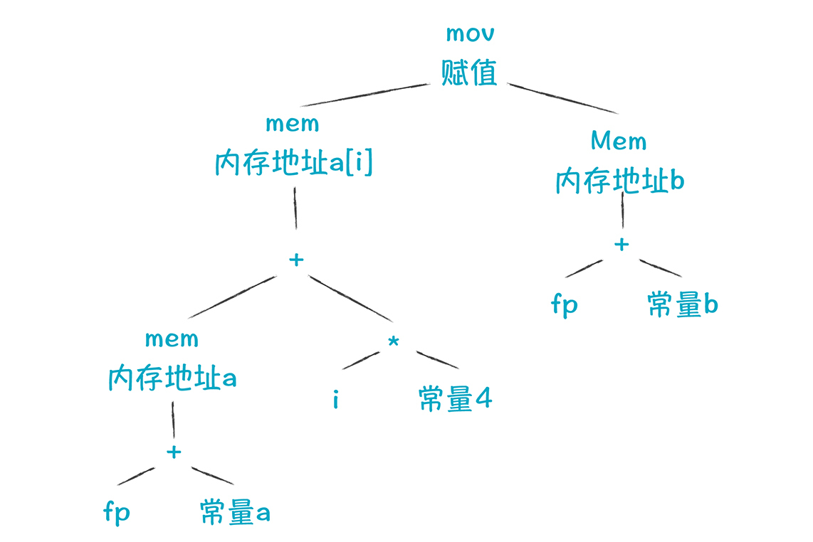
你可能觉得这棵树看着像AST，但又不大像，那是因为里面有mem节点（意思是存入内存）、mov节点、栈指针(fp)。它可以算作低级（low-level）AST，是一种IR的表达方式，有时被称为结构化IR。这个AST里面包含了丰富的运行时的细节信息，相当于把LLVM的IR用树结构来表示了。你可以把一个基本块的指令都画成这样的树状结构。
基于这棵树，我们可以翻译成汇编代码：
load M[fp+a], r1 //取出数组开头的地址，放入r1，fp是栈桢的指针，a是地址的偏移量
addi 4, r2 //把4加载到r2
mul ri, r2 //把ri的值乘到r2上，即i*4，即数组元素的偏移量，每个元素4字节
add r2, r1 //把r2加到r1上，也就是算出a[i]的地址
load M[fp+b], r2 //把b的值加载到r2寄存器
store r2, M[r1] //把r2写入地址为r1的内存
在这里，我用了一种假想的汇编代码，跟LLVM IR有点儿像，但更简化、易读：
注意，我们生成的汇编代码还是比较精简的。如果采用比较幼稚的方法，逐个树节点进行翻译，代码会很多，你可以手工翻译试试看。
用树覆盖的方法可以大大减少代码量，其中用橙色的线包围的部分被形象地叫做一个瓦片(tiling)，那些包含了操作符的瓦片，就可以转化成一条指令。每个瓦片可以覆盖多个节点，所以生成的指令比较少。
那我们是用什么来做瓦片的呢？原来，每条机器指令，都会对应IR的一些模式（Pattern），可以表示成一些小的树，而这些小树就可以当作瓦片：
我们的算法可以遍历AST，遇到上面的模式，就可以生成对应的指令。以load指令为例，它有几个模式：任意一个节点加上一个常量就行，这相当于汇编语言中的间接地址访问；或者mem下直接就是一个常量就行，这相当于是直接地址访问。最后，地址值还可以由下级子节点计算出来。
所以，从一棵AST生成代码的过程，就是用上面这些小树去匹配一棵大树，并把整个大树覆盖的过程，所以叫做树覆盖算法。2、4、5、6、8、9这几个节点依次生成汇编代码。
要注意的是，覆盖方式可能会有多个，比如下面这个覆盖方式，相比之前的结果，它在8和9两个瓦片上是有区别的：

生成的汇编代码最后两句也不同：
load M[fp+a], r1 //取出数组开头的地址，放入r1，fp是栈桢的指针，a是地址的偏移量
addi 4, r2 //把4加载到r2
mul ri, r2 //把ri的值乘到r2上，即i*4，即数组元素的偏移量，每个元素4字节
add r2, r1 //把r2加到r1上，也就是算出a[i]的地址
addi fp+b, r2 //把fp+b的值加载到r2寄存器
movm M[r2], M[r1] //把地址为r2到值拷贝到地址为r1内存里
你可以体会一下，这两个覆盖方式的差别：
对于瓦片8中的加法运算，一个当做了间接地址的计算，一个就是当成加法；
对于根节点的操作，一个翻译成从store，把寄存器中的b的值写入到内存。一个翻译成movm指令，直接在内存之间拷贝值。至于这两种翻译方法哪种更好，比较总体的性能哪个更高就行了。
到目前为止，你已经直观地了解了为什么要进行指令选择，以及最常用的树覆盖方法了。当然了，树覆盖算法有很多，比如Maximal Munch算法、动态规划算法、树文法等，LLVM也有自己的算法。
简单地说一下Maximal Munch算法。Maximal Munch直译成中文，是每次尽量咬一大口的意思。具体来说，就是从树根开始，每次挑一个能覆盖最多节点的瓦片，这样就形成几棵子树。对每棵子树也都用相同的策略，这样会使得生成的指令是最少的。注意，指令的顺序要反过来，按照深度优先的策略，先是叶子，再是树根。这个算法是Optimal的算法。
Optimal被翻译成最佳，我不太赞正这种翻译方法，翻译成“较优”会比较合适，它指的是在局部，相邻的两个瓦片不可能连接成代价更低的瓦片。覆盖算法除了Optimal的还有Optimum的，Optimum是全局最优化的状态，就是代码总体的代价是最低的。
关于其他算法的细节在本节课就不展开了，因为根据我的经验，在学指令选择时，最重要的还是建立图形化的、直观的理解，理解什么是瓦片，如何覆盖会得到最优的结果。
接下来，我们继续探讨开篇提到的第二个问题：寄存器分配。
分配寄存器
寄存器优化的任务是：最大程度地利用寄存器，但不要超过寄存器总数量的限制。
因为我们生成IR时，是不知道目标机器的信息的，也就不知道目标机器到底有几个寄存器可以用，所以我们在IR中可以使用无限个临时变量，每个临时变量都代表一个寄存器。
现在既然要生成针对目标机器的代码，也就知道这些信息了，那么就要把原来的IR改写一下，以便使用寄存器时不超标。
那么寄存器优化的原理是什么呢？我用一个例子带你了解一下。
下图左边的IR中，a、d、f这三个临时变量不会同时出现。假设a和d在这个代码块之后成了死变量，那么这三个变量可以共用同一个寄存器，就像右边显示的那样：
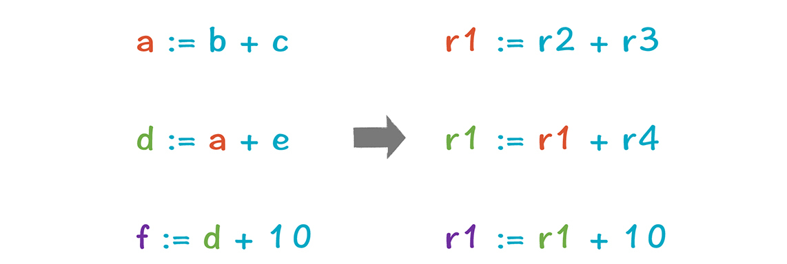
实际上，这三行代码是对“b + c + e + 10”这个表达式的翻译，所以a和d都是在转换为IR时引入的中间变量，用完就不用了。这和在23讲，我们把8个参数以及一个本地变量相加时，只用了一个寄存器来一直保存累加结果，是一样的。
所以，通过这个例子，你可以直观地理解寄存器共享的原则：如果存在两个临时变量a和b，它们在整个程序执行过程中，最多只有一个变量是活跃的，那么这两个变量可以共享同一个寄存器。
在27和28讲中，你已经学过了如何做变量的活跃性分析，所以你可以很容易分析出，在任何一个程序点，活跃变量的集合。然后，你再看一下，哪些变量从来没有出现在同一个集合中就行。看看下面的这个图：
上图中，凡是出现在同一个花括号里的变量，都不能共享寄存器，因为它们在某个时刻是同时活跃的。那a到f，哪些变量从来没碰到过呢？我们再画一个图来寻找一下。
下图中，每个临时变量作为一个节点，如果两个变量同时存在过，就画一条边。这样形成的图，叫做寄存器干扰图(Register Interference Graph, RIG)。在这张图里，凡是没有连线的两个变量，就可以分配到同一个寄存器，例如，a和b，b和d，a和d，b和e，a和e。
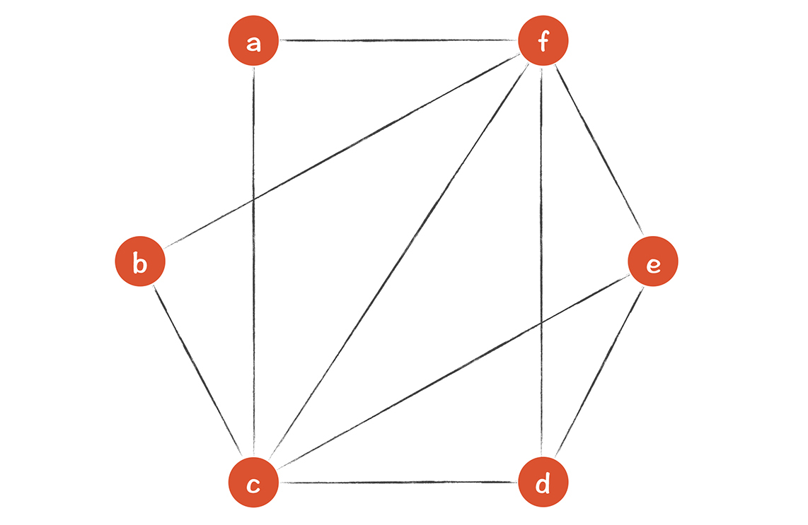
那么问题来了：针对这个程序，我们一共需要几个寄存器？怎么分配呢？
一个比较常用的算法是图染色算法：只要两个节点之间有连线，节点就染成不同的颜色。最后所需要的最少颜色，就是所需要的寄存器的数量。我画了两个染色方案，都是需要4种颜色：

不过我们是手工染色的，那么如何用算法来染色呢？假如一共有4个寄存器，我们想用算法知道寄存器是否够用？应该如何染色？
染色算法很简单。如果想知道k个寄存器够不够用，你只需要找到一个少于k条边的节点，把它从图中去掉。接着再找下一个少于k条边的节点，再去掉。如果最后整个图都被删掉了，那么这个图一定可以用k种颜色来染色。
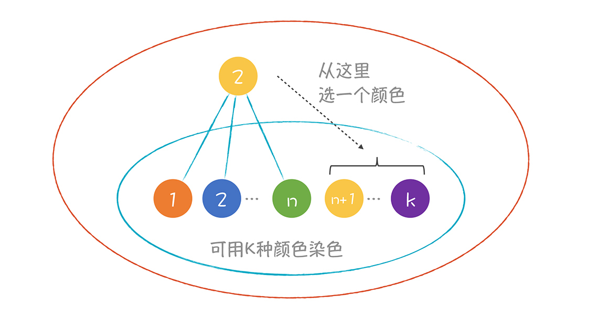
为什么呢？因为如果一个图（蓝色边的）是能用k种颜色染色的，那么再加上一个节点，它的边的数量少于k个，比如是n，那么这个大一点儿的图（橙色边的）还是可以用k种颜色染色的。道理很简单，因为加进来的节点的边数少于k个，所以一定能找到一个颜色，与这个点的n个邻居都不相同。
所以，我们把刚才一个个去掉节点的顺序反过来，把一个个节点依次加到图上，每加上一个，就找一个它的邻居没有用的颜色来染色就行了。整个方法简单易行。
但是，如果所需要寄存器比实际寄存器的数量多，该怎么办呢？当然是用栈了。这个问题就是寄存器溢出（Register Spilling），溢出到栈里去，我在21讲关于运行时机制时提到过，像本地变量、参数、返回值等，都尽量用寄存器，如果寄存器不够用，那就放到栈里。另外再说一下，无论放在寄存器里，还是栈里，都是活动记录的组成部分，所以活动记录这个概念比栈桢更广义。
还是拿上面的例子来说，如果只有3个寄存器，那么要计算一下3个寄存器够不够用。我们先把a和b从图中去掉：

这时你发现，剩下的4个节点，每个节点都有3个邻居。所以，3个寄存器肯定不够用，必须要溢出一个去。我们可以选择让f保存在栈里，把f去掉以后，剩下的c，d，e可以用3种颜色成功染色。
这就结束了吗？当然没有。f虽然被保存到了栈里，但每次使用它的时候，都要load到一个临时变量，也就是寄存器中。每次保存f，也都要用一个临时变量写入到内存。所以，我们要把原来的代码修改一下，把每个使用f的地方，都加上一条load或save指令，以便在使用f的时候把f放到寄存器，用完后再写回内存。修改后的CFG如下：
因为原来有4个地方用到了f，所以我们引入了f1到f4四个临时变量。这样的话，总的临时变量反而变多了，从6个到了9个。不过没关系，虽然临时变量更多了，但这几个临时变量的生存期都很短，图里带有f的活跃变量集合，比之前少多了。所以，即使有9个临时变量，也能用三种颜色染色，如下图所示：
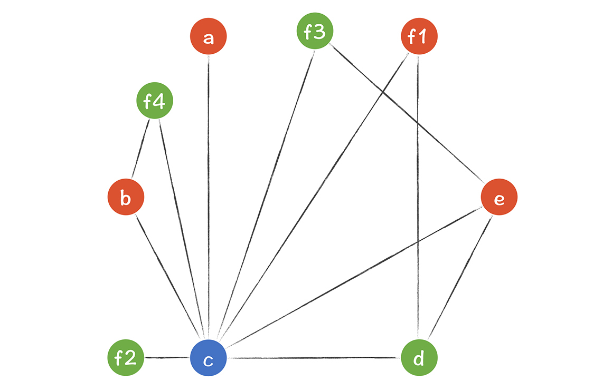
最后，在选择把哪个变量溢出的时候，你实际上是要有所选择的。你最好选择使用次数最少的变量。在程序内循环中的变量，就最好不要溢出，因为每次循环都会用到它们，还是放在寄存器里性能更高。
目前为止，代码生成中的第二项重要工作，分配寄存器就概要地讲完了。我留给你一段时间消化本节课的内容，在下一讲，我会接着讲指令重排序和LLVM的实现。
课程小结
目标代码生成过程中有三个关键知识点：指令选择、寄存器分配和指令重排序，本节课，我讲了前两个，期望能帮你理解这两个问题的实质，让你对指令选择和寄存器分配这两个问题建立直观理解。这样你再去研究不同的算法时，脑海里会有这两个概念的顶层的、图形化的认识，事半功倍。与此同时，本节课我希望你记住几个要点如下：
相同的IR可以由不同的机器指令序列来实现。你要理解瓦片为什么长那个样子，并且在大脑里建立用瓦片覆盖一棵AST的直观印象，最好具备多种覆盖方式，从而把这个问题由抽象变得具象。
寄存器分配是编译器必须要做的一项工作，它把可以使用无限多寄存器的IR，变成了满足物理寄存器数量的IR，超出的要溢出到内存中保管。染色算法是其中一个可行的算法。
一课一思
关于指令选择，你是否知道其他的例子，让同一个功能可以用不同的指令实现？欢迎在留言区分享你的经验。
最后，感谢你的阅读，如果这篇文章让你有所收获，也欢迎你将它分享给更多的朋友。
30 目标代码的生成和优化（二）：如何适应各种硬件架构？
前一讲，我带你了解了指令选择和寄存器分配，本节课我们继续讲解目标代码生成的，第三个需要考虑的因素：指令重排序（Instruction Scheduling）。
我们可以通过重新排列指令，让代码的整体执行效率加快。那你可能会问了：就算重新排序了，每一条指令还是要执行啊？怎么就会变快了呢？
别着急，本节课我就带你探究其中的原理和算法，来了解这个问题。而且，我还会带你了解LLVM是怎么把指令选择、寄存器分配、指令重排序这三项工作组织成一个完整流程，完成目标代码生成的任务的。这样，你会对编译器后端的代码生成过程形成完整的认知，为正式做一些后端工作打下良好的基础。
首先，我们来看看指令重排序的问题。
指令重排序
如果你有上面的疑问，其实是很正常的。因为我们通常会把CPU看做一个整体，把CPU执行指令的过程想象成，依此检票进站的过程，改变不同乘客的次序，并不会加快检票的速度。所以，我们会自然而然地认为改变顺序并不会改变总时间。
但当我们进入CPU内部，会看到CPU是由多个功能部件构成的。下图是Ice Lake微架构的CPU的内部构成（从Intel公司的技术手册中获取）：

在这个结构中，一条指令执行时，要依次用到多个功能部件，分成多个阶段，虽然每条指令是顺序执行的，但每个部件的工作完成以后，就可以服务于下一条指令，从而达到并行执行的效果。这种结构叫做流水线（pipeline）结构。我举例子说明一下，比如典型的RISC指令在执行过程会分成前后共5个阶段。
- IF：获取指令；
- ID（或RF）：指令解码和获取寄存器的值；
- EX：执行指令；
- ME（或MEM）：内存访问（如果指令不涉及内存访问，这个阶段可以省略）；
- WB：写回寄存器。
对于CISC指令，CPU的流水线会根据指令的不同，分成更多个阶段，比如7个、10个甚至更多。
在执行指令的阶段，不同的指令也会由不同的单元负责，我们可以把这些单元叫做执行单元，比如，Intel的Ice Lake架构的CPU有下面这些执行单元：

其他执行单元还有：BM、Vec ALU、Vec SHFT、Vec Add、Vec Mul、Shuffle等。
因为CPU内部存在着多个功能单元，所以在同一时刻，不同的功能单元其实可以服务于不同的指令，看看下面这个图；

这样的话，多条指令实质上是并行执行的，从而减少了总的执行时间，这种并行叫做指令级并行：

如果没有这种并行结构，或者由于指令之间存在依赖关系，无法并行，那么执行周期就会大大加长：

我们来看一个实际的例子。
为了举例子方便，我们做个假设：假设load和store指令需要3个时钟周期来读写数据，add指令需要1个时钟周期，mul指令需要2个时钟周期。
图中橙色的编号是原来的指令顺序，绿色的数字是每条指令开始时的时钟周期，你把每条指令的时钟周期累计一下就能算出来。最后一条指令开始的时钟周期是20，该条指令运行需要3个时钟周期，所以在第22个时钟周期执行完所有的指令。右边是重新排序后的指令，一共花了13个时钟周期。这个优化力度还是很大的！

仔细看一下左边前两条指令，这两条指令的意思是：先加载数据到寄存器，然后做一个加法。但加载需要3个时钟周期，所以add指令无法执行，只能干等着。
右列的前三条都是load指令，它们之间没有数据依赖关系，我们可以每个时钟周期启动一个，到了第四个时钟周期，每一条指令的数据已经加载完毕，所以就可以执行加法运算了。
我们可以把右边的内容画成下面的样子，你能看到，很多指令在时钟周期上是重叠的，这就是指令级并行的特点。

当然了，不是所有的指令都可以并行，最后的3条指令就是顺序执行的，导致无法并行的原因有几个：
- 数据依赖约束
如果后一条指令要用到前一条指令的结果，那必须排在它后面，比如下面两条指令：add和mul。
对于第二条指令来说，除了获取指令的阶段（IF）可以和第一条指令并行以外，其他阶段需要等第一条指令的结果写入r1，第二条指令才可以使用r1的值继续运行。
add r2, r1
mul r3, r1
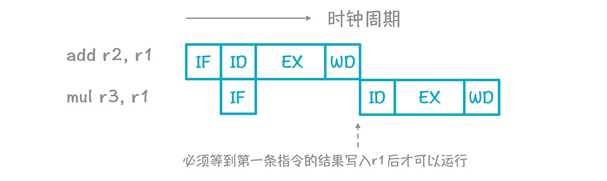
- 功能部件约束
如果只有一个乘法计算器，那么一次只能执行一条乘法运算。
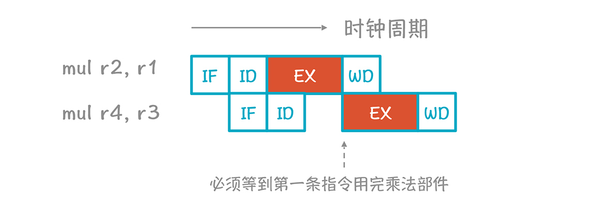
- 指令流出约束
指令流出部件一次流出n条指令。
- 寄存器约束
寄存器数量有限，指令并行时使用的寄存器不可以超标。
后三者也可以合并成为一类，称作资源约束。
在数据依赖约束中，如果有因为使用同一个存储位置，而导致不能并行的，可以用重命名变量的方式消除，这类约束被叫做伪约束。而先写再写，以及先读后写是伪约束的两种呈现方式：
先写再写：如果指令A写一个寄存器或内存位置，B也写同一个位置，就不能改变A和B的执行顺序，不过我们可以修改程序，让A和B写不同的位置。
先读后写：如果A必须在B写某个位置之前读某个位置，那么不能改变A和B的执行顺序。除非能够通过重命名让它们使用不同的位置。
以上就是指令重排序的原理，掌握这个原理你就明白为什么重排序可以提升性能了，不过明白原理之后，我们还有能够用算法实现出来才行。
用算法排序的关键点，是要找出代码之间的数据依赖关系。下图展现了示例中各行代码之间的数据依赖，可以叫做数据的依赖图（dependence graph）。它的边代表了值的流动，比如a行加载了一个数据到r1，b行利用r1来做计算，所以b行依赖a行，这个图也可以叫做优先图（precedence graph），因为a比b优先，b比d优先。
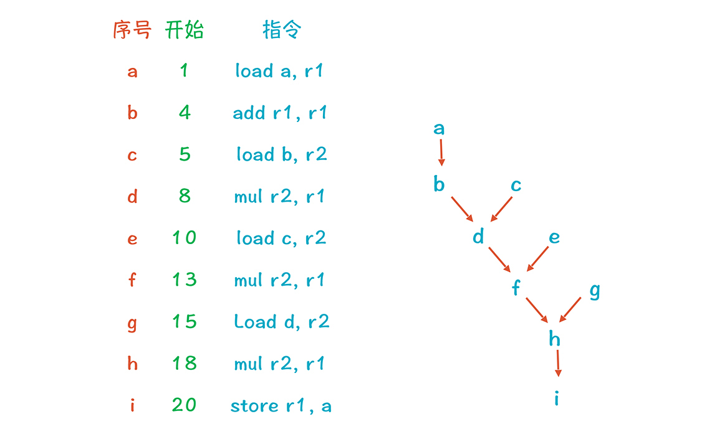
我们可以给图中的每个节点再加上两个属性，利用这两个属性，就可以对指令进行排序了：
- 一是操作类型，因为这涉及它所需要的功能单元。
- 二是时延属性，也就是每条指令所需的时钟周期。
图中的a、c、e、g是叶子，它们没有依赖任何其他的节点，所以尽量排在前面。b、d、f、h必须出现在各自所依赖的节点后面。而根节点i，总是要排在最后面。
根据时延属性，我们计算出了每个节点的累计时延（每个节点的累计时延等于父节点的累计时延加上本节点的时延）。其中a-b-d-f-h-i 路径是关键路径，代码执行的最少时间就是这条路径所花的时钟周期之和。
因为a在关键路径上，所以首先考虑把a节点排在第1行。

剩下的树中，c-d-f-h-i变成了关键路径，因为c的累计时延最大。c节点可以排在第2行。

b和e的累计时延都是最长的，但由于b必须在a执行完毕后，才会开始执行，所以最好等够a的3个时钟周期，否则还是会空等，所以先不考虑b，而是把e放到第3行。

继续按照这个方式排，最后可以获得a-c-e-b-d-g-f-h-i的指令序列。不过这个代码其实还可以继续优化：也就是发现并消除其中的伪约束。
c和e都向r2里写了值，而d使用的是c写入的值。如果修改变量名称，比如让e使用r3寄存器，我们就可以去掉e跟d，以及e与c之间伪约束，让e就可以排在c和d之前。同理，也可以让g使用r4寄存器，使得g可以排在e和f的前面。当然了，在这个示例中，这种改变并没有减少总的时间消耗，因为关键路径上的依赖没有变化，它们都使用了r1寄存器。但在别的情况下，就有可能带来更大的优化。
我们刚才其实是采用了一种最常见的算法，List Scheduling算法，大致分为4步：
1.把变量重命名来消除伪约束（可选步骤）。- 2.创建依赖图。- 3.为每行代码计算优先值（计算方法可以有很多，比如我们示例中基于最长时延的方法就是一种）。- 4.迭代处理代码并排序。
除了List Scheduling算法以外，还有其他的算法，这里我就不展开了。不过，讲到算法时，我们需要考虑算法的复杂度。前一讲讲算法时，我没有提这个问题，是想在这里集中讲一下。
这两节课中，关于指令选择、寄存器分配和指令重排序的算法，其难度（时间复杂度）都是“NP-完全”的。“NP-完全”是什么意思呢？也就是这类问题找不到一个随规模（代码行数）计算量增长比较慢的算法（多项式时间算法）来找到最优解。反之，有可能计算量会随着代码行数呈指数级上升。因此，编译原理中的一些难度最高的算法，都在代码生成这一环。
当然了，找最优解太难，我们可以退而求其次，找一个次优解。就比如我们用地图软件导航的时候，没必要要求导航路径每次都是找到最短的。这时，就会有比较简单的算法，计算量不会随规模增长太快，但结果还比较理想。我们这两讲的算法都是这个性质的。
到目前为止，我带你了解了目标代码生成的三大考虑因素：指令选择、寄存器分配和指令重排序。现在，我们来看看目标代码生成，在LLVM中是如何实现的，这样，你能从概念过渡到实操，从而把知识点掌握得更加扎实。
LLVM的实现
LLVM的后端需要多个处理步骤来生成目标代码：

图中橙色的部分是重要的步骤，它本身包含了多个Pass，所以也叫做超级Pass。图中蓝框的Pass，是用来做一些额外的优化处理（关于LLVM的Pass机制，我在27讲提到过，如果你忘记了，可以回顾一下）。
接下来，我来讲解一下LLVM生成目标代码的关键步骤。
- 指令选择
LLVM的指令选择算法是基于DAG（有向无环图）的树模式匹配，与前一讲基于AST的算法有一些区别，但总思路是一致的（具体算法描述可以参见这篇论文）。这个算法是Near-Optimal（接近Optimal）的，能够在线性的时间内完成指令的选择，并且它特别关注产生的代码的尺寸，要求尺寸足够小。
DAG是融合了公共子表达式的AST，也是一种结构化的IR。下面两行代码对应的AST和DAG分如图所示，你能看到，DAG把a=5这棵子树给融合了：
a = 5
b = (2 + a）+ (a * 3)

LLVM把内存中的IR模型，转化成了一个体现了某个目标平台特征的SelectionDAG，用于做指令选择。每个基本块转化成一个DAG，DAG中的节点通常代表指令，边代表指令之间的数据流动。
在这个阶段之后，LLVM会把DAG中的LLVM IR节点，全部转换成目标机器的节点，代表目标机器的指令，而不是LLVM的指令。
- 指令排序（寄存器分配之前）
基于前一步的处理结果，我们要对指令进行排序。但因为DAG不能反映没有依赖关系的节点之间的排序，所以LLVM要先把DAG转换成一种三地址模式，这个格式叫做MachineInstr。这个阶段会把指令排序，并尽量发挥指令级并行的能力。
- 寄存器分配
接下来做寄存器的分配。LLVM的IR支持无限多的寄存器，在这个环节要分配到实际的寄存器上，分配不下的就溢出到内存。
- 指令排序（寄存器分配之后）
分配完寄存器之后，LLVM会再做一次指令排序。因为寄存器分配，会指定确定的寄存器，而访问不同的寄存器的时钟周期，可能是不同的。对于溢出到内存中的变量，也增加了一些指令在内存和寄存器之间传输数据。利用这些信息，LLVM可以进一步优化指令的排序。
- 代码输出
做完上面的所有工作后，就可以输出目标代码了。
LLVM在这一步把MachineInstr格式转换为MCInst格式，因为后者更有利于汇编器和链接器输出汇编代码或二进制目标代码。
在这里，我想延伸一下，和你探讨一个问题：如果现在有一个新的CPU架构，要实现一个崭新的后端，来支持各种语言，应该怎么做。
在我国大力促进芯片研发的背景下，这是一个值得探讨的问题，新芯片需要编译器的支持才可以呀。你要实现各种指令选择的算法、寄存器分配的算法、指令排序的算法来反映这款CPU的特点。
对于这个难度颇高的任务，LLVM的TableGen模块会给你提供很大的帮助。这个模块能够帮助你为某个新的CPU架构快速生成后端。你可以用一系列配置文件定义你的CPU架构的特征，比如寄存器的数量、指令集等等。
一旦你定义了这些信息，TableGen模块就能根据这些配置信息，生成各种算法，如指令选择器、指令排序器、一些优化算法等等。这就像编译器前段工具可以帮你生成词法分析器，和语法分析器一样，能够大大降低开发一个新后端的工作量，所以说，把LLVM研究透彻，会有助于你在这样的重大项目中发挥重要作用。
课程小结
本节课，我讲解了目标代码生成的第三个主题：指令重排序。
要理解这个主题，你首先要知道CPU内部是分成多个功能部件的，要知道一条指令的执行过程中，指令获取、解码、执行、访问数据都是如何发生的，这样你会知道指令级并行的原理。
其次，从算法角度，你要知道List Scheduling的步骤，掌握基于最大时延的优先级计算策略。有了这个基础之后，你可以进一步地研究其他算法。
我想强调的是，指令选择、寄存器分配、指令重排序这三个领域的算法，都是“NP-完全”的，所以寻找优化的算法，是这个领域最富有挑战的任务。要研究清楚这些算法，你需要阅读相关的资料，比如本讲推荐的论文和其他该领域的经典论文。
另外，我建议你阅读CPU厂商的手册，因为只有手册才会提供相关CPU的具体信息，解答你对技术细节的一些疑惑。比如网上曾经有人提问说：为什么mov指令要用到ALU部件？这个其实看一下手册就知道了。
最后，我带你了解了LLVM是如何做这些后端工作的，这样可以加深你对代码生成这部分知识的了解。
一课一思
为了方便教学，本讲的示例用的时延值都比较少，这其实是不符合实际的。假设我们忽略指令获取和解码的阶段，只考虑执行和写入寄存器两个阶段，这时候add指令需要3个时钟周期（2个执行，1个写寄存器），mul指令也需要3个时钟周期，那么会对示例代码的排序产生什么影响呢？你可以实际推演一下，这对于你理解指令重排序的算法会很有帮助。
最后，感谢你的阅读，如果这篇文章让你有所收获，也欢迎你将它分享给更多的朋友。
31 内存计算：对海量数据做计算，到底可以有多快？
内存计算是近十几年来，在数据库和大数据领域的一个热点。随着内存越来越便宜，CPU的架构越来越先进，整个数据库都可以放在内存中，并通过SIMD和并行计算技术，来提升数据处理的性能。
我问你一个问题：做1.6亿条数据的汇总计算，需要花费多少时间呢？几秒？几十秒？还是几分钟？如果你经常使用数据库，肯定会知道，我们不会在数据库的一张表中保存上亿条的数据，因为处理速度会很慢。
但今天，我会带你采用内存计算技术，提高海量数据处理工作的性能。与此同时，我还会介绍SIMD指令、高速缓存和局部性、动态优化等知识点。这些知识点与编译器后端技术息息相关，掌握这些内容，会对你从事基础软件研发工作，有很大的帮助。
了解SIMD
本节课所采用的CPU，支持一类叫做SIMD（Single Instruction Multiple Data）的指令，它的字面意思是：单条指令能处理多个数据。相应的，你可以把每次只处理一个数据的指令，叫做SISD（Single Instruction Single Data）。
SISD使用普通的寄存器进行操作，比如加法：
addl $10, %eax
这行代码是把一个32位的整型数字，加到%eax寄存器上（在x86-64架构下，这个寄存器一共有64位，但这个指令只用它的低32位，高32位是闲置的）。
这种一次只处理一个数据的计算，叫做标量计算；一次可以同时处理多个数据的计算，叫做矢量计算。它在一个寄存器里可以并排摆下4个、8个甚至更多标量，构成一个矢量。图中ymm寄存器是256位的，可以支持同时做4个64位数的计算（xmm寄存器是它的低128位）。

如果不做64位整数，而做32位整数计算，一次能计算8个，如果做单字节（8位）数字的计算，一次可以算32个！

1997年，Intel公司推出了奔腾处理器，带有MMX指令集，意思是多媒体扩展。当时，让计算机能够播放多媒体（比如播放视频），是一个巨大的进步。但播放视频需要大量的浮点计算，依靠原来CPU的浮点运算功能并不够。
所以，Intel公司就引入了MMX指令集，和容量更大的寄存器来支持一条指令，同时计算多个数据，这是在PC上最早的SIMD指令集。后来，SIMD又继续发展，陆续产生了SSE（流式SIMD扩展）、AVX（高级矢量扩展）指令集，处理能力越来越强大。
2017年，Intel公司发布了一款至强处理器，支持AVX-512指令（也就是它的一个寄存器有512位）。每次能处理8个64位整数，或16个32位整数，或者32个双精度数、64个单精度数。你想想，一条指令顶64条指令，几十倍的性能提升，是不是很厉害！
那么你的电脑是否支持SIMD指令？又支持哪些指令集呢？在命令行终端，打下面的命令，你可以查看CPU所支持的指令集。
sysctl -a | grep features | grep cpu //macOs操作系统
cat /proc/cpuinfo //Linux操作系统
现在，想必你已经知道了SIMD指令的强大之处了。而它的实际作用主要有以下几点：
SIMD有助于多媒体的处理，比如在电脑上流畅地播放视频，或者开视频会议；
在游戏领域，图形渲染主要靠GPU，但如果你没有强大的GPU，还是要靠CPU的SIMD指令来帮忙；
在商业领域，数据库系统会采用SIMD来快速处理海量的数据；
人工智能领域，机器学习需要消耗大量的计算量，SIMD指令可以提升机器学习的速度。
你平常写的程序，编译器也会优化成，尽量使用SIMD指令来提高性能。
所以，我们所用到的程序，其实天天在都在执行SIMD指令。
接下来，我来演示一下如何使用SIMD指令，与传统的数据处理技术做性能上的对比，并探讨如何在编译器中生成SIMD指令，这样你可以针对自己的项目充分发挥SIMD指令的优势。
Intel公司为SIMD指令提供了一个标准的库，可以生成SIMD的汇编指令。我们写一个简单的程序（参考simd1.c）来对两组数据做加法运算，每组8个整数：
#include <stdio.h>
#include "immintrin.h"
void sum(){
//初始化两个矢量 ，8个32位整数
__m256i a=_mm256_set_epi32(20,30,40,60,342,34523,474,123);
__m256i b=_mm256_set_epi32(234,234,456,78,2345,213,76,88);
//矢量加法
__m256i sum=_mm256_add_epi32(a, b);
//打印每个值
int32_t* s = (int32_t*)∑
for (int i = 0; i< 8; i++){
printf("s[%d] : %d\n", i, s[i]);
}
}
把矢量加法运算翻译成汇编语言的话，采用的指令是vpaddd（其中的p是pack的意思，对一组数据操作）。寄存器的名字是ymm（y开头意思是256位的）。
vpaddd %ymm0, %ymm1, %ymm0
在这个示例中，我们构建了两个矢量数据，这个计算很简单。接下来，我们挑战一个有难度的题目：把1.6亿个64位的整数做加法！
1.6亿个64位整数要占据大约1.2G的内存，你要把这1.2G的数据全部汇总一遍！要实现这个功能，你首先要申请一块1.2G大小的内存，并且要是32位对齐的（因为后面加载数据到寄存器的指令需要内存对齐，这样加载速度更快）。
unsigned totalNums = 160000000;
//申请一块32位对齐的内存。
//注意：aligned_alloc函数C11标准才支持
int64_t * nums = aligned_alloc(32, totalNums * sizeof(int64_t));
//初始化sum值
__m256i sum=_mm256_setzero_si256();
__m256i * vectorptr = (__m256i *) nums;
for (int i = 0; i < totalNums/4; i++) {
//从内存加载256位进来
__m256i a = _mm256_load_si256(vectorptr+i);
//矢量加法
sum=_mm256_add_epi64(sum,a);
}
完整的代码见simd2.c。
最后，要用下面的命令，编译成可执行文件（-mavx2参数是告诉编译器，要使用CPU的AVX2特性）：
gcc -mavx2 simd2.c -o simd2
或
clang -mavx2 simd2.c -o simd2
你可以运行一下，看看用了多少时间。
我的MacBook Pro大约用了0.15秒。注意，这还是只用了一个内核做计算的情况。我提供的simd3.c示例程序，是计算1.6亿个双精度浮点数，所用的时间也差不多，都是亚秒级。而计算速度之所以这么快，主要有两个原因：
- 采用了SIMD；
- 高速缓存和数据局部性所带来的帮助。
我们先把SIMD讨论完，然后再讨论高速缓存和数据局部性。
矢量化功能可以一个指令当好几个用，但刚才编写的SIMD示例代码使用了特别的库，这些库函数本身就是用嵌入式的汇编指令写的，所以，相当于我们直接使用了SIMD的指令。
如果我们不调用这几个库，直接做加减乘除运算，能否获得SIMD的好处呢？也可以。不过要靠编译器的帮助，所以，接下来来看看LLVM是怎样帮我们使用SIMD指令的。
LLVM的自动矢量化功能（Auto-Vectorization）
各个编译器都在自动矢量化功能上下了功夫，以LLVM为例，它支持循环的矢量化（Loop Vectorizer）和SLP矢量化功能。
循环的矢量化很容易理解。如果我们处理一个很大的数组，肯定是顺序读取内存的，就如loop1()函数的代码：
int loop1(int totalNums, int * nums){
int sum = 0;
for (int i = 0; i< totalNums; i++){
sum += nums[i];
}
return sum;
}
不过，如果你用不同的参数去生成汇编代码，结果会不一样：
- clang -S loop.c -o loop-scalar.s
这是最常规的汇编代码，老老实实地用add指令和%eax寄存器做加法。
- clang -S -O2 loop.c -o loop-O2.s
它在使用paddd指令和xmm寄存器，这已经在使用SIMD指令了。
- clang -S -O2 -fno-vectorize loop.c -o loop-O2-scalar.s
这次带上了-O2参数，要求编译器做优化，但又带上了-fno-vectorize参数，要求编译器不要通过矢量化做优化。那么生成的代码会是这个样子：
addl (%rsi,%rdx,4), %eax
addl 4(%rsi,%rdx,4), %eax
addl 8(%rsi,%rdx,4), %eax
addl 12(%rsi,%rdx,4), %eax
addl 16(%rsi,%rdx,4), %eax
addl 20(%rsi,%rdx,4), %eax
addl 24(%rsi,%rdx,4), %eax
addl 28(%rsi,%rdx,4), %eax
也就是它一次循环就做了8次加法计算，减少了循环的次数，也更容易利用高速缓存，来提高数据读入的效率，所以会导致性能上的优化。
- clang -S -O2 -mavx2 loop.c -o loop-avx2.s
这次带上-mavx2参数，编译器就会使用AVX2指令来做矢量化，你查看代码会看到对vpaddd指令和ymm寄存器的使用。
其实，在simd2.c中，我们有一段循环语句，对标量数字进行加总。这段代码在缺省的情况下，也会被编译器矢量化（你可以看看汇编代码simd2-O2-avx2.s确认一下）。
在做自动矢量化的时候，编译器要避免一些潜在的问题，看看loop2()函数的代码：
void loop2(int totalNums, int * nums1, int * nums2){
for (int i = 0; i< totalNums; i++){
nums2[i] += nums1[i];
}
}
代码中的nums1和nums2是两个指针，指向内存中的两个整数数组的位置。但我们从代码里看不出nums1和nums2是否有重叠，一旦它们有重叠的话，矢量化的计算结果会出错。
所以，编译程序会生成矢量和标量两个版本的目标代码，在运行时检测nums1和nums2是否重叠，从而判断是否跳转到矢量化的计算代码。从这里你也可以看出：写编译器真的要有工匠精神，要把各种可能性都想到。
实际上，在编译器里有很多这样的实现。你可以将循环次数改为一个常量，看一下loop3()函数，它所生成的汇编代码会根据常量的值做优化，甚至完全不做循环：
int loop3(int * nums){
int sum = 0;
for (int i = 0; i< 160; i++){
sum += nums[i];
}
return sum;
}
除了循环的矢量化器，LLVM还有一个SLP矢量化器，它能在做全局优化时，寻找可被矢量化的代码来做转换。比如下面的代码，对A[0]和A[1]的操作非常相似，可以考虑按照矢量的方式来计算：
void foo(int a1, int a2, int b1, int b2, int *A) {
A[0] = a1*(a1 + b1)/b1 + 50*b1/a1;
A[1] = a2*(a2 + b2)/b2 + 50*b2/a2;
}
所以，LLVM确实在自动矢量化方面做了大量工作。在你设计一个新的编译器的时候，可以充分利用这些已有的成果。否则，在每个优化算法上，你都需要投入大量的精力，还不一定能做得足够稳定。
到目前为止，我们针对SIMD和矢量化谈得足够多了。2011年左右，我第一次做内存计算方面的编程时，被如此快的处理速度吓了一跳。因为如果你经常操作数据库，肯定会知道从数据库里做1.6亿个数据的汇总是什么概念。
一般来说，一张表有上亿条数据之前，我们就已经要做分拆了。大多数情况下，表中的数据要比1.6亿低一个数量级，就算是这样，你对一个有着一两千万行数据表做统计，仍然要花费不少的时间。
而毫不费力地进行海量数据的计算，就是内存计算的魅力。当然了，这里面有高速缓存和局部性的帮助。所以，我们继续讨论一下，跟内存计算有关的第二个问题：高速缓存和局部性。
高速缓存和局部性
我们知道，计算机的存储是分成多个级别的：
- 速度最快的是寄存器，通常在寄存器之间复制数据只需要1个时钟周期。
- 其次是高速缓存，它根据速度和容量分为多个层级，读取所花费的时间从几个时钟周期到几十个时钟周期不等。
- 内存则要用上百到几百个时钟周期。

在图中的存储层次结构中，越往下，存取速度越慢，但是却可以有更大的容量，从寄存器的K级，到高速缓存的M级，到内存的G级，到磁盘的T级（灰色标的数据是Intel公司的Ice Lake架构的CPU的数据）。
一般的计算机指令1到几个时钟周期就可以执行完毕。所以，如果等待内存中读取，获得数据的话，CPU的性能可能只能发挥出1%。不过由于高速缓存的存在，读取数据的平均时间会缩短到几个时钟周期，这样CPU的能力可以充分发挥出来。所以，我在讲程序的运行时环境的时候，让你关注CPU上两个重要的部件：一个是寄存器，另一个就是高速缓存。
在代码里，我们会用到寄存器，并且还会用专门的寄存器分配的算法来优化寄存器。可是对于高速缓存，我们没有办法直接控制。
因为当你用mov指令从内存中，加载数据到寄存器时，或者用add指令把内存中的一个数据，加到寄存器中，一个已有的值上面时，CPU会自动控制是从内存里取，还是在高速缓存中取，并控制高速缓存的刷新。
那我们有什么办法呢？答案是提高程序的局部性（locality），这个局部性又分为两个：
一是时间局部性。一个数据一旦被加载到高速缓存甚至寄存器，我们后序的代码都能集中访问这个数据，别等着这个数据失效了再访问，那就又需要从低级别的存储中加载一次。
第二个是空间局部性。当我们访问了一条数据之后，很可能马上访问跟这个数据挨着的其他数据。CPU在一次读入数据的时候，会把相邻的数据都加载到高速缓存，这样会增加后面代码在高速缓存中命中的概率。
提高局部性这件事情，更多的是程序员的责任，编译器能做的事情不多。不过，有一种编译优化技术，叫做循环互换优化（loop interchange optimization）可以让程序更好地利用高速缓存和寄存器。
下面的例子中有内循环和外循环，内循环次数较少，外循环次数很大。如果内循环里的临时变量比较多，需要占用寄存器和高速缓存，那么i就可能被挤掉，等下一次用到i的时候，需要重新从低一级的存储中获取，从而造成性能的降低：
for(i=0; i<1000000; i++)
for(j=0; j<10; j++){
a[i] *= b[i]
...
}
编译器可以把内外层循环交换，这样就提高了局部性：
for(j=0; i<10; j++)
for(i= 0; i<1000000; i++){
a[i] *= b[i]
...
}
不过，在大多数情况下，i和j循环的次数不是一个常量，而是一个变量，在编译时不知道内层循环次数更多还是外层循环。这样的话，可能就需要生成两套代码，在运行时根据情况决定跳转到哪个代码块去执行，这样会导致目标代码的膨胀。
如果不想让代码膨胀，又能获得优化的目标代码，你可以尝试在运行时做动态的优化（也就是动态编译），这也是LLVM的设计目标之一。因为在静态编译期，我们确实没办法知道运行时的信息，从而也没有办法生成最优化的目标代码。
作为一名优秀的程序员，你有责任让程序保持更好的局部性。比如，假设你要设计一个内存数据库，并且经常做汇总计算，那么你会把每个字段的数据按行存储在一起，还是按列存储？当然是后者，因为这样才具备更好的数据局部性。
最后，除了SIMD和数据局部性，促成内存计算这个领域发展的还有两个因素：
多内核并行计算。现在的CPU内核越来越多，特别是用于服务器的CPU。多路CPU几十上百个内核，能够让单机处理能力再次提升几十，甚至上百倍。
内存越来越便宜。在服务器上配置几十个G的内存已经是常规配置，配置上T的内存，也不罕见。这使得大量与数据处理有关的工作，可以基于内存，而不是磁盘。除了要更新数据，几乎可以不访问相对速度很低的磁盘。
在这些因素的共同作用下，内存计算的使用越来越普遍。在你的项目里，你可以考虑采用这个技术，来加速海量数据的处理。
课程小结
本节课，我带你了解了内存计算的特点，以及与编译技术的关系，我希望你能记住几点：
SIMD是一种指令级并行技术，它能够矢量化地一次计算多条数据，从而提升计算性能，在计算密集型的需求中，比如多媒体处理、海量数据处理、人工智能、游戏等领域，你可以考虑充分利用SIMD技术。
充分保持程序的局部性，能够更好地利用计算机的高速缓存，从而提高程序的性能。
SIMD，加上数据局部性，和多个CPU内核的并行处理能力，再加上低价的海量的内存，推动了内存计算技术的普及，它能够同时满足计算密集，和海量数据的需求。
有时候，我们必须在运行期，根据一些数据来做优化，生成更优的目标代码，在编译期不可能做到尽善尽美。
我想强调的是，熟悉编译器的后端技术将会有利于你参与基础平台的研发。如果你想设计一款内存数据库产品，一款大数据产品，或者其他产品，将计算机的底层架构知识，和编译技术结合起来，会让你有机会发挥更大的作用！
一课一思
你是否在自己的领域里使用过内存计算技术？它能带来什么好处？欢迎分享你的观点。
最后，感谢你的阅读，如果这篇文章让你有所收获，也欢迎你将它分享给更多的朋友。
示例代码我放在文末，供你参考。
32 字节码生成：为什么Spring技术很强大？
Java程序员几乎都了解Spring。它的IoC（依赖反转）和AOP（面向切面编程）功能非常强大、易用。而它背后的字节码生成技术（在运行时，根据需要修改和生成Java字节码的技术）就是一项重要的支撑技术。
Java字节码能够在JVM（Java虚拟机）上解释执行，或即时编译执行。其实，除了Java，JVM上的Groovy、Kotlin、Closure、Scala等很多语言，也都需要生成字节码。另外，playscript也可以生成字节码，从而在JVM上高效地运行！
而且，字节码生成技术很有用。你可以用它将高级语言编译成字节码，还可以向原来的代码中注入新代码，来实现对性能的监测等功能。
目前，我就有一个实际项目的需求。我们的一个产品，需要一个规则引擎，解析自定义的DSL，进行规则的计算。这个规则引擎处理的数据量比较大，所以它的性能越高越好。因此，如果把DSL编译成字节码就最理想了。
既然字节码生成技术有很强的实用价值，那么本节课，我就带你掌握它。
我会先带你了解Java的虚拟机和字节码的指令，然后借助ASM这个工具，生成字节码，最后，再实现从AST编译成字节码。通过这样一个过程，你会加深对Java虚拟机的了解，掌握字节码生成技术，从而更加了解Spring的运行机制，甚至有能力编写这样的工具！
Java虚拟机和字节码
字节码是一种二进制格式的中间代码，它不是物理机器的目标代码，而是运行在Java虚拟机上，可以被解释执行和即时编译执行。
在讲后端技术时，我强调的都是，如何生成直接在计算机上运行的二进制代码，这比较符合C、C++、Go等静态编译型语言。但如果想要解释执行，除了直接解释执行AST以外，我没有讲其他解释执行技术。
而目前更常见的解释执行的语言，是采用虚拟机，其中最典型的就是JVM，它能够解释执行Java字节码。
而虚拟机的设计又有两种技术：一是基于栈的虚拟机；二是基于寄存器的虚拟机。
标准的JVM是基于栈的虚拟机（后面简称“栈机”）。
每一个线程都有一个JVM栈，每次调用一个方法都会生成一个栈桢，来支持这个方法的运行。栈桢里面又包含了本地变量数组（包括方法的参数和本地变量）、操作数栈和这个方法所用到的常数。这种栈桢的设计跟之前我们学过C语言的栈桢的结构，其实有很大的相似性，你可以通过21讲回顾一下。
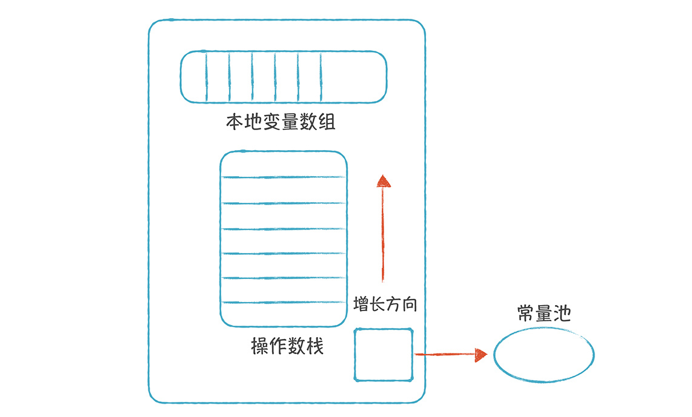
栈机是基于操作数栈做计算的。以“2+3”的计算为例，只要把它转化成逆波兰表达式，“2 3 +”，然后按照顺序执行就可以了。也就是：先把2入栈，再把3入栈，再执行加法指令，这时，要从栈里弹出2个操作数做加法计算，再把结果压入栈。
你可以看出，栈机的加法指令，是不需要带操作数的，就是简单的“iadd”就行，这跟你之前学过的IR都不一样。为什么呢？因为操作数都在栈里，加法操作需要2个操作数，从栈里弹出2个元素就行了。
也就是说，指令的操作数是由栈确定的，我们不需要为每个操作数显式地指定存储位置，所以指令可以比较短，这是栈机的一个优点。
接下来，我们聊聊字节码的特点。
字节码是什么样子的呢？我编写了一个简单的类MyClass.java，其中的foo()方法实现了一个简单的加法计算，你可以看看它对应的字节码是怎样的：
public class MyClass {
public int foo(int a){
return a + 3;
}
}
在命令行终端敲入下面两行命令，生成文本格式的字节码文件：
javac MyClass.java
javap -v MyClass > MyClass.bc
打开MyClass.bc文件，你会看到下面的内容片段：
public int foo(int);
Code:
0: iload_1 //把下标为1的本地变量入栈
1: iconst_3 //把常数3入栈
2: iadd //执行加法操作
3: ireturn //返回
其中，foo()方法一共有四条指令，前三条指令是计算一个加法表达式a+3。这完全是按照逆波兰表达式的顺序来执行的：先把一个本地变量入栈，再把常数3入栈，再执行加法运算。
如果你细心的话，应该会发现：把参数a入栈的第一条指令，用的下标是1，而不是0。这是因为，每个方法的第一个参数（下标为0）是当前对象实例的引用（this）。
我提供了字节码中，一些常用的指令，增加你对字节码特点的直观认识，完整的指令集可以参见JVM的规格书：
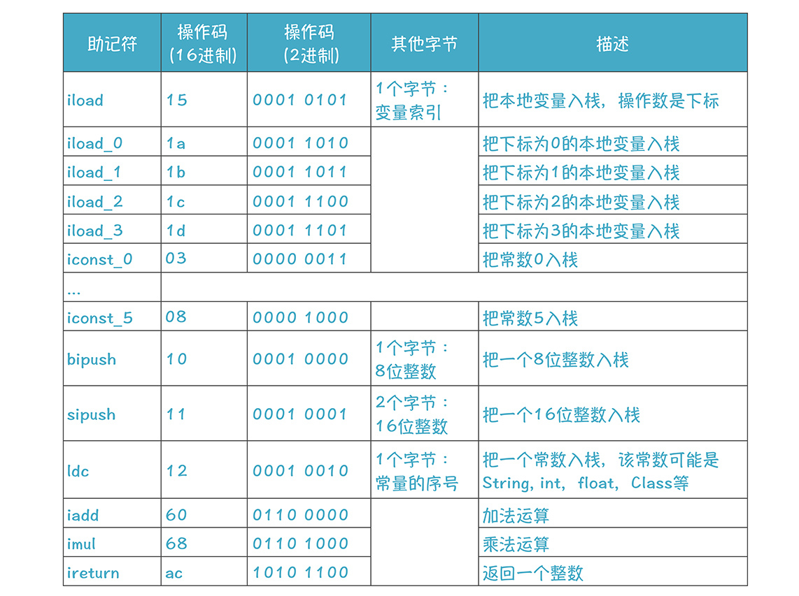
其中，每个指令都是8位的，占一个字节，而且iload_0、iconst_0这种指令，甚至把操作数（变量的下标、常数的值）压缩进了操作码里，可以看出，字节码的设计很注重节省空间。
根据这些指令所对应的操作码的数值，MyClass.bc文件中，你所看到的那四行代码，变成二进制格式，就是下面的样子：

你可以用“hexdump MyClass.class”显示字节码文件的内容，从中可以发现这个片段（就是橙色框里的内容）：

现在，你已经初步了解了基于栈的虚拟机，与此对应的是基于寄存器的虚拟机。这类虚拟机的运行机制跟机器码的运行机制是差不多的，它的指令要显式地指出操作数的位置（寄存器或内存地址）。它的优势是：可以更充分地利用寄存器来保存中间值，从而可以进行更多的优化。
例如，当存在公共子表达式时，这个表达式的计算结果可以保存在某个寄存器中，另一个用到该公共子表达式的指令，就可以直接访问这个寄存器，不用再计算了。在栈机里是做不到这样的优化的，所以基于寄存器的虚拟机，性能可以更高。而它的典型代表，是Google公司为Android开发的Dalvik虚拟机和Lua语言的虚拟机。
这里你需要注意，栈机并不是不用寄存器，实际上，操作数栈是可以基于寄存器实现的，寄存器放不下的再溢出到内存里。只不过栈机的每条指令，只能操作栈顶部的几个操作数，所以也就没有办法访问其它寄存器，实现更多的优化。
现在，你应该对虚拟机以及字节码有了一定的了解了。那么，如何借助工具生成字节码呢？你可能会问了：为什么不纯手工生成字节码呢？当然可以，只不过借助工具会更快一些。
就像你生成LLVM的IR时，也曾获得了LLVM的API的帮助。所以，接下来我会带你认识ASM这个工具，并借助它为我们生成字节码。
字节码生成工具ASM
其实，有很多工具会帮我们生成字节码，比如Apache BCEL、Javassist等，选择ASM是因为它的性能比较高，并且它还被Spring等著名软件所采用。
ASM是一个开源的字节码生成工具。Grovvy语言就是用它来生成字节码的，它还能解析Java编译后生成的字节码，从而进行修改。
ASM解析字节码的过程，有点像XML的解析器解析XML的过程：先解析类，再解析类的成员，比如类的成员变量（Field）、类的方法（Mothod）。在方法里，又可以解析出一行行的指令。
你需要掌握两个核心的类的用法：
- ClassReader，用来解析字节码。
- ClassWriter，用来生成字节码。
这两个类如果配合起来用，就可以一边读入，做一定修改后再写出，从而实现对原来代码的修改。
我们先试验一下，用ClassWriter生成字节码，看看能不能生成一个跟前面示例代码中的MyClass一样的类（我们可以称呼这个类为MyClass2），里面也有一个一模一样的foo函数。相关代码参考genMyClass2()方法，这里只拿出其中一段看一下：
//////创建foo方法
MethodVisitor mv = cw.visitMethod(Opcodes.ACC_PUBLIC, "foo",
"(I)I", //括号中的是参数类型，括号后面的是返回值类型
null, null);
//添加参数a
mv.visitParameter("a", Opcodes.ACC_PUBLIC);
mv.visitVarInsn(Opcodes.ILOAD, 1); //iload_1
mv.visitInsn(Opcodes.ICONST_3); //iconst_3
mv.visitInsn(Opcodes.IADD); //iadd
mv.visitInsn(Opcodes.IRETURN); //ireturn
//设置操作数栈最大的帧数，以及最大的本地变量数
mv.visitMaxs(2,2);
//结束方法
mv.visitEnd();
从这个示例代码中，你会看到两个特点：
ClassWriter有visitClass、visitMethod这样的方法，以及ClassVisitor、MethodVistor这样的类。这是因为ClassWriter用了visitor模式来编程。你每一次调用visitXXX方法，就会创建相应的字节码对象，就像LLVM形成内存中的IR对象一样。
foo()方法里的指令，跟我们前面看到的字节码指令是一样的。
执行这个程序，就会生成MyClass2.class文件。
把MyClass2.class变成可读的文本格式之后，你可以看到它跟MyClass的字节码内容几乎是一样的，只有类名称不同。当然了，你还可以写一个程序调用MyClass2，验证一下它是否能够正常工作。
发现了吗？只要熟悉Java的字节码指令，在ASM的帮助下，你可以很方便地生成字节码！想要了解更多ASM的用法，可以参考它的一个技术指南。
既然你已经能生成字节码了，那么不如趁热打铁，把编译器前端生成的AST编译成字节码，在JVM上运行？因为这样，你就能从前端到后端，完整地实现一门基于JVM的语言了！
将AST编译成字节码
基于AST生成JVM的字节码的逻辑还是比较简单的，比生成针对物理机器的目标代码要简单得多，为什么这么说呢？主要有以下几个原因：
首先，你不用太关心指令选择的问题。针对AST中的每个运算，基本上都有唯一的字节码指令对应，你直白地翻译就可以了，不需要用到树覆盖这样的算法。
你也不需要关心寄存器的分配，因为JVM是使用操作数栈的；
指令重排序也不用考虑，因为指令的顺序是确定的，按照逆波兰表达式的顺序就可以了；
优化算法，你暂时也不用考虑。
按照这个思路，你可以在playscript-java中增加一个ByteCodeGen的类，针对少量的语言特性做一下字节码的生成。最后，我们再增加一点代码，能够加载并执行所生成的字节码。运行下面的命令，可以把bytecode.play示例代码编译并运行。
java play.PlayScript -bc bytecode.play
当然了，我们只实现了playscript的少量特性，不过，如果在这个基础上继续完善，你就可以逐步实现一门完整的，基于JVM的语言了。
Spring与字节码生成技术
我在开篇提到，Java程序员大部分都会使用Spring。Spring的IoC（依赖反转）和AOP（面向切面编程）特性几乎是Java程序员在面试时必被问到的问题，了解Spring和字节码生成技术的关系，能让你在面试时更轻松。
Spring的AOP是基于代理（proxy）的机制实现的。在调用某个对象的方法之前，要先经过代理，在代理这儿，可以进行安全检查、记日志、支持事务等额外的功能。

Spring采用的代理技术有两个：一个是Java的动态代理（dynamic proxy）技术；一个是采用cglib自动生成代理，cglib采用了asm来生成字节码。
Java的动态代理技术，只支持某个类所实现的接口中的方法。如果一个类不是某个接口的实现，那么Spring就必须用到cglib，从而用到字节码生成技术来生成代理对象的字节码。
课程小结
本节课，我主要带你了解了字节码生成技术。字节码生成技术是Java程序员非常熟悉的Spring框架背后所依赖的核心技术之一。如果想要掌握这个技术，你需要对Java虚拟机的运行原理、字节码的格式，以及常见指令有所了解。我想强调的重点如下：
- 运行程序的虚拟机有两种设计：一个是基于栈的；一个是基于寄存器的。
基于栈的虚拟机不用显式地管理操作数的地址，因此指令会比较短，指令生成也比较容易。而基于寄存器的虚拟机，则能更好地利用寄存器资源，也能对代码进行更多的优化。
你要能够在大脑中图形化地想象出栈机运行的过程，从而对它的原理理解得更清晰。
ASM是一个字节码操纵框架，它能帮你修改和生成字节码，如果你有这方面的需求，可以采用这样的工具。
相信有了前几课的基础，你再接触一种新的后端技术时，学习速度会变得很快。学完这节课之后，你可能会觉得：字节码就是另一种IR，而且比LLVM的IR简单多了。如果你有这个感受，那么你已经在脑海里，建立了相关的知识体系，达到了举一反三的效果。
在这里，我也建议Java程序员，多多了解JVM的运行机制，和Java字节码，这样会更好地把握Java语言的底层机制，从而更利于自己职业生涯的发展。
一课一思
你是否想为自己写的语言生成字节码呢？或者生成字节码的技术，能否帮你解决现有项目中的难点问题呢？欢迎在留言区分享你的观点。
最后，感谢你的阅读，如果这篇文章让你有所收获，也欢迎你将它分享给更多的朋友。
示例代码链接，我放在文末，供你参考。
33 垃圾收集：能否不停下整个世界？
对于内存的管理，我们已经了解了栈和栈桢，在编译器和操作系统的配合下，栈里的内存可以实现自动管理。
不过，如果你熟悉C和C++，那么肯定熟悉在堆中申请内存，也知道要小心维护所申请的内存，否则很容易引起内存泄漏或奇怪的Bug。
其实，现代计算机语言大多数都带有自动内存管理功能，也就是垃圾收集（GC）。程序可以使用堆中的内存，但我们没必要手工去释放。垃圾收集器可以知道哪些内存是垃圾，然后归还给操作系统。
那么这里会有几个问题，也是本节课关注的重点：
- 自动内存管理有哪些不同的策略？这些策略各自有什么优缺点？
- 为什么垃圾收集会造成系统停顿？工程师们又为什么特别在意这一点？
相信学完这节课之后，你对垃圾收集的机制理解得会更加深刻，从而在使用Java、Go等带有垃圾收集功能的语言时，可以更好地提升回收效率，减少停顿，提高程序的运行效率。
当然，想要达到这个目的，你首先需要了解什么是内存垃圾，如何发现哪些内存是没用的？
什么是内存垃圾
内存垃圾是一些保存在堆里的对象，但从程序里已经无法访问。
在堆中申请一块内存时（比如Java中的对象实例），我们会用一个变量指向这块内存。这个变量可能是：全局变量、常量、栈里的变量、寄存器里的变量。我们把这些变量叫做GC根节点。它指向的对象中，可能还包含指向其他对象的指针。
但是，如果给变量赋予一个新的地址，或者当栈桢弹出，该栈桢的变量全部失效，这时，变量所指向的内存就无用了（如图中的灰色块）。
另外，如果A对象有一个成员变量指向C对象，那么如果A不可达，C也会不可达，也就失效了。但D对象除了被A引用，还被B引用，仍然是可达的。
所以，所有可达的内存就不是垃圾，而计算可达性，重点在于知道哪些是根节点。在一个活动记录（栈桢）里，有些位置放的是指向堆中内存的指针，有的位置不是，比如，可能存放的是返回地址，或者是一个整数值。如果我们能够知道活动记录的布局，就可以找出所有的指针，然后就能计算寻找垃圾内存。

现在，你应该知道了内存垃圾的特点了，接下来，只要用算法找出哪些内存是不可达的，就能进行垃圾收集了。
标记和清除（Mark and Sweep）
标记和清除算法是最为经典的垃圾收集算法，它分为标记阶段和清除阶段。
在标记阶段中，GC跟踪所有可达的对象并做标记。每个对象上有一个标记位，一开始置为0，如果发现这个对象是可达的，就置为1。这个过程其实就是图的遍历算法，我们把这个算法细化一下，写成伪代码如下：
把所有的根节点加入todo列表
只要todo列表不为空，就循环处理：
从todo列表里移走一个变量v
如果v的标记为0，那么
把v的标记置为1
假设v1...vn是v中包含的指针
那么把v1...vn加入todo列表(去除重复成员)
下面的示例图中，x和y是GC根节点，标记完毕以后，A、C和D是可达的，B、E和F是可收集的（我用不同的颜色做了标注）。

在清除阶段中，GC遍历所有从堆里申请的对象，把标记为0的对象收回，把标记为1的内存重新置为0，等待下次垃圾收集再做标记。
这个算法虽然看上去简单清晰，但存在一个潜在的问题。
在标记阶段，也就是遍历图的时候，必须要有一个列表作为辅助的数据结构，来保存所有待检查的对象。但这个列表要多大，只有运行时才清楚，所以没有办法提前预留出一块内存，用于清除算法。而一旦开始垃圾收集，那说明系统的内存已经比较紧张了，所以剩下的内存是否够这个辅助的数据结构用，是不确定的。
可能你会说：那我可以改成递归算法，递归地查找下级节点并做标记。这是不行的，因为每次递归调用都会增加一个栈桢，来保存递归调用的参数等信息，内存消耗有可能更大。
不过，方法总比问题多，针对算法的内存占用问题，你可以用指针逆转（pointer reversal）来解决。这个技术的思想是：把算法所需要的辅助数据，记录在内存对象自身的存储空间。具体做法是：顺着指针方向从A到达B时，我们把从A到B的指针逆转过来，改成从B到A。把B以及B的子节点标记完以后，再顺着这个指针找到回去的路，回到A，然后再把指针逆转回来。
整个标记过程的直观示意图如下：
- -
关于这个技术，你需要注意其中一个技术细节：内存对象中，可能没有空间来存一个指针信息。比如下图中，B对象原来就有一个变量，用来保存指向C的指针。现在用这个变量的位置保存逆转指针，来指向A就行了。但到C的时候，发现C没有空间来存逆转到B的指针。

这时，借助寄存器就可以了。在设置从B到A的指针之前，要把B和C的地址，临时保存在寄存器里，避免地址的丢失。进入C以后，如果C没有存指针的空间，就证明C是个叶子节点，这时，用寄存器里保存的地址返回给B就行了。
采用标记和清除算法，你会记住所有收集了的内存（通常是存在一个双向列表里），在下次申请内存的时候，可以从中寻找大小合适的内存块。不过，这会导致一个问题：随着我们多次申请和释放内存，内存会变得碎片化。所以，在申请内存的时候，要寻找合适的内存块，算法会有点儿复杂。而且就算你努力去寻找，当申请稍微大一点儿的内存时，也会失败。

为了避免内存碎片，你可以采用变化后的算法，标记-整理算法：在做完标记以后，做一下内存的整理，让存活的对象都移动到一边，消除掉内存碎片。
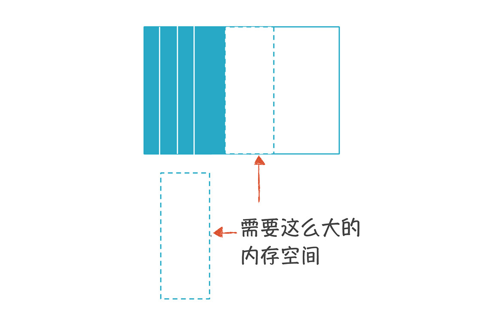
除此之外，停止和拷贝算法，也能够避免内存碎片化。
停止和拷贝（Stop and Copy）
采用这个算法后，内存被分成两块：
- 一块是旧空间，用于分配内存。
- 一块是新空间，用于垃圾收集。
停止和拷贝算法也可以叫做复制式收集（Coping Collection）。
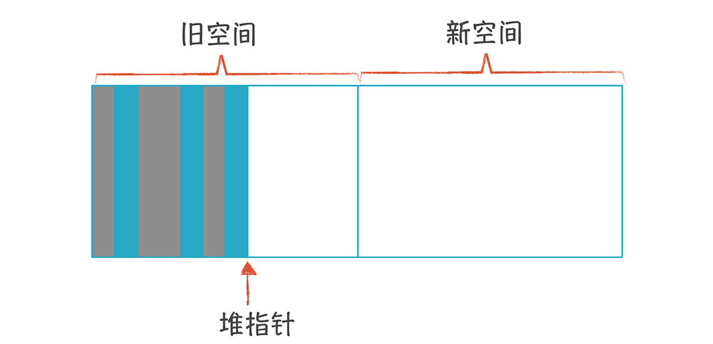
你需要保持一个堆指针，指向自由空间开始的位置。申请内存时，把堆指针往右移动就行了，比标记-清除算法申请内存更简单。
这里需要注意，旧空间里有一些对象可能已经不可达了（图中的灰色块），但你不用管。当旧空间变满时，就把所有可达的对象，拷贝到新空间，并且把新旧空间互换。这时，新空间里所有对象整齐排列，没有内存碎片。

停止-拷贝算法被认为是最快的垃圾收集算法，有两点原因：
- 分配内存比较简单，只需要移动堆指针就可以了。
- 垃圾收集的代价也比较低，因为它只拷贝可达的对象。当垃圾对象所占比例较高的时候，这种算法的优势就更大。
不过，停止-拷贝算法还有缺陷：
- 有些语言不允许修改指针地址。
在拷贝内存之后，你需要修改所有指向这块内存的指针。像C、C++这样的语言，因为内存地址是对编程者可见的，所以没法采用停止和拷贝算法。
- 始终有一半内存是闲置的，所以内存利用率不高。
- 最后，它一次垃圾收集的工作量比较大，会导致系统停顿时间比较长，对于一些关键系统来说，这种较长时间的停顿是不可接受的。但这两个算法都是基础的算法，它们可以被组合进更复杂的算法中，比如分代和增量的算法中，就能避免这个问题。
引用计数（Reference Counting）
引用计数支持增量的垃圾收集，可以避免较长时间的停顿。
它的原理是：在每个对象中，保存引用本对象的指针数量，每次做赋值操作时，都要修改这个引用计数。如果x和y分别指向A和B，当执行“x=y”这样的赋值语句时，要把A的引用计数减少，把B的引用计数增加。如果某个对象的引用计数变成了0，那就可以把它收集掉。
所以，引用计数算法非常容易实现，只需要在赋值时修改引用计数就可以了。
不过，引用计数方法也有缺陷：
首先，是不能收集循环引用的结构。比如图中的A、B、C和D的引用计数都是1，但它们只是互相引用，没有其他变量指向它们。而循环引用在面向对象编程里很常见，比如一棵树的结构中，父节点保存了子节点的引用，子节点也保存了父节点的引用，这会让整棵树都没有办法被收集。
如果你有C++工作经验，应该思考过，怎么自动管理内存。有一个思路是：实现智能指针，对指针的引用做计数。这种思路也有循环引用的问题，所以要用其他算法辅助，来解决这个问题。
其次，在每次赋值时，都要修改引用计数，开销大。何况修改引用计数涉及写内存的操作，而写内存是比较慢的，会导致性能的降低。
其实，这三个算法都是比较单一的算法，实际上，它们可以作为更复杂、更实用算法的组成部分，比如分代收集算法。
分代收集（Generational Collection）
分代收集算法在商业级的产品里很普及，比如Java和Go语言的GC。
它的核心思想是：在程序中，往往新创建的对象会很快死去，比如，你在一个方法中，使用临时变量指向一些新创建的对象，这些对象大多数在退出方法时，就没用了。根据这个原理，垃圾收集器将注意力集中在比较“年轻”的数据上，因为它们成为垃圾的概率比较高。
我们把堆划分成若干“代”（Generation）：G0是最新代，G1就要老一些。不过GC根节点的计算有一个小小的区别：在收集G0时，根节点除了全局变量、栈和寄存器中的变量外，还要包含老一代的对象中指向G0的指针（下图中橙色的线，都是指向G0中对象的）。

所以，一个重要的问题是：记住G1、G2…中的根节点。但如果每次都去搜一遍，相当于遍历所有世代，效率很低。所以，要采用效率高一点儿的算法，比如记忆表法。
这个算法是指：如果A对象的x属性被设置成了B对象，那么就要把A对象加入一个向量里（记忆表），记住这个对象曾经被更新过。在垃圾收集时，要扫描这张表，寻找指向G0的老对象。
因为这个算法要记的对象太多，记忆表会变得很大，不太划算。不过我们可以把内存划为2的k次方大小的一个个卡片，如果卡片上的对象被赋值，那么就把这张卡片标记一下，这叫做卡片标记法。
如果你熟悉操作系统，会马上发现，这种卡片和操作系统内存管理时的分页比较相似。所以你可以由操作系统帮忙记录哪页被写入数据了，这种方法叫做页标记法。
解决了根节点的问题之后，我们就可以对G0进行收集了。在G0被收集了多次以后，对G1、G2也可以进行收集。这里你需要注意，G0比较适合复制式收集算法，因为大部分对象会被收集掉，剩下来的不多；而老年代的对象生存周期比较长，拷贝的话代价太大，比较适合标记-清除算法，或者标记-整理算法。
Java的GC就采用了分代收集，现在，你再去看介绍Java垃圾收集的资料，会容易多了。
在带你了解了一些常见的垃圾收集算法之后，我想和你讨论一下：能否不停下整个世界？这个标题里的痛点问题。
增量收集和并发收集（Incremental Collection, Concurrent Collection）
垃圾收集算法在运行时，通常会把程序停下。因为在垃圾收集的过程中，如果程序继续运行，程序可能会出错。这种停下整个程序的现象，被形象地称作“停下整个世界（STW）”。
可是让程序停下来，会导致系统卡顿，用户的体验感会很不好。一些对实时性要求比较高的系统，根本不可能忍受这种停顿。
所以，在自动内存管理领域的一个研究的重点，就是如何缩短这种停顿时间。以Go语言为例，它的停顿时间从早期的几十毫秒，已经降低到了几毫秒。甚至有一些激进的算法，力图实现不用停顿。增量收集和并发收集算法，就是在这方面的有益探索。
增量收集可以每次只完成部分收集工作，没必要一次把活干完，从而减少停顿。
并发收集就是在不影响程序执行的情况下，并发地执行垃圾收集工作。- 为了讨论增量和并发收集算法，我们定义两个角色：一个是收集器（Collector），负责垃圾收集；一个是变异器（Mutator），其实就是程序本身，它会造成可达对象的改变。
然后，用三色标记（tricolor marking）的方法，来表示算法中，不同的内存对象的处理阶段：
- 白色表示，算法还没有访问的对象。
- 灰色表示，这个节点已经被访问过，但子节点还没有被访问过。
- 黑色节点表示，这个节点已经访问过，子节点也已经被访问过了。
用三色标记法来分析的话，你会发现前面的算法有两个特点：
1.不会有黑色对象指向白色对象，因为黑色对象都已经被扫描完毕了。- 2.每一个灰色对象都处于收集器的待处理工作区中，比如在标记-清除算法的todo列表中。
再进一步分析后，我们发现，只要保证这两个特点一直成立，那么收集器和变异器就可以一起工作，互不干扰，从而实现增量收集或并发收集。因为算法可以不断扫描灰色对象，加入到黑色区域。这样整个算法就可以增量式地运行下去。
现在我们的重点，就变成了保证上面两个特点一直成立。比如，如果变异器要在一个黑色对象a里存储一个指针b，把a涂成灰色，或者把b涂成灰色，都会保持上面两条的成立。或者当变异器要读取一个白色指针a的时候，就把它涂成灰色，这样的话也不会违背上面两条。
不同的算法会采取不同的策略，但无论采取哪种算法，收集器和变异器都是通过下面三种机制来协作：
读屏障（read barrier 或 load barrier）。在load指令（从内存到寄存器）之后立即执行的一小段代码，用于维护垃圾收集所需的数据。包括把内存对象涂成正确的颜色，并保证所有灰色对象都在算法的工作区里。
写屏障（write barrier 或 store barrier）。在store指令（从寄存器到内存）之前执行的一小段代码，也要为垃圾收集做点儿工作。
安全点（safepoint）。安全点是代码中的一些点，在这些点上，指针的值是可以安全地修改的。有时，你修改指针的值是有问题的，比如正在做一个大的数组的拷贝，拷到一半，你把数组的地址改了，这就有问题。所以安全点一般都在方法调用、循环跳转、异常跳转等地方。
概要地总结一下：要想实现增量或并发的垃圾收集，就要保证与垃圾收集有关数据的正确性，所以，需要读屏障、写屏障两个机制。另外，还要保证垃圾收集不会导致程序出错，所以需要安全点机制。
要实现这三个机制，需要编译器的帮助。
LLVM对垃圾收集的支持
总的来说，垃圾收集器是一门语言，运行期的一部分，不是编译器的职责。所以，LLVM并没有为我们提供垃圾收集器。但是，要想让垃圾收集器发挥功能，必须要编译器配合，LLVM能够支持：
- 在代码中创建安全点，只有在这些点上才可以执行GC。
- 计算栈图（Stack Map）。在安全点上，栈桢中的指针会被识别出来，作为GC根节点被GC所使用。
- 提供写屏障和读屏障的支持，用于支持增量和并发收集。
LLVM能为当前所有常见的GC算法提供支持，包括我们本讲提到的所有算法，你写GC的时候，一定要跟LLVM配合，才能让GC顺利发挥作用。
课程小结
垃圾收集是高级语言的重要特征，我们针对垃圾收集，探讨了它的原理和常见的算法，我希望你记住以下几点：
- 内存垃圾是从根节点不能到达的对象。
- 标记-清除算法中，你要记住不占额外的内存来做标记的技巧，也就是指针逆转。
- 停止-拷贝算法比较适合活对象比例比较低的情况，因为只需要拷贝少量对象。
- 引用计数的方法比较简单，但不能处理循环引用的情况，所以可以考虑跟其他算法配合。
- 分代收集算法非常有效，关键在于计算老一代中的根节点。
- 增量收集和并发收集是当前的前沿，因为它能解决垃圾收集中最大的痛点，时延问题
- LLVM给垃圾收集提供安全点、栈图、读写屏障方面的支持，GC要跟编译器配合才能很好的工作。
总之，垃圾收集是一项很前沿的技术，如果你有兴趣在这方面做些工作，有一些开源的GC可以参考。不过，就算不从事GC的编写，仅仅了解原理，也会有助于你更好地使用自己的语言，比如把Java和Go语言做好调优。
一课一思
垃圾收集机制曾经给你造成了什么困惑吗？你是怎么解决的？学完本讲后，能否从原理的角度分析一下？欢迎在留言区分享你的观点。
最后，感谢你的阅读，如果这篇文章让你有所收获，也欢迎你将它分享给更多的朋友。
34 运行时优化：即时编译的原理和作用
前面所讲的编译过程，都存在一个明确的编译期，编译成可执行文件后，再执行，这种编译方式叫做提前编译（AOT）。 与之对应的，另一个编译方式是即时编译（JIT），也就是，在需要运行某段代码的时候，再去编译。其实，Java、JavaScript等语言，都是通过即时编译来提高性能的。
那么问题来了：
- 什么时候用AOT，什么时候用JIT呢？
- 在讲运行期原理时，我提到程序编译后，会生成二进制的可执行文件，加载到内存以后，目标代码会放到代码区，然后开始执行。那么即时编译时，对应的过程是什么？目标代码会存放到哪里呢？
- 在什么情况下，我们可以利用即时编译技术，获得运行时的优化效果，又该如何实现呢？
本节课，我会带你掌握，即时编译技术的特点，和它的实现机理，并通过一个实际的案例，探讨如何充分利用即时编译技术，让系统获得更好的优化。这样一来，你对即时编译技术的理解会更透彻，也会更清楚怎样利用即时编译技术，来优化自己的软件。
首先，来了解一下，即时编译的特点和原理。
了解即时编译的特点及原理
根据计算机程序运行的机制，我们把，不需要编译成机器码的执行方式，叫做解释执行。解释执行，通常都会基于虚拟机来实现，比如，基于栈的虚拟机，和基于寄存器的虚拟机（在32讲中，我带你了解过）。
与解释执行对应的，是编译成目标代码，直接在CPU上运行。而根据编译时机的不同，又分为AOT和JIT。那么，JIT的特点，和使用场景是什么呢？
一般来说，一个稍微大点儿的程序，静态编译一次，花费的时间很长，而这个等待时间是很煎熬的。如果采用JIT机制，你的程序就可以像，解释执行的程序一样，马上运行，得到反馈结果。
其次，JIT能保证代码的可移植性。在某些场景下，我们没法提前知道，程序运行的目标机器，所以，也就没有办法提前编译。Java语言，先编译成字节码，到了具体运行的平台上，再即时编译成，目标代码来运行，这种机制，使Java程序具有很好的可移植性。
再比如，很多程序会用到GPU的功能，加速图像的渲染，但针对不同的GPU，需要编译成不同的目标代码，这里也会用到即时编译功能。
最后，JIT是编译成机器码的，在这个过程中，可以进行深度的优化，因此程序的性能要比解释执行高很多。
这样看来，JIT非常有优势。
而从实际应用来看，原来一些解释执行的语言，后来也采用JIT技术，优化其运行机制，在保留即时运行、可移植的优点的同时，又提升了运行效率，JavaScript就是其中的典型代表。基于谷歌推出的V8开源项目，JavaScript的性能获得了极大的提升，使基于Web的前端应用的体验，越来越好，这其中就有JIT的功劳。
而且据我了解，R语言也加入了JIT功能，从而提升了性能；Python的数据计算模块numba也采用了JIT。
在了解JIT的特点，和使用场景之后，你有必要对JIT和AOT在技术上的不同之处有所了解，以便掌握JIT的技术原理。
静态编译的时候，首先要把程序，编译成二进制目标文件，再链接形成可执行文件，然后加载到内存中运行。JIT也需要编译成二进制的目标代码，但是目标代码的加载和链接过程，就不太一样了。
首先说说目标代码的加载。
在静态编译的情况下，应用程序会被操作系统加载，目标代码被放到了代码区。从安全角度出发，操作系统给每个内存区域，设置了不同的权限，代码区具备可执行权限，所以我们才能运行程序。
在JIT的情况下，我们需要为这种动态生成的目标代码，申请内存，并给内存设置可执行权限。我写个实际的C语言程序，让你直观地理解一下这个过程。
我们在一个数组里，存一段小小的机器码，只有9个字节。这段代码的功能，相当于一个C语言函数的功能，也就是把输入的参数加上2，并返回。
/*
* 机器码，对应下面函数的功能：
* int foo(int a){
* return a + 2;
* }
*/
uint8_t machine_code[] = {
0x55, 0x48, 0x89, 0xe5,
0x8d, 0x47, 0x02, 0x5d, 0xc3
};
你可能问了：你怎么知道这个函数，对应的机器码是这9个字节呢？
这不难，你把foo.c编译成目标文件，然后查看里面的机器码就行了。
clang -c -O2 foo.c -o foo.o
或者
gcc -c -O2 foo.c -o foo.o
objdump -d foo.o
objdump命令，能够反编译一个目标文件，并把机器码，和对应的汇编码都显示出来：
另外，用“hexdump foo.o”命令显示这个二进制文件的内容，也能找到这9个字节（图中橙色框中的内容）。

这里多说一句，如果你喜欢深入钻研的话，那么我建议你研究一下，如何从汇编代码生成机器码（实际上就是研究汇编器的原理）。比如，第一行汇编指令“pushq %rbp”，为什么对应的机器码，只有一个字节？如果指令一个字节，操作数一个字节，应该两个字节才对啊？
其实，你阅读Intel的手册之后，就会知道这个机器码为什么这么设计。因为它要尽量节省空间，所以实际上，很多指令和操作码，会被压缩进，一个字节中去表示。在32讲中，研究字节码的设计时，你应该发现了这个规律。这些设计思路都是相通的，如果你要设计自己的字节码，也可以借鉴这些思想。
说回我们的话题，既然已经有了机器码，那我们接着再做下面几步：
- 用mmap申请9个字节的一块内存。用这个函数（不是malloc函数）的好处是，可以指定内存的权限。我们先让它的权限是可读可写的。
- 然后用memcp函数，把刚才那9个字节的数组，拷贝到，所申请的内存块中。
- 用mprotect函数，把内存的权限，修改为可读和可执行。
- 再接着，用一个int(*)(int)型的函数指针，指向这块内存的起始地址，也就是说，该函数有一个int型参数，返回值也是int。
- 最后，通过这个函数指针，调用这段机器码，比如fun(1)。你打印它的值，看看是否符合预期。
完整的代码在jit.cpp里。
借这个例子，你可能会知道，通过内存溢出来攻击计算机是怎么回事了。因为只要一块内存是可执行的，你又通过程序写了一些代码进去，就可以攻击系统。是不是有点儿黑客的感觉？所以在jit.cpp里，我们其实很小心地，把内存地址的写权限去掉了。
如果你愿意深究，我建议你，再看一眼objdump打印的汇编码。你会发现，其中开头为0、1和7的三行是没有用的。根据你之前学过的汇编知识，你应该知道，这三行实际是保存栈指针、设置新的栈指针的。但这个例子中，都是用寄存器来操作的，没用到栈，所以这三行代码对应的机器码可以省掉。
最后，只用4个字节的机器码也能完成同样的功能：
//省略了三行汇编代码的机器码：
uint8_t machine_code1[] = {
0x8d, 0x47, 0x02, 0xc3
};
现在，你应该清楚了，动态生成的代码，是如何加载到内存，然后执行了吧？
不过，刚刚这个函数比较简单，只做了一点儿算术计算。通常情况下，你的程序会比较复杂，往往在一个函数里，要调用另一个函数。比如，需要在foo函数里，调用bar函数。这个bar函数可能是你自己写的，也可能是一个库函数。执行的时候，需要能从foo函数，跳转到bar函数的地址，执行完毕以后再跳转回来。那么，你要如何确定bar函数的地址呢？
这就涉及目标代码的链接问题了。
原来，编译器生成的二进制对象，都是可重定位的。在静态编译的时候，链接程序最重要的工作，就是重定位（Relocatable），各个符号的地址，包括全局变量、常量的地址和函数的地址，这样，你就可以访问这些变量，或者跳转到函数的入口。
JIT没有静态链接的过程，但是，也可以运用同样的思路，解决地址解析的问题。你编写的程序里的所有全局变量，和函数，都会被放到一个符号表里，在符号表里记录下它们的地址。这样，引用它们的函数就知道正确的地址了。
更进一步，你写的函数，不仅可以引用你自己编写的，程序中的对象，还可以访问共享库中的对象。比如，很多程序，都会共享libc库中的标准功能，这个库的源代码超过了几百万行，像打印输出这样的基础功能，都可以用这个库来实现。
这时候，你可以用到动态链接技术。动态链接技术运用得很普遍，它是在应用程序加载的时候，来做地址的重定位。
动态链接，通常会采用“位置无关代码（PIC）”的技术，使动态库，映射进每个应用程序的空间时，其地址看上去都不同。这样一来，可以让动态库被很多应用共享，从而节省内存空间，而且可以提升安全性。因为固定的地址，有利于恶意的程序，去攻击共享库中的代码，从而危及整个系统。
到目前为止，你已经了解了实现JIT的两个关键技术：
- 让代码动态加载和执行。
- 访问自己写的程序和共享库中的对象。
它们是JIT的核心。至于代码优化和目标代码生成，与静态编译是一样的。了解这些内容之后，你应该更加理解Java、JavaScript等语言，即时编译运行的过程了吧？
当然，LLVM对即时编译提供了很好的支持，它大致的机制是这样的：
我们编写的任何模块(Module)，都以内存IR的形式存在，LLVM会把模块中的符号，都统一保存到符号表中。当程序要调用模块的方法时，这个模块就会被即时编译，形成可重定位的目标对象，并被调用执行。动态链接库中的方法（如printf）也能够被重定位并调用。
在第一次编译时，你可以让LLVM，仅运行少量的优化算法，这样编译速度比较快，马上就可以运行。而对于被多次调用的函数，你可以让LLVM执行更多的优化算法，生成更优化版本的目标代码。而运行时所收集的某些信息，可以作为某些优化算法的输入，像Java和JavaScript都带有这种多次生成目标代码的功能。
带你了解JIT的原理之后，接下来，我再通过一个案例，让你对JIT的作用有更加直观的认识。
用JIT提升系统性能
著名的开源数据库软件，PostgreSQL，你可能听说过。它的历史比MySQL久，功能也比MySQL多一些。在最近的版本中，它添加了基于LLVM的，即时编译功能，性能大大提高。
看一下下面的SQL语句：
select count(*) from table_name where (x + y) > 100
这个语句的意思是：针对某个表，统计一下字段x和y的和大于100的记录有多少条。这个SQL在运行时，需要遍历所有的行，并对每一行，计算“(x + y) > 100”这个表达式的值。如果有1000万行，这个表达式就要被执行1000万次。
PostgreSQL的团队发现，直接基于AST或者某种IR，解释执行这个表达式的话，所用的时间，占到了处理一行记录所需时间的56%。而基于LLVM实现JIT以后，所用的时间只占到6%，性能整整提高了一倍。
在这里，我联系31讲内存计算的内容，带你拓展一下。上面的需求，是典型的基于列进行汇总计算的需求。如果对代码进行向量化处理，再保证数据的局部性，针对这个需求，性能还可以提升很多倍。
再说回来。除了针对表达式的计算进行优化，PostgreSQL的团队还利用LLVM的JIT功能，实现了其他的优化。比如，编译SQL执行计划的时间，缩短了5.5倍；创建b树索引的时间，降低了5%~19%。
那么32讲中，我提到，将一个规则引擎，编译成字节码，这样在处理大量数据时，可以提高性能。这是因为，JVM也会针对字节码做即时编译。道理是一样的。
课程小结
对现代编程语言来说，编译期和运行期的界限，越来越模糊了，解释型语言和编译型语言的区别，也越来越模糊了。即时编译技术可以生成，最满足你需求的目标代码。那么通过今天的内容，我强调这样几点：
1.为了实现JIT功能，你可以动态申请内存，加载目标代码到内存，并赋予内存可执行的权限。在这个过程中，你要注意安全因素。比如，向内存写完代码以后，要取消写权限。
2.可重定位的目标代码，加上动态链接技术，让JIT产生的代码可以互相调用，以及调用共享库的功能。
3.JIT技术可以让数据库这类基础软件，获得性能上的提升，如果你有志参与研发这类软件，掌握JIT技术会给你加分很多。
一课一思
你参与开发的软件，特别是支持DSL的软件，是否可以用JIT技术提升性能？欢迎在留言区分享你的观点。
最后，感谢你的阅读，如果这篇文章让你有所收获，也欢迎你将它分享给更多朋友。
35 案例总结与热点问题答疑：后端部分真的比前端部分难吗？
本节课，我会继续剖析一些，你们提出的，有代表性的问题（以后端问题为主），主要包括以下几个方面：
- 后端技术部分真的比前端技术部分难吗？
- 怎样更好地理解栈和栈桢（有几个同学提出的问题很好，有必要在这里探究一下）？这样，你对栈桢的理解会更加扎实。
- 有关数据流分析框架。数据流分析是后端技术的几个重点之一，需要再细化一下。
- 关于Java的两个知识点：泛型和反射。我会从编译技术的角度讲一讲。
接下来，进入第一个问题：后端技术真的难吗？正确的学习路径是什么？
后端技术真的难吗？该怎么学？
有同学觉得，一进到后端，难度马上加大了，你是不是也有这样的感觉？我承认，前端部分和后端部分确实不太相同。
前端部分偏纯逻辑，你只要把算法琢磨透就行了。而后端部分，开始用到计算机组成原理的知识，要考虑CPU、寄存器、内存和指令集，甚至还要深入到CPU内部，去看它的流水线结构，以便理解指令排序。当然，我们还要说清楚与操作系统的关系，操作系统是如何加载代码并运行的，如何帮你管理内存等等。另外，还涉及ABI和调用约定，NP完全的算法等等。看上去复杂了很多。
虽然比较复杂，但我认为，这并不意味着后端更难，只意味着知识点更多。可这些知识，往往你熟悉了就不难了。
比如，@风同学见到了汇编代码说：总算遇到了自己熟悉的内容了，不用天天看Java代码了。
我觉得，从算法的角度出发，后端部分的算法，至少没比前端的语法分析算法难。而且有些知识点，别的课程里应该讲过，如果你从以下三个方面多多积累，会更容易掌握后端内容：
- 计算机组成原理：CPU的运行原理、汇编指令等等。
- 数据结构和算法，特别是与树和图有关的算法：如果你之前了解过，与图有关的算法，了解旅行商问题，那么会发现，指令选择等算法似曾相识。自然会理解，我提到某些算法是NP完全的，是什么意思。
- 操作系统：大部分情况下，程序是在操作系统中运行的，所以，要搞清楚我们编译的程序是如何跟操作系统互动的。
@沉淀的梦想就对这些内容，发表过感触：感觉学编译原理，真的能够帮助我们贯通整个计算机科学，涉及到的东西好多。
确实如他所说，那么我也希望《编译原理之美》这门课，能促使你去学习另外几门基础课，把基础夯实。
后端技术的另一个特点，是它比较偏工程性，不像前端部分有很强的理论性，对于每个问题有清晰的答案。而后端技术部分，往往对同一个问题有多种解决思路和算法，不一定有统一的答案，甚至算法和术语的名称都不统一。
后端技术的工程性特点，还体现在它会涉及很多技术细节，这些细节信息往往在教科书上是找不到的，必须去查厂商（比如Intel）的手册，有时要到社区里问，有时要看论文，甚至有时候要看源代码。
总的来说，如何学好后端，我的建议主要有三个方面：
- 学习关联的基础课程，比如《数据结构与算法》，互相印证；
- 理解编译原理工程性的特点，接受术语、算法等信息的不一致，并从多渠道获得前沿信息，比如源代码、厂商的手册等等。
- 注重实操，亲自动手。比如，你在学优化算法时，即使没时间写算法，也要尽可能用LLVM的算法做做实验。
按照上面三条建议，你应该可以充分掌握后端技术了。当然，如果你只是想做一个概要的了解，那么阅读文稿也会有不错的收获，因为我已经把主线梳理出来了，能避免你摸不着头脑，不知如何入手。
接下来，我们进入第二个问题：再次审视一下栈桢。
再次认识栈桢
@刘强同学问：操作系统在栈的管理中到底起不起作用？
这是操作系统方面的知识点，但可以跟编译技术中栈的管理联系在一起看。
我们应用程序能够访问很大的地址空间，但操作系统不会慷慨地，一下子分配很多真实的物理内存。操作系统会把内存分成很多页，一页一页地按需分配给应用程序。那么什么时候分配呢？
当应用访问自己内存空间中的一个地址，但实际上没有对应的物理内存时，就会导致CPU产生一个PageFault（在Intel手册中可以查到），这是一种异常（Exception）。
对异常的处理跟中断的处理很相似，会调用注册好的一个操作系统的例程，在内核态运行，来处理这个异常。这时候，操作系统就会实际分配物理内存。之后，回到用户态，继续执行你的程序，比如，一个push指令等等。整个过程对应用程序是透明的，其实背后有CPU和操作系统的参与。
@风提出了关于栈桢的第二个问题：看到汇编代码里管理栈桢的时候，用了rbp和rsp两个寄存器。是不是有点儿浪费？一个寄存器就够了啊。
确实是这样，用这种写法是习惯形成的，其实可以省略。而我在34讲里，用到的那个foo函数，根本没有使用栈，仅仅用寄存器就完成了工作。这时，可以把下面三行指令全部省掉：
pushq %rbp
movq %rsp, %rbp
popq %rbp
从而让产生的机器码少5个字节。最重要的是，还省掉两次内存读写操作（相比对寄存器的操作，对内存的操作是很费时间的）。
实际上，如果你用GCC编译的话，可以使用-fomit-frame-pointer参数来优化，会产生同样的效果，也就是不再使用rbp。在访问栈中的地址时，会采用4(%rsp)、8(%rsp)的方式，在rsp的基础上加某个值，来访问内存。
@沉淀的梦想提出了第三个问题：栈顶（也就是rsp的值）为什么要16字节对齐？
这其实是一个调用约定。是在GCC发展的过程中，形成的一个事实上的标准。不过，它也有一些好处，比如内存对齐后，某些指令读取数据的速度会更快，这会让你产生一个清晰的印象，每次用到栈桢，至少要占16个字节，也就是4个32位的整数的空间。那么，如果把一些尾递归转化为循环来执行，确实会降低系统的开销，包括内存开销和保存前一个桢的bsp、返回地址、寄存器的运行时间开销。
而@不的问了第四个问题： 为什么要设计成区分调用者、被调用者保护的寄存器，统一由被调用者或者调用者保护，有什么问题么？
这个问题是关于保护寄存器的，我没有仔细去研究它的根源。不过我想，这种策略是最经济的。
如果全部都是调用者保护，那么你调用的对象不会破坏你的寄存器的话，你也要保护起来，那就增加了成本；如果全部都是被调用者保护，也是一样的逻辑。如果调用者用了很少几个寄存器，被调用者却要保护很多，也不划算。
所以最优的方法，其实是比较中庸主义的，两边各负责保护一部分，不过，我觉得这可以用概率的方法做比较严谨的证明。
关于栈桢，我最后再补充一点。有的教材用活动记录这个术语，有的教材叫做栈桢。你要知道这两个概念的联系和区别。活动记录是比较抽象的概念，它可以表现为多种实际的实现方式。在我们的课程中，栈桢加上函数调用中所使用的寄存器，就相当于一个活动记录。
讲完栈桢之后，再来说说与数据流分析框架有关的问题。
细化数据流分析框架
数据流分析本身，理解起来并不难，就算不引入半格这个数学工具，你也完全可以理解。
对于数据流分析方法，不同的文献也有不同的描述，有的说是3个要素，有的说是4个要素。而我在文稿里说的是5个要素：方向（D）、值（V）、转换函数（F）、相遇运算（meet operation, Λ）和初始值（I）。你只要把这几个问题弄清楚，就可以了。
引入半格理论，主要是进一步规范相遇运算，这也是近些年研究界的一个倾向。用数学做形式化地描述虽然简洁清晰，但会不小心提升学习门槛。如果你只是为了写算法，完全可以不理半格理论，但如果为了方便看这方面算法的论文，了解半格理论会更好。
首先，半格是一种偏序集。偏序集里，某些元素是可以比较大小的。但怎么比较大小呢？其实，有时是人为定的，比如，{a, b}和{a, b, c}的大小，就是人为定的。
那么，既然能比较大小，就有上界（Upper Bound）和下界（Lower Bound）的说法。给定偏序集P的一个子集A，如果A中的每个元素a，都小于等于一个值x（x属于P），那么x就是A的一个上界。反过来，你也知道什么是下界。
半格是偏序集中，一种特殊的类型，它要求偏序集中，每个非空有限的子集，要么有最小上界（并半格，join-semilattice），要么有最大下界（交半格，meet-semilattice）。
其实，如果你把一个偏序集排序的含义反过来，它就会从交半格转换成并半格，或者并半格转换成交半格。我们还定义了两个特殊值：Top、Bottom。在不同的文献里，Top和Bottom有时刚好是反着的，那是因为排序的方向是反着的。
因为交半格和并半格是可以相互转化的，所以有的研究者采用的框架，就只用交半格。交半格中，集合{x, y}的最大下界，就记做x Λ y。在做活跃性分析的时候，我们就规定{a, b} > {a, b, c}就行了，这样就是个交半格。如果按照这个规矩，我在28讲中举的那个常数传播的例子，应该把大小反过来，也做成个交半格。文稿中的写法，实际是个并半格，不过也不影响写算法。
这样讲，你更容易理解了吧？现在你再看到不同文献里，关于数据流分析中的偏序集、半格的时候，应该可以明白是怎么回事了。
最后，我再讲讲关于Java的两个知识点：泛型和反射。这也是一些同学关注的问题。
Java的两个知识点：泛型和反射
泛型机制大大方便了我们编写某些程序，不用一次次做强制类型转换和检查了。比如，我们要用一个String类型的List，就声明为：
List<String> myList；
这样，你从myList中访问一个元素，获取的自然就是一个String对象，而不是基类Object对象。
而增加泛型这个机制其实很简单。它只是在编译期增加了类型检查的机制，运行期没有任何改变。List 和List 运行的字节码都是完全相同的。
那么反射机制呢？它使我们能够在运行期，通过字符串形式的类名和方法名，来创建类，并调用方法。这其实绕过了编译期的检查机制，而是在运行期操纵对象：
//获取Class
Class<?> clazz = Class.forName("MyClass");
//动态创建实例
Object obj = clazz.newInstance();
//获取add方法的引用
Method method = clazz.getMethod("add",int.class,int.class);
//调用add方法
Object result = method.invoke(obj,1,4);
这样能带来很多灵活性，方便你写一些框架，或者写IDE。
从编译技术的角度看，实现反射很容易。因为在32讲中，你已经了解了字节码的结构。当时，我比较侧重讲指令，其实你还会看到它前面的，完整的符号表（也就是记录了类名、方法名等信息）。正因为有这些信息，所以反编译工具能够从字节码重新生成Java的源文件。
所以，虽然在运行时，Java类已经编译成字节码了，但我们仍然可以列出它所有的方法，可以实例化它，可以执行它的方法（因为可以查到方法的入口地址）。所以你看，一旦你掌握了底层机制，理解上层的一些特性就很容易了。
课程小结
编译器的后端技术部分也告一段落了。我们用16讲的篇幅，涵盖了运行时机制、汇编语言基础知识、中间代码、优化算法、目标代码生成、垃圾收集、即时编译等知识点，还针对内存计算和Java的字节生码成做了两个练习，中间还一直穿插介绍LLVM这个工具。我之前就提到，实现一个编译器，后端的工作量会很大，现在你应该有所体会。
在这里，我也想强调，后端技术的工程性比较强，每本书所采用的术语和算法等信息，都不尽相同。在我们的课程中，我给你梳理了一条，比较清晰的脉络，你可以沿着这条脉络，逐步深化，不断获得自己的感悟，早日修炼成后端技术的高手！
在答疑篇的最后，我总结了一些案例，供你参考。
案例总结
第一批示例程序，与汇编代码有关，包括手写的汇编代码，以及从playscript生成汇编代码的程序。这部分内容，主要是打破你对汇编代码的畏惧心，知道它虽然细节很多，但并不难。在讲解后端技术部分时，我总是在提汇编代码，在34讲，我甚至写了一个黑客级的小程序，直接操作机器码。我希望经历了这些过程之后，你能对汇编代码亲切起来，产生可以掌握它的信心。
第二批示例程序，是基于LLVM工具生成IR的示例代码。掌握LLVM的IR，熟悉调用LLVM的API编程，能让你在写完前端以后，以最短的时间，拥有所有后端的功能。通过LLVM，你也会更加具体的体会，代码优化等功能。
第三批示例程序，是内存计算和字节码生成，这两个应用题目。通过这两个应用题目，你会体会到两点：
- 编译器后端技术对于从事一些基础软件的开发很有用；
- 虽然课程没有过多讲解Java技术，只通过一个应用篇去使用Java的字节码，但你会发现，我们对后端技术的基本知识，比如对中间代码的理解，都可以马上应用到Java语言上，得到举一反三的感觉。
一课一思
如果你在工作中真的接到了一个任务，要实现某编译器的后端，你觉得学过本课程以后，你敢接手这个任务吗？还有哪些地方是需要你再去补足的？你完成这个任务比较可靠的路径是什么？欢迎在留言区分享你的观点。
最后，感谢你的阅读，如果这篇文章让你有所收获，也欢迎你将它分享给更多的朋友。
36 当前技术的发展趋势以及其对编译技术的影响
在IT领域，技术一直在飞速的进步，而每次进步，都会带来新的业态和新的发展机遇。
退回到10年前，移动互联网刚兴起不久，谁也没想到它会催生现在这么多的业态。而云计算还在酝酿期，腾讯和百度的创始人都觉得它走不远，现在竟然这么普及。
退回到20年前，互联网刚兴起，上网都要拨号。互联网的几个巨头，像阿里巴巴、百度、腾讯、新浪，还有网易，都是在那个时代展露头角的。毫不夸张地说，如果你在那个时代搞技术，懂Web编程的话，那绝对是人人争抢的“香饽饽”，毕竟那时，Web编程是前沿技术，懂这个领域的人，凤毛麟角。
退回到30年前，微软等公司才刚开始展露头角，雷军、求伯君等老一代程序员也正在发力，WPS的第一个版本运行在DOS操作系统上。我还记得，95年的时候，我在大学的阶梯教室里，看了比尔盖茨曾发表的，关于未来技术方向的演讲。当时，他预测了未来的科技成果，比如移动智能设备，听上去像天方夜谭，但现在移动互联网、人工智能和5G的发展，早已超出了他当时的想象。
那么你有理由相信，未来10年、20年、30年，会发生同样天翻地覆的变化。这种变化所造成的的影响，你我哪怕大开“脑洞”都无法预料。而你在这种趋势下，所能做的就是，把握当下，并为未来的职业生涯做好准备。这是一件认真且严肃的事情，值得你用心对待。
当然，洞悉未来很难，但你可以根据当前了解到的信息，捕捉一些发展趋势，看看这些发展趋势，让编译技术的发展方向有了哪些不同，跟你又有什么关系。
本节课，我想与你分享3个方面的技术发展趋势，以及它们对编译技术的影响：
- 人工智能，以及如何让编程和编译技术变得更智能？
- 云计算，以及是否需要云原生的语言？
- 前端技术，以及能否出现统一各个平台的大前端技术？
期望这些内容，能让你看到一些不同的思考视角，获得一些新的信息。
趋势1：让编程更智能
人工智能是当前发展最迅速的技术之一了。这几年，它的发展速度超过了人们的预期。那么你知道，它对编译技术和计算机语言的影响是什么吗？
首先，它需要编译器能够支撑，机器学习对庞大计算力的需求，同时兼容越来越多新的硬件架构。
由于机器学习的过程需要大量的计算，仅仅采用CPU效率很低，所以GPU和TPU等新的硬件架构得到了迅速的发展。对于编译技术来说，首要的任务，是要充分发挥这些新硬件的能力；因为AI的算法要能跑在各种后端架构上，包括CPU、GPU和TPU，也包括仍然要采用SIMD等技术，所以后端技术就会变得比较复杂。同时，前端也有不同的技术框架，比如谷歌的TensorFlow、Facebooke的PyTorch等。那么编译器怎样更好地支持多种前端和多种后端呢？
根据在24讲学到的知识，你应该会想到要借助中间代码。所以，MLIR应运而生。这里要注意，ML是Multi-Level（多层次）的意思，而不是Machine Learning的缩写。我还想告诉你，MLIR的作者，也是LLVM的核心作者、Swift语言的发明人，Chris Lattner（他目前在谷歌TensorFlow项目中）。而当你看到MLIR的格式，也许会觉得跟LLVM的IR很像，那么你其实可以用更短的学习周期来掌握这个IR。
其次，AI还可能让现有的编译技术发生较大的改变。
实际上，把AI和编译技术更好地结合，是已经持续研究了20年左右的，一个研究方向。不过，没有很大的发展。因为之前，人工智能技术的进步不像这几年这么快。近几年，随着人工智能技术快速进步，在人脸识别、自动驾驶等各个领域产生了相当实用的成果，人们对人工智能可能给编译技术带来的改变，产生了更大的兴趣。这给了研究者们研究的动力，他们开始从各个角度探索变革的可能性。
比如说，在后端技术部分，很多算法都是NP完全的。这就是说，如果你用穷举的方法找出最优解，成本非常高。这个时候，就会用启发式（heuristic）的算法，也就是凭借直观或经验构造的算法，能够在可接受的花费下找出一个可行的解。那么采用人工智能技术，通过大数据的训练，有可能找出更好的启发式算法，供我们选择。这是人工智能和编译技术结合的一个方向。
Milepost GCC项目早在2009年就发布了，它是一款开源的，人工智能编译器。它能够通过自动学习来确定去优化哪些代码，以便让程序的性能更高。据IBM的测试数据，某些嵌入式软件的性能因此提升了18%。
另一个讨论度比较高的方向就是人工智能编程（或者叫自动编程）。从某种意义上看，从计算机诞生到现在，我们编写程序的方式一直没有太大的进步。最早，是通过在纸带或卡片上打孔，来写程序；后来产生了汇编语言和高级语言。但是，写程序的本质没有变化，我们只是在用更高级的方式打孔。
讽刺的是，在计算机语言的帮助下，很多领域都出现了非常好的工具，比如CAD完全改变了建筑设计行业。但计算机行业本身用的工具仍然是比较原始的，还是在一个编辑器中，用文本的方式输入代码。
而人工智能技术可能让我们习惯已久的编程模式发生改变。比如，现在的编译器只是检查错误并生成代码，带有AI功能的编译器呢，有可能不仅检查出比较明显的错误，甚至还会对你的编码方式提出建议。假设你用一个循环去做某个数组的计算，带有AI功能的编译器会告诉你，用函数式编程做向量计算性能更高，并提供一键式替换功能。
这里延伸一下，有可能，未来写程序的方式都会改变。微软收购GitHub以后，运用大量的代码作为训练数据，正在改进IDE，提供智能提示功能。而这还只是开始。目前，AI其实已经能帮你做UI的设计：你画一个草图，AI给你生成对应的Web页面。
而且在AI辅助设计领域，算法还能根据你的需要，帮你生成平面或三维的设计方案。我能想象，未来，你告诉AI给你生成一个电商APP，它就能给你生成出来。你再告诉它做什么样的修改，它都会立即修改。在未来，应用开发中，最令人头疼的需求变化的问题，在AI看来根本不是事。
那么，如果这个前景是真实的，对于你而言，需要掌握什么技能呢？
我建议你了解，编译技术和人工智能这两个领域的知识。那些计算机的基础知识会一直有用，你可以参与到编程范式迁移，这样一个伟大的进程中。现有程序开发中的那些简单枯燥，又不需要多少创造力的工作，也就是大家通常所说的“搬砖”工作，可能会被AI代替。而我猜测，未来的机会可能会留给两类人：
一类是具备更加深入的计算机基础技能，能应对未来挑战的，计算机技术人才，他们为新的计算基础设施的发展演化，贡献自己的力量。
另一类是应用领域的专家和人才。他们通过更富有创造力的工作，利用新的编程技术实现各种应用。编写应用程序的重点，可能不再是写代码，而是通过人工智能，训练出能够反映领域特点的模型。
当然，向自动编程转移的过程肯定是逐步实现的：AI先是能帮一些小忙，解放我们一部分工作量，比如辅助做界面设计、智能提示；接着是能够自动生成某些小的、常用的模块；最后是能够生成和管理复杂的系统。
总而言之，AI技术给编译技术，和编程模式带来了各种可能性，而你会见证这种转变。除此之外，云计算技术的普及和深化，也可能给编译技术和编程模式带来改变。
趋势2：云原生的开发语言
云计算技术现在的普及度很广，所有应用的后端部分，缺省情况下都是跑在云平台上的，云就是应用的运行环境。
在课程里，我带你了解过程序的运行环境。那时，我们的关注点，还是在一个单机的环境上，包括CPU和内存这些硬件，以及操作系统这个软件，弄清楚程序跟它们互动的关系。比如，操作系统能够加载程序，能够帮程序管理内存，能够为程序提供一些系统功能（把数据写到磁盘上等等）。
然而，在云计算时代，云就是应用的运行环境。一个应用程序不是仅仅加载到一台物理机上，而是要能够根据需要，加载很多实例到很多机器上，实现横向扩展。当然了，云也给应用程序提供各种系统功能，比如云存储功能，它就像一台单独的服务器，会给程序提供读写磁盘的能力一样。
除此之外，在单机环境下，传统的应用程序，是通过函数或方法，来调用另一个模块的功能，函数调用的层次体现为栈里一个个栈桢的叠加，编译器要能够形成正确的栈桢，实现自动的内存管理。而在云环境下，软件模块以服务的形式存在，也就是说，一个模块通过RESTful接口或各种RPC协议，调用另外的模块的功能。程序还需要处理通讯失败的情况，甚至要在调用多个微服务时，保证分布式事务特性。而我们却没从编译技术的角度，帮助程序员减轻这个负担。
导致的结果是：现在后端的程序特别复杂。你要写很多代码，来处理RPC、消息、分布式事务、数据库分片等逻辑，还要跟各种库、框架、通讯协议等等打交道。更糟糕的是，这些技术性的逻辑跟应用逻辑，混杂在一起，让系统的复杂度迅速提高，开发成本迅速提升，维护难度也增加。很多试图采用微服务架构的项目因此受到挫折，甚至回到单一应用的架构。
所以，一个有意义的问题是：能否在语言设计的时候，就充分利用云的基础设施，实现云原生（Cloud Native）的应用？也就是说，我们的应用，能够透明地利用好云计算的能力，并能兼容各种不同厂商的云计算平台，就像传统应用程序，能够编译成，不同操作系统的可执行文件一样。
好消息是，云计算的服务商在不断地升级技术，希望能帮助应用程序，更好地利用云计算的能力。而无服务器（Serverless）架构就是最新的成果之一。采用无服务器架构，你的程序都不需要知道容器的存在，也不需要关心虚拟机和物理机器，你只需要写一个个的函数，来完成功能就可以了。至于这个函数所需要的计算能力、存储能力，想要多少就有多少。
但是，云计算厂商提供的服务和接口缺少标准化，当你把大量应用都部署到某个云平台的时候，可能会被厂商锁定。如果有一门面向云原生应用的编程语言，和相应的开发平台，能帮助人们简化云应用的开发，同时又具备跨不同云平台的能力，那就最理想了。
实际上，已经有几个创业项目在做这个方向做探索了，比如 Ballerina、Pulumi和Dark，你可以看一下。
当然了，云计算和编程结合起来，就是另一个有趣的话题：云编程。我会在下一讲，与你进一步讨论这个话题。
趋势3：大前端技术栈
上面所讲的云计算，针对的是后端编程，而与此对应的，是前端编程工作。
后端工作的特点，是越来越云化，让工程师们头疼的问题，是处理分布式计算环境下，软件系统的复杂性。当然，前端的挑战也不少。
我们开发一款应用，通常需要支持Web、IOS和Android三种平台，有时候，甚至需要提供Windows和macOS的桌面客户端。不同的平台会需要不同的技术栈，从而导致一款应用的开发成本很高，这也是前端工程师们不太满意的地方。
所以，前端工程师们一直希望能用一套技术栈，搞定多个平台。比如，尝试用Web开发的技术栈完成Android、IOS和桌面应用的开发。React Native、Electron等框架是这个方面的有益探索；Flutter项目也做了一些更大胆的尝试。
Flutter采用Dart开发语言，可以在Android和IOS上生成高质量的原生界面，甚至还可以支持macOS、Windows和Linux上的原生界面。另外，它还能编译成Web应用。所以，本质上，你可以用同一套代码，给移动端、桌面端和Web端开发UI。
你可以把这种技术思路叫做大前端：同一套代码，支持多个平台。
从Flutter框架中，你可以看出编译技术起到的作用。首先，Dart语言也是基于虚拟机的，编译方式支持AOT和JIT，能够运行在移动端和桌面端，能够调用本地操作系统的功能。对于Web应用则编译成JavaScript、CSS和HTML。这个项目的创新力度已经超过了React Native这些项目，工程师们已经不满足于，在现有的语言（JavaScript）基础上编写框架，而是用一门新的语言去整合多个技术栈。
当然，提到前端技术，就不能不提Web Assembly（WASM）。WASM是一种二进制的字节码，也就是一种新的IR，能够在浏览器里运行。相比JavaScript，它有以下特点：
- 静态类型；
- 性能更高；
- 支持C/C++/Rust等各种语言生成WASM，LLVM也给了WASM很好的支持；
- 字节码尺寸比较少，减少了下载时间；
- 因为提前编译成字节码，因此相比JavaScript减少了代码解析的时间。
由于这些特点，WASM可以在浏览器里，更高效地运行，比如可以支持更复杂的游戏效果。我猜想，未来可能出现，基于浏览器的、性能堪比本地应用的字处理软件、电子表格软件。基于云的文档软件（比如Google Doc）会得到再一次升级，使用者也将获得更好的体验。
此外，WASM还允许除了JavaScript之外的语言，来编写Web应用。这些语言可以像JVM上的语言一样，生成字节码，并且只要有运行WASM的虚拟机，它们就具备一样的可移植性。
而且，WASM不仅可以运行在前端，还可以运行在后端。就像JavaScript语言被Node.js项目，用于开发后端服务一样，现在Node.js项目也可以调用WASM模块。还有一些更激进的项目，正在开发高效运行WASM的虚拟机，比如wasmer项目。wasmer虚拟机可以使用LLVM进行编译和优化，从而能够提供更高的性能。
讨论到这里，你有什么感受？C/C++语言写的程序，以WASM的形式运行在浏览器里，或者运行在后端的虚拟机里，通过即时编译运行。完全颠覆了你对这两门语言的传统印象吧？这就是编译技术与时俱进的一个体现。
其实，学过《编译原理之美》这门课程以后，我也期望你有信心，做一款WASM的虚拟机，并基于它，做一个类似Node.js的后端服务平台。因为这并没有太大的技术难度，你只要做到稳定好用，花费很多心血就是了。
课程小结
为了拓展你的视野，我带你探讨了三个技术的发展趋势，以及它们对编译技术和编程方式所带来的影响。我希望，在学完本节课之后，你能有以下收获：
人工智能有可能提升现有的编译技术框架，并带来自动编程等，编程模式的重大变化。
应用程序的运行环境，不能仅仅考虑单机，还要考虑云这个更大的环境。因此，新一代的编程语言和开发平台，可能会让开发云原生的应用更加简单。
在应用开发的前端技术方面，如果要想支持多种平台，可能还需要通过编译技术来获得大的突破。
当然，编译技术还有很多其他的研究方向，比如更好地支持并行计算、支持物联网和低功耗场景，支持区块链，甚至支持一些同学感兴趣的，未来的量子计算机，等等。不过，在我看来，我在文中提到的这三个趋势，跟你的关系是最为密切的。因为你现在或多或少地都在接触AI、云和前端技术。
我希望今天的内容能帮你开拓思路，为迎接未来的技术趋势做好准备，并且能够更好地利用编译技术，增强自身的竞争力。
一课一思
在本节课中，我分享了自己对技术趋势的思考和感悟，而你或许有其他的见解，欢迎在留言区与我讨论，碰撞思维的火花。
感谢你的阅读，如果这篇文章让你有所收获，也欢迎你将它分享给更多的朋友。
37 云编程：云计算会如何改变编程模式？
37 云编程：云计算会如何改变编程模式？
上一讲中，我分享了当前3个技术发展趋势，以及其对编译技术的影响。今天我们把其中的云计算和编程模式、编译技术的之间的关系、前景再展开探讨一下。
总的来说，现在编写程序是越来越云化了，所以，我们简单地称作云编程就好了。
关于云编程，有很多有趣的问题：
1.编程本身是否也能上云？在云上编程会跟本地开发有什么不同？- 2.如何编写云应用，来充分发挥云平台的能力？分为哪些不同的模式？- 3.为什么编写云应用那么复杂？如何降低这些复杂度？云原生应用的开发平台，能否解决这些问题？
本节课，我就带你深入讨论这些问题，希望借此帮助你对编程和云计算技术的关系做一个梳理，促使你更好地利用云计算技术。
首先，来看看如何实现云上编程。
实现云上编程
90年代初，我在大学学习编程，宿舍几个人合买了一台386电脑。那个时候，我记得自己不太喜欢微软提供的MFC编程框架，这和386电脑没有浮点运算器，编译起来比较慢有关，编译一次使用MFC框架的，C++程序的时间，足够我看一页报纸的了。
喜欢编程的人，为了获得流畅的性能，电脑配置总是很高，虽然这足以满足C/C++时代的编程需要，但进入Java时代后，因为应用结构越来越复杂，工程师们有时需要在笔记本或桌面电脑上，安装各种复杂的中间件，甚至还要安装数据库软件，这时，电脑的配置即便再高，也很难安装和配置好这么复杂的环境。那么到了云计算时代，挑战就更大了，比如，你能想象在电脑上安装Hadoop等软件，来做大数据功能的开发吗？
其实，编写一个小的应用还好，但现在的应用越来越复杂，所需的服务端资源越来越多。以我最近参与的一个项目为例，这个项目是采用微服务架构的一个企业应用，要想实现可扩展的性能、更好的功能复用，就要用到数据库、消息队列、容器服务、RPC服务、分布式事务服务、API服务等等很多基础设施，在自己的电脑上配置所有这些环境，是不大可能的。
因此，工程师们已经习惯于，在云上搭建开发和测试环境，这样，可以随需获取各种云端资源。
因为编程跟云的关系越发紧密，有些开发工具已经跟云平台有了一定的整合，方便开发者按需获取云端资源。比如，微软的Visual Studio支持直接使用Azure云上的资源。
再进一步，IDE本身也可以云化，我们可以把它叫做“云IDE”。你的电脑只负责代码编辑的工作，代码本身放在云上，编译过程以及所需的类库也放在云上。Visual Studio Code就具备UI和服务端分离的能力。还有一些服务商提供基于浏览器的IDE，也是实现了前后端的分离。
我认为，未来的IDE可能会越来越云化，因为云IDE有很多优势，能给你带来很多好处。
1.易于管理的编程环境
编程环境完全配置在云上，不用在本地配置各种依赖项。
这一点，会给编程教育这个领域，提供很大的帮助。因为，学习编程的人能够根据需要，打开不同的编程环境，立即投入学习。反之，如果要先做很多复杂的配置才能开始学习，学习热情就会减退，一些人也就因此止步了。
其实，在软件开发团队中，你经常会看到这样一个现象：新加入项目组的成员，要花很长的时间，才能把开发环境搭建起来。因为他们需要安装各种软件，开通各种账号等等。那么，如果是基于云IDE开发的，这些麻烦都可以省掉。
2.支持跨平台编程
有些编程所需要的环境，在本地很难配置，在云中开发就很简单。比如，可以用Windows电脑为Linux平台开发程序，甚至你可以在云上，为你的无人机开发程序，并下载到无人机上。
在为手机编程时，比较复杂的一项工作是，适配各种不同型号的手机。这时，你只需要通过云IDE，整合同样基于云的移动应用测试环境，就可以在成百上千种型号的手机上测试你的应用了。
3.更强的计算能力
有些软件的编译非常消耗CPU，比如，完整编译LLVM可能需要一两个小时，而充分利用服务器的资源可以让编译速度更快。如果你从事AI方面的开发，体会会更深，AI需要大量的算力，并且GPU和TPU都很昂贵，我们很难自己去搭建这样的开发环境。而基于云开发，你可以按需使用云上的GPU、TPU和CPU的计算能力。
4.有利于开发过程的管理
开发活动集中到云上以后，会有利于各种管理工作。比如，很多软件项目是外包开发的，那么你可以想象，基于云编程的平台，甲乙双方的项目管理者，都可以获得更多关于开发过程的大数据，也更容易做好源代码的保护。
5.更好的团队协作
越来越多的人已经习惯在网上编写文档，平心而论，线上文档工具并没有本地的Office软件功能强大，是什么因素让我们更加偏爱线上文档工具呢？就是它的协作功能。团队中的成员可以同时编辑一个文档，还可以方便地将这个文档在团队中分享。
而我比较希望见到这样的场景，那就是，程序员们可以基于同一个代码文件，进行点评和交互式的修改，这相当于基于云的结对编程，对于加强团队的知识分享、提升软件质量都会有好处。
基于上述几点，我个人猜测：编程这项工作，会越来越与云紧密结合。这样一来，不仅仅能方便地调取云端的资源，越来越多的编程环境也会迁移到云上。
既然提到了在云上编程的方式，那么接下来，我们从编译技术的视角，来探讨一下，如何编写能充分运用云计算强大威力的应用，这样，你会对云计算有一个更加全面的认知。
如何编写云应用？
学习编译原理，你可能会有一个感受，那就是编程可以在不同的抽象层次上进行。也就是说，你可以通过抽象，把底层复杂的技术细节转换成上层简单的语义。
程序员最早是直接编写机器码，指令和寄存器都要直接用0101来表示。后来，冯·诺依曼的一个学生，发明了用助记符的方法（也就是汇编语言）简化机器码的编写。用汇编语言编程的时候，你仍然要使用指令和寄存器，但可以通过名称来引用，比如34讲中，用pushq %rbp这样的汇编指令来表示机器码0x55。这就增加了一个抽象层次，用名称代替了指令和寄存器的编码。
而高级语言出现后，我们不再直接访问寄存器，而是使用变量、过程和作用域，抽象程度进一步增加。

总结起来，就是我们使用的语言抽象程度越来越高，每一次抽象对下一层的复杂性做了屏蔽，因此使用起来越来越友好。而编译技术，则帮你一层层地还原这个抽象过程，重新转换成复杂的底层实现。
云计算的发展过程跟编译技术也很类似。云计算服务商们希望通过层层的抽象，来屏蔽底层的复杂性，让云计算变得更易用。
而且，通常来说，在较低的抽象层次上，你可以有更大的掌控力，而在更高的抽象层次上，则会获得更好的方便性。

虚拟机是人们最早使用云资源的方式，一台物理服务器可以分割成多个虚拟机。在需要的时候，可以创建同一个虚拟机镜像的多个实例，形成集群。因为虚拟机包含了一套完整的操作系统，所以占据空间比较大，启动一个实例的速度比较慢。
我们一般是通过编写脚本来管理软件的部署，每种软件的安装部署方式都不相同，系统管理的负担比较重。
最近几年，容器技术变得流行起来。容器技术可以用更轻量级的方式，分配和管理计算资源。一台物理服务器可以运行几十、上百个容器，启动新容器的速度也比虚拟机快了很多。
跟虚拟机模式相比，容器部署和管理软件模块的方式标准化了，我们通过Kubernetes这样的软件，编写配置文件来管理容器。从编译原理的角度出发，这些配置文件就是容器管理的DSL，它用标准化的方式，取代了原来对软件配置进行管理的各种脚本。
无服务器（Serverless）架构，或者叫做FaaS（Function as a Service），做了进一步的抽象。你只要把一个个功能写成函数，就能被平台调用，来完成Web服务、消息队列处理等工作。这些函数可能是运行在容器中的，通过Kubernetes管理的，并且按照一定的架构来协调各种服务功能。
但这些技术细节都不需要你关心，你会因此丧失一些掌控力，比如，你不能自己去生成很多个线程做并行计算。不过，也因为需要你关心的技术细节变少了，编程效率会提高很多。
上面三个层次，每一级都比上一级的抽象层次更高。就像编译技术中，高级语言比汇编语言简单一样，使用无服务架构要比直接使用虚拟机和容器更简单、更方便。
但即使到了FaaS这个层次，编写一个云应用仍然不是一件简单的事情，你还是要面临很多复杂性，比如，处理应用程序与大容量数据库的关系，实现跨公有云和私有云的应用等等。那么能否再进一步抽象并简化云应用的开发？是否能通过针对云原生应用的编程平台，来实现这个目标呢？
为了探究这个问题，我们需要进一步审视一下，现在云编程仍然有哪些，需要被新的抽象层次消除掉的复杂性。
对云原生编程平台的需求：能否解决云应用的复杂性？
在《人月神话》里，作者把复杂性分为两种：
- 一种叫做本质复杂性（Essential Complexity），指的是你要解决的问题本身的复杂性，是无法避免的。
- 一种叫做附属复杂性（Accidental Complexity），是指我们在解决本质问题时，所采用的解决方案而引入的复杂性。在我们现在的系统中，90%的工作量都是用来解决附属复杂性的。
我经常会被问到这样的问题：做一个电商系统，成本是多少？而我给出的回答是：可能几千块，也可能很多亿。
如果你理解我的答案，那意味着比较理解当前软件编程的复杂性问题。因为软件系统的复杂性会随着规模急剧上升。
像阿里那样的电商系统，需要成千上万位工程师来维护。它在双11的时候，一天的成交量要达到几千亿，接受几亿用户的访问，在性能、可靠性、安全性、数据一致性等维度，都面临巨大的挑战。最重要的是，复杂性不是线性叠加的，可能是相乘的。
比如，当一个软件服务1万个用户的时候，增加一个功能可能需要100人天的话；针对服务于1百万用户的系统，增加同样的功能，可能需要几千到上万人天。同样的，如果功能不变，只是用户规模增加，你同样要花费很多人天来修改系统。那么你可以看出，整体的复杂性是多个因素相乘的结果，而不是简单相加。
这跟云计算的初衷是相悖的。云计算最早承诺，当我们需要更多计算资源的时候，简单增加一下就行了。然而，现有软件的架构，其实离这个目标还很远。那有没有可能把这些复杂性解耦，使得复杂性的增长变成线性或多项式级别（这里是借助算法复杂性的理论）的呢？
我再带你细化地看一下附属复杂性的一些构成，以便加深你对造成复杂性的根源的理解。
1.基础设施的复杂性
编写一个简单的程序，你只需要写写业务逻辑、处理少量数据，采用很简单的架构就行了。但是编写大型应用，你必须关心软件运行的基础设施，比如，你是用虚拟机还是容器？你还要关心很多技术构成部分，比如Kubernetes、队列、负载均衡器、网络、防火墙、服务发现、系统监控、安全、数据库、分片、各种优化，等等。
这些基础设施产生的复杂性，要花费你很多时间。像无服务器架构这样的技术，已经能够帮你屏蔽部分的复杂性，但还不够，仍然有很多复杂性因素需要找到解决方案。举个例子。
大多数商业应用都要很小心地处理跟数据库的关系，因为一旦数据出错（比如电商平台上的商品价格出错），就意味着重大的商业损失。你要根据应用需求设计数据库结构；要根据容量设计数据库分片的方案；要根据数据分析的需求设计数据仓库方案，以及对应的ETL程序。
一个经常出现的情况是，数据处理的逻辑分布在几个微服务中，要让它们对数据的修改满足事务特征，所以你要在代码里添加与分布式事务有关的逻辑。
那么，能否由云原生的开发平台来自动处理所有这些事情？我们只需要做业务对象（比如订单）的逻辑设计，把上述所有技术细节都隐藏起来呢？
2.部署复杂性
大型软件从编写代码，到部署，再到生产环境运行，是一个复杂的过程。
- 源代码可能有多个分支，需要进行合并；
- 需要能够正确地编译；
- 编译后的成果，要打包成可部署的对象，比如容器镜像；
- 要对需要发布的模块进行测试，确保不会因为这次发布而造成很多bug；
- 要对数据库的结构、基础数据等做必要的修改；
- 新版本的软件上线，有时候不是全部上线，而是先让一部分用户使用，然后再针对所有用户；
- 如果上线的特性出现问题，需要能够回滚到原来的版本。
是不是很复杂？那么，这样的复杂性，是否也可以由云原生的开发平台隐藏起来呢？
3.API的复杂性
我们在写云应用的时候，需要通过API来调用别的服务。你需要处理与之相关的各种问题，包括API访问的权限、访问次数的限制、错误处理、不同的RPC协议和调用约定，以及相同的功能在不同的云平台上使用不同的API。
那么我的问题是：能否让API调用跟普通语言的函数调用一样简单，让开发平台来处理上述复杂性呢？
回答上面3个问题，并不简单。但是，根据计算机语言的发展规律，我们总是会想办法建立更高的抽象层次，把复杂性隐藏在下层。就像高级语言隐藏了寄存器和内存管理的复杂性一样。
这样看来，解决云计算的复杂性，要求新的编程语言从更高的一个抽象层次上，做编译、转换和优化。我们只需要编写业务逻辑就可以了，当应用规模扩大时，真的只需要增加计算资源就行了；当应用需求变化时，也只需要修改业务逻辑，而不会引起技术细节上的很多工作量。能解决这些问题的软件，就是云原生的编程语言及其基础设施。
而现在的技术进步已经提供了很好的基础，容器技术、无服务器架构、处理大数据的Map/Reduce架构等，为云原生的编程语言准备好了素材。
我相信，在很多应用领域，我们其实可以降低对掌控力的要求，从而获取更大的方便性的。比如，对于大多数企业应用来说（比如ERP、CRM等），进行的都是以业务数据为核心的处理，也就是以数据库为核心的处理。
这些应用都具备相对一致的模式，通过更高的抽象层次，去除各种附属复杂性是有可能的。像这样的针对数据库编程的特定领域的云原生编程平台，会比较容易成功。
课程小结
本节课，我带你围绕“云编程”这个话题，剖析了云计算技术怎样和编程结合。我希望以下几个观点会对你有所启发：
1.编程环境会逐渐跟云平台结合起来，不仅仅是调用云上的资源，还可能实现编程环境本身的云化。
2.编译技术能够在不同的抽象层次上，处理计算问题，云计算技术也有类似的不同级别的抽象层次。一般来说，抽象层次越高，对技术细节的掌控力就越低，但是获得的便利性就越高。
3.附属复杂性会让成本和工作量呈指数级上升，云原生编程平台的核心任务是去除附属复杂性。而我对于在特定领域，成功应用云原生编程平台，持乐观态度。
一课一思
那么，如果以后的编程环境都搬到云上，你会喜欢吗？为什么？另外，你的实际项目中遇到过哪些复杂性问题属于附属复杂性？你认为该如何解决这些复杂性？
最后，感谢你的阅读，如果这篇文章让你有所收获，也欢迎你将它分享给更多的朋友。
38 元编程：一边写程序，一边写语言
今天，我再带你讨论一个很有趣的话题：元编程。把这个话题放在这一篇的压轴位置，也暗示了这个话题的重要性。
我估计很多同学会觉得元编程（Meta Programming）很神秘。编程，你不陌生，但什么是元编程呢？
元编程是这样一种技术：你可以让计算机程序来操纵程序，也就是说，用程序修改或生成程序。另一种说法是，具有元编程能力的语言，能够把程序当做数据来处理，从而让程序产生程序。
而元编程也有传统编程所不具备的好处：比如，可以用更简单的编码来实现某个功能，以及可以按需产生、完成某个功能的代码，从而让系统更有灵活性。
某种意义上，元编程让程序员拥有了语言设计者的一些权力。是不是很酷？你甚至可以说，普通程序员自己写程序，文艺程序员让程序写程序。
那么本节课，我会带你通过实际的例子，详细地来理解什么是元编程，然后探讨带有元编程能力的语言的特性，以及与编译技术的关系。通过这样的讨论，我希望你能理解元编程的思维，并利用编译技术和元编程的思维，提升自己的编程水平。
从Lisp语言了解元编程
说起元编程，追溯源头，应该追到Lisp语言。这门语言其实没有复杂的语法结构，仅有的语法结构就是一个个函数嵌套的调用，就像下面的表达式，其中“+”和“*”也是函数，并不是其他语言中的操作符：
(+ 2 (* 3 5)) //对2和3求和，这里+是一个函数，并不是操作符
你会发现，如果解析Lisp语言形成AST，是特别简单的事情，基本上括号嵌套的结构，就是AST的树状结构（其实，你让Antlr打印输出AST的时候，它缺省就是按照Lisp的格式输出的，括号嵌套括号）。这也是Lisp容易支持元编程的根本原因，你实际上可以通过程序来生成，或修改AST。
我采用了Common Lisp的一个实现，叫做SBCL。在macOS下，你可以用“brew install sbcl”来安装它；而在Windows平台，你需要到sbcl.org去下载安装。在命令行输入sbcl，就可以进入它的REPL，你可以试着输入刚才的代码运行一下。
在Lisp中，你可以把(+ 2 (* 3 5))看做一段代码，也可以看做是一个列表数据。所以，你可以生成这样一组数据，然后作为代码执行。这就是Lisp的宏功能。
我们通过一个例子来看一下，宏跟普通的函数有什么不同。下面两段代码分别是用Java和Common Lisp写的，都是求一组数据的最大值。
Java版本：
public static int max(int[] numbers) {
int rtn = numbers[0];
for (int i = 1;i < numbers.length; i++){
if (numbers[i] > rtn)
rtn = numbers[i];
}
return rtn;
}
Common Lisp版本：
(defun mymax1 (list)
(let ((rtn (first list))) ;让rtn等于list的第一个元素
(do ((i 1 (1+ i))) ;做一个循环，让i从1开始，每次加1
((>= i (length list)) rtn) ;循环终止条件：i>=list的长度
(when (> (nth i list) rtn) ;如果list的第i个元素 > rtn
(setf rtn (nth i list)))))) ;让rtn等于list的第i个元素
那么，如果写一个函数，去求一组数据的最小值，你该怎么做呢？采用普通的编程方法，你会重写一个函数，里面大部分代码都跟求最大值的代码一样，只是把其中的一个“>”改为”<“。
这样的话，代码佷冗余。那么，能不能实现代码复用呢？这一点，用普通的编程方法是做不到的，你需要利用元编程技术。我们用Lisp的宏来实现一下：
(defmacro maxmin(list pred)
`(let ((rtn (first ,list)))
(do ((i 1 (1+ i)))
((>= i (length ,list)) rtn)
(when (,pred (nth i ,list) rtn)
(setf rtn (nth i ,list))))))
(defun mymax2 (list)
(maxmin list >))
(defun mymin2 (list)
(maxmin list <))
在宏中，到底使用“>” 还是使用“<”，是可以作为参数传入的。你可以看一下函数mymax2和mymin2的定义。这样，宏展开后，就形成了不同的代码。你可以敲入下面的命令，显示一下宏展开后的效果（跟我们前面定义的mymax1函数是完全一样的）。
(macroexpand-1 '(maxmin list >))
在Lisp运行时，会先进行宏展开，然后再编译或解释执行所生成的代码。通过这个例子，你是否理解了“用程序写程序”的含义呢？这种元编程技术用好了以后，会让代码特别精简，产生很多神奇的效果。
初步了解了元编程的含义之后，你可能会问，我们毕竟不熟悉Lisp语言，目前那些常见的语言有没有元编程机制呢？我们又该如何加以利用呢？
不同语言的元编程机制
首先，我们回到元编程的定义上来。比较狭义的定义认为，一门语言要像Lisp那样，要能够把程序当做数据来操作，这样才算是具备元编程的能力。
但是，你学过编译原理就知道，在CPU眼里，程序本来就是数据。
我们在34讲，曾经直接把二进制机器码放到内存，然后作为函数调用执行。有一位同学在评论区留言说，这看上去就是把程序当数据处理。在32讲中，我们也曾生成字节码，并动态加载进JVM中运行。这也是把程序当数据处理。
实际上，整个课程，都是在把程序当做数据来处理。你先把文本形式的代码变成Token，再变成AST，然后是IR，最后是汇编代码和机器代码。所以，有的研究者认为，编写编译器、汇编器、解释器、链接器、加载器、调试器，实际上都是在做元编程的工作，你可以参考一下这篇文章。
从这里，你应该得到一个启示：学习汇编技术以后，你应该有更强的自信，去发掘你所采用的语言的元编程能力，从而去实现一些高级的功能。
当然了，通常我们说某个语言的元编程能力，要求并不高，没必要都去实现一个编译器（当然，如果必须要实现，你还是能做到的），而是利用语言本身的特性来操纵程序。这又分为两个级别：
- 如果一门语言写的程序，能够报告它自身的信息，这叫做自省（introspection）。
- 如果能够再进一步，操纵它自身，那就更高级一些，这叫做反射（reflection）。
那么你常见的语言，都具备哪些元编程能力呢？
1. JavaScript
从代码的可操纵性来看，JavaScript是很灵活的，可以给高水平的程序员，留下充分发挥的空间。JavaScript的对象就跟一个字典差不多，你可以随时给它添加或修改某个属性，你也可以通过拼接字符串，形成一段JavaScript代码，然后再用eval()解释执行。JavaScript还提供了一个Reflect对象，帮你更方便地操纵对象。
实际上，JavaScript被认为是继承了Lisp衣钵的几门语言之一，因为JavaScript的对象确实就是个可以随意修改的数据结构。这也难怪有人用JavaScript，实现了很多优秀的框架，比如React和Vue。
2. Java
从元编程的定义来看，Java的反射机制就算是一种元编程机制。你可以查询一个对象的属性和方法，你也可以用程序按需生成对象和方法来处理某些问题。
我们32讲中的字节码生成技术，也是Java可以采用的元编程技术。你再配合上注解机制或者配置文件，就能实现类似Spring的功能。可以说，Spring是采用了元编程技术的典范。
3. Clojure
Clojure语言是在JVM上，运行的一个现代版本的Lisp语言，所以它也继承了Lisp的元编程机制。
4. Ruby
喜欢Ruby语言的人很多，一个重要原因在于Ruby的元编程能力。而Ruby也声称自己继承了Lisp语言的精髓。其实，它的元编程能力表现在，能够在运行时，随时修改对象的属性和方法。虽然实现方式不一样，但原理和JavaScript其实是很像的。
元编程技术使Ruby语言能够以很简单的方式快速实现功能，但因为Ruby过于动态，所以编译优化比较困难，性能比较差。Twitter最早是基于Ruby写的，但后来由于性能原因改成了Java。同样是动态性很强的语言，JavaScript在浏览器里使用普遍，厂商们做了大量的投入进行优化，因此，JavaScript在大部分情况下的性能，比Ruby高很多，有的测试用例会高50倍以上。所以近几年，Ruby的流行度在下降。这也侧面说明了编译器后端技术的重要性。
5. C++语言
C++语言也有元编程功能，最主要的就是模板（Template）技术。
C++标准库里的很多工具，都是用模板技术来写的，这部分功能叫做STL（Standard Template Library），其中常用的是vector、map、set这些集合类。它们的特点是，都能保存各种类型的数据。
看上去像是Java的泛型，如vector< T >，但C++和Java的实现机制是非常不同的。我们在35讲中曾经提到Java的泛型，指出Java的泛型只是做了类型检查，实际上保存的都是Object对象的引用，List< Integer >和List< String >对应的字节码是相同的。
C++的模板则不一样。它像Lisp的宏一样，能够在编译期展开，生成C++代码再编译。vector< double >和vector< long >所生成的源代码是不同的，编译后的目标代码，当然也是不同的。
常见语言的元编程特性，你现在已经有所了解了。但是，关于是否应该用元编程的方法写程序，以及如何利用元编程方法，却存在一些争议。
是否该使用元编程技术？
我们看到，很多支持元编程技术的语言，都声称继承了Lisp的设计思想。Lisp语言也一致被认为是编程高手应该去使用的语言。可有一个悖论是，Lisp语言至今也还很小众。
Lisp语言的倡导者之一，Paul Graham，在互联网发展的早期，曾经用Lisp编写了一个互联网软件Viaweb，后来被Yahoo收购。但Yahoo收购以后，就用C++重新改写了。问题是：如果Lisp这么优秀，为什么会被替换掉呢？
所以，一方面，Lisp受到很多极客的推崇，比如自由软件的领袖Richard Stallman就是Lisp的倡导者，他写的Emacs编辑器就采用了Lisp来自动实现很多功能。
另一方面，Lisp却没有成为被大多数程序员所接受的语言。这该怎么解释呢？难道普通程序员不聪明，以至于没有办法掌握宏？进一步说，我们应该怎样看待元编程这种酷炫的技术呢？该不该用Lisp的宏那样的机制来编程呢？
程序员的圈子里，争论这个问题，争论了很多年。我比较赞同的一个看法是这样的：首先，像Lisp宏这样的元编程是很有用的，你可以用宏写出非常巧妙的库和框架，来给普通的程序员来用。但一个人写的宏对另外的人来说，确实是比较难懂、难维护的。从软件开发管理的角度看，难以维护的宏不是好事情。
所以，我的结论是：
首先，元编程还是比较高级的程序员的工作，就像比较高级的程序员才能写编译器一样。元编程其实比写编译器简单，但还是比一般的编程要难。
第二，如果你要用到元编程技术，最好所提供的软件是容易学习、维护良好的，就像React、Vue和Spring那样。这样，其他程序员只需要使用就行了，不必承担维护的职责。
其实，我们学编译技术也是一样的。你不能指望公司或者项目组的每个人，都用编译技术写一个DSL或者写一个工具。毕竟维护这样的代码有一定的门槛，使用这些工具的人也有一定的学习成本。我曾经看到社区里有工程师抱怨，某国外大的互联网公司里面DSL泛滥，新加入的成员学习成本很高。所以，一个DSL也好、一套类库也好，必须提供的价值远远大于学习成本，才能被广泛接受。
为了降低使用者的学习成本，框架、工具的接口设计应该非常友好。怎样才算是友好呢？我们可以借鉴特定领域语言（DSL）的思路。
发明自己的特定领域语言（DSL）
框架和工具的设计者，为了解决某一个特定领域的问题，需要仔细设计自己的接口。好的接口设计是对领域问题的抽象，并通过这种抽象屏蔽了底层的技术细节。这跟上一讲我们提到语言设计的抽象原则是一样的。这样的面向领域的、设计良好的接口，很多情况下都表现为DSL，例如React的JSX、Spring的配置文件或注解。
DSL既然叫做语言，那么就应该具备语言设计的特征：通过简单的上层语义，屏蔽下层的技术细节，降低认知成本。
我很早以前就在BPM领域工作。像JBPM这样的开源软件，都提供了一个定义流程的模板，也就是DSL。这种DSL的优点是：你只需要了解与业务流程这个领域有关的知识，就可以定义一个流程，不需要知道流程实现的细节，学习成本很低。
15讲的报表工具的例子，也提供了一个报表模板的参考设计，这也是一个DSL。使用这个DSL的人也不需要了解报表实现的细节，也是符合抽象原则的。
我们在日常工作中，还会发现很多这样的需求。你会想，如果有一门专门干这个事情的DSL就好了。比如，前两年我参与过一个儿童教育项目，教师需要一些带有动画的课件。如果要让一个卡通人物动起来，动画设计人员需要做很多繁琐的工作。当时就想，如果有一个语言，能够驱动这些卡通人物，让它做什么动作就做什么动作，屏蔽底层的技术复杂性，那么那些老师们就可以自己做动画了，充分发挥自己的创造力，而不需要求助于专门的技术人员。
当然，要实现这种DSL，有时候可以借助语言自带的元编程能力，就像React用JavaScript就能实现自己的DSL。但如果DSL的难度比较高，那还是要实现一个编译器，这可能就是终极的元编程技能了吧！
课程小结
本节课，我带你了解了元编程这个话题，并把它跟编译原理联系在一起，做了一些讨论。学习编译原理的人，某种意义上都是语言的设计者。而元编程，也是让程序员具有语言设计者的能力。所以，你可以利用自己关于编译的知识，来深入掌握自己所采用的语言的元编程能力。
我希望你能记住几个要点：
元编程是指用程序操纵程序的能力，也就是用程序修改或者生成程序。也有人用另外的表述方式，认为具有元编程能力的语言，能够把程序当做数据来处理，典型的代表是Lisp语言。
编译技术的本质就是把程序当做数据处理，所以你可以用编译技术的视角考察各种语言是如何实现元编程的。
采用元编程技术，要保证所实现的软件是容易学习、维护良好的。
好的DSL能够抽象出领域的特点，不需要使用者关心下层的技术细节。DSL可以用元编程技术实现，也可以用我们本课程的编译技术实现。
一课一思
你之前了解过元编程技术吗？你曾经用元编程技术解决过什么问题呢？欢迎在留言区分享。
最后，感谢你的阅读，如果这篇文章让你有所收获，也欢迎你将它分享给更多的朋友。
加餐 汇编代码编程与栈帧管理
在22讲中，我们侧重讲解了汇编语言的基础知识，包括构成元素、汇编指令和汇编语言中常用的寄存器。学习完基础知识之后，你要做的就是多加练习，和汇编语言“混熟”。小窍门是查看编译器所生成的汇编代码，跟着学习体会。
不过，可能你是初次使用汇编语言，对很多知识点还会存在疑问，比如：
- 在汇编语言里调用函数（过程）时，传参和返回值是怎么实现的呢？
- 21讲中运行期机制所讲的栈帧，如何通过汇编语言实现？
- 条件语句和循环语句如何实现？
- ……
为此，我策划了一期加餐，针对性地讲解这样几个实际场景，希望帮你加深对汇编语言的理解。
示例1：过程调用和栈帧
这个例子涉及了一个过程调用（相当于C语言的函数调用）。过程调用是汇编程序中的基础结构，它涉及到栈帧的管理、参数的传递这两个很重要的知识点。
假设我们要写一个汇编程序，实现下面C语言的功能：
/*function-call1.c */
#include <stdio.h>
int fun1(int a, int b){
int c = 10;
return a+b+c;
}
int main(int argc, char *argv[]){
printf("fun1: %d\n", fun1(1,2));
return 0;
}
fun1函数接受两个整型的参数：a和b，来看看这两个参数是怎样被传递过去的，手写的汇编代码如下：
# function-call1-craft.s 函数调用和参数传递
# 文本段,纯代码
.section __TEXT,__text,regular,pure_instructions
_fun1:
# 函数调用的序曲,设置栈指针
pushq %rbp # 把调用者的栈帧底部地址保存起来
movq %rsp, %rbp # 把调用者的栈帧顶部地址,设置为本栈帧的底部
subq $4, %rsp # 扩展栈
movl $10, -4(%rbp) # 变量c赋值为10，也可以写成 movl $10, (%rsp)
# 做加法
movl %edi, %eax # 第一个参数放进%eax
addl %esi, %eax # 把第二个参数加到%eax,%eax同时也是存放返回值的寄存器
addl -4(%rbp), %eax # 加上c的值
addq $4, %rsp # 缩小栈
# 函数调用的尾声,恢复栈指针为原来的值
popq %rbp # 恢复调用者栈帧的底部数值
retq # 返回
.globl _main # .global伪指令让_main函数外部可见
_main: ## @main
# 函数调用的序曲,设置栈指针
pushq %rbp # 把调用者的栈帧底部地址保存起来
movq %rsp, %rbp # 把调用者的栈帧顶部地址,设置为本栈帧的底部
# 设置第一个和第二个参数,分别为1和2
movl $1, %edi
movl $2, %esi
callq _fun1 # 调用函数
# 为pritf设置参数
leaq L_.str(%rip), %rdi # 第一个参数是字符串的地址
movl %eax, %esi # 第二个参数是前一个参数的返回值
callq _printf # 调用函数
# 设置返回值。这句也常用 xorl %esi, %esi 这样的指令,都是置为零
movl $0, %eax
# 函数调用的尾声,恢复栈指针为原来的值
popq %rbp # 恢复调用者栈帧的底部数值
retq # 返回
# 文本段,保存字符串字面量
.section __TEXT,__cstring,cstring_literals
L_.str: ## @.str
.asciz "Hello World! :%d \n"
需要注意，手写的代码跟编译器生成的可能有所不同，但功能是等价的，代码里有详细的注释，你肯定能看明白。
借用这个例子，我们讲一下栈的管理。在示例代码的两个函数里，有这样的固定结构：
# 函数调用的序曲,设置栈指针
pushq %rbp # 把调用者的栈帧底部地址保存起来
movq %rsp, %rbp # 把调用者的栈帧顶部地址，设置为本栈帧的底部
...
# 函数调用的尾声,恢复栈指针为原来的值
popq %rbp # 恢复调用者栈帧的底部数值
在C语言生成的代码中，一般用%rbp寄存器指向栈帧的底部，而%rsp则指向栈帧的顶部。栈主要是通过push和pop这对指令来管理的：push把操作数压到栈里，并让%rsp指向新的栈顶，pop把栈顶数据取出来，同时调整%rsp指向新的栈顶。
在进入函数的时候，用pushq %rbp指令把调用者的栈帧地址存起来（根据调用约定保护起来），而把调用者的栈顶地址设置成自己的栈底地址，它等价于下面两条指令，你可以不用push指令，而是运行下面两条指令：
subq $8, %rsp #把%rsp的值减8，也就是栈增长8个字节，从高地址向低地址增长
movq %rbp, (%rsp) #把%rbp的值写到当前栈顶指示的内存位置
而在退出函数前，调用了popq %rbp指令。它恢复了之前保存的栈指针的地址，等价于下面两条指令：
movq (%rsp), %rbp #把栈顶位置的值恢复回%rbp，这是之前保存在栈里的值。
addq $8, %rsp #把%rsp的值加8，也就是栈减少8个字节
上述过程画成一张直观的图，表示如下：

上面每句指令执行以后，我们看看%rbp和%rsp值的变化：
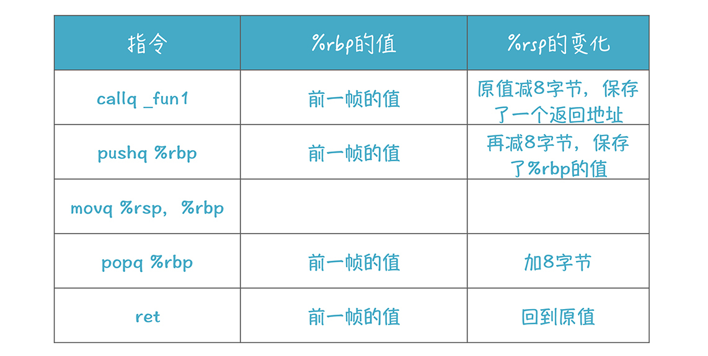
再来看看使用局部变量的时候会发生什么：
subq $4, %rsp # 扩展栈
movl $10, -4(%rbp) # 变量c赋值为10，也可以写成 movl $10, (%rsp)
...
addq $4, %rsp # 缩小栈
我们通过减少%rsp的值，来扩展栈，然后在扩展出来的4个字节的位置上写入整数，这就是变量c的值。在返回函数前，我们通过addq $4, %rsp再把栈缩小。这个过程如下图所示：

在这个例子中，我们通过移动%rsp指针来改变帧的大小。%rbp和%rsp之间的空间就是当前栈帧。而过程调用和退出过程，分别使用call指令和ret指令。“callq _fun1”是调用_fun1过程，这个指令相当于下面两句代码，它用到了栈来保存返回地址：
pushq %rip # 保存下一条指令的地址，用于函数返回继续执行
jmp _fun1 # 跳转到函数_fun1
_fun1函数用ret指令返回，它相当于：
popq %rip #恢复指令指针寄存器
jmp %rip
上一讲，我提到，在X86-64架构下，新的规范让程序可以访问栈顶之外128字节的内存，所以，我们甚至不需要通过改变%rsp来分配栈空间，而是直接用栈顶之外的空间。
上面的示例程序，你可以用as命令生成可执行程序，运行一下看看，然后试着做一下修改，逐步熟悉汇编程序的编写思路。
示例2：同时使用寄存器和栈来传参
上一个示例中，函数传参只使用了两个参数，这时是通过两个寄存器传递参数的。这次，我们使用8个参数，来看看通过寄存器和栈传参这两种不同的机制。
在X86-64架构下，有很多的寄存器，所以程序调用约定中规定尽量通过寄存器来传递参数，而且，只要参数不超过6个，都可以通过寄存器来传参，使用的寄存器如下：
超过6个的参数的话，我们要再加上栈来传参：

根据程序调用约定的规定，参数1～6是放在寄存器里的，参数7和8是放到栈里的，先放参数8，再放参数7。
在23讲，我会带你为下面的一段playscript程序生成汇编代码：
//asm.play
int fun1(int x1, int x2, int x3, int x4, int x5, int x6, int x7, int x8){
int c = 10;
return x1 + x2 + x3 + x4 + x5 + x6 + x7 + x8 + c;
}
println("fun1:" + fun1(1,2,3,4,5,6,7,8));
现在，我们可以按照调用约定，先手工编写一段实现相同功能的汇编代码：
# function-call2-craft.s 函数调用和参数传递
# 文本段,纯代码
.section __TEXT,__text,regular,pure_instructions
_fun1:
# 函数调用的序曲,设置栈指针
pushq %rbp # 把调用者的栈帧底部地址保存起来
movq %rsp, %rbp # 把调用者的栈帧顶部地址,设置为本栈帧的底部
movl $10, -4(%rbp) # 变量c赋值为10,也可以写成 movl $10, (%rsp)
# 做加法
movl %edi, %eax # 第一个参数放进%eax
addl %esi, %eax # 加参数2
addl %edx, %eax # 加参数3
addl %ecx, %eax # 加参数4
addl %r8d, %eax # 加参数5
addl %r9d, %eax # 加参数6
addl 16(%rbp), %eax # 加参数7
addl 24(%rbp), %eax # 加参数8
addl -4(%rbp), %eax # 加上c的值
# 函数调用的尾声,恢复栈指针为原来的值
popq %rbp # 恢复调用者栈帧的底部数值
retq # 返回
.globl _main # .global伪指令让_main函数外部可见
_main: ## @main
# 函数调用的序曲,设置栈指针
pushq %rbp # 把调用者的栈帧底部地址保存起来
movq %rsp, %rbp # 把调用者的栈帧顶部地址,设置为本栈帧的底部
subq $16, %rsp # 这里是为了让栈帧16字节对齐，实际使用可以更少
# 设置参数
movl $1, %edi # 参数1
movl $2, %esi # 参数2
movl $3, %edx # 参数3
movl $4, %ecx # 参数4
movl $5, %r8d # 参数5
movl $6, %r9d # 参数6
movl $7, (%rsp) # 参数7
movl $8, 8(%rsp) # 参数8
callq _fun1 # 调用函数
# 为pritf设置参数
leaq L_.str(%rip), %rdi # 第一个参数是字符串的地址
movl %eax, %esi # 第二个参数是前一个参数的返回值
callq _printf # 调用函数
# 设置返回值。这句也常用 xorl %esi, %esi 这样的指令,都是置为零
movl $0, %eax
addq $16, %rsp # 缩小栈
# 函数调用的尾声,恢复栈指针为原来的值
popq %rbp # 恢复调用者栈帧的底部数值
retq # 返回
# 文本段,保存字符串字面量
.section __TEXT,__cstring,cstring_literals
L_.str: ## @.str
.asciz "fun1 :%d \n"
用as命令，把这段汇编代码生成可执行文件，运行后会输出结果：“fun1: 46”。
as functio-call2-craft.s -o function-call2
./function-call2
这段程序虽然有点儿长，但思路很清晰，比如，每个函数（过程）都有固定的结构。7～10行，我叫做序曲，是设置栈帧的指针；25~26行，我叫做尾声，是恢复栈底指针并返回；13~22行是做一些计算，还要为本地变量在栈里分配一些空间。
我建议你读代码的时候，对照着每行代码的注释，弄清楚这条代码所做的操作，以及相关的寄存器和内存中值的变化，脑海里有栈帧和寄存器的直观的结构，就很容易理解清楚这段代码了。
除了函数调用以外，我们在编程时经常使用循环语句和if语句，它们转换成汇编是什么样子呢？我们来研究一下，首先看看while循环语句。
示例3：循环语句的汇编码解析
看看下面这个C语言的语句：
void fun1(int a){
while (a < 10){
a++;
}
}
我们要使用”gcc -S ifstmt.c -o ifstmt.s”命令，把它转换成汇编语句（注意不要带优化参数）：
.section __TEXT,__text,regular,pure_instructions
.macosx_version_min 10, 15
.globl _fun1 ## -- Begin function fun1
.p2align 4, 0x90
_fun1: ## @fun1
.cfi_startproc
## %bb.0:
pushq %rbp
.cfi_def_cfa_offset 16
.cfi_offset %rbp, -16
movq %rsp, %rbp
.cfi_def_cfa_register %rbp
movl %edi, -4(%rbp) #把参数a放到栈里
LBB0_1: ## =>This Inner Loop Header: Depth=1
cmpl $10, -4(%rbp) #比较参数1和立即数10,设置eflags寄存器
jge LBB0_3 #如果大于等于，则跳转到LBB0_3基本块
## %bb.2: ## in Loop: Header=BB0_1 Depth=1
movl -4(%rbp), %eax #这2行，是给a加1
addl $1, %eax
movl %eax, -4(%rbp)
jmp LBB0_1
LBB0_3:
popq %rbp
retq
.cfi_endproc
## -- End function
.subsections_via_symbols
这段代码的15、16、21行是关键，我解释一下：
- 第15行，用cmpl指令，将%edi寄存器中的参数1（即C代码中的参数a）和立即数10做比较，比较的结果会设置EFLAGS寄存器中的相关位。
EFLAGS中有很多位，下图是Intel公司手册中对各个位的解释，有的指令会影响这些位的设置，比如cmp指令，有的指令会从中读取信息，比如16行的jge指令：
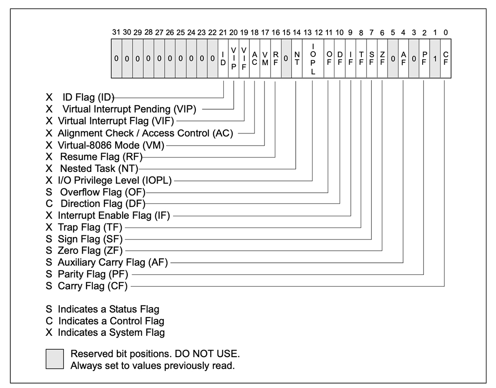
第16行，jge指令。jge是“jump if greater or equal”的缩写，也就是当大于或等于的时候就跳转。大于等于是从哪知道的呢？就是根据EFLAGS中的某些位计算出来的。
第21行，跳转到循环的开始。
在这个示例中，我们看到了jmp（无条件跳转指令）和jge（条件跳转指令）两个跳转指令。条件跳转指令很多，它们分别是基于EFLAGS的状态位做不同的计算，判断是否满足跳转条件，看看下面这张表格：

表格中的跳转指令，是基于有符号的整数进行判断的，对于无符号整数、浮点数，还有很多其他的跳转指令。现在你应该体会到，汇编指令为什么这么多了。好在其助记符都是有规律的，可以看做英文缩写，所以还比较容易理解其含义。
另外我再强调一下，刚刚我让你生成汇编时，不要带优化参数，那是因为优化算法很“聪明”，它知道这个循环语句对函数最终的计算结果没什么用，就优化掉了。后面学优化算法时，你会理解这种优化机制。
不过这样做，也会有一个不好的影响，就是代码不够优化。比如这段代码把参数1拷贝到了栈里，在栈里做运算，而不是直接基于寄存器做运算，这样性能会低很多，这是没有做寄存器优化的结果。
示例4：if语句的汇编码解析
循环语句看过了，if语句如何用汇编代码实现呢？
看看下面这段代码：
int fun1(int a){
if (a > 10){
return 4;
}
else{
return 8;
}
}
把上面的C语言代码转换成汇编代码如下：
.section __TEXT,__text,regular,pure_instructions
.macosx_version_min 10, 15
.globl _fun1 ## -- Begin function fun1
.p2align 4, 0x90
_fun1: ## @fun1
.cfi_startproc
## %bb.0:
pushq %rbp
.cfi_def_cfa_offset 16
.cfi_offset %rbp, -16
movq %rsp, %rbp
.cfi_def_cfa_register %rbp
movl %edi, -8(%rbp)
cmpl $10, -8(%rbp) #将参数a与10做比较
jle LBB0_2 #小于等于的话就调转到LBB0_2基本块
## %bb.1:
movl $4, -4(%rbp) #否则就给a赋值为4
jmp LBB0_3
LBB0_2:
movl $8, -4(%rbp) #给a赋值为8
LBB0_3:
movl -4(%rbp), %eax #设置返回值
popq %rbp
retq
.cfi_endproc
## -- End function
.subsections_via_symbols
了解了条件跳转指令以后，再理解上面的代码容易了很多。还是先做比较，设置EFLAGS中的位，然后做跳转。
示例5：浮点数的使用
之前我们用的例子都是采用整数，现在使用浮点数来做运算，看看会有什么不同。
看看下面这段代码：
float fun1(float a, float b){
float c = 2.0;
return a + b + c;
}
使用-O2参数，把C语言的程序编译成汇编代码如下：
.section __TEXT,__text,regular,pure_instructions
.macosx_version_min 10, 15
.section __TEXT,__literal4,4byte_literals
.p2align 2 ## -- Begin function fun1
LCPI0_0:
.long 1073741824 ## float 2 常量
.section __TEXT,__text,regular,pure_instructions
.globl _fun1
.p2align 4, 0x90
_fun1: ## @fun1
.cfi_startproc
## %bb.0:
pushq %rbp
.cfi_def_cfa_offset 16
.cfi_offset %rbp, -16
movq %rsp, %rbp
.cfi_def_cfa_register %rbp
addss %xmm1, %xmm0 #浮点数传参用XMM寄存器，加法用addss指令
addss LCPI0_0(%rip), %xmm0 #把常量2.0加到xmm0上，xmm0保存返回值
popq %rbp
retq
.cfi_endproc
## -- End function
.subsections_via_symbols
这个代码的结构你应该熟悉了，栈帧的管理方式都是一样的，都要维护%rbp和%rsp。不一样的地方，有几个地方：
传参。给函数传递浮点型参数，是要使用XMM寄存器。
指令。浮点数的加法运算，使用的是addss指令，它用于对单精度的标量浮点数做加法计算，这是一个SSE1指令。SSE1是一组指令，主要是对单精度浮点数(比如C或Java语言中的float)进行运算的，而SSE2则包含了一些双精度浮点数（比如C或Java语言中的double）的运算指令。
返回值。整型返回值是放在%eax寄存器中，而浮点数返回值是放在xmm0寄存器中的。调用者可以从这里取出来使用。
课程小结
利用本节课的加餐，我带你把编程中常见的一些场景，所对应的汇编代码做了一些分析。你需要记住的要点如下：
函数调用时，会使用寄存器传参，超过6个参数时，还要再加上栈，这都是遵守了调用约定。
通过push、pop指令来使用栈，栈与%rbp和%rsp这两个指针有关。你可以图形化地记住栈的增长和回缩的过程。需要注意的是，是从高地址向低地址走，所以访问栈里的变量，都是基于%rbp来减某个值。使用%rbp前，要先保护起来，别破坏了调用者放在里面的值。
循环语句和if语句的秘密在于比较指令和有条件跳转指令，它们都用到了EFLAGS寄存器。
浮点数的计算要用到MMX寄存器，指令也有所不同。
通过这次加餐，你会更加直观地了解汇编语言，接下来的课程中，我会带你尝试通过翻译AST自动生成这些汇编代码，让你直观理解编译器生成汇编码的过程。
一课一思
你了解到哪些地方会使用汇编语言编程？有没有一些比较有意思的场景？是否实现了一些普通高级语言难以实现的结果？欢迎在留言区分享你的经验。
最后，感谢你的阅读，如果这篇文章让你有所收获，也欢迎你将它分享给更多的朋友。
用户故事 因为热爱，所以坚持
你好，我是宫文学。
很高兴能够看到你分享自己的学习故事。
通过你的留言和故事分享，我能深刻地感受到你对编译原理的热爱，感谢你能与我一起，坚持学习，努力进步，把编译原理这门硬骨头一点一点、一步一步地消化掉，学有所用。
你好，我是雲至，今年38岁，现在在电力公司做信息运维工作。
虽然我的工作与编译技术并不相关，学习编译原理似乎没有用武之地，但是，编译原理于我而言有着特殊的意义，它伴随了我整个大学时代，“啃”下它，攻破它，成了我多年后的目标。
大学时，我学的是信息与计算科学，那时，接触了很多计算机的数学原理，出于好奇心，我尝试去了解编译原理教材，却觉得像天书一样，整整看了50多遍就是看不懂。虽然不服输，但因为各种客观原因，只好放弃。
其实，我特别想知道计算机语言是怎么样变成能被计算机执行的语言的，步入中年后，我开始计划学习编程语言和计算机基础课，可在学习编程语言时发现如果不懂编译原理的话，自己的认识水平根本无法提高，而那时，我心里那股不服输的劲儿又燃了起来，所以当“极客时间”开设《编译原理之美》课程时，我马上就报了名。现在，学到18讲，我想把自己的感受分享给大家，可文笔不佳，还望大家不要见怪。
感受一：宫老师讲解思路特别清晰，课程设计比较巧妙。
在原理上，老师讲了很多书本上看不到的编程思想，比如清晰化，简单化和好维护。并用清晰的AST还原了程序代码从代码变成可执行的代码的过程。
在学习方法上，宫老师提供了一个比较高效的学习方法，先帮助我建立了对编译器前端技术的直观理解，在“01 | 理解代码：编译器的前端技术”里，让我真正理解了词法分析、语法分析和语义分析到底是什么意思。然后宫老师由浅入深，展开解析，帮助我理清了编译原理的知识体系。
感受二：原理和实践并行， 让我通过动手提升认知。
在学习完词法分析讲之后，我认识到有限状态机的编程思路可以大大简化编码的难度，老师通过计算器的例子，特别清楚地讲明白了这个方法。
而 “08 | 作用域和生存期：实现块作用域和函数”则解决了我很多年的困惑，让我明白了变量的作用域的概念具体是怎么一回事。与此同时，课后老师及时提供了示例代码的链接，我通过动手演练，明白了一些没有搞懂的内容，比如函数、作用域等等。
随着课程不断深入，我的困惑也多了起来，当我在留言区提出自己的疑问时，宫老师总是能不厌其烦地讲解，十分认真负责！十分感谢宫老师带来这个课程，我也会继续努力学习的。
你好，我是沁园，是一名软件工程专业的研二学生。
研一时，我曾学过编译原理的课，但课上老师只讲了一些理论，没有结合实例，学的不明所以。而我自己一直对编译原理非常好奇，好奇编程语言底层到底是怎么实现的，也一直想要探知，本想啃下“龙书”和“虎书”，却因其厚重、难懂而搁置了。
后来，宫老师在极客时间上开设了《编译原理之美》的课程，三个月讲完编译的前端与后端技术，我毫不犹豫地入了坑，并从第一讲一直坚持，学到了现在。在这个过程中，我有一些学习的心得，所以想借此分享给大家，也向宫老师表达感谢之情。
心得一：在我看来，这门课不能只利用碎片的时间，而是需要课下动手和思考的。
因为编译原理本身就比较有难度，外加篇幅所限，只看文本的话，还是会产生困惑。我记得自己在“08 | 作用域和生存期：实现块作用域和函数”时，走入了死胡同，后面的连续几讲都看不明白，几乎快要放弃。
不过，宫老师贴心地在GitHub上提供了全部的源码，而且用到了我比较擅长的Java语言。我相信Java语言的程序利用IDEA的调试器就没有什么看不明白的，于是利用一个周末，把老师提供的示例脚本全部放到解析器中跑，并把解释器用IDEA的调试功能单步执行一遍，观察解释器都是怎么处理类、对象、函数以及闭包的。
调试的过程中，我边调试，边思考，边在笔记上总结，最后才恍然大悟，真正明白了老师讲的内容。真正搞懂之后，一直以来，编译器在我心中的神秘色彩也就消失了，编译中的类型推导，引用消解等高大上的概念也不过是由判断，循环等简单逻辑组成，只不过需要考虑的东西相对多些，如果几十年前让我来创立第一门编程语言，我肯定也这么搞。（目前只学了前端，学完后端以后可能观念还会有所改变）。
心得二：除此之外，这门课非常注重实战，先帮助我们建立直观认识，再去讲细节的算法。
一开始我还很奇怪，课程怎么这么“水”？编译原理不应该先把DFA、NFA、NFA转DFA、LL、LR这些经典算法作为开场吗？这个课程怎么用前三讲就把这些东西“水”过去了，然后开始讲Antlr以及语义分析了呢？
后来我发现，这些内容放在了“算法篇”中讲解。在将老师写的解释器源代码过了一遍之后，我越发地感觉到老师用心良苦。对于实现一门编程语言，实现语义才是最重要的，之前学编译的时候完全陷进了NFA、DFA、LL、LR等算法的细节中，完全没有意识到语义才是一门编程语言的灵魂。
宫老师一开始就教我们如何复用现有的成熟的Antlr规则，然后基于这些规则实现自己的语义，在学习算法篇之前，我就已经有了“如果哪天有需要，我可以徒手写一个编程语言解释器”的自信，之后虽然算法学起来也很吃力，但是不会因为陷进去而感到慌张，因为已经对解释器有了全局的把握。
一年前，我也像很多人一样，觉得编译原理是没有用的屠龙技，后来，我越发感觉编译原理在工作和学习中无处不在，比如Java程序员都会深入学习的JVM，不懂编译很多概念就只是听听，完全不理解。当你需要深入研究某个DB的时候，SQL解析优化器也绕不过去的一个坎，只有懂编译才能搞明白。所以，我庆幸自己能够接触到宫老师的《编译原理之美》，也感谢老师的良苦用心，我会一直坚持学下去，趁年轻，趁热爱，趁一起都还来得及。
编辑角：9月30日～10月6日是期中考试周，宫老师亲自出题，为你策划了20道期中测试题，帮你回顾前端技术要点内容，9月30日来挑战一下吧，不见不散！
编译器的后端技术开篇，也就是第20讲会在10月7日00:00更新。
第二季回归 这次，我们一起实战解析真实世界的编译器
你好，我是宫文学，这次我带着一门全新的课程《编译原理实战课》回来了。
我在《编译原理之美》的开篇词中就说过，编译原理与你的工作息息相关，无论你是前端工程师、后端工程师，还是运维工程师，不论你是初级工程师还是职场老手，编译技术都能给你帮助，甚至让你提升一个级别。
在第一季，我带你一起梳理了编译技术最核心的概念、理论和算法，帮你构建出了一条相对平坦的学习曲线，让你能够理解大多数技术人都很畏惧的编译原理核心知识。在课程更新的过程中，我发现有很多同学都会有这样一个疑问，那就是：“我确实理解了编译技术的相关原理、概念、算法等，但是有没有更直接的方式，能让我更加深入地把知识与实践相结合呢？”
所以，在第二季，我会以实战的方式带你挑战编译原理这个领域，也就是带你一起解析真实世界中的编译器。在课程中，我会带你研究不同语言的编译器的源代码，一起跟踪它们的运行过程，分析编译过程的每一步是如何实现的，并会对有特点的编译技术点加以分析和点评。在这个过程中，你会获得对编译器的第一手的理解。
另外，我还会带你分析和总结前面已经研究过的编译器，让你对现代语言的编译器的结构、所采用的算法以及设计上的权衡，都获得比较真切的认识。
下面是专栏的目录：
为了感谢老同学， 我还准备了一个「专属福利」：
6月1日课程上线，我会送你一张15元专属优惠券，可与限时优惠同享，有效期48小时，建议尽早使用。
点击下方图片，立即免费试读新专栏。
结束语 用程序语言，推动这个世界的演化
据说，第二次世界大战期间，图灵和同事破译的情报，在盟军诺曼底登陆等重大军事行动中发挥了重要作用。历史学家认为，他让二战提早了2年结束，至少拯救了2000万人的生命。也据说，苹果公司的Logo就是用来纪念图灵的。
图灵的故事我不再赘述，你上网随便搜个关键词都能找到。不过，通过这个故事，我们能得到两点启示：
- 对信息的处理能力至关重要，从此信息技术成为了科技进步的主角，一直到现在。
- 科技永远关乎人性，科技是客观的，而推动科技发展的人，是有温度、有故事的。
所以，在《编译原理之美》这个课程结束的今天，除了想跟你好好地说声再见之外，我更多地是想分享作为一个程序员，我们的挣扎、骄傲，以及跟这个社会的关系，跟时代洪流的关系。我有一些感受分享一下。
学习技术的过程，是跟大师对话的过程，是融入科技发展这条历史河流的过程，是一个有温度的心路历程。
有同学在留言区说，这门课，串联了计算机领域的很多基础课程。的确如他所说，当然，我也认为编译原理这门课，串联着整个计算机发展的历史，以及做出重要贡献的一代代大师。
什么是大师？这么说吧。比如你针对某方面的问题琢磨了很多年，有所心得。刚想进一步梳理头绪，就发现有人在多年前，已经针对这方面的问题发表了一个理论，并且论述得很完整，很严密。这个人，就可以叫做大师。
我的一个朋友，某上市公司的副总，原来是在大学教物理的，闲暇时间还会琢磨物理学的理论。有时候，他在琢磨一个点的时候，觉得很有心得，刚想整理出来，再一查文献，发现某个人已经在这个方向发表了成果。他形象地比喻说，刚想写《红楼梦》呢，发现一个叫曹雪芹的已经写了。
计算机领域也有很多大师。我们在学编译原理的时候，其实一直在跟各位大师邂逅。
比如，当讨论有限自动机的时候，你知道那是一个最简单的图灵机（Turling Machine）。你再去阅读这方面的资料，会发现图灵那时在思考什么是计算，这种根本性的问题。
当我们探讨到程序运行环境、汇编语言、机器语言的时候，你会感觉似乎跟冯·诺依曼（John Von Neumann）走近了。你会感受到第一代程序员，用机器码写程序是什么感觉。
第一代程序员的人数只有个位数，他们甚至当时都没有考虑到，还可以用别的方式写程序。所以，当冯·诺依曼的一个学生发明汇编的写法时，这位老师甚至觉得那不叫写程序。
而只有你自己动手写了汇编代码，你才能体会到，第二代程序员是怎样写程序的，其中包括比尔·盖茨（Bill Gates）。显然，比尔·盖茨认为普通程序员应该用更简单的语言，于是他写了一个Basic语言的解释器。其他熟练使用汇编语言的程序员，还包括为阿波罗登月计划，编写程序的传奇女程序员，玛格丽特·希菲尔德·汉密尔顿（Margaret Heafield Hamilton）。以及中国的雷军等等。题外话，我看过一个图表，早期程序员中，女性的比例很高，希望未来更多的女性回归这个行业。
接下来，你会遇到C语言的发明人丹尼斯·里奇（Dennis Ritchie）， 他的工作是基于肯.汤普森（Ken Thompson）的B语言。这俩人还是Unix操作系统的发明者。目前，肯.汤普森仍在Go语言项目组中工作。
我们使用的Java、JavaScript、Go语言等的语法风格，都是一路受到C语言的影响。我们做编译器的时候，要考虑调用约定、二进制接口，也能从这里找到源头。
在前端部分，我们讨论过面向对象的语义特征，和类型系统。而面向对象的编程思想，在60年代就被提出了，经由80年代的C++和90年代的Java才开始盛行。
我们同样简单实现过一等公民的函数和高阶函数，它们是函数式编程的特征。最近几年函数式编程的思想开始热起来，但它的起源更早，可以追溯到30年代阿隆佐·邱奇（Alonzo Church）提出的Lambda演算理论中。
邱奇用一种与图灵不同的方式，探讨了什么叫做计算，这个根本问题。他的思想于50年代体现在Lisp语言上。Lisp的发明人是人工智能的先驱约翰·麦卡锡（John McCarthy），这门语言成了计算机语言一些重要基因的来源，JavaScript、Ruby、Clojure、Scala、Julia等语言都从中汲取营养。我最近在研究云计算环境下的分布式数据库问题，发现可能还是要借鉴函数式编程的思想。
再有，编译原理中的属性语法和很多算法，不能不提高德纳（Donald Ervin Knuth）的贡献。他的著作应该成为你的必读。
当我们讨论Java的一些特征时，你可以试着体会Java语言之父詹姆斯·高斯林（James Gosling）当初设计字节码时在想什么。你还可以体会一下 布兰登·艾奇（Brendan Eich） 用很短的时间发明JavaScript时，是汲取了前人的哪些思想，以及是如何做出那些重要的决定的，这些决定使得JavaScript在元编程能力、函数式编程等方面，直到现在都焕发出勃勃生机。
当你学会编译原理的一个个知识点的时候，就是一步步走近大师们的过程。他们的名字不再是教科书上抽象的符号，你已经能够逐渐欣赏他们的思想，感受到他们的感受，和他们隔着时空交流。而当你凭着自己的经验，探索到了跟他们相同的方向上，你会更觉得有成就感，会觉得自己真正融入了科技演化的洪流中，算是开了窍了，算是其中的一份子了。
我想，真正在科技领域做出重大成绩的人，都会有这样一种，摸到了科技发展脉搏的感觉。据说，张小龙曾经说过，读懂了《失控》这本书的人，可以直接去他的团队上班。我猜，他对复杂系统科学情有独钟，产生了很多的心得。而任正非先生则对热力学中熵的理论感触很深，并把它深刻地融入到了华为的价值观和管理体系中。
除此之外，我们还要感谢Antlr工具的作者特恩斯·帕尔（Terence Parr）以及LLVM的核心作者 克里斯·拉特纳（Chris Lattner） 。通过阅读他们的文章和代码，以及其他研究者的论文，你会感受到这个领域最前沿的脉搏。
而通过编译原理中的一些应用课程，我们还可以更好地理解Spring等工具的设计者的思维。并且思考，是否自己也有能力驾驭这样的项目，从而成为技术进步洪流中的博浪者。
我相信，如果你不想学习编译原理，可以轻松找到一百个理由。比如：
- 这个课程太难，我恐怕学不会；
- 这个课程跟我现在的工作关系不大；
- 我没有时间；
- 连谁谁谁都没有学，我就不凑这个热闹了；
- …
但如果你想下定决心学会它的话，只要有一个理由就行了，那就是，你也可以成为技术进步洪流中的博浪者，而不是岸边的旁观者。这时，你的自我意识会觉醒：我来了，我要参与。在信息技术成为社会进步关键推动力的今天，这是作为一名程序员的傲骨。
更为重要的是，越来越多的中国程序员已经登上了舞台。越来越多高质量的开源项目，背后是一个个中国名字。我查阅自动化编程这个最前沿领域的文献时，发现文献上也不乏中国名字！
整个世界的目光也开始投向中国，因为他们越来越相信中国的创新能力。我们也确实有能力，因为我们已经有了云计算、人工智能和5G技术的积淀，我们正在芯片领域奋起直追，完全自主的操作系统已经开始萌芽。而在这些领域，编译技术都能大展身手。最重要的是，中国作为全球最大的市场之一，拥有最丰富的应用场景，也拥有越来越相信中国创新能力的消费者。
我相信，学习这门课的学员中，不管是大学生，还是已经很有工作经验的大侠，会有相当一批人，在下一个10年，使用编译技术做出一番成绩。
对我来说，我很高兴有机会专心致志地梳理编译原理相关的知识体系。而在梳理到每个知识点的时候，我都会迸发出很多灵感。这些灵感将会融入到我正在开发的一个软件和后续的工作中。
在这个过程中，我还有一个额外的收获，就是感觉自己的写作水平和普通话水平都提高了。原因很简单：因为每篇文稿都要改好几遍，录音有时也要录几遍。而把陡峭的学习曲线，变成一个让你缓缓爬坡的过程，也促使我必须竭尽全力！
我也觉得用仅仅40讲左右的课程，涵盖整个编译原理的知识体系，恐怕会显得不足。虽然涵盖了主要的知识点和脉络，但我在进入每个技术点的时候，发现要把这个点完全展开，可能都需要好几讲才行。不过没关系，我和极客时间还有进一步的计划，你可以等待好消息！
总的来说，信息技术的进步史，也是一代代大师的人文故事史。而编译技术让我们有机会走近这些大师，与他们对话，并加入他们。中国的程序员面临着历史的机遇，而抓住机遇的关键，是自我意识的觉醒，是敢于成为科技进步历史洪流中的博浪者的决心。
希望与你共勉，一起进步！
最后，我为你准备了一份结课问卷，题目不多，两三分钟就可以完成。希望你能畅所欲言，把自己真实的学习感受和意见表达出来，我一定会认真看，期待你的反馈。当然，如果你对专栏内容还有什么问题，也欢迎你在留言区继续提问，我会持续回复你的留言，我们江湖再见！